Phần 1: Con Đường Bollettieri, Triết Lý Học Viện & Mối Quan Hệ Cha Mẹ - Huấn Luyện Viên
Chương 1: Học Viện Quần Vợt Bollettieri: Lò Luyện Đỉnh Cao & Văn Hóa Khắc Nghiệt Chapter 1: The Academy: High-Intensity Culture and Blueprint for Champions
mất khoảng năm giờ từ Miami đến Sarasota, qua Everglades và lên bờ biển phía tây Florida trên Quốc lộ Hoa Kỳ 41, một đoạn đường cao tốc dài vô tận. Khi nào tôi đã thực hiện chuyến đi đó vào
1975, mượn xe đi phỏng vấn xin việc, tôi hơi chán nản và không chắc chắn về tương lai của mình.
Đây tôi là, 42 tuổi, một vận động viên quần vợt chuyên nghiệp trong hơn hai thập kỷ, một người chăm chỉ theo tiêu chuẩn của bất kỳ ai, và sự nghiệp của tôi, nói theo thuật ngữ quần vợt, giống như sự nghiệp của một tay vợt đang vật lộn để vượt qua các vòng loại trên đường đua vệ tinh. Đúng, tôi đã đạt được một số thành công, nhưng không có gì giống như tôi muốn, không có gì giống tôi đã hình dung khi tôi bắt đầu.
Julio Moros, cánh tay phải của tôi, vẫn đi cùng tôi trong chuyến đi đó. Hôm nay anh ấy nói với mọi người: “Tất cả những gì chúng tôi có để đựng hành lý là
Tên của Nick, và đó không phải là một cái tên quá lớn!”
Ngay bây giờ tôi đôi khi thấy mình đứng lùi lại và lấy lại hơi thở tôi hãy nhìn quanh Học viện Quần vợt Nick Bollettieri ở Bradenton, Fla. Một số người gọi nó là nhà máy quần vợt. Tôi thích coi nó như một trường học hoàn thiện hơn. Chúng tôi có mọi thứ bạn cần để xây dựng nhà vô địch (chỉ cần thêm nước, gia vị và đun nhỏ lửa dưới ánh mặt trời khoảng sáu giờ một ngày). Có 42 sân ngoài trời và 4 sân trong nhà. Học sinh của chúng tôi sống trong năm tòa nhà phố và chúng tôi có một tòa nhà khác đang được xây dựng. Có một trung tâm đào tạo Nautilus, một bể bơi, một thư viện/phòng học, hai quán ăn tự giao bóng—và danh sách này vẫn tiếp tục kéo dài. Nhưng thành phần lớn nhất của chúng tôi là con người. Tôi muốn nói rằng từ những con số tạo nên những tay vợt giỏi, và từ những tay vợt giỏi sẽ tạo ra những tay vợt xuất sắc. Chúng tôi có 200 sinh viên toàn thời gian từ khắp nơi trên thế giới và có mối quan hệ làm việc với nhiều tay vợt hàng đầu ở các đường đua nam và nữ.
Nhưng tất cả những điều đó đều ở tương lai với tư cách là Julio và tôi tiếp tục đi về hướng Khách sạn Colony Beach và Khu nghỉ dưỡng Quần vợt. Tôi đã rời bỏ công việc giám đốc quần vợt tại khu nghỉ dưỡng Dorado Beach ở Puerto Rico, nơi tôi đã hoạt động được 17 năm và sự kết hợp của nhiều yếu tố đã dẫn đến sự sụp đổ của All-American Sports, một loạt trại quần vợt dành cho người lớn tôi đã làm việc. Brian Gottfried, người bạn tốt và người bảo trợ của tôi, giờ đây đã trưởng thành, có gia đình và đang thi đấu chuyên nghiệp. Chúng tôi vẫn giữ liên lạc nhưng không còn như ngày xưa, khi anh và tôi đã cùng nhau đi du lịch trong suốt mùa hè, điều chỉnh trò chơi của mình. Julio nói đúng—anh ấy và tôi không có nhiều hành lý.
Bằng cách nào đó tôi đã thuyết phục Tiến sĩ Murph Klauber, chủ sở hữu của Colony rằng tôi là người điều hành hoạt động quần vợt của mình. Tiến sĩ Klauber là một bác sĩ chỉnh nha đến từ Buffalo và tầm nhìn của ông là biến Colony trở thành một trong những khu nghỉ dưỡng nổi bật ở Florida, sử dụng quần vợt làm trung tâm. Tôi nghĩ rằng chúng tôi sẽ tạo thành một đội tốt.
Sở thích chính của tôi luôn là dạy trẻ em. Trong nhiều năm, tôi đã điều hành một trại quần vợt mùa hè tại Học viện Wayland ở Beaver Dam, Wis., phát triển nhiều lý thuyết giảng dạy và bài tập mà chúng ta vẫn sử dụng ngày nay: Nhanh lên, nhanh lên, nhanh lên. Tiếp tục di chuyển. Đừng đi theo dòng. Đánh sâu, không vào lưới. Cú vô lê đó. Từ thấp đến cao trong những lần đột phá của bạn.
Thực hiện cú giao bóng. Vào lưới, ép đối thủ.
Đại loại thế. Điều tương tự cũng xảy ra khi cùng với
Hy Zausner, tôi đã thành lập Học viện Quần vợt Port Washington bên ngoài Thành phố New York, một cơ sở sau này sẽ đào tạo ra những nhà vô địch như Vitas Gerulaitis và John
Chúng tôi bắt đầu ở Colony để huấn luyện trẻ em địa phương. Vào mùa giải tiếp theo, chúng tôi đã có được danh tiếng nhỏ và đã mua một câu lạc bộ quần vợt ở Bradenton gần đó với một đối tác mới,
Mike DePalmer, có hai người con, Michelle và Mike, Jr., cũng là những tay vợt đầy triển vọng. Chúng tôi đã thêm Anne White vào nhóm cốt lõi này; mời cô ấy từ nhà cô ấy ở Charleston, W.Va. Cô ấy chuyển đến nhà ông DePalmer.
Những vị khách ở Colony thích xem bọn trẻ tập thể dục sau giờ học. Đối với người lớn, nó giống như xem một màn ảo thuật.
Học sinh đánh bóng mạnh quá! Pa-pa-pow, tôi luôn luôn nói. Bố-pow. Hãy làm đi. Trẻ em không hề sợ hãi, trừ khi chúng được dạy điều đó bởi người khác hoặc thông qua kinh nghiệm. Đó là lý do vì sao trẻ em là những người học tuyệt vời. Họ không có định kiến trước về thất bại. Con đường lên đỉnh chỉ gồm một bước
THE BOLLETTIERI WAY lùi lại cứ sau ba bước tiến và khi bạn trở nên sợ những bước lùi, đó là lúc bạn có khả năng ngừng tiến bộ.
Vào tháng 8 năm 1978, khi tôi trở lại Thuộc địa sau khi trải qua mùa hè ở trại Beaver Dam của tôi, tôi có một chút bất ngờ dành cho Julio Moros.
“Hãy chuẩn bị sẵn sàng cho 25 sinh viên đến đây toàn thời gian vào tháng tới,” Tôi nói.
“Thật tuyệt, Nick,” Julio trả lời. “Bây giờ họ sẽ sống ở đâu?”
“| công việc của tôi là đưa họ đến đây,” Tôi nói. “Việc của bạn là tìm cho họ một nơi để ở.”
Julio đi làm, các nhân viên còn lại cũng vậy. Thực tế là tất cả chúng tôi đã làm việc suốt 9 tháng không có ngày nghỉ. Thích tôi hãy nói với bọn trẻ bây giờ, “Không ai nói việc đó sẽ dễ dàng cả.” Điều đó không hề dễ dàng đối với họ và cũng không dễ dàng đối với chúng tôi về mặt giảng dạy. Khi một chàng trai trẻ bước vào văn phòng của tôi và xin việc làm huấn luyện viên quần vợt, có một cách để anh ta kết thúc cuộc phỏng vấn gần như trước khi nó bắt đầu. “Giờ của tôi là mấy giờ?” là những lời lẽ chí mạng.
Ngay từ đầu, chương trình quần vợt đã rất tuyệt vời.
Ngay cả bây giờ, công việc dễ dàng nhất của tôi vẫn là giảng dạy. Phần khó nhất là phải đối mặt với những tác động từ bên ngoài. Đó là lý do tại sao chúng tôi có một quy tắc kỷ luật nghiêm ngặt như vậy. Chúng tôi đã nới lỏng một số tiêu chuẩn của mình một chút thông qua việc thử và sai trong nhiều năm, chẳng hạn như bãi bỏ lệnh cấm trẻ em sử dụng điện thoại trừ khi được phép, nhưng chúng tôi vẫn tin chắc rằng chúng tôi càng mang lại cho học sinh sự tập trung cao độ thì các em sẽ càng học tốt hơn.
Một số người đã gọi chúng tôi là trại huấn luyện quần vợt. Tôi có thể sống với điều đó. Quần vợt là một môn thể thao độc đáo. Bạn có thể trở thành triệu phú ở đâu khác ở tuổi 17, như Andrea Jaeger đã tham gia vòng đua dành cho nữ? Áp lực đè nặng ngay từ khi còn trẻ, thời điểm mà các tay vợt trẻ nổi tiếng là kém tập trung. Sự nghiệp quần vợt rất mong manh - giống như một tia sáng: gặp sự cố, ở đây rồi biến mất. Vậy tại sao không tập luyện chăm chỉ? Tại sao không từ bỏ một vài thứ để có cơ hội trở nên vĩ đại? Người ta nói tôi yêu cầu bọn trẻ hy sinh.
tôi nói: “Sự hy sinh gì?” Hãy hỏi Jimmy Arias hoặc Carling Bassett. Nói chuyện với Anne White, Rodney Harmon, Pablo Arraya, Kathleen
Horvath, Eric Korita, hoặc Pam Casale. Hãy xem liệu họ có cảm thấy mình đã bỏ lỡ điều gì vì sự cống hiến cho quần vợt hay không. Tất cả họ đều thuộc nhóm sinh viên đầu tiên của chúng tôi. Bây giờ họ đang ở trên đường đua chuyên nghiệp. Từ những con số đến những tay vợt giỏi. Từ những tay vợt giỏi sẽ có những tay vợt xuất sắc. Đó là công thức để thành công.
Khi các con tôi bước vào các giải đấu cấp cơ sở trong những năm đầu đó, những tay vợt khác nhìn chúng như thể Thủy quân lục chiến đã đổ bộ. Chúng tôi đã có kỷ luật. Chúng tôi đã có sự tôn trọng.
Những đứa trẻ phát triển mạnh mẽ trong môi trường này. Mẹ của Jimmy Arias thường gọi điện cho anh khi anh mới đến. “Khi nào cậu về nhà?” cô ấy sẽ hỏi anh ấy. Nếu các phóng viên có mặt xung quanh và kể chuyện trong trại, Jimmy sẽ nói với họ, “Tôi không nỡ nói với cô ấy điều đó | tôi không muốn về nhà.”
Sớm tôi nhận ra tầm quan trọng của việc đối xử bình đẳng với mọi người. Có một sự việc khét tiếng liên quan đến Jimmy. Không nghi ngờ gì nữa, Jimmy chính là ngôi sao của trại. Anh ta chỉ nhỉnh hơn một chút so với những cậu bé khác, một đứa trẻ nhện như con nhện, có đầy đủ tay chân và thân hình gầy gò, người hoàn toàn có thể bẻ một cú thuận tay. Anh ấy cũng có một chút nghịch ngợm về anh ấy. Không có gì nghiêm trọng. Chỉ Nick Bollettieri trẻ hơn khoảng ba thập kỷ. Anh ta có thói quen đập vợt xuống sân nếu đánh một cú đánh không tốt. “Không nảy vợt của bạn,” Tôi chắc hẳn đã mắng anh cả ngàn lần. Một ngày tôi thấy anh ta đánh trượt, sau đó đập vợt xuống đất. Ba sân đấu hơn, tôi lao tới như một người đàn ông bị ma nhập, lao tới, giật cây vợt khỏi tay anh ta và hét lên, "Này, anh muốn nảy vợt của mình à? Hãy nảy nó thật sự đi!" Với điều đó tôi đập nó xuống đất. Jimmy không thể tin được! “Nick,” anh nói một cách buồn bã,
“đó là cây vợt yêu thích của tôi.” Nó đã dạy cho anh một bài học. Tôi đừng nghĩ rằng Jimmy sẽ lại đập cây vợt của mình xuống sân lần nữa.
Chúng tôi có trách nhiệm lớn lao với cha mẹ. Họ đã trao cho chúng tôi con cái của họ. Tôi nhớ lần đầu tôi đã nhìn thấy Carling Bassett. Cô xuất hiện cùng cha mình, John, hiện là một người bạn tốt và là người hỗ trợ tuyệt vời của Học viện. Nhưng hồi đó, anh chỉ là một bậc cha mẹ khác. Họ đến Colony vào một buổi chiều. John Bassett yêu cầu tôi đánh con gái ông ấy.
Carling khi đó mới 11 tuổi, một đứa trẻ nhỏ gầy gò đang niềng răng. Nhưng nhanh chóng tôi thấy rằng cô ấy là một tay vợt. Pa-pa-pow! Bóng bay qua lưới. Cô đặt mọi thứ vào đó.
Chúng tôi đã hoàn thành và tôi bước tới chỗ bố cô. “Cô ấy thật tuyệt,” Tôi nói với anh ấy.
Anh nhìn Carling, người đang có vẻ mặt háo hức và mong đợi. Rồi anh quay lại với tôi. “Cô ấy là của anh,” anh nói.
Đến tháng 9 năm 79, danh tiếng của chúng tôi đã phát triển đến mức chúng tôi có 100 sinh viên sống cùng. Các thỏa thuận đã được thực hiện với Học viện Bradenton để bọn trẻ có được
CON ĐƯỜNG BOLLETTIERI
Carling Bassett và Nick, 1978.
đi học, từ 7 giờ 30 đến 12 giờ mỗi sáng. (Ngày nay chúng tôi cũng sử dụng Trường Tân giáo St. Stephen.) Chúng tôi đã mua một nhà nghỉ cũ ở Bradenton, cải tạo nó và sử dụng nó làm chỗ ngủ cho bọn trẻ. Chúng tôi thuê một đầu bếp làm việc toàn thời gian, mở rộng nhà bếp và các cơ sở ăn uống, đồng thời mua lại một
Xe buýt 66 hành khách, cũng như xe tải và xe tải. Mọi người đều bị cuốn vào sự nhiệt tình. Một số buổi tối, tôi sẽ bất ngờ đến thăm ký túc xá của trại và tìm thấy cha mẹ của một trong những học sinh đó, xung quanh là một đám trẻ khác. Họ sẽ xem một đoạn băng ghi lại quá trình tập luyện trong ngày.
Tuy nhiên, chúng tôi ngày càng cần nhiều chỗ hơn. Cuối cùng, vào năm 1980, với sự giúp đỡ của người bạn Louis Marx, ước mơ của chúng tôi đã thành hiện thực và chúng tôi chuyển đến cơ sở hiện tại. Lần này, Julio sẽ nói với bạn, chúng tôi mang theo cả đống hành lý.
Chúng tôi không có kế hoạch chi tiết để thành công trong những năm đầu tiên đó. Điều chúng tôi nhận ra là mỗi người trẻ đều khác nhau. Chúng tôi đã cố gắng điều chỉnh hệ thống phù hợp với tay vợt chứ không phải ngược lại. Không có công thức đảm bảo cho món Tennis Champion Souffle.
Rõ ràng là không phải ai cũng có thể trở thành nhà vô địch; người thắng thì phải có người thua. Nhưng những bài học bạn học được trên sân tennis sẽ giúp ích rất nhiều cho bạn trong cuộc sống. Chúng tôi đề cập đến thành tích giải đấu tuyệt vời của các tay vợt vì rõ ràng chúng là sự chứng thực cho hệ thống của chúng tôi, nhưng tôi đảm bảo với bạn rằng những sát thủ của chúng tôi, những người đã quyết định từ bỏ sự nghiệp quần vợt chuyên nghiệp, cũng đã vận dụng tốt những bài học mà họ đã học được tại Học viện. Họ đã học được cách không nẩy vợt, hy sinh và chiến đấu hết mình. Họ đã trưởng thành và chúng tôi cũng đã trưởng thành cùng họ.
Tại Học viện: chào mừng đến với NBTA (phải); Nick nhìn ra 46 sân của mình (bên dưới), với trung tâm trong nhà bên trái, phía sau thư viện và văn phòng. Trang đối diện:
chạy theo hàng, chống đẩy để ăn tráng miệng, và sau đó
CON ĐƯỜNG BOLLETTIERI
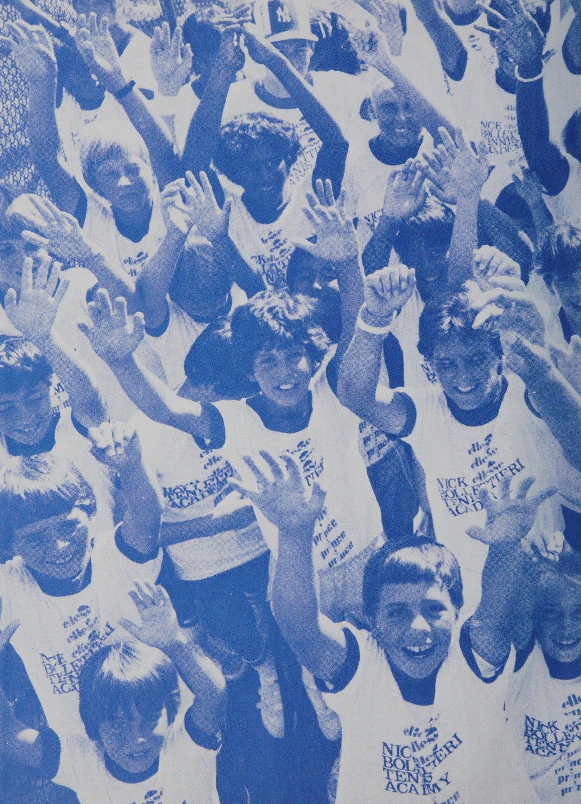
Hình 1: Học viện Quần vợt Nick Bollettieri (NBTA) tại Bradenton, Florida — Môi trường tôi luyện tính cách và lò đào tạo thế hệ nhà vô địch thế giới.
Figure 1: The Nick Bollettieri Tennis Academy (NBTA) in Bradenton, Florida — Groundbreaking competitive academy culture forging future champions.
Chương 2: Quần Vợt — Trò Chơi Của Những Nhà Vô Địch: Tính Cách, Sự Tận Tụy & Kỷ Luật Chapter 2: A Game for Champions: Character, Devotion, and Uncompromising Discipline
tôi yêu quần vợt. Tôi yêu thích nó một cách chuyên nghiệp như cách các kiến trúc sư ngưỡng mộ những bản vẽ của họ hay cách những người kế toán tự hào về sổ cái của họ. Tôi yêu nó như nghệ thuật, không kém gì những gì nó thể hiện khi được chơi ở cấp độ cao nhất - thiên tài được bộc lộ, sự cạnh tranh gợi ý về nguồn dự trữ tinh thần của con người. Bạn cần có can đảm để chơi trò chơi này. Bạn cần một bộ não, một kế hoạch tấn công và ý chí kiên trì thực hiện nó. Bạn cần thể lực, phản xạ, sự táo bạo. Và bạn không bước đi một mình.
Chưa có vận động viên quần vợt nào từng tự mình thành công hoàn toàn và không ai sẽ làm được điều đó. Cho dù đó là một Jimmy trẻ tuổi
Connors, được dạy dỗ bởi mẹ anh, Gloria, hay John McEnroe, được kèm cặp bởi cựu Davis Cupper người Mexico Tony Palafox, hay Yannick Noah, được Arthur Ashe phát hiện khi còn nhỏ tại
Nhà của Noah ở Cameroon thuộc Pháp và được Philippe Chartier, người đứng đầu liên đoàn quần vợt của quốc gia đó đưa đến Pháp để đào tạo — bất kể là ai, mọi nhà vô địch đều có người phát huy tài năng của mình.
tôi thừa nhận rằng tôi là một người cuồng tín, rằng tôi không biết gì về thế giới bên ngoài quần vợt. Tôi không biết tên các chương trình truyền hình hay nhất, hay nhiều về chính trị, và tôi đừng đọc nhiều Nhưng tôi biết trò chơi quần vợt này. Tôi có thể quan sát Fritz Buehning, một học trò của tôi từ khi còn là một cậu bé mũm mĩm, thích giao du, và thấy rằng anh ấy đang gặp khó khăn trong việc giao bóng vì anh ấy dịch chuyển quả bóng bằng ngón tay khi tung bóng, hoặc nói với học trò người Pháp, John Fleurian, một vị khách đến thăm học viện, rằng anh ấy cần xoay vai nhiều hơn khi giao bóng. Hoặc tôi sẽ phát điên khi tôi nhìn thấy chú chó Eric Korita trẻ tuổi đi ngang qua. “Đánh bóng đi, Eric,” tôi sẽ hét lên. “Đừng cưng nựng nó.” Và Eric sẽ nở nụ cười ngớ ngẩn này trên khuôn mặt. Nhưng bạn hãy quan sát lần tiếp theo khi anh ấy thực hiện một cú chuyền bóng và cách anh ấy thực hiện cú phát bóng đó.
THE BOLLETTIERI] CÁCH
Nick đang cúi người giảng dạy, Jimmy Arias đang lắng nghe.
tôi để mắt đến mọi thứ, đặc biệt là các nguyên tắc cơ bản. Đừng bao giờ đánh mất những nguyên tắc cơ bản của bạn, nền tảng của quần vợt. Tương tự như vậy, tôi phải trông chừng và tiếp tục lo những việc nhỏ nhặt. Vì vậy, trên sân tập của Học viện đều có điện thoại. Tôi đứng đó, để mắt đến học sinh, áp điện thoại vào tai, nói chuyện với mọi người trên khắp thế giới nhưng không bao giờ bỏ sót điều gì với bọn trẻ. Đôi khi tôi tự hỏi những người đang nói chuyện điện thoại nghĩ gì thì đột nhiên tôi hét lên, "Cách cầm của anh ấy không đúng. Bảo anh ấy đưa tay ra thêm."
Người ta nói rằng nhà vô địch được sinh ra chứ không phải được tạo ra. Đó là quan điểm của người hoài nghi, một lối thoát dễ dàng. Tôi nói rằng các nhà vô địch được phát hiện, giống như cốm trong mạch quặng. Không ai biết ai là tay vợt giỏi nhất thế giới, bởi vì tay vợt giỏi nhất là một đứa trẻ chưa cầm vợt hoặc một người không có đủ nguồn lực để chơi. Để minh họa quan điểm của tôi, một trong những ngôi sao bóng rổ đại học hàng đầu hiện nay là Akeem Olajawon của Đại học
Houston. Ông sinh ra và lớn lên ở Nigeria. Thật may mắn khi anh ấy chơi môn thể thao khiến anh ấy nổi tiếng. Có bao nhiêu nhà vô địch quần vợt tiềm năng ở Nigeria, hay ở Trung Quốc, Calgary, hay những khu ổ chuột ở Thành phố New York? Bao nhiêu đứa trẻ đang chờ được khám phá, đang chờ được phát hiện và phát triển?
Jerry Kramer, người bảo vệ tấn công cho Vince Lombardi khi Green Bay Packers là bậc thầy của bóng đá chuyên nghiệp, từng nhận xét về huấn luyện viên của mình, "| đừng tin bất cứ ai biết họ có thể làm gì cho đến khi họ cố gắng... và Lombardi đảm bảo rằng bạn sẽ cố gắng." Bạn tìm thấy một đứa trẻ và yêu cầu nó cố gắng, cam kết thực hiện một mục tiêu, kỷ luật bản thân để nhận được phần thưởng sau này. Đó là khi bạn nhìn thấy phép thuật.
Quần vợt là một trò chơi đơn giản. Làm thế nào khác mà trẻ em có thể chơi nó tốt như vậy? Những đứa trẻ này bước ra từ lứa tuổi thiếu niên và ghi dấu vào sách kỷ lục. Bạn không thấy những tay vợt bóng rổ 16 tuổi trong Hiệp hội Bóng rổ Quốc gia. Hay những tay golf tuổi teen vô địch giải Masters. Không có học sinh trung học nào đủ giỏi để đá hậu vệ cho Dallas Cowboys. Mặt khác, quần vợt rất khó, một môn thể thao đòi hỏi tính kỷ luật rất cao. Đó là vấn đề mà phụ huynh hoặc huấn luyện viên phải đối mặt. Làm thế nào bạn có thể rèn luyện tính kỷ luật cho một đứa trẻ, một đứa trẻ chỉ tồn tại trong thời gian ngắn ngủi đến nỗi một tháng dường như dài vô tận?
Nhưng tôi hứa với bạn điều này. Đưa một đứa trẻ và lôi kéo nó vào a. lập kế hoạch cho sự vĩ đại—cái mà chúng tôi ở Học viện gọi là “Chương trình”—và anh ấy sẽ vào đại học bằng học bổng quần vợt. Ít nhất. Đối với một số người, đó có thể là một tuyên bố vô lý. Kết quả của chúng tôi gợi ý khác. | Nói rằng bạn có thể thách thức một đứa trẻ, thúc giục trẻ vươn xa hơn những gì trẻ nghĩ mình có thể đạt được. Bạn có thể không trở thành nhà vô địch, nhưng tôi biết bạn sẽ là người chiến thắng. Tôi biết rằng bạn có thể dạy cho những đứa trẻ những bài học về kỷ luật và lòng dũng cảm sẽ theo chúng suốt đời.
Học cách chinh phục nỗi sợ hãi là điều bạn phải học mãi mãi. Tôi biết điều đó cũng như bất cứ ai. Tôi đã thực hiện 95 lần nhảy dù với tư cách là lính nhảy dù và mỗi lần như vậy tôi nhắm mắt lại, sợ hãi khi xanh
tôi bước tới cánh cửa đó—nhưng tôi nhảy lên vì tôi đã phải làm vậy.
Năm ngoái, Aaron Krickstein, 16 tuổi, đã cùng tôi đến Florence,
Ý, vào đầu mùa hè đầu tiên của anh ấy trên đường đua chuyên nghiệp.
Chắc chắn là anh ấy rất sợ hãi. Ai sẽ không như vậy? Chúng tôi có mặt tại địa điểm thi đấu lúc 7h30 sáng. để thực hành. Sân thậm chí còn không mở cửa nên chúng tôi đi tới một tấm ván sau và tập các bài tập động tác bằng chân. Con trai tôi, Jimmy, đã chụp những bức ảnh và trong đó bạn có thể thấy vẻ bất an trên khuôn mặt Aaron. Nhưng anh ấy đã nhảy. Anh ấy phải làm vậy. Và mùa hè năm đó đã biến anh thành một người đàn ông. Vào tháng 9, anh đã đánh bại Vitas Gerulaitis tại US Open và khiến cả thế giới quần vợt phải xôn xao với sức mạnh từ những cú đánh chạm đất của mình.
CON ĐƯỜNG BOLLETTIERI
Khi bạn cho con mình tham gia quần vợt, bạn sẽ cho chúng chơi một trận đấu trong suốt quãng đời còn lại của chúng, một công cụ mang lại hạnh phúc. Nhiều chuyên gia giảng dạy và trợ lý làm việc với tôi trong trại của tôi là cựu học sinh. Chúng tôi giống như một gia đình. Một số nhân viên của tôi bắt đầu với tôi với tư cách là người nhặt bóng ở Puerto Rico khi tôi giảng dạy vào mùa đông tại khu nghỉ mát Bãi biển Dorado. Họ xuất thân từ nghèo khó. Như tôi làm. Chắc chắn rồi, tôi biết việc nhìn qua hàng rào ở sân tennis là như thế nào. Tôi đến từ bên ngoài nhìn vào, không phải là một phần của Cơ sở. Nhưng cuối cùng tất cả công việc tôi buộc phải làm để được chấp nhận, tất cả những giờ làm thêm tôi đưa vào, lệ phí tôi được trả tiền—tất cả điều đó khiến tôi trở thành một giáo viên tốt hơn. Các học sinh của tôi tin tưởng vào tôi vì họ biết rằng không có gì đến với tôi một cách dễ dàng cả. Tôi biết rằng khi họ nhìn qua và nhìn thấy tôi tại một giải đấu, họ sẽ cảm thấy tốt hơn một chút. Họ hiểu tôi sẵn sàng làm việc và trả giá. Nếu bạn chỉ cho trẻ một ví dụ, trẻ sẽ làm theo.
Tất cả học sinh của tôi đều khác nhau, nhưng tất cả đều giống nhau ở một điểm quan trọng: Họ yêu thích sự cạnh tranh. Đúng, ở một số nơi nó mạnh hơn ở những nơi khác, nhưng tất cả họ đều có nó, nếu không thì họ đã không ở đây. Trò chơi có nhiều cấp độ, nhưng ít người hiểu chúng – làm thế nào để tiến từ cấp độ này sang cấp độ khác, làm thế nào để leo lên các bậc thang. Bí quyết nằm ở khả năng vượt qua những điểm yếu của bạn. Đừng bao giờ có một ngày tu tập thảm hại; kết thúc nó với một nốt cao. Luôn chiến đấu với thời điểm khó khăn. Đừng bao giờ nhượng bộ hay đầu hàng. Đừng bao giờ đánh mất mục tiêu của bạn. Tôi không thể nói cho bạn biết bao nhiêu lần tôi nghe tin đồn ở hậu trường rằng Jimmy Arias “sẽ không thể vượt qua được.” Bây giờ chúng ta có thể cười về nó. Mọi người cho rằng anh ấy quá nhỏ con, cú trái tay của anh ấy quá yếu, rằng trò chơi giao bóng và vô lê của anh ấy sẽ không bao giờ trở thành một giải đấu lớn. Hiện nay anh là tay vợt xếp thứ 5 thế giới khi mới 19 tuổi. Và anh ấy không hài lòng.
Mọi tuyển thủ hàng đầu đều có thói quen làm việc tuyệt vời. Nhiều người cho rằng tay vợt càng giỏi thì càng tập trung tốt. Tôi nói là ngược lại. Mọi người quên rằng ba năm trước, tưởng chừng như Jimmy Connors, khi đó 29 tuổi, đã bị coi là mối đe dọa ở các giải vô địch lớn. Anh ấy gần như đã bị xóa sổ. Bjorn Borg đang thống trị anh ta, John
McEnroe đang nổi lên, dường như đã được định sẵn sẽ thống trị ở vị trí số một. Tôi cho thập kỷ tiếp theo. Và có rất nhiều đứa trẻ mới tham gia, những tài năng to lớn như Ivan Lendl, Jose-Luis Clerc và Johan Kriek. Nhưng tôi biết Connors còn lâu mới kết thúc khi, một đêm tại US Open ở Flushing Meadows, tôi thấy anh ta bước ra từ bóng tối. Tôi đã ở sân sau lúc
1983 Ý, Nick và Aaron ở Florence, giải đấu, xem một số người bạn chơi một trận đấu thân mật. Trước đó khoảng một giờ, Connors đã hạ gục đối thủ ở hiệp đấu đầu tiên. Bây giờ nơi này đã bị bỏ hoang. Nhưng Jimmy đã đến đây, tóc bết dính trên vầng trán ướt, đang chạy bộ. Nhiều tháng trước, anh ấy đã cam kết thực hiện một chương trình tập thể dục để tăng cường sức chịu đựng. Khi còn trẻ và có thể lực tốt, anh ấy có thể xử lý bất kỳ quả bóng nào. Giờ đây, nhìn lên thứ hạng một cách bất thường, anh quyết tâm làm việc. Connors tiếp tục giành được hai danh hiệu US Open và một chức vô địch Wimbledon, đồng thời lấy lại thứ hạng là tay vợt xuất sắc nhất thế giới.
Đó là kiểu kỷ luật tôi đang nói về. Năm ngoái tại US Open, Jimmy Arias đứng ở một góc Sân vận động và lấy khăn lau mặt trong khi tôi tự hỏi có chuyện gì vậy. Anh ấy đang lắc lư. Nhiệt độ lúc mở đó. tuần đã gần 100 độ. Các sân đấu giống như lớp nhựa đen, tất cả đều sủi bọt. Arias sau đó kể với tôi rằng anh ấy cảm thấy mê sảng, rằng anh ấy hầu như không thể tập trung đủ để nhớ lại tên của chính mình. Chúng tôi không hề biết rằng anh ấy đang mắc bệnh bạch cầu đơn nhân, một căn bệnh sẽ khiến anh ấy phải nghỉ thi đấu trong ba tháng sau Giải mở rộng.
“Nào, Jimmy,” Tôi hét lên với anh ta từ chỗ ngồi của tôi trên khán đài. “Hãy cứng rắn lên, Jimmy.” Tôi biết có điều gì đó không ổn. Anh ấy đã thua hai set với một trong trận đấu ở vòng 4 với Joachim Nystrom của Thụy Điển, một vận động viên ném bóng cơ bản có thể chạy bóng cả ngày. Có vẻ như giải đấu của Jimmy sắp kết thúc tại đây. “Nào, Jimmy,” Tôi hét lên khi đổ nước đá lên đầu. “Đừng bỏ cuộc.” . Đột nhiên, trong hai set tiếp theo, Arias bắt đầu chơi một thứ quần vợt mà ít người từng thấy. Pa-papow. Anh ta chống trả, tung cú thuận tay từ góc này sang góc khác. Bây giờ đến lượt Nystrom là người bị buộc tội. Jimmy đã thắng set thứ tư, 6-O—một công việc hoàn hảo! Và anh ấy cũng ngoạn mục không kém trong hiệp thứ năm, tung ra những người chiến thắng khắp nơi. Anh ấy cũng thắng set đó với tỷ số 6-0. Thật không thể tin được. Mười hai trận thắng liên tiếp sau khi đang trên bờ vực sụp đổ! Thật dễ dàng biết bao đối với anh ta trong tình trạng suy yếu trước đó hai giờ, phải rời sân hoặc chỉ chơi nửa vời trong set thứ tư khi anh ta sắp bị loại. Anh ta có một cái cớ ngồi đó xinh đẹp và bụ bẫm, tất cả đều sẵn sàng để được sử dụng. Thay vào đó anh ta thắt dây an toàn và quay trở lại. Tôi nói rằng đó là bởi vì anh ấy có một nguồn sức mạnh bên trong mình, một nguồn sức mạnh đã được lấp đầy theo năm tháng. Đó là những gì tôi nghĩa là khi tôi hét lên
THE BOLLETTIERI CÁCH học sinh của tôi phải làm thêm một chút, cống hiến nhiều hơn một chút. Tôi cũng nói với họ, “Nó sẽ giúp ích cho bạn.”
Tuần đó tại US Open, Jimmy Arias vẫn tiếp tục lọt vào bán kết của giải đấu, bất chấp tình trạng thể chất. Trong hiệp đấu, anh đánh bại đương kim vô địch Pháp mở rộng Yannick Noah trong một trận đấu đêm. Và ở phần kết của trận đấu, Jimmy đã ném cây vợt của mình lên cao 50 feet để ăn mừng. Tôi nghĩ rằng đây là lần duy nhất anh ấy ném cây vợt của mình như vậy tôi không mắng anh ta. Cái quái gì vậy, hãy để đứa trẻ vui vẻ một chút.
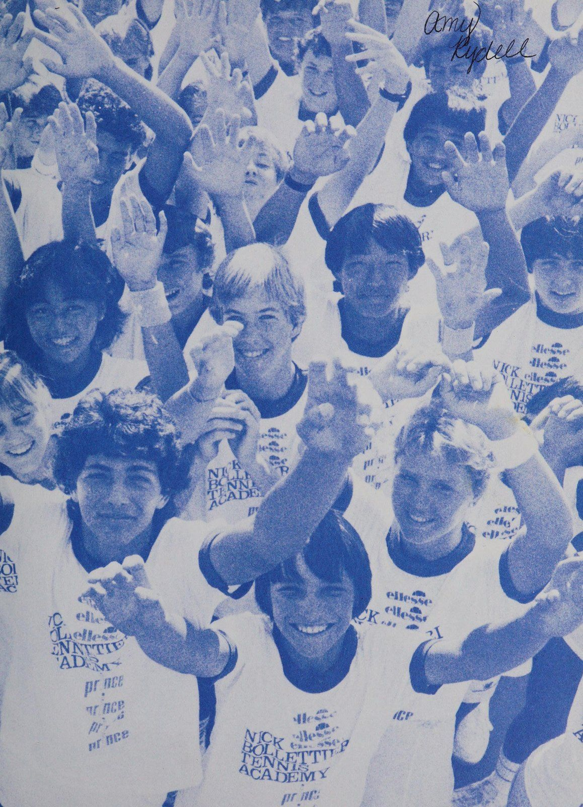
Hình 2: Nick Bollettieri truyền lửa đam mê trên sân tập — 'Tôi yêu quần vợt chuyên nghiệp như kiến trúc sư say mê những công trình vĩ đại'.
Figure 2: Nick Bollettieri On-Court Passion — Instilling championship dedication, intense work ethic, and mental grit.
Chương 3: Bạn Làm Cha Mẹ, Tôi Làm Huấn Luyện Viên: Ranh Giới Vàng & Sự Hỗ Trợ Độc Lập Chapter 3: You Be the Parent, I'll Be the Coach: Healthy Boundaries and Support
PHỤ HUYNH, CON SẼ LÀ
| Trong hai chương tiếp theo, chúng ta sẽ nói về nhóm bị ác ý nhất trong quần vợt trẻ. Tất cả chúng ta đều biết khuôn mẫu của những ông bố bà mẹ chơi tennis tự đề cao, người đứng bên lề la hét chỉ trích con mình. Tuy nhiên, điều có thể bạn chưa biết là áp lực mà cha mẹ của con cái thường phải chịu. Có rất nhiều quyết định và rất nhiều điều phụ thuộc vào kết quả. Tiền đặt cược cực kỳ cao. Một ngày nọ, một đứa trẻ là một thiếu niên vụng về. Lần tiếp theo cô ấy đứng trước hoàng gia tại Wimbledon.
Bây giờ chúng ta sẽ nói về một số vấn đề phổ biến mà các bậc cha mẹ chơi quần vợt phải đối mặt. Tình thế tiến thoái lưỡng nan của một người cha cố gắng tạo khoảng cách giữa mình và sự nghiệp của con mình trong khi vẫn giữ nguyên vẹn đơn vị gia đình. Quyết định nên huấn luyện con bạn hay giao trách nhiệm cho một chuyên gia quần vợt có năng lực. Làm thế nào để giữ cho con bạn hứng thú với trò chơi. Và nếu bạn quyết định huấn luyện con mình, những hướng dẫn nhỏ có thể giúp bạn tránh khỏi những khó khăn.
Chúng ta hãy làm rõ hai điều ngay từ đầu: Mọi đứa trẻ đều cần cha mẹ, và mọi vận động viên quần vợt đều cần một huấn luyện viên. Tôi không chắc hai thứ đó có giống nhau không. Một số cha mẹ làm điều đó và đối với nhiều người nó đã có hiệu quả. Kết quả có thể rất tuyệt vời. Jimmy Connors, được dạy bởi mẹ anh, Gloria. Chris Evert, được cha cô, Jim, chỉ đường đi đúng đắn. Gene và Sandy Mayer, được huấn luyện bởi cha của họ, Alex. Tất nhiên, tất cả các bậc phụ huynh này đều có kinh nghiệm giảng dạy chuyên nghiệp. Đó là một thực tế thường bị các bậc cha mẹ đầy tham vọng khác đánh mất. Thật dễ dàng, thật hấp dẫn khi nghĩ rằng bạn
Thật khó để không tham gia.
THE BOLLETTIERI WAY có thể là sức mạnh đằng sau môn quần vợt của con bạn, lời khuyên của bạn có thể hướng chúng đến sự vĩ đại. Hãy cẩn thận—gần như luôn luôn là một cái bẫy. Biết những gì bạn đang nhận được.
Trước hết, bạn sẽ gây áp lực rất lớn cho gia đình. Tất cả sự chú ý của bạn sẽ tập trung vào một điều gì đó xa lạ với một đơn vị gia đình: cống hiến hết mình cho một đứa con mà loại trừ những đứa con khác, có lẽ cả vợ/chồng của bạn nữa. Thay vì làm việc cùng nhau, bạn sẽ phát hiện ra rằng mọi quyết định mà bạn đưa ra, ngay cả những điều cơ bản như nơi bạn sẽ sống hay công việc bạn sẽ làm, ngay cả những gì bạn ăn hay cách bạn đi nghỉ - mọi thứ - đều sẽ ảnh hưởng đến môn quần vợt của con bạn như thế nào. Bạn sẽ bị cuốn vào và đắm chìm trong cây cối đến nỗi quên mất khu rừng. Thiên hướng tự nhiên của mỗi bậc cha mẹ là mang lại cho con mọi lợi thế, quan tâm đến phúc lợi của con. Nhưng hãy cân nhắc điều này: Bạn sẽ không cố gắng dạy con mình học thuật ở nhà. Vậy tại sao bạn lại muốn dạy họ quần vợt?
Những điều kỳ lạ có thể xảy ra—các mối quan hệ thân thiết một cách tự nhiên có thể trở nên tồi tệ, vai trò bị đảo ngược. Một vài năm trước tôi đã ở
Giải đấu dành cho lứa tuổi thiếu niên Orange Bowl ở Miami, Fla., quan sát các cô gái 16 tuổi. Tôi đang quan sát một tay vợt chỉ mới 14 hoặc 15 tuổi đang vật lộn trên sân. Cô ấy là một chú chó săn mồi, ngoan cường và quyết đoán; phong cách của cô ấy khiến cô ấy phải làm việc chăm chỉ hơn nhiều so với đối thủ của cô ấy. Đó là một câu chuyện lâu đời như quần vợt: phòng thủ và tấn công.
Một quý ông lớn tuổi đang đứng gần đó và chúng tôi bắt đầu nói chuyện. Hóa ra cô gái chăm chỉ trên sân chính là con gái ông. Trận đấu tiếp tục. Trong lúc thay đồ, cô gái đến gần người đàn ông và nói: "Lấy cho tôi một miếng băng cá nhân!" Giọng điệu của cô mang tính ra lệnh hơn là yêu cầu. Anh chàng đi tìm Band-Aid.
Anh ta quay lại, và lúc đó con gái anh ta lại chơi đùa. Mỗi điểm mất mãi mãi. Rõ ràng là bị phồng rộp ở chân, con gái ông kiên trì giữ quả bóng trong cuộc chơi, khuôn mặt dữ tợn như một tảng đá. Nhiều phút trôi qua. Đã có một sự thay đổi.
Cha cô để quên Band-Aid trong túi. Sau đó lại có một sự thay đổi khác. Con gái ông tiến lại gần và đứng trước mặt ông. Vẻ mặt cô lộ vẻ bực tức. Cô bắt đầu dậm chân, tay chống hông. Sau đó cô ấy bắt đầu lắc đầu như muốn nói, Bạn có tin được anh chàng này ngốc đến mức nào không? Cuối cùng, giọng nói đầy mỉa mai, cô buột miệng, "Sao? Nó ở đâu?" Người đàn ông nhớ đến Band-Aid. Điên cuồng, anh bắt đầu dò dẫm, kiểm tra túi của mình.
Anh ấy không thể tìm thấy nó. Anh ấy bối rối. Con gái ông đứng dậm chân kích động, thở dài với thế giới. Cuối cùng người đàn ông tìm được miếng băng và đưa cho cô. Cô giật lấy nó, rõ ràng là chán ghét. Bị trừng phạt, người đàn ông ngoan ngoãn ngồi trước mặt cô khi cô dán Band-Aid vào chân mình. Khi cô đứng dậy và bắt đầu quay lại sân, anh bắt đầu đưa ra những lời động viên nhẹ nhàng. Cô quay sang nhìn anh, vẻ mặt ủ rũ. “Im đi,” cô nói.
tôi đã kinh hoàng. Người đàn ông này yêu con gái mình - thực ra, yêu cô nhiều đến mức khi cô bảo ông im đi, ông không còn gì để nói, chẳng còn gì trong lòng. Cách đây một thời gian, một quyết định đã được đưa ra là dành mọi sự quan tâm cho con gái ông. Mọi quyết định đều là của cô ấy. Quần vợt đã tiếp quản. Và cô ấy đã tiếp quản gia đình.
tôi nhớ lại, tại một giải đấu cấp cơ sở khác, ngồi trong hội quán và thảo luận về một tuyển thủ đột nhiên từ vô địch trở thành vô địch, ở tuổi 14. Tôi đang nói về anh ấy với cha của một trong những hậu bối hàng đầu đất nước. Ông đã dạy con trai mình. Trên thực tế, ông đã rời bỏ gia đình và chuyển đến California để cậu bé có cơ sở luyện tập tốt nhất. Khi chúng tôi nói chuyện, tôi thấy rằng người đàn ông này có cách tiếp cận hợp lý và sâu sắc đối với môn quần vợt của con trai mình. Anh ấy nói về việc họ đã vạch ra những mục tiêu thực tế như thế nào, họ thường nói về áp lực như thế nào, cách họ giao tiếp như thế nào. Nói về tay vợt từng kiệt sức khi còn trẻ, người đàn ông này cho biết:
CON ĐƯỜNG BOLLETTIERI
"Người cha không biết họ đang cố gắng làm gì. Tôi sẽ không để điều đó xảy ra. Bạn không thể quá bị cuốn vào quần vợt." Trời ơi,
tôi nghĩ, anh chàng này có tất cả trong quan điểm. Cuối năm đó, tôi nghe nói con trai ông muốn bỏ quần vợt. Có vẻ như anh ấy và cha mình đã đánh nhau ở sảnh khách sạn tại một giải đấu cấp cơ sở.
tôi kể ra những câu chuyện kinh dị này bởi vì các bậc cha mẹ thường không biết họ đang gặp phải điều gì khi quyết định huấn luyện con mình. | tôi là một huấn luyện viên | tôi cũng là một phụ huynh có bốn đứa con: Jimmy, Jr., 28 tuổi; Danielle, 17 tuổi; Thiên thần, 14 tuổi; và bé Nicole. Không ai trong số ba đứa con lớn của tôi từng trở thành sinh viên toàn thời gian của chương trình của chúng tôi. Họ chơi quần vợt nhưng họ chơi khi nào và như thế nào họ muốn. Cách đây nhiều năm, khi những đứa trẻ tham gia giải đấu của tôi bị nhét vào chiếc Thunderbird của tôi và đi khắp vùng Trung Tây, hết giải đấu này đến giải đấu khác, Jimmy đã đến cùng, không phải để thi đấu mà là để chia sẻ cuộc phiêu lưu. Brian Gottfried đang ở trong xe. Anh ấy là một vận động viên quần vợt. Jimmy là con trai tôi. Hai điều không bao giờ bị nhầm lẫn.
Jimmy bây giờ là một nhiếp ảnh gia tài năng (hầu hết các bức ảnh trong cuốn sách này đều là của anh ấy). Anh ấy cũng giúp điều hành trại quần vợt mùa hè của tôi ở Deerfield, Mass. Anh ấy rất tốt với bọn trẻ. Và bây giờ anh ấy đã trưởng thành, anh ấy đã hiểu rõ hơn một chút về tôi, cha anh ấy. Anh ấy đưa ra quan điểm rằng có tôi lúc đó chưa ly hôn tôi đảm nhận công việc giám đốc quần vợt tại khách sạn Colony, Học viện có lẽ sẽ không bao giờ ra đời. Đó là một điểm tốt. Tôi sẽ không có thời gian để cống hiến cả cho hôn nhân và tất cả những gì cần thiết để xây dựng chương trình.
tôi làm cha vì các con tôi đã đủ lớn để hiểu và có nguồn lực riêng, nhưng tôi e rằng Jimmy đã đúng. Cuối cùng tôi đã kết hôn với cuộc đời tôi trong quần vợt. Tôi đã đến Paris nhiều lần và chưa bao giờ đặt chân đến tháp Eiffel. Tôi đã đến Rome thường xuyên và chưa bao giờ đến thăm Đấu trường La Mã. Tôi không có thời gian dừng lại để ngửi hoa. Khi nào | Tôi đang cùng các con tôi tham gia các giải đấu, điều đó luôn giống nhau: thức dậy lúc 7 giờ sáng và chúng ta hãy bắt đầu và không dừng lại cho đến nửa đêm. Không có phiền nhiễu bên ngoài. Có bao nhiêu phụ huynh có thể cam kết như nhau? Có bao nhiêu đứa trẻ muốn chúng trở thành?
Để tôi kể cho bạn nghe về một người cha khác. Tôi đã kể cho bạn nghe về Carling Bassett, bố cô ấy, John, đã thả cô ấy trước cửa nhà tôi và gửi cho tôi một thông điệp ngầm: Hãy biến cô ấy thành nhà vô địch. Carling là một tay vợt giỏi vào thời điểm đó. Bạn có thể thấy tiềm năng. Nhưng cô lại dễ dàng bị các tay vợt ở lứa tuổi 12 trở xuống đánh đòn. Cha cô biết cô cần sự giúp đỡ.
John Bassett là một vận động viên. Anh ấy đã chơi quần vợt Davis Cup cho Canada và là một trong những vận động viên bóng quần giỏi nhất đất nước anh ấy.
Anh ấy là một đối thủ cạnh tranh khốc liệt trong một gia đình toàn những đối thủ cạnh tranh. Bạn nhắc đến cái tên John Bassett ở Canada và mọi người biết bạn đang nói về Bassetts của Toronto. Cha anh và cha của cha anh, đều tên là John, đã xây dựng một đế chế về truyền thông: xuất bản báo chí, phát thanh và truyền hình. Điều đó cho bạn biết điều gì đó về thử thách của John
Bassett, cha của Carling, chắc hẳn đã cảm thấy như vậy khi còn rất trẻ. Anh ấy hiểu những kỳ vọng lớn lao.
Chắc chắn trong nhiều năm qua John Bassett đã nhiều lần cắn lưỡi khi nói về Carling. Chắc chắn, anh ấy đã nhiều lần bắt gặp mình đang theo dõi cô ấy luyện tập, cố gắng hết sức để nói cho cô ấy biết cô ấy đã làm gì sai.
Anh ấy chưa bao giờ nói một lời nào. Nhưng bạn có biết John Bassett đã nói gì với Carling không? "Muốn về thì cửa mở, muốn bỏ cũng được thôi."
Anh ấy đã trở thành một trong những người ủng hộ nhiệt thành nhất của Học viện và là một người bạn thân thiết. Một trong những sân tập của chúng tôi có tấm bảng ghi tên anh ấy trên đó. John Bassett đã giúp con gái mình trở thành nhà vô địch bằng cách giao việc cho người khác.
Với áp lực ngày nay và những phần thưởng sẵn có, tôi hãy cho con bạn một huấn luyện viên và lắng nghe nó. Đôi khi trẻ phàn nàn rằng những gì huấn luyện viên muốn chúng làm là không đúng.
Có lẽ nó “cảm thấy không ổn”. Có lẽ nó quá khó khăn. Tin tôi đi, quần vợt có thể trông dễ dàng, nhưng nó là một môn khoa học phức tạp, dễ bị hiểu lầm, khó thành thạo và gây khó chịu như bất kỳ môn nào mà bạn sẽ tìm thấy. Lệnh cũ có thể sáo rỗng nhưng nó đúng: Đừng bảo tôi phải điều hành công việc kinh doanh của mình như thế nào và tôi sẽ không cho bạn biết cách chạy của bạn.
Khá gần đây, tôi đã có một cuộc gặp gỡ ngắn ngủi với một người cha. Một trong những học trò giỏi nhất của tôi trong nhiều năm qua là Pam Casale. Cô ấy đến với tôi hơi muộn, với những nét vẽ đã ít nhiều ăn sâu vào tôi. Cô ấy không phải là tay vợt thống trị ở lứa tuổi thiếu nhi.
Nhưng tôi đã nhìn thấy một thứ mà bạn không thể dạy được: một trái tim. Cô ấy là một chiến binh. Cô ấy đã giành được mọi điểm. Cô ấy không từ bỏ gì cả. Tôi thích điều đó.
Pam khiến nhiều người ngạc nhiên khi cô chuyển sang thi đấu chuyên nghiệp. Cũng giống như các trận đấu của một số tay vợt bóng rổ trong Hiệp hội Bóng rổ Quốc gia trở nên hay hơn so với khi còn học đại học, thì các trận đấu của họ cũng vậy.
Sự quyết tâm và phong cách kiên cường của Pam đã giúp cô trở thành một chuyên gia THE BOLLETTIERI WAY chuyên nghiệp. Cô ấy đã thăng hạng ngay trên bảng xếp hạng. Nhưng sau đó Pam bắt đầu thua trận tôi cảm thấy lẽ ra cô ấy đã thắng. Có gì đó không ổn. Vào khoảng thời gian này, bố cô ấy gọi điện cho tôi và đưa ra một ý tưởng. Điểm yếu của Pam luôn rõ ràng: cú trái tay của cô ấy không cổ điển; cô ấy không có nhiều cú giao bóng. Vậy là cha cô đã có một kế hoạch. Anh ấy muốn một trong những chuyên gia của tôi làm việc với con gái anh ấy khoảng hai hoặc ba giờ mỗi ngày. Chúng tôi sẽ thay đổi trái tay của cô ấy. Cô ấy sẽ phát triển một cú giao bóng lớn. Cô ấy sẽ trở thành một tay vợt quyền lực. Nó có vẻ rất đơn giản. Vậy tôi đã lắng nghe, mặc dù tôi cảm thấy cha của Pam đang nhìn thấy những cái cây chứ không phải khu rừng. Những điểm yếu của Pam trong nhiều năm đã buộc cô phải trở thành một kẻ tranh giành. Cô đã phát triển thành một tay chơi bulldog không ngừng nghỉ. Nhưng bây giờ, có lẽ vì đã suy nghĩ quá nhiều về việc sửa chữa những điểm yếu đó nên cô đã ngừng cống hiến thêm một chút trên sân đã giúp cô trở thành người chiến thắng. Đối với cha cô, việc sửa chữa những điểm yếu dường như dễ dàng hơn là phát huy điểm mạnh của cô. Ngoại trừ một vấn đề. Đã quá muộn, quá muộn trong sự nghiệp của cô để nghĩ đến việc cải tiến trò chơi của mình. Cô ấy phải chơi ván bài mà cô ấy đã được chia. Vậy là cuối cùng tôi nói, "Ông Casale, nếu con gái của ông không quay trở lại với những gì nó đã luôn làm—chạy hết sức vì mỗi quả bóng—cô bé sẽ không có tương lai trong quần vợt chuyên nghiệp."
Đó là những lời lẽ gay gắt, nhưng thông điệp đã truyền tải. Cha cô đã từ chối, và vài tuần sau, Pam đã đánh bại Hana Mandlikova, tay vợt nổi tiếng nhất giải đấu vào thời điểm đó. Vài tuần sau đó, cô phải đối mặt với Tracy Austin, kiểu tay vợt cơ bản như Pam thực sự phải nỗ lực để đánh bại. “Nhận cú giao bóng đầu tiên của bạn,” Tôi nói với cô ấy. “Đánh mọi quả bóng vào giữa.
Hãy thực hiện mỗi lượt đánh ít nhất mười gậy.” Đêm hôm sau, thư ký của tôi, Kathy Owens, chạy đến chỗ tôi. Pam đang nói chuyện điện thoại. Cô ấy đã thắng trận đấu. Bạn có thể nghe thấy tôi hét lên vì hạnh phúc khắp Học viện. Đêm đó tại một cuộc họp, tôi đã nói với nhân viên của tôi, "Chiến thắng đó có giá trị hơn tiền bạc. Đó là điều khiến Học viện trở nên đáng giá."
Có một ranh giới mong manh giữa việc trở thành một bậc cha mẹ tự đề cao và ủng hộ con. Những câu chuyện thảm họa được ghi lại đầy đủ. Lấy ví dụ như Claudia Casabianca của Argentina, một hậu bối hàng đầu ở giai đoạn cuối
Những năm 1970. Cô đã bắn trượt một cú trong giải đấu này và cha cô đã xông vào sân và tát cô. Tại Orange
Bowl năm 1982, Carling Bassett đã giành được danh hiệu khi bị tước danh hiệu khi mẹ của đối thủ của cô, Manuela Maleeva của Bulgaria, kéo Manuela ra khỏi sân vì bà cho rằng những người xếp hàng đang đưa ra những quyết định không công bằng.
Nó đặt ra tình thế khó khăn khi cha mẹ được yêu cầu từ bỏ quyền kiểm soát con cái của họ, nhưng tôi cảm thấy điều đó phải được thực hiện – ít nhất là trong lĩnh vực quần vợt – nếu đứa trẻ muốn tiến bộ. Một huấn luyện viên không thể có được sự tôn trọng của học sinh nếu phụ huynh ưu tiên anh ta và phương pháp giảng dạy của anh ta. Tôi đừng nghĩ cha mẹ của Bjorn Borg đã can thiệp vào Lennart Bergelin khi anh ấy đi du lịch cùng Borg. Tôi đừng nghĩ cha mẹ của Jose-Luis Clerc can thiệp vào
Pato Rodriguez khi huấn luyện Clerc.
Một ngày nọ đã xảy ra một sự việc tại Học viện. May mắn thay, tôi đã đi du lịch xa, vì nếu tôi đã nhìn thấy nó, tôi có thể đã sụp đổ. Chuyện xảy ra là một người cha bước vào sân trong khi một số tay vợt đang tập luyện và ông ta bắt đầu chỉ trích con gái mình, chỉ trích cô bé mắc lỗi và không tập trung. Mọi người đều choáng váng. Gabriel Jaramillo, một trong những trợ lý của tôi, đã ngăn người đàn ông đó lại. “Nghe này, nếu
Nick đã ở đây, anh ấy sẽ nói với bạn điều tương tự như tôi sắp nói,” Gabriel nói. “Nếu bạn từng đến sân đấu, nếu bạn từng chỉ trích con gái mình trước mặt mọi người, bạn sẽ không được phép đặt chân vào khuôn viên Học viện nữa. Bây giờ hãy đến chỗ khán đài và ngồi xuống và đừng cử động.”
Khi bạn tham gia quá mức vào sự phát triển của con mình với tư cách là một tay vợt, bạn sẽ gây áp lực lên đứa trẻ và điều đó gần như phản tác dụng. Trò chơi đủ khó khăn. Chúa biết rằng tôi đủ cứng rắn. Nhưng có một sự khác biệt chính. Nếu huấn luyện viên la mắng bạn, bạn có thể quay sang bố mẹ để được an ủi. Nếu bố mẹ mắng bạn, bạn sẽ hướng về ai?
Dạy quần vợt rất dễ. Dạy cha mẹ lại là một chuyện khác. Tôi nói đùa rằng cha mẹ là gót chân Achilles của tôi, một cách mô tả thích hợp vì họ thường xuyên phải ở dưới chân. Nhưng với những bậc cha mẹ cho tôi quyền tự chủ với con cái, cuộc sống thật tươi đẹp. Tôi có thể rèn luyện kỷ luật. Đứa trẻ tôn trọng quyết định của tôi. Sự tiến bộ thật tuyệt vời.
tôi sống với các tay vợt của tôi. Họ là một phần của tôi cũng như | tôi là một trong số họ tôi nhìn và đánh giá chúng theo cách mà cha mẹ không bao giờ có thể làm được. Tôi đừng nhìn vào những thứ giống nhau Người cha nhìn thấy con mình; tôi nhìn thấy một cú thuận tay thiếu sót. Một lần, trong một cuộc gặp gỡ với các sinh viên tại Học viện, tôi đang chỉ trích một cậu bé có trò chơi không mạnh nhất trong trại vì cậu ấy không làm việc chăm chỉ như lẽ ra phải làm. “Anh thậm chí còn không biết tên tôi,” anh nói nhẹ nhàng. Thằng bé đang gọi tay tôi. Và anh ấy đã đúng. Tôi không biết tên anh ấy. Tôi đến từ trường phái hồi ức Babe Ruth. Tôi thỉnh thoảng quên tên những người đã làm việc cho tôi trong nhiều năm. Bây giờ, tôi nhìn vào nhóm học sinh. Họ đang chờ xem cái gì tôi sẽ làm tiếp theo.
CON ĐƯỜNG BOLLETTIERI
“Đây là bạn, Aaron,” Nick bắt chước. Ngượng ngùng, Krickstein nhận lời khuyên.
“| muốn mười đứa trẻ đứng lên,” Tôi nói. Một nhóm đứng dậy. “Được rồi,” Tôi nói. “Bạn có cú thuận tay kiểu phương Tây. Bạn sử dụng cách cầm vợt phương Đông. Bạn chơi với một Hoàng tử. Bạn có cú trái tay bằng một tay. Bạn có một tay cầm hai tay với khả năng nhả một tay. ...” Tôi đi thẳng xuống vạch, làm nổi bật cách cầm, vợt và phong cách chơi của từng đứa trẻ.
“Bây giờ, tôi có sai không?” Tôi yêu cầu. Không ai nói gì cả. Sau đó
tôi quay sang đứa trẻ đã đối mặt với tôi và nói, "Đừng nghĩ vì tôi đừng gọi bạn bằng tên đó tôi không biết bạn. Và đừng nghĩ rằng tôi không xem bạn làm gì."
Là một huấn luyện viên, nhiệm vụ của tôi là phải học mọi thứ tôi có thể về tất cả học sinh của tôi. Trên một số bạn phải sử dụng một cái búa. Những người khác cần một cái chạm nhẹ nhàng. Một số gần như phải xấu hổ trước khi chống trả và cố gắng hơn nữa. Mọi người thấy tôi khiển trách một học sinh thì chặc lưỡi: “Có đấy.
Bollettieri lại bị ngược đãi.” Họ không biết mình đang làm gì. Jeanne Austin, mẹ của Tracy, từng kể rằng nhiều lần huấn luyện viên của Tracy, Robert Lansdorp, đã khiến Tracy rơi nước mắt trong lúc tập luyện. Tôi cũng đã làm như vậy. Nhưng khi tôi nhìn thấy một trong những học sinh của tôi đứng với tư cách là người chiến thắng trên sân trung tâm, ghi nhận sự cổ vũ của đám đông, đó là lúc mắt tôi bắt đầu ngấn nước. Đó là khi tất cả đều có giá trị.
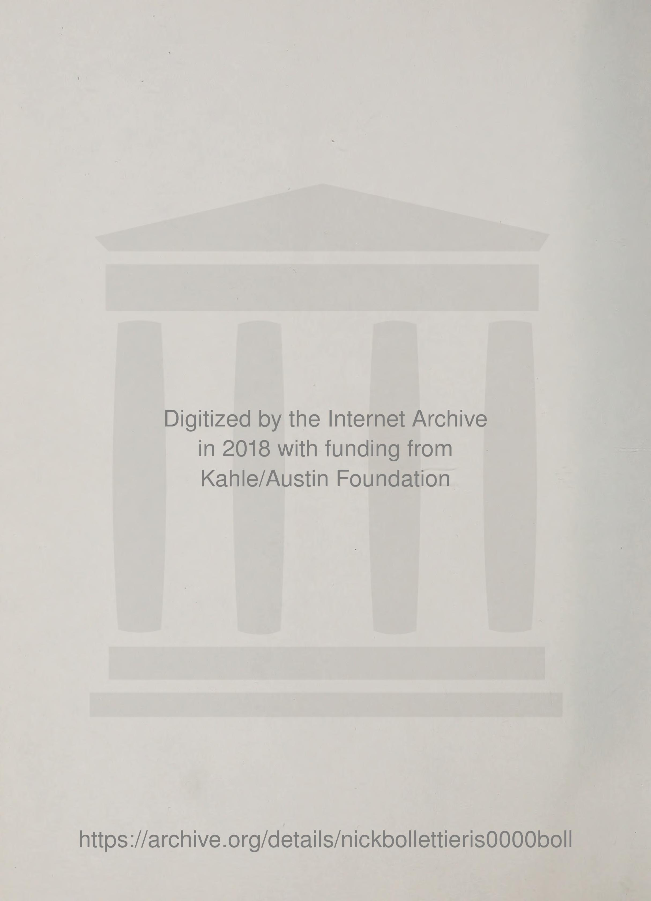
Hình 3: Tam giác vàng Phụ huynh - Vận động viên - Huấn luyện viên — Sự thấu hiểu và tôn trọng ranh giới chuyên môn để trẻ phát triển tự nhiên.
Figure 3: The Parent-Player-Coach Triangle — Clear boundaries, unconditional emotional support, and trusting professional coaching.
Chương 4: Thiết Lập Mục Tiêu & Động Lực Nội Tại: Nếu Bạn Vẫn Muốn Theo Đuổi Chapter 4: If You Still Want to Do It: Goals, Motivation, and Lifelong Commitment
NẾU BẠN VẪN MUỐN LÀM NÓ:
‘Chắc chắn rằng một số bạn, cha mẹ, bất chấp mọi thứ tôi đã nói ở chương trước, bạn vẫn tin rằng bạn có thể huấn luyện con mình. Được rồi. Bạn có thể làm điều đó. Phần lớn phần còn lại của cuốn sách này chủ yếu dựa trên giả định đó - nó chuyển giao cho bạn chương trình thành công với trẻ em của tôi, chương trình này sẽ giúp bạn trở thành người chiến thắng, có thể là nhà vô địch, cho chính con mình. Trong phần tiếp theo, Phần thứ hai, bạn sẽ hiểu được những nguyên tắc cơ bản của tôi về điều hòa, các cú đánh cơ bản và các bài tập. Sau đó là một hành trình lớn – sự phát triển của một đứa trẻ qua nhiều năm phát triển. Nhưng bây giờ, hãy nói về hai cân nhắc tổng quát hơn, những yếu tố chính tạo nên thành công của tôi với trẻ mà qua đó cha mẹ có thể thực sự giúp đỡ: truyền và hỗ trợ động lực cũng như đặt ra mục tiêu.
Tạo động lực cho trẻ là gì tôi cố gắng hết sức, có lẽ vì tôi luôn có thể tự động viên mình. Khi nào tôi là một thanh niên, tôi luôn hối hả làm những công việc lặt vặt quanh khu phố. Tôi bán hoa, làm công việc giao hàng và làm những công việc lặt vặt khác. Tôi thích tiếng leng keng của những đồng xu trong túi.
Là một vận động viên, tôi tốt hơn một chút so với mức trung bình, nhưng tôi có lẽ cũng có tấm lòng như bất cứ ai. Tôi chơi bóng đá ở trường trung học khá giỏi—một chàng trai nhỏ nhắn, dẻo dai và có những bước di chuyển tốt. Ở trường đại học, tôi khám phá quần vợt, dạy bản thân chơi và tôi đã tạo nên đội quần vợt—không phải là một ngôi sao
THE BOLLETTIER] WAY có nghĩa là, nhưng tôi đã làm được nó. Sau đó, trong Quân đội, giữa những khoảnh khắc đóng vai John Wayne nhảy ra khỏi máy bay, tôi dạy quần vợt. Vẫn còn sau này, khi tôi đang học trường luật ở Miami, tôi tiếp tục dạy một chút ở bên cạnh.
Rõ ràng là tôi có khả năng nhặt đồ trong trò chơi của người khác và tôi đã có thể động viên họ. Tôi đặc biệt thích làm việc với trẻ em. Tôi luôn đánh giá cao những người trẻ tuổi. Cho đến ngày nay, hầu hết bạn bè của tôi đều trẻ hơn tôi. Con trai tôi, Jimmy, nói rằng đó là vì bản thân tôi vẫn còn là một đứa trẻ. Có lẽ anh ấy đúng.
Trẻ em rất dễ có động lực. Chỉ cần cho họ thấy họ có thể là gì. Đó là lý do tại sao tôi luôn muốn có những tay vợt giỏi xung quanh Học viện của mình. Thật là một tấm gương tuyệt vời cho giới trẻ khi có thể thấy Jimmy Arias, Carling Bassett, Aaron Krickstein,
Eric Korita, Fritz Buehning, hoặc một số tay vợt xuất sắc khác làm việc với chúng tôi!
Trẻ em về cơ bản là lười biếng. Tôi tin điều đó. Bạn cũng vậy, nếu bạn thành thật. Đó là điều khiến họ trở thành những đứa trẻ. Họ không biết gì về những bài học cuộc sống, về việc chấp nhận thử thách và trưởng thành và đạt được điều gì đó. Trẻ em luôn đi theo con đường dễ dàng. Cái nhìn sâu sắc này đến với tôi vào một ngày nọ tại trại hè của tôi ở Beaver Dam. Tôi quan sát một nhóm học sinh bước qua cánh cổng đã mở một phần. Cánh cổng có lẽ có một khoảng trống rộng 15 inch, bởi vì ai đó đã mở sai cách. Như tôi chứng kiến khoảng 150 đứa trẻ chen lấn qua cánh cổng đó, thay vì dành một phần giây cần thiết để mở nó đúng cách, tôi đã nghĩ, “Đó là lý do tại sao người ta trả tiền cho bạn để dạy quần vợt.”
Rõ ràng là nhiều đứa trẻ ít nhiều chơi tennis cùng cha mẹ. Đó là một cách để nhận được sự chấp thuận của phụ huynh. Những đứa trẻ được làm quen với môn thể thao này khi chúng theo dõi trận đấu hàng tuần của cha mẹ chúng tại các sân đấu công cộng. Khi người lớn kết thúc, trẻ em có vài phút để đánh bóng xung quanh. Chẳng mấy chốc, họ háo hức chơi.
Đây là một cách tuyệt vời để bắt đầu trò chơi. Yếu tố quan trọng là đứa trẻ muốn chơi. Không ai đẩy anh ấy hoặc cô ấy. | Tôi nghĩ rằng khát khao cháy bỏng trở thành một vận động viên quần vợt của Andrea Jaeger đã được nhen nhóm khi cô còn rất trẻ. Cha cô, Roland, đã bắt đầu chơi quần vợt với chị gái của Andrea, Susy. Andrea cũng muốn được học, nhưng cha cô cảm thấy rằng cô còn quá nhỏ, mới 7 tuổi, để có thể tiếp thu được nhiều điều từ sự hướng dẫn. Thế là anh đã lập một hiệp ước. Nếu cô tự mình tập luyện trước cửa gara tại ngôi nhà của gia đình ở ngoại ô Chicago, tập luyện suốt mùa đông, thì đến mùa xuân, anh sẽ dạy cô. Andrea rất tôn trọng việc luyện tập chống lại cánh cửa. Mỗi tối cô ấy sẽ thu mình lại, đeo găng tay và đi ra ngoài và đập phá. Nhà để xe không được sưởi ấm! Cuối cùng, một buổi tối, cô chạy vào phòng khách, lòng đầy phấn khích. “Con đã đánh liên tiếp 25 cú thuận tay,” cô nói với cha mình. Roland Jaeger nhìn cô. “Đi tới con số 26,” anh nói.
Dạy kèm quần vợt cho con bạn cũng giống như vừa là huấn luyện viên của một đội vừa là tổng giám đốc của đội đó. Trên sân, với tư cách là huấn luyện viên, bạn sẽ đưa ra những yêu cầu nhất định. Nhưng với tư cách là tổng giám đốc của gia đình, bạn cũng sẽ phải đưa ra những quyết định khác. Con bạn sẽ đặt bạn vào vấn đề: Con muốn con tập luyện hay con muốn con cắt cỏ? Khi nói đến vấn đề gia đình hay quần vợt, hãy đặt gia đình lên hàng đầu.
Nhiều trẻ em có chung một mục tiêu khi còn rất nhỏ. Chúng muốn đánh bố mẹ chúng. Đó là Wimbledon của họ. Khi đảm nhận vai trò huấn luyện viên, bạn sẽ tự đặt mình vào tình thế nguy hiểm. Bạn phải tự hỏi mình những câu hỏi tương tự như khi chọn huấn luyện viên cho con mình. Kiến thức của huấn luyện viên về trận đấu sâu rộng đến mức nào? Có thể bạn không cần phải là một tay vợt giỏi, nhưng bạn phải biết trò chơi này. Cuốn sách này có thể giúp bạn rất nhiều đấy. Một câu hỏi khác:
Huấn luyện viên phản ứng thế nào với đứa trẻ trên sân? Ngày qua ngày, liệu anh ấy có thể động viên tay vợt, liệu anh ấy có truyền cảm hứng cho sự vâng lời không? Hãy thành thật với chính mình - đó có phải là một phần tính cách của bạn, một phần trong mối quan hệ của bạn với con mình không?
Khi chọn một huấn luyện viên, bạn cũng phải tự hỏi liệu lịch trình của anh ấy có phù hợp để anh ấy có thể giúp đỡ con bạn khi con bạn yêu cầu hay không. Anh ấy có tổ chức không, anh ấy có thời gian không? Đây có lẽ là câu hỏi lớn nhất đối với các bậc cha mẹ đang dạy kèm cho con mình, đặc biệt nếu họ đang làm công việc toàn thời gian. Nếu bạn không có thời gian dành cho con mình sự quan tâm cần thiết thì đừng cố gắng.
Thỉnh thoảng bạn sẽ tìm thấy một tay vợt chuyên nghiệp về cơ bản đã tự học. Nó không phải là cái gì đó tôi đề nghị, nhưng nó xảy ra. Vince Van Patten đã vô địch các giải đấu từ rất lâu trước khi anh học quần vợt lần đầu tiên, khi anh 23 tuổi! Rõ ràng Vince là một vận động viên tài năng, với tốc độ chân và phản xạ tuyệt vời. Năm 1981, ông vô địch giải Seiko ở Nhật Bản, đánh bại John McEnroe và Jose-Luis Clerc. Nhưng Van Patten có thể tiến bộ hơn thế nào nếu anh ấy học bài khi còn nhỏ? Chúng tôi sẽ không bao giờ biết.
tôi luôn có mục tiêu. Tôi muốn trở thành người dạy quần vợt chuyên nghiệp giỏi nhất. Bất cứ nơi nào tôi đã đi, câu hỏi đầu tiên của tôi là: “Ai là
CON ĐƯỜNG BOLLETTIERI
Mặc dù phần lớn là tự học, Vince Van Patten thường xuyên tham gia Học viện để cải thiện hoặc làm mới trò chơi của mình.
tốt nhất?” Tôi muốn đánh người đó. Tại Bãi biển Dorado, với tư cách là giám đốc quần vợt, tôi đã vạch ra những kế hoạch tổng thể để tận dụng hầu hết từng phút ánh sáng mặt trời cho quần vợt trong mùa bận rộn. Tôi giống như người điều khiển không lưu, tung hứng tay vợt giữa các sân. Ở Puerto Rico, tôi treo những chiếc áo tennis ướt của tôi lên hàng rào phía sau để chúng có thể khô trong khi tôi đã dạy một bài học khác. Tôi liên tục xoay áo. Lên theo kiểu ướt, xuống theo kiểu khô. Như tôi dạy, trợ lý sẽ mang bánh mì cho tôi nên tôi có thể bỏ qua việc nghỉ ngơi để ăn trưa. Tôi lưu giữ bao nhiêu bài học tôi đã cho, và năm tiếp theo tôi sẽ cố gắng lập kỷ lục mới.
Tin nhắn tôi mang theo những đứa con của tôi, và bạn phải mang theo những đứa con của mình, đó là: Luôn cố gắng trở thành người giỏi nhất. Và cách duy nhất để trở thành người giỏi nhất trước tiên là hãy trở thành người giỏi nhất có thể. Nói cách khác, trước tiên hãy phát huy hết tiềm năng của mình, sau đó bạn có thể trở thành người giỏi nhất trong nước hoặc trên thế giới. Đừng cố nhảy từ ô vuông một sang ô vuông thứ 10.
Ngay từ ngày đầu tiên, mục tiêu chính phải là vui vẻ. Kết thúc mỗi ngày với tâm trạng lạc quan. Sau đó, ngay khi đứa trẻ bắt đầu hiểu quần vợt có ý nghĩa như thế nào đối với mình, đã đến lúc ngồi xuống nói chuyện. Những cuộc thảo luận đơn giản về những gì liên quan đến việc thi đấu trong các giải đấu, việc thành lập đội tuyển ở trường trung học hoặc đại học, thậm chí khi trở thành chuyên gia có thể khiến học sinh thực tế hơn một chút ngay từ đầu. Không làm tiêu tan những hy vọng và ước mơ, bạn có thể cho con mình thấy rằng đó là một con đường dài, khó khăn để đạt tới đỉnh cao và không có đủ chỗ cho tất cả mọi người.
Đừng đặt ra những giới hạn thời gian phi thực tế để đạt được một mục tiêu cụ thể. Thành công trọn vẹn khi còn trẻ không phải lúc nào cũng đảm bảo một tương lai tươi sáng. Tất cả chúng ta đều biết những ví dụ về
“những cảm giác trẻ” giành được mọi thứ sớm và không bao giờ đáp ứng được kỳ vọng của họ. Ngược lại, John McEnroe chưa bao giờ là tay vợt thống trị ở lứa đàn em. Thường thì sinh viên nào chấp nhận những khó khăn của mình và đạt được thành công với tốc độ chậm nhưng ổn định sẽ là người tốt hơn.
tôi gần đây đã đọc một câu chuyện về các nữ vận động viên chơi gôn chuyên nghiệp nhấn mạnh điều gì tôi tin rằng đây là thái độ đúng đắn của cha mẹ và con cái họ đối với thể thao. Patty Sheehan, hiện là một trong những tài năng trẻ sáng giá trên đường chơi gôn chuyên nghiệp, lớn lên trong một gia đình trượt tuyết và cô là một trong những vận động viên giỏi nhất nước, kiểu người dường như được định sẵn cho Thế vận hội.
Trên thực tế, cô ấy hiếm khi thua cuộc đua nào. Nhưng cô ấy đã bỏ cuộc khi cô ấy
14 vì môn thể thao này đơn giản là không còn vui nữa. Cha cô, Bobo, người từng là huấn luyện viên trượt tuyết cho đội tuyển Olympic Hoa Kỳ, không hề la mắng cô về việc từ bỏ môn thể thao mà ông yêu thích. Trên thực tế, anh ấy đã ủng hộ. “Theo một cách nào đó,” Patty nói, “anh ấy có vẻ nhẹ nhõm khi có thể đưa ra quyết định như vậy.” Hậu quả của việc này là vì cha cô chưa bao giờ làm bất cứ điều gì để dập tắt ngọn lửa cạnh tranh đang bùng cháy trong con gái ông nên cô cần một lối thoát cho niềm đam mê thể thao của mình. Cô ấy chơi gôn. Phần còn lại là lịch sử.
Hãy lập cho mình một kế hoạch tổng thể, linh hoạt nhưng hãy cố gắng hoàn thành những gì mình muốn. Jimmy Arias có lẽ đã đánh mất cơ hội được ghi vào sách kỷ lục khi gia nhập Học viện của tôi. Anh từng là nhà vô địch quốc gia ở cả hạng 12 tuổi trở xuống và hạng 14 trở xuống. Khi anh ấy rời Buffalo và đến sống tại nhà tôi, điều đó có nghĩa là anh ấy không thể thi đấu đủ các giải đấu địa phương ở New York để đủ điều kiện tham dự các giải đấu quốc gia. Một số người nghĩ rằng chúng tôi đang giữ anh ta ra khỏi
16, rồi 18, vì chúng tôi sợ anh ấy sẽ thua. Trên thực tế, việc đủ điều kiện tham gia các giải đấu là quá khó khăn đối với anh ấy.
Kết quả là Jimmy bị loại khỏi tư cách một tay vợt. Ngôi sao của anh rơi xuống. Một năm nọ, anh đến Orange Bowl với tư cách là tay vợt hạt giống và thua ngay vòng đầu tiên. Anh ấy không có nhiều thành tích ở các giải đấu cấp cơ sở. Mọi người nghĩ chúng tôi đang giấu anh ấy. Cuối cùng, anh ấy bắt đầu chơi các sự kiện vệ tinh nhỏ trên đường đua chuyên nghiệp. Tại một trong những giải đấu đầu tiên của anh ấy, một
Tại sự kiện Penn Circuit ở Miami, anh đã thua ở vòng đầu tiên của vòng loại trước Mark Woolridge, một sinh viên tại Học viện mà Jimmy thường xuyên đánh bại hàng ngày. Bạn nghĩ đêm đó tôi không bị trầm cảm à? Tôi cảm thấy áp lực. Nhưng chúng tôi đã có một kế hoạch tổng thể. Chúng tôi bị mắc kẹt với nó. Chúng tôi đã thực hiện một sự điều chỉnh lớn đối với cú đánh trái tay của Jimmy, một kiểu cầm vợt kiểu phương Tây cho phép tạo ra nhiều xoáy lên hơn. Đến tháng 9, Jimmy thi đấu ở giải Mỹ mở rộng và giành chiến thắng trong trận đấu lớn đầu tiên. Năm tiếp theo, anh ấy thường xuyên tham gia giải đấu chuyên nghiệp.
Năm ngoái tôi đã tiếp cận mẹ của Lisa Bonder trong một giải đấu chuyên nghiệp ở Perugia, Ý. Lisa, mặc dù cô ấy chỉ
16, đã thi đấu chuyên nghiệp và đang hoạt động tốt. Nhưng tôi có thể thấy rằng cô ấy có thể làm tốt hơn nhiều. Tôi nói với mẹ cô: “Bà.
Bonder, nếu Lisa muốn trở thành một tay vợt hàng đầu, chúng ta phải thực hiện một số thay đổi, bắt đầu từ cú thuận tay đó.” Tôi đã nắm lấy cơ hội, vì nếu Lisa không làm được thì đó là lỗi của Nick.
Không phải lúc nào tôi cũng đúng, nhưng may mắn là tôi thường xuyên đúng hơn
Tôi sai rồi. Lisa xuống Học viện và làm việc. Chúng tôi đã kéo dài thời gian theo dõi của cô ấy, điều này đã giúp ích cho cô ấy khi cô ấy lo lắng. Trước đây cô ấy đã ngừng đột quỵ
THE BOLLETTIERI WAY gần như tiếp xúc, một phản ứng tự nhiên của tay vợt khi gặp áp lực. Thời gian theo dõi lâu hơn giúp cô có cơ hội để vợt đi qua bóng. Thứ hai, tôi đã yêu cầu Lisa quan sát Jimmy Arias và để ý cách anh ấy tăng tốc vợt khi tiếp xúc. Hai sự chỉnh sửa nhỏ đó đã khiến cô ấy trở thành người thuận tay giỏi nhất trong số các nữ sinh Học viện của tôi. Thứ hạng của Lisa trong những tháng tiếp theo đã nhảy vọt lên vị trí số 1. 11 trên đường đua chuyên nghiệp.
Chúng tôi đặt ra mục tiêu cho Lisa, đó là tôi cảm thấy có thể đạt được, vạch ra kế hoạch và thuyết phục cô ấy rằng cô ấy có thể hoàn thành mục tiêu của chúng tôi. Nghe có vẻ dễ dàng phải không? Thực ra chỉ mất khoảng một năm luyện tập, mỗi ngày 3-4 tiếng.
Có một điểm đặc biệt mà bạn phải tính đến nếu có nhiều hơn một đứa trẻ chơi quần vợt một cách nghiêm túc. Sự ganh đua giữa anh chị em là điều tuyệt vời để phát triển các nhà vô địch, nhưng hầu như luôn luôn, sớm hay muộn, một đứa trẻ sẽ bắt đầu chiếm ưu thế. Dễ dàng nhận thấy đứa trẻ đó có năng khiếu hơn – chỉ đơn giản thế thôi. Rõ ràng, điều này có thể gây ra thiệt hại nặng nề cho gia đình. Bạn có muốn trở thành một đứa trẻ và nghe một trong những người bạn của bố mẹ bạn hỏi về bạn, "Đây là tay vợt quần vợt hay đây là người kia?" Cái kia. Nghe có vẻ gần như vô nhân đạo.
tôi có thể không phải là người nói về việc duy trì cấu trúc gia đình, về việc cân bằng nhu cầu chơi quần vợt với nhu cầu của gia đình - tôi đã gặp nhiều vấn đề hơn trong hôn nhân. Nhưng đôi khi không có đủ tình yêu dành cho tất cả mọi người. Vì vậy, đây là một quy tắc: Đảm bảo không có người thua cuộc ở nhà.
Đặt mục tiêu của bạn và làm cho chúng có thể đạt được. Đạt được chúng.
Đặt thêm một số mục tiêu. Giúp con bạn di chuyển...đúng...lên
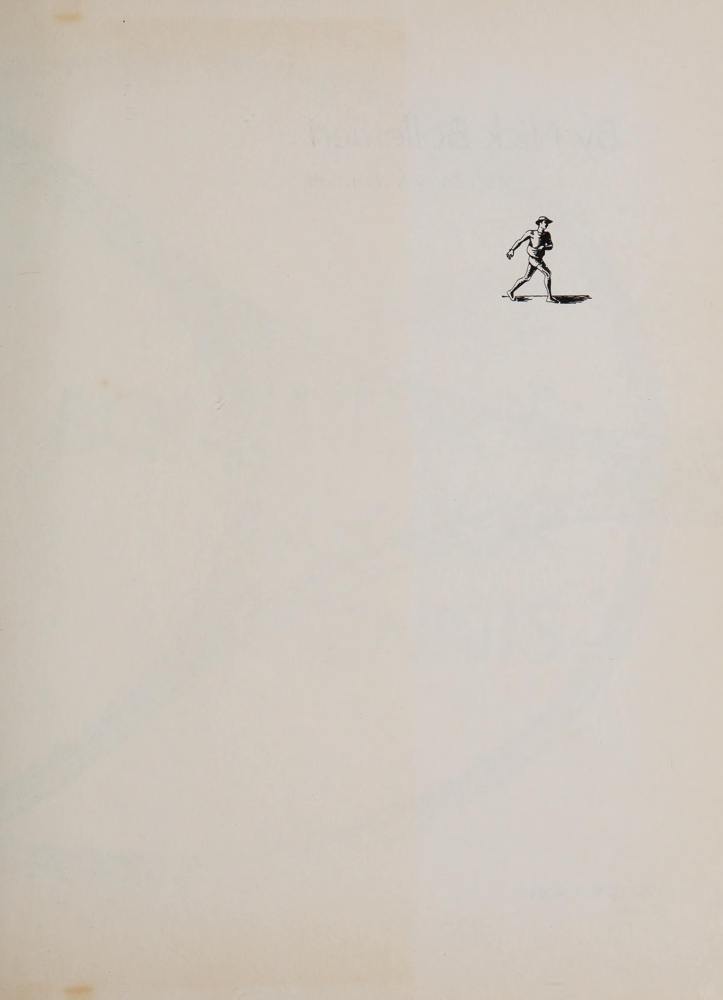
Hình 4: Thiết lập mục tiêu phát triển từng bước — Sự kiên định theo đuổi ước mơ vượt qua mọi thử thách khắc nghiệt của làng banh nỉ.
Figure 4: Realistic Goal Setting & Intrinsic Motivation — Building personal accountability and enduring competitive desire.
Phần 2: Nền Tảng Kỹ Thuật, Thể Lực Chuyên Biệt & Chuỗi Bài Tập Cường Độ Cao
Chương 5: Thể Lực Quần Vợt Hiện Đại: Độ Dẻo, Sức Mạnh Bùng Nổ & Bài Tập Không Bóng Chapter 5: Physical Conditioning: Flexibility, Explosive Speed, and Off-Court Drills
ĐIỀU TRỊ THỂ CHẤT
Tee đã thay đổi rất nhiều trong thập kỷ qua. Có vẻ như chỉ mới ngày hôm qua Billie Jean King đã chơi trận đấu hoành tráng của cô ấy với Bobby Riggs ở Houston Astrodome. Đó là phiên bản con người đi bộ trên mặt trăng của một vận động viên quần vợt. Kể từ đó, quần vợt đã phát triển thành một môn thể thao hoàn toàn khác.
Vợt thì lớn hơn—cỡ trung bình, cỡ lớn và cỡ lẻ. Một số có đường cong ở tay cầm. Một số được làm từ vật liệu thời đại không gian. Và nó không chỉ là vợt. Giày tennis thể hiện kỹ thuật phức tạp—đế bám của chúng thấm mồ hôi theo đúng nghĩa đen—và quần áo bó sát và có nhiều màu sắc khác nhau. Nhưng có lẽ sự thay đổi lớn nhất đã xảy ra trong lĩnh vực điều hòa, đặc biệt là về giãn cơ và dinh dưỡng. Bạn có thể nói về số tiền thưởng khổng lồ, các hợp đồng chứng thực ngày càng phát triển và cuộc cách mạng về thiết bị, nhưng ấn tượng nhất là sự khác biệt trong thói quen tập luyện và ăn uống.
Một trong những vấn đề tế nhị hơn tôi khuôn mặt đang thuyết phục học sinh của tôi về tầm quan trọng của việc ăn uống tốt. Tôi có thể sửa những cú thuận tay của họ và kết quả được thể hiện rõ ràng ngay lập tức. Nhưng với người hơi nặng, bạn phải đợi vài tháng mới thấy rằng việc ăn uống tốt hơn và tập thể dục nhiều hơn có thể mang lại tác động tích cực.
Cũng giống như một số học sinh có khả năng “tự nhiên” hơn những học sinh khác, thì một số học sinh cũng phù hợp “tự nhiên” hơn. Hoặc không phù hợp. Một trong những thất bại trong sự nghiệp của tôi là Fritz Buehning. Tôi tin rằng Fritz có nhiều tài năng như hầu hết mọi tay vợt tôi đã huấn luyện. Anh ta to lớn và khỏe mạnh, với một trò chơi sức mạnh tuyệt vời, nhưng điều khiến anh ta trở nên độc đáo là cảm giác và cảm giác chạm đáng chú ý mà anh ta có trên tay. Fritz là một người đàn ông to lớn với phản xạ của một chàng trai nhỏ bé. Một sự kết hợp tuyệt vời.
Nick muốn Fritz Buehning luôn làm việc. Đôi khi anh ấy làm vậy, đôi khi anh ấy không….
Tuy nhiên, ngoài sân đấu, Fritz có thói quen ăn uống không tốt. Anh ấy là một người thích ăn vặt. Anh ấy chưa bao giờ gặp món khoai tây chiên mà anh ấy không thích, và giống như nhiều vận động viên quần vợt, anh ấy sẽ nốc một hoặc hai cốc bia sau khi tập luyện. Kết quả là Fritz có một chút lốp dự phòng ở giữa. Nó giống như một chiếc đai tạ. Anh ấy phải mang nó theo bên mình mọi lúc. Ai biết được anh ấy tổn thương đến mức nào? Chắc chắn là nó không giúp ích được gì.
Ann Quinn, một chuyên gia dinh dưỡng và vật lý trị liệu thuộc đội ngũ nhân viên của Học viện, đã không có mặt cách đây nhiều năm khi Fritz tham gia chương trình. Khi đó chúng tôi là một nhóm nhỏ hơn và khoa học sinh lý học không phải là chương trình nghị sự được nghiên cứu kỹ lưỡng và sâu rộng như bây giờ. Không ai thực sự chú ý nhiều đến những thứ như chế độ ăn kiêng, giãn cơ và tập tạ. Giờ đây, cả ba đều là một phần trong chương trình của chúng tôi giống như hướng dẫn trên sân. Mỗi học sinh của chúng tôi được hướng dẫn về chế độ ăn uống cân bằng bao gồm bốn nhóm thực phẩm cơ bản. Sự thiếu sót ở bất kỳ điều nào cũng có thể đồng nghĩa với rắc rối trên sân.
Ở cuối cuốn sách là phần phụ lục các câu hỏi và câu trả lời về dinh dưỡng của Ann Quinn, nơi bạn sẽ tìm thấy rất nhiều thông tin. Ở đây chúng tôi sẽ chỉ trích dẫn các nhóm thực phẩm chính:
Sữa và các sản phẩm từ sữa. Nhóm này bao gồm sữa, phô mai, sữa chua. Những thực phẩm này chứa rất nhiều khoáng chất như canxi và vitamin B-2, B-12 và A.
Bánh mì, ngũ cốc, gạo và mì spaghetti. Chúng chứa nhiều carbohydrate, vitamin E và vitamin B phức hợp.
Trái cây họ cam quýt, cà chua, rau xà lách. Nhóm này bao gồm rau bina, củ cải, cà rốt, bí ngô và bí. Chúng đều là nguồn cung cấp vitamin A, vitamin E, vitamin nhóm B và khoáng chất tuyệt vời.
Khoai tây và các loại trái cây và rau quả khác. Khoai tây, bông cải xanh, ớt xanh và súp lơ trắng là những loại rau quan trọng trong nhóm này; trái cây giàu dinh dưỡng bao gồm các loại quả mọng, anh đào, dưa và đào. Tất cả đều cung cấp vitamin C, khoáng chất và protein.
Bạn'|| lưu ý rằng không có khoản trợ cấp nào được áp dụng cho đồ ăn vặt như khoai tây chiên hoặc bánh quy. Tôi tin, và Ann Quinn đồng tình, rằng những tay vợt quần vợt tập thể dục thường xuyên sẽ không gặp vấn đề gì với cân nặng nếu họ KHÔNG ăn kẹo và đồ ăn vặt. Thứ này không chứa gì ngoài đường và chất béo có hàm lượng calo cao.
Không có lý do gì để một vận động viên quần vợt thừa cân. Xem xét số lượng đào tạo bổ sung mà chúng tôi thực hiện tại
Học viện, học sinh của chúng ta hầu như không thể nặng nề trừ khi họ ăn quá nhiều. Tôi sẽ luôn nhớ đến một người mẫu tôi từng biết, một cô gái rất gầy và có vẻ ăn uống hợp lý. Một ngày nọ, trong bữa trưa, cô đang thảo luận về một kế hoạch ăn kiêng phổ biến đang thịnh hành vào thời điểm đó. “Tôi không biết mọi người làm thế nào,” cô nói. “Đó là một chế độ ăn kiêng thực sự khó khăn. Tôi không biết làm thế nào mà người ta có thể ép mình ăn nhiều đồ ăn như vậy”. Nếu bạn nhìn vào hầu hết những cái gọi là kế hoạch ăn kiêng, họ sẽ cho phép bạn ăn ba bữa đầy đủ mỗi ngày, cùng với đồ ăn nhẹ và món tráng miệng. Và thậm chí sau đó mọi người còn gian lận bằng kẹo và đồ ăn vặt. Và họ thắc mắc tại sao họ không giảm cân. Nguyên tắc tốt nhất là ăn cho đến khi bạn chưa no và uống nhiều nước.
Tại Học viện, chúng tôi có “Câu lạc bộ những người theo dõi cân nặng”. Đúng vậy. một kế hoạch tự nguyện Giống như chúng tôi muốn tay vợt tự quản lý trên sân, chúng tôi cũng muốn họ kiểm soát cuộc sống của mình bên ngoài sân đấu. Đây là bài học khó đối với nhiều bạn trẻ. Thông thường, chúng đến với chúng ta khi chúng đang bước vào tuổi thiếu niên, khi chỉ số năng lượng của chúng cao nhưng tính kỷ luật tự giác của chúng thấp. Cha mẹ chúng đã nuông chiều chúng suốt cuộc đời. Họ đến từ những môi trường khá giả, giàu có, nơi mà việc không tước đoạt của mình bất cứ thứ gì gần như là một biểu tượng của sự thành công. Tại Học viện, mọi người trong câu lạc bộ những người ăn kiêng của chúng tôi đều đặt mục tiêu giảm 2 pound mỗi tuần, tương đương 7000 calo. Không ai cắt giảm bữa ăn. Họ cắt giảm bữa ăn của họ. Họ tập thể dục nhiều hơn một chút. Tuy nhiên, điều tuyệt đối cấm kỵ là những chiếc bánh rán, đồ ăn vặt bằng máy, nước ngọt, v.v. Không đời nào họ sẽ tìm thấy những người xung quanh Học viện. : Tôi sẽ luôn nhớ điều mà Paul Dudley White, bác sĩ của Tổng thống Dwight Eisenhower, đã từng nói với cựu giám đốc điều hành: “Nếu bạn muốn biết bộ não của mình yếu đến mức nào, hãy cảm nhận cơ chân của bạn.” Chà, cơ bắp chân nhão đã không còn tồn tại trong quần vợt chuyên nghiệp từ lâu. Nhiều năm trước, bạn có người Úc - những người Úc vui tính, coi quần vợt như khúc dạo đầu cho việc uống bia. Sau đó là các ông vua nhạc disco, một nhóm người đi đầu trong cuộc bùng nổ tiền lớn vào những năm 1970 và tiêu tiền trong khi lướt đi trên làn đường nhanh. Bây giờ có một giống mới. Các cựu chiến binh trong chuyến tham quan nhìn những đứa trẻ này đang tiến lên và gọi chúng là Robot. Những chàng trai và cô gái trẻ này rất nghiêm túc. Họ đào tạo, đào tạo, đào tạo. Sau đó, để tráng miệng, họ tập thể dục mềm dẻo. Nautilus là chai vitamin của những năm tám mươi.
tôi gọi nó là Quần vợt quyền lực. Khi Jimmy Arias đánh thuận tay, bạn cần có tầm nhìn tốt chỉ để nhìn thấy bóng chứ chưa nói đến việc trả lại nó.
Và bản thân việc đứng trước quả giao bóng của Chip Hooper đã là một nhiệm vụ ghê gớm. Chip không làm gãy vợt mà làm tan chảy chúng.
Tại Học viện của chúng tôi, chúng tôi có đầy đủ các máy Nautilus. Chỉ cách đây vài năm, việc nâng tạ bị coi là phản tác dụng đối với quần vợt. Những người theo chủ nghĩa thuần túy cho rằng nó sẽ “rút ngắn” cơ bắp của bạn. Chà, ngay cả giáo điều về quần vợt cũng có thể thay đổi. Tôi nói điều này:
Nếu việc tập tạ khiến bạn săn chắc, điều gì ngăn cản bạn thực hiện các bài tập giãn cơ để thả lỏng cơ thể? Xây dựng sức mạnh của bạn với công việc kháng chiến. Chạy, chạy, chạy. Và giữ sự linh hoạt của bạn với việc kéo dài.
Trẻ em không thể lường trước được lợi ích của việc giãn cơ. Khi còn trẻ, bạn có thể chạy cả ngày và không bao giờ cảm thấy cứng người vào buổi tối. Nhưng ở tuổi đôi mươi, bạn bắt đầu nhận thấy sự căng cứng. Khi đó việc duỗi gân kheo đó sẽ khó khăn hơn. Tôi hãy coi việc giãn cơ là một phần trong chế độ sinh hoạt hàng ngày của bạn ngay từ đầu. Ở trang 62-66, bạn sẽ tìm thấy chương trình giãn cơ từng bước do Ann Quinn của Học viện phát triển. Sinh viên của chúng tôi sử dụng nó hàng ngày, và bạn cũng có thể như vậy.
Phát triển những thói quen tốt. Giữ sự linh hoạt của bạn. So sánh cơ thể của bạn với một động cơ. Một cơ thể linh hoạt là một động cơ được bôi dầu tốt. Một cơ thể săn chắc phải làm việc chăm chỉ hơn nhiều. Nó kém hiệu quả hơn.
Trẻ em ngày nay tiếp thu nhanh những phần thô sơ của môn thể thao này. Họ có thể cảm thấy khó tập trung hơn vào việc tập luyện ngoài sân đấu. Nhưng đó chỉ là nơi họ có thể tạo ra bước đột phá lớn.
Người ta tìm cớ. Khi Jimmy Arias sang Nhật Bản, báo chí Nhật Bản thường hỏi anh: "Sao các tay vợt Nhật chơi không giỏi? Có phải vì họ còn nhỏ?" Arias tuy nhỏ bé nhưng đã nỗ lực và rèn luyện bản thân để chơi trò chơi của một ông lớn. Anh ấy đã làm cho mình lớn hơn. Khi mới bắt đầu sự nghiệp thi đấu chuyên nghiệp, anh ấy bắt đầu bị chuột rút trong các trận đấu một cách bí ẩn. Chúng tôi phải mất một thời gian để tìm ra nó. Anh ấy đang cạnh tranh với tốc độ nhanh hơn. Anh ấy đã rất phấn khích. Cơ thể tràn đầy adrenaline khiến anh kiệt sức nhưng trong quá trình tập trung và chơi hết mình, Jimmy không hề cảm thấy mệt mỏi. Hậu quả là bị chuột rút cơ bắp. Anh ấy phải làm thêm một chút công việc ngoài sân đấu. Anh bắt đầu chạy nhiều hơn, tăng quãng đường chạy lên khoảng ba dặm một ngày.
Torben Ulrich, nhà vô địch lâu năm đến từ Đan Mạch, vẫn thi đấu vòng Grand Masters ở tuổi 56. Ông đang ở trong tình trạng phi thường. Phụ nữ thở dài trước hình dáng cơ bắp chân của anh. Torben thường xuyên tham gia các buổi tập luyện dài và anh ấy mang theo một sợi dây nhảy trong túi đựng thiết bị của mình. Nhảy dây là môn thể thao tuyệt vời, đặc biệt nếu bạn đang ở nơi không thể hoặc không nên chạy bộ vài dặm.
Một thập kỷ trước, việc có thể hoàn thành một cuộc chạy marathon được coi là một kỳ tích. Bây giờ chúng ta có Cuộc thi Người sắt, trong đó các vận động viên bơi gần 2'/2 dặm trên biển, đạp xe khoảng 122 dặm, và sau đó hầu như không ngừng lấy hơi, ra ngoài và chạy marathon.
Chạy là một quá trình tự nhiên. Trở lại thời xa xưa, người tiền sử có lẽ đã chạy đi bắt con mồi, để bày thức ăn lên bàn bếp trong hang động của mình. Tôi luôn đứng đầu các học sinh của mình: "Bạn đã chạy chưa?" “Bạn đã thực hiện động tác giãn cơ của mình chưa?” “Bạn đã hoàn thành công việc Nautilus của mình chưa?” Đây là những thói quen phải là một phần trong thói quen của bạn, cũng như công việc thực hiện các cú chạm đất và giao bóng của bạn. Một khi bạn đã có vóc dáng cân đối, bạn sẽ dễ dàng giữ được phong độ đó. Nhưng trước tiên, bạn phải đẩy mình vượt qua những rào cản đau đớn đó, vượt qua những điểm tẻ nhạt mà phần thưởng dường như quá xa vời và xa vời đến mức không còn ý nghĩa gì.
Aaron Krickstein đã thắng 44 trận liên tiếp dành cho lứa tuổi thiếu niên và 5 chức vô địch quốc gia dành cho lứa tuổi thiếu niên liên tiếp. Anh ấy đã làm được hầu hết điều đó nhờ khả năng to lớn. Nhưng gần đây Aaron đang tận hưởng thành công của mình. Anh ấy đang làm việc - thực tế là làm việc chăm chỉ theo hầu hết các tiêu chuẩn - nhưng không đời nào anh ấy làm việc đủ chăm chỉ cho tôi. Anh ấy đã thua những trận đấu mà lẽ ra anh ấy không nên thua. Chà, Aaron và tôi đang hướng tới một cuộc đối đầu. Một lúc nào đó, có thể sau khi anh ấy thua một trận đấu khác mà anh ấy không thể thực hiện được một cú đánh quan trọng, hoặc anh ấy bắt đầu mệt mỏi và để mất điểm lớn, thì tôi sẽ đến gặp anh ấy và nói với anh ấy, "Aaron, bữa tiệc đã kết thúc. Bây giờ là lúc làm việc. Hãy nhấc mông ra và chạy. Tập động tác Nautilus. Tập giãn cơ. Chú ý đến chế độ ăn kiêng." Chỉ tôi có lẽ sẽ không được dịu dàng như vậy. Tôi muốn Aaron Krickstein có thái độ của Jimmy Arias. Tôi muốn anh ấy trở thành một chiến binh.
George Allen, huấn luyện viên bóng đá chuyên nghiệp huyền thoại, đang hướng tới Đại sảnh Danh vọng vì khả năng của ông trong việc lấy lại, loại bỏ và những tay vợt không ai muốn và biến họ thành một đội chiến thắng. Allen tập thể dục hàng ngày và triết lý của anh ấy là: “Luôn tập nhiều hơn mức bạn muốn”. Điều đó có nghĩa là hãy đặt ra mục tiêu của bạn và sau đó vượt qua chúng. Bạn làm điều đó trong và ngoài sân đấu, và, này, phần còn lại thật dễ dàng.
Thể lực là chìa khóa để tiếp cận trận đấu bằng tinh thần. Kiểm tra chân xem não có bị nhão không. Xem các tay vợt hàng đầu thế giới. Ngoài kỹ năng và kỹ thuật của họ, hãy chú ý đến tốc độ ra sân, sự nhanh nhẹn của họ, cách họ căng cơ và thu dây mà vẫn giữ được tư thế thăng bằng. Đánh giá cao sức chịu đựng và sức mạnh của họ. Đây là những phẩm chất bạn phải cố gắng noi theo.
Có lần một người cha liên lạc với tôi để hỏi liệu con trai ông có còn quá nhỏ, mới 18 tháng tuổi, để bắt đầu chương trình chạy bộ hay không. Tôi nghĩ rằng điều đó đã đưa một điều tốt đi quá xa. Ít nhất anh ta nên đợi cho đến khi cậu bé được hai tuổi. Nghiêm túc mà nói, thật khó để nói độ tuổi sớm nhất để bắt đầu một chương trình như vậy là bao nhiêu. Việc kéo giãn có thể được thực hiện từ hình vuông ngay cả trước khi trẻ tập đi. Và trong khi các nhà sinh lý học đã cố gắng xác định xem việc chạy bộ khi còn trẻ có thể gây ra những tác động bất lợi về lâu dài hay không, thì dường như không có bằng chứng cụ thể nào cho thấy điều đó có tác dụng. Tôi nói xem trẻ nhỏ chơi. Đối với tôi, có vẻ như họ đang chạy liên tục. Chỉ là họ chia tay bằng những khoảng thời gian nghỉ ngơi ngắn ngủi.
Có ba mục tiêu thể chất chính cần phấn đấu với khả năng điều hòa ngoài sân đấu của bạn: sức bền, tính linh hoạt và sức mạnh.
May mắn thay, chúng tôi có thể cảm ơn người Nhật vì đã cho chúng tôi phát minh vĩ đại nhất trong lịch sử để giúp bạn đạt được những mục tiêu này: máy nghe băng cassette âm thanh nổi Walkman. Như nhãn dán cản xe nói,
“Hãy làm theo âm nhạc.” Lắng nghe những âm thanh yêu thích có thể làm giảm bớt sự nhàm chán của điều hòa. Walkman dành cho trẻ em giống như tấm gương soi cho người tập thể hình. Những chàng trai cơ bắp tập thể dục trước gương và ngắm nhìn ngực mình nở ra. Một đứa trẻ có thể làm
100 lần gập bụng khi nghe nhạc rock and roll. Sức bền của tim mạch—khả năng cung cấp oxy cho não của tim và phổi—cho đến gần đây hiếm khi được coi là một chương trình thể dục thể chất dành cho học viên quần vợt. Sự khôn ngoan phổ biến là quần vợt tự nó là một công cụ điều hòa: chơi quần vợt nhiều hơn, lấy lại vóc dáng cân đối hơn. Nhưng bây giờ các nhà khoa học đã phát hiện ra rằng quần vợt không phải là phương tiện rèn luyện sức khỏe hiệu quả nhất. Trên thực tế, một số môn thể thao khác còn vượt trội hơn. Khía cạnh dừng lại bắt đầu của quần vợt cũng tương tự như việc trẻ em chơi đùa - bạn sẽ được nghỉ ngơi. Để có sức bền, bạn cần chạy dài và dễ dàng,
20 đến 30 phút mỗi lần, ba đến bốn lần một tuần. Ở mức tối thiểu. Ngoài ra, hãy kết hợp một số bài tập tốc độ, xen kẽ tốc độ chậm với một số hoạt động chạy liên tục ở tốc độ nhanh chỉ trong thời gian ngắn chạy nước rút. Đó là một cách tuyệt vời để xây dựng thể trạng của bạn để bạn không bị mệt mỏi khi chơi một điểm dài bao gồm nhiều hoạt động chạy ngang và chạy ngược lại.
tôi cũng khuyên bạn nên thực hiện các bài tập xen kẽ, trong đó bạn chạy nước rút thực sự trong khoảng cách ngắn và dành một chút thời gian phục hồi sau mỗi lần. Nhanh, nhanh, nhanh. Đôi chân của bạn sẽ bay đi sau vài tháng như vậy.
BÀI TẬP GIẢI QUYỀN CHO TENNIS
1. Vòng cổ. Đứng thẳng, xoay đầu từ từ sang phải, chạm cằm vào ngực và tiếp tục chuyển động tròn. Lặp lại ở phía bên kia.
2. Kéo dãn cơ tam đầu và đỉnh vai. Giơ hai tay lên cao, giữ khuỷu tay của một cánh tay bằng tay của cánh tay kia. Nhẹ nhàng kéo khuỷu tay ra sau đầu, tạo độ giãn (ảnh A). Giữ đoạn này trong 15 giây. Sau đó, với một cánh tay duỗi thẳng phía trên và cánh tay còn lại duỗi thẳng xuống bên cạnh bạn, đẩy về phía sau bằng cả hai tay và giữ tư thế duỗi (ảnh B) trong 15 giây.
3. Xoay cánh tay. Mở rộng cả hai tay sang hai bên và xoay, khuỷu tay cứng, đầu tiên hướng về phía trước, sau đó lùi lại.
4. Xoay hông. Tay chống hông, chân hơi dang rộng, xoay hông theo chiều kim đồng hồ rồi ngược chiều kim đồng hồ.
5. Bài tập bụng, gập lưng. Bắt đầu nằm ngửa với đầu gối cong, rời khỏi sàn, hai bàn chân đan vào nhau và hai tay đặt sau đầu ngang tầm tai. Cuộn tròn, đưa xương bả vai của bạn lên khỏi sàn khoảng 30°, sau đó hạ chúng xuống sàn
(ảnh C). Đảm bảo giữ đầu ở vị trí cố định; lắc lư nó sẽ làm căng cổ bạn. Khi hạ thấp cơ thể, phần sau đầu không được chạm sàn vì bạn đang giữ cằm gần ngực.
6. Bài tập bụng, Kéo. Nằm ngửa, hai chân duỗi thẳng, cắt kéo lên xuống, nâng lên hạ xuống nhưng không bao giờ chạm đất (ảnh D). Tiếp tục trong 10 giây và sau đó tăng dần.
7. Kéo giãn cơ duỗi lưng và hông. Nằm úp mặt, hai tay đặt sau đầu và hai chân duỗi thẳng, nâng chân phải lên và giữ trong năm giây. Làm tương tự
Chương trình giãn cơ của Học viện.
bằng chân trái, sau đó giữ bằng cả hai chân.
Cuối cùng, nâng cao đầu và chân đồng thời và giữ căng trong 5 đến 10 giây.
8. Kéo dãn các cơ xoay vùng lưng dưới và vùng xương chậu. Nằm ngửa, hai chân dang rộng và hai tay dang rộng ngang vai (lòng bàn tay hướng lên). Bắt chéo chân phải qua trái, giữ chân trái trên sàn. Đảm bảo giữ vai, cánh tay và lưng trên sàn khi chân phải duỗi thẳng sang bàn tay duỗi thẳng đối diện. Giữ trong mười giây. Chân thay thế.
9. Kéo dãn vùng háng. Ở tư thế ngồi, đẩy hai lòng bàn chân lại với nhau và nhẹ nhàng nghiêng về phía trước, uốn cong từ hông - cho đến khi bạn cảm thấy căng ở háng (ảnh E). Giữ vị trí trong 30 giây. Đẩy khuỷu tay xuống chân sẽ tăng độ ổn định và thăng bằng, từ đó giúp bạn dễ dàng duỗi hơn.
10. Cáng sải chân cho cơ lưng dưới, cơ hông và cơ chân. Bắt đầu bằng cách chống tay về phía trước với chân phải uốn cong dưới ngực và chân trái duỗi ra phía sau. Hai tay duỗi thẳng và gót chân hướng về phía trước trên sàn, đẩy hông xuống sàn, giữ chân duỗi ra phía sau (ảnh F). Giữ trong 30 giây. Lặp lại bài tập với chân còn lại phía sau.
11. Căng gân khoeo. Hai chân khép vào nhau trong tư thế nửa kín và siết chặt mắt cá chân (ảnh G), đứng lên sao cho hai chân duỗi thẳng hoàn toàn, vẫn giữ chặt mắt cá chân (ảnh H).
Giữ tư thế này trong 15 giây.
12. Căng cơ tứ đầu. Nằm sấp, đưa tay ra phía sau nắm lấy mắt cá chân trái và kéo về phía dưới (ảnh |). Giữ tư thế này trong 15 giây rồi lặp lại với chân kia.
Tiếp theo, giữ cả hai mắt cá chân trong 15 giây (ảnh J). Sau đó, vẫn ở tư thế này, nâng đầu và vai lên (ảnh K).
13. Kéo giãn bắp chân và gân Achilles. Đứng quay mặt vào tường hoặc hàng rào cách đó vài feet và dựa vào đó bằng cẳng tay.
Đứng một chân trước chân kia, chân trước cong và chân sau duỗi thẳng ra sau. Từ từ di chuyển hông về phía trước, giữ cho lưng dưới phẳng. Hãy chắc chắn rằng bạn giữ gót chân thẳng trên mặt đất và giữ trong 30 giây. Đừng nảy lên. Duỗi chân kia.
Để kéo căng gân Achilles (và bắp chân), hãy hạ hông xuống và uốn cong đầu gối. Lưng của bạn vẫn phải phẳng, gót chân hướng xuống. Giữ trong 25 giây. Duỗi chân.
14. Kéo dãn mắt cá chân. Ở tư thế ngồi, nhấc chân lên khỏi sàn và dùng chân vẽ bảng chữ cái trong không trung. Điều này sẽ đảm bảo rằng mắt cá chân được di chuyển trong toàn bộ phạm vi chuyển động của nó, đồng thời sẽ tăng cường và kéo căng các cơ và gân của nó.
Một chương trình luyện tập ngắt quãng điển hình bao gồm một số bộ bài tập. Trong hiệp đầu tiên, bạn có thể thực hiện một loạt tám lần chạy 50 yard, nghỉ giữa mỗi lần 30 giây. Tập tiếp theo sẽ bao gồm ít lần lặp lại hơn và khoảng cách dài hơn, chẳng hạn như sáu lần chạy nước rút 100 yard, nghỉ 60 giây giữa mỗi lần. Bộ ba: bốn lần chạy nước rút 150 yard, nghỉ 90 giây giữa mỗi lần. Hiệp bốn: hai lần chạy nước rút 200 yard, nghỉ 120 giây giữa mỗi lần. Hiệp năm: bốn lần chạy nước rút 150 yard, nghỉ 90 giây giữa mỗi lần. Hiệp thứ sáu: sáu lần chạy nước rút 100 yard, nghỉ 60 giây giữa mỗi lần. Bộ bảy: Tám
Chạy nước rút 50 yard, nghỉ 30 giây giữa mỗi lần.
Trong chương trình này, bạn bắt đầu với những khoảng cách rất ngắn, nhanh, tăng dần đến những lần chạy nước rút dài hơn với thời gian hồi phục lâu hơn, sau đó lại kết thúc với những lần chạy nước rút ngắn, nhanh. Theo dõi nhịp tim của bạn. Giữa mỗi hiệp, điều quan trọng là nhịp tim của bạn phải giảm xuống 120 nhịp mỗi phút. Giữa mỗi lần lặp lại, nhịp tim của bạn sẽ phục hồi về 150 nhịp mỗi phút. (Bạn có thể đếm nhịp tim của mình trong 10 giây, sau đó nhân với sáu.)
Ngoài việc chạy, tôi khuyên bạn nên kết hợp hoạt động tim mạch của mình với nhảy dây, bơi lội, đạp xe hoặc nhảy aerobic. Đừng để việc tập luyện đơn điệu làm cho chương trình tập luyện của bạn trở nên cũ kỹ.
Một tay vợt có độ linh hoạt cao sẽ có phạm vi hoạt động xuất sắc trên sân. Nhưng đây là con dao hai lưỡi. Bạn càng có khả năng giãn cơ nhiều thì nguy cơ chấn thương càng cao khi bạn căng cơ thể để thực hiện cú đánh. Vì vậy, bạn không chỉ nên tập trung vào việc kéo căng các bộ phận rõ ràng như gân kheo mà còn cố gắng tăng phạm vi chuyển động của mình qua tất cả các khớp, bao gồm cả cánh tay và vai. Hãy kéo giãn phần cuối của bài tập hàng ngày của bạn và kéo dài bất cứ khi nào bạn tìm thấy thêm một hoặc hai phút. Giữ cho các cơ đó linh hoạt.
Về sức mạnh, lợi ích của nó là rõ ràng. Một người to lớn tốt sẽ luôn đánh bại một người nhỏ tốt, tất cả đều bình đẳng. Trong nhiều năm, việc nâng tạ bị chỉ trích là một công cụ tập luyện. Nó sẽ
“bó” cơ bắp. Và chỉ 5 năm trước, người ta vẫn nói rằng phụ nữ không được hưởng lợi gì từ việc tập tạ. Sự gia tăng thể hình của phụ nữ trong khoảng thời gian ngắn đó đã bác bỏ lý thuyết này. Trong mọi trường hợp, tôi nghĩ rằng mọi người nên tham gia rèn luyện thể chất với tinh thần cởi mở. Xem những gì làm việc cho bạn. Các bài tập Nautilus cung cấp một cách tuyệt vời để xây dựng sức mạnh trong khi vẫn duy trì sự linh hoạt. Nâng tạ cũng xây dựng
Tay cầm điện Nick Bollettieri giúp kéo giãn cơ vai, cơ lưng và cơ cánh tay khi giao bóng.
Sử dụng SportStick tại Học viện: Để phát triển sức mạnh và tính linh hoạt thông qua toàn bộ phạm vi chuyển động của cú đánh quần vợt, một thiết bị mới có tên SportStick được sử dụng làm công cụ khởi động trước khi luyện tập. Các bức ảnh minh họa một người hướng dẫn sử dụng các bài tập kháng lực để làm nóng các cú đánh trái tay, thuận tay và giao bóng. SportStick cũng được sử dụng để kéo giãn cơ chân, mắt cá chân và vai trước và sau khi tập luyện vất vả.
sức mạnh. Ngay cả môn thể dục mềm dẻo cũng hữu ích. Một thiết bị tuyệt vời dành cho những tay vợt quần vợt, đặc biệt là những người di chuyển nhiều, là các bài tập đa dạng của riêng tôi. Một thiết bị khác mà chúng tôi sử dụng là SportStick, một công cụ tuyệt vời để kéo giãn và tăng cường sức mạnh trong toàn bộ phạm vi chuyển động.
Với Nautilus hoặc bất kỳ thiết bị nâng tạ nào khác, hãy sử dụng mức tạ nhẹ hơn và số lần lặp lại nhiều hơn. Bạn muốn tập cơ bắp của mình gần như thất bại hơn là “phát huy tối đa” với mức tạ nặng và chỉ hai hoặc ba lần lặp lại.
Ngoài ra, hãy cố gắng đạt được một chương trình tổng thể sử dụng tất cả các cơ của bạn: phần thân dưới, phần thân trên và cánh tay. Nâng chân là cách tuyệt vời để xây dựng sức mạnh ở đùi của bạn. Động tác nâng ngón chân giúp tăng cường sức mạnh cho bắp chân của bạn. Các bài tập tốt nhất cho phần thân trên là máy ép ghế, máy ép quân đội hoặc máy ép đứng và máy ép tạ trên ghế nghiêng. Bài tập cánh tay bao gồm các bài tập gập bắp tay và cơ tam đầu. Để tập cơ tam đầu tốt, hãy nắm chặt thanh đòn, sau đó nâng tạ lên vị trí nghỉ ngơi sau đầu. Nhấn lên trong 10 hoặc 12 lần lặp lại.
Bất chấp những thay đổi to lớn đã xảy ra trong quần vợt trong những năm gần đây, về mọi thứ, từ trang thiết bị đến phương pháp tập luyện, ở một khía cạnh nào đó, “nhớ về ngày xưa” có thể rất hữu ích. Tôi duy trì rằng bạn nên ghi nhật ký tập luyện. Rất nhiều vận động viên chạy hàng đầu đã làm điều đó, trong đó có Alberto Salazar và Bill Rogers. Họ ghi lại chi tiết từng hoạt động thể chất, cũng như những thực phẩm họ ăn và thời gian ngủ mỗi đêm. Những lợi ích là rõ ràng.
Nếu bạn bị chấn thương hoặc cảm thấy mệt mỏi, nhật ký có thể cho bạn manh mối về lý do.
Một chương trình đào tạo quần vợt nên được cấu trúc theo những điều kiện nhất định. Hãy làm cho nó cụ thể - nghĩa là liên hệ việc tập luyện của bạn với quần vợt, cả về các nhóm cơ liên quan cũng như về nguồn năng lượng mà bạn xây dựng.
Đừng sợ quá tải. Thất bại là mẹ thành công. Hãy nhớ rằng căng thẳng là chất xúc tác đằng sau sự tiến bộ. Hãy cố gắng điều chỉnh chương trình của bạn cho phù hợp với chính bạn. Chỉ vì người khác thực hiện một bài tập nào đó không có nghĩa là bạn sẽ được lợi khi thực hiện nó. Đánh giá nhu cầu và mục tiêu của bạn và làm việc hướng tới chúng. Và cuối cùng, hãy vui vẻ. Công việc khó khăn không nhất thiết phải là công việc của mỏ muối. Hãy thuyết phục bản thân về lợi ích của việc tập luyện và bạn sẽ thích thú với nó.
Nautilus điều hòa: tác động lên chân, tay và phần trên cơ thể.
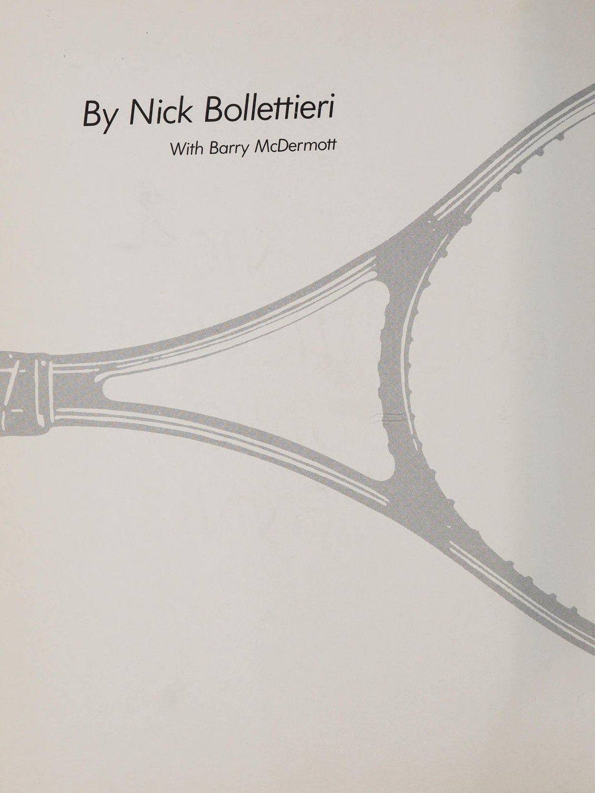
Hình 5: Huấn luyện thể lực và độ dẻo chuyên sâu — Nền tảng ngăn ngừa chấn thương và gia tăng tốc độ di chuyển trên sân.
Figure 5: Junior Conditioning & Functional Flexibility — Foundational injury prevention and court movement mechanics.
Chương 6: Kỹ Thuật Căn Bản Đỉnh Cao: Các Kiểu Cầm Vợt, Thuận Tay Loop, Trái Tay 2 Tay & Giao Bóng Sấm Sét Chapter 6: Basic Tennis: Grips, Loop Forehand, Two-Handed Backhand, Volleys, and Flat Serve
P..... luôn hỏi tôi nếu tôi có bí mật nào để thành công. Không có bí mật nào cả tôi nói với họ. Tôi không biết gì cả cái gì
tôi biết là làm thế nào để động viên mọi người, làm thế nào để họ làm việc.
tôi có thể nhìn vào ai đó và thấy điểm yếu của họ. Tôi có thể nhìn vào đối thủ và tìm ra kế hoạch tấn công họ. Nhưng bí mật? Như Brian Gottfried đã nói: “Bí quyết là làm việc chăm chỉ”.
tôi cố gắng thay đổi thái độ chứ không phải đột quỵ. Nhưng đừng hiểu lầm tôi. Tôi biết quần vợt của tôi. Nếu tôi nhìn thấy một đứa trẻ mắc lỗi, tôi đều ủng hộ nó. “Đưa đầu vợt ra phía trước.” “Thấp đến cao.” “Kết thúc qua vai của bạn.” Tôi về nhà vào ban đêm và giọng tôi khàn đi vì la hét. Tôi giống như một tay vợt bài poker vừa mới chơi xong 10 tiếng đồng hồ. Tay vợt bài poker nằm trên giường và xem bài. Tôi nằm trên giường và xem những cú thuận tay.
Điều quan trọng là không lãng phí thời gian. Trong quần vợt trẻ, cuộc đua là một cuộc chạy nước rút. Đừng để những đứa trẻ khác bắt đầu bằng cách chọn trò chơi mà không có sự hướng dẫn thích hợp. Nhận những điều cơ bản sớm. Tìm hiểu các nguyên tắc cơ bản. Nếu bạn không xây dựng trên một nền tảng vững chắc và nếu bạn có sai sót, cuối cùng trò chơi của bạn sẽ sụp đổ.
Dưới đây là một số mẹo giúp bạn bắt đầu. Chúng ta sẽ nói nhiều về hình ảnh và ngắn gọn về từ ngữ, bởi vì tôi tin rằng nhìn là cách tốt nhất để học. Và bạn sẽ nhận được một số bài học thực tế, giống như những bài học tôi tặng học trò của mình. Tôi hy vọng chương này sẽ được sử dụng tốt trong những năm qua. Tôi muốn bạn đọc đi đọc lại các trang của nó. Nhưng hơn thế nữa, tôi muốn bạn mang vợt và giày ra sân tập. Tôi muốn thấy đế giày của bạn được chà sạch. Tôi muốn nhìn thấy cán vợt mòn mịn. Chúng tôi sẽ cung cấp cho bạn những kiến thức cơ bản về hướng dẫn. Việc biến chúng thành bí quyết thành công của bạn là tùy thuộc vào bạn. Làm sao? Chỉ có một cách: với công việc.
Chọn vợt Ngày xưa, những cây vợt to, nặng với tay cầm lớn là những món đồ chủ yếu của tay vợt trong giải đấu. Hiện nay, những cây vợt nhẹ hơn với tay cầm nhỏ hơn và diện tích đánh lớn hơn là quy luật. Hãy thử nghiệm với nhiều cây vợt khác nhau để tìm ra cây vợt phù hợp với bạn. Hãy nhớ rằng cây vợt gỗ có kích thước tiêu chuẩn cũ đang nhanh chóng trở nên lỗi thời. Mọi tay vợt trên thế giới đều đã bị đánh bại bởi ai đó sử dụng một trong những “vết ruồi”, cái tên có phần xúc phạm được đặt cho những cây vợt ngoại cỡ 110 khi chúng được giới thiệu lần đầu tiên. Điều thú vị cần lưu ý là trong khi nhiều tay vợt đang chuyển sang dùng những cây vợt lớn hơn, thì giao thông theo chiều ngược lại—từ cỡ 110 quá khổ đến cây vợt tiêu chuẩn—gần như không tồn tại. Trong mọi trường hợp, hiện nay có rất nhiều mẫu để bạn lựa chọn, sẽ thật ngu ngốc nếu tôi cố gắng chỉ định loại này hay loại khác phù hợp với bạn. Đi đến một cửa hàng chuyên nghiệp tốt và kiểm tra chúng. Bạn sẽ phải trả phí! cái phù hợp với bạn.
Có lẽ một trong những thay đổi thú vị hơn trong việc giảng dạy trong những năm gần đây là việc khuyến khích một phong cách đa dạng. Trước đây, tay vợt được dạy một cách cầm vợt và họ kiên trì thực hiện theo cách đó. Bây giờ, tôi nghĩ rằng điều quan trọng là bạn phải học tất cả các cách cầm nắm. Mỗi cái đều có lợi ích của nó. Mỗi cái đều có những hạn chế của nó. Một số kiểu cầm vợt phù hợp với bóng cao. Một số loại sẽ tốt hơn cho những pha bóng thấp và những cú đánh tiếp cận. Tìm hiểu đặc điểm của họ sớm. Bạn phải linh hoạt – đủ linh hoạt để thích ứng với mọi tình huống.
Với cách cầm vợt, bạn đang cố gắng tạo ra một đầu vợt thẳng đứng khi tiếp xúc. Đây là điều tuyệt đối phải làm. Để đạt được vị trí này, bạn sẽ phải thử nghiệm cho đến khi tìm ra điều gì phù hợp nhất với mình. Nhưng cho dù bạn sử dụng cách cầm vợt nào, hãy nhớ rằng vị trí tay của bạn không đổi trong suốt cú đánh. Một khi bạn đã chọn cách cầm vợt và bắt đầu cú đánh, hãy kiên trì với nó.
Tay cầm bao gồm những phần sau.
Eastern Forehand: Đây là một kiểu cầm vợt khá đơn giản và khá dễ làm chủ. Để đạt được kiểu cầm vợt kiểu Đông, hãy đặt lòng bàn tay của bạn lên mặt sau của vợt, sau đó giả vờ như bạn đang bắt tay với vợt. Luôn giữ lòng bàn tay và cán vợt thẳng đứng. Hai gợi ý: Sau khi đã nắm chặt cán vợt, hãy xòe các ngón tay ra một chút để tốt hơn
Cách cầm vợt thuận tay: Kiểu Đông, Bán Tây và Kiểu Tây.
sức mạnh và khả năng kiểm soát. Và ngón cái phải nằm giữa ngón thứ nhất và ngón thứ hai và xung quanh tay cầm.
Cú thuận tay kiểu bán phương Tây: Cách cầm vợt này giúp tăng thêm sức mạnh bằng cách đặt lòng bàn tay nhiều hơn về phía bên phải của cán vợt, từ đó đặt tay ra sau bóng khi va chạm. Để đạt được tư thế Bán Tây, hãy cầm theo kiểu phương Đông, sau đó di chuyển bàn tay của bạn khoảng một phần tư vòng về bên phải. Ivan
Lendl, Jimmy Arias và Jose-Luis Clerc sử dụng cách cầm này trong Trò chơi quyền lực hiện đại của họ. Trong số tất cả các tay cầm, tôi cảm thấy rằng SemiWestern là tốt nhất và mang đến cho tay vợt cơ hội tốt nhất để phát triển một “vũ khí” thực sự.
Cú thuận tay phương Tây: Kiểu cầm này có thể tạo ra xoáy lên quá mức, đặc biệt là với những quả bóng cao, nhưng nó kém hiệu quả hơn với những quả bóng trượt thấp, kiểu thường thấy trên bề mặt cỏ. Harold Solomon sử dụng thuận tay kiểu phương Tây vì anh ấy hiếm khi chơi trên sân cỏ. Để đạt được tư thế Tây, hãy di chuyển bàn tay của bạn thêm một phần tư vòng sang bên phải so với cú thuận tay kiểu Bán Tây. Bây giờ lòng bàn tay gần như nằm dưới cán vợt.
Eastern Backhand: Đối với cách cầm vợt này, hãy giữ cổ vợt của bạn bằng bàn tay không đánh. Nắm vợt trong
Vị trí thuận tay phía đông. Bây giờ di chuyển bàn tay của bạn một phần tư về bên trái. Cách cầm này cực kỳ hiệu quả đối với các cú đánh tiếp cận, cú đánh rơi, trả giao bóng và cắt lát.
Trái tay bán phương Tây: Do tạo ra xoáy lên, kiểu cầm này được các chuyên gia như Jose-Luis Clerc và Ivan ưa chuộng
Lendl. Nhưng hãy hết sức cẩn thận. Thật khó để thành thạo. Ngay cả Jimmy Arias, dù có năng khiếu như vậy, cũng cần tám tuần luyện tập liên tục, đánh hàng nghìn quả bóng, trước khi anh ấy có thể chuyển sang cú trái tay kiểu Semi-Western. Nhưng một khi anh ấy đã làm được điều đó, trái tay của anh ấy đã tiến bộ rất nhiều. Để có kiểu cầm SemiWestern, hãy thiết lập kiểu đánh trái tay kiểu Eastern, sau đó di chuyển bàn tay của bạn một phần tư vòng sang trái.
Lục địa: tôi gọi đây là “cách cầm vợt của tay vợt lười biếng”, điều này sẽ cho bạn gợi ý về tôi nghĩ về nó. Báng cầm được đặt tên theo Châu Âu, nơi chơi trên các bề mặt chậm sẽ tạo ra độ nảy thấp. Nó có hiệu quả với những quả bóng thấp, nhưng trong trò chơi quyền lực ngày nay, Continental ngày càng ít được nhìn thấy. Vấn đề là nó có xu hướng bị hỏng dưới áp lực. Về cơ bản, cú Continental là một cú lai, nằm giữa kiểu thuận tay phương Đông và cú thuận tay.
Đông, Tây và Bán Tây.
Trái tay phía đông. Bạn sử dụng Continental cho cả hai cú đánh (do đó được gọi là “cách cầm vợt của tay vợt lười”). Để đạt được tư thế Lục địa, hãy giữ mặt vợt thẳng đứng và cầm “cầm búa” vào cán vợt, như thể bạn định dùng mép vợt để đóng một chiếc đinh.
Khu vực này gần như không nhận được đủ sự quan tâm. Hãy phát triển những nguyên tắc cơ bản tốt ở đây và bạn sẽ không phải bỏ những thói quen xấu sau này. Một vị trí sẵn sàng tốt cho phép bạn thực hiện bước đầu tiên nhanh chóng và thực hiện cú swing của mình di chuyển với ít nỗ lực nhất. Những điểm chính:
1. Luôn tập trung vào quả bóng.
2. Hãy thư giãn. Nếu bạn thắt chặt, thời gian phản ứng của bạn sẽ tăng lên. 3. Giữ bàn tay không đánh của bạn trên cổ vợt để giúp bạn thực hiện các thay đổi về cách cầm vợt. 4. Tiếp tục tiến về phía trước. Điều này buộc bạn phải đánh bóng ra phía trước. 5. Giữ chân rộng bằng vai. Giữ cánh tay và vợt của bạn cách xa cơ thể một chút để bạn có thể xoay người tốt hơn. 6. Duy trì tâm trạng tích cực. Hãy nghĩ “Tôi sẽ làm được” thay vì “| có thể không làm được”.
Vị trí sẵn sàng: Geoffrey Marks, Carling Bassett (hai tay) và Mike DePalmer.
Mỗi người đều có một phong cách khác nhau.
Mọi người đều đánh thuận tay với những thay đổi nhỏ. Phong cách mà bạn cảm thấy thoải mái là tốt nhất cho bạn. Tuy nhiên, một số điều cơ bản nhất định là cần thiết cho ảnh này. Chúng bao gồm:
2. Thu đầu vợt nhanh về phía sau.
3. Thả toàn bộ hành trình một cách mượt mà. 4. Đánh từ thấp đến cao với thời gian theo dõi dài và kéo dài.
Sự thành công của cú đánh được đảm bảo ở động tác vung vợt sau, và thật thú vị, chính ở đây mà sự đa dạng nhất được thể hiện. Gần như có vẻ như động tác backswing của mỗi người hơi khác nhau một chút, giống như dấu vân tay. Một số người cầm vợt về với tư thế ngẩng cao đầu. Những người khác lấy lại đầu ở mức thắt lưng hoặc thấp hơn. Tuy nhiên, điều quan trọng là khi kết thúc động tác vung vợt về sau, vợt phải được đặt ở vị trí thấp hơn mặt bóng, điều này cho phép bạn đánh lên và xuyên qua để tạo lực, kiểm soát và xoáy lên.
TIỆN LỢI THẲNG LƯNG
Dưới đây là các yếu tố quan trọng của cú thuận tay thẳng:
1. Từ vị trí sẵn sàng, vợt được kéo thẳng về phía sau mà không hạ hoặc nâng đầu.
2. Đầu vợt lùi về trước.
3.. Backswing rất nhỏ gọn, với đầu vợt hướng vào hàng rào phía sau khi hoàn thành backswing. 4. Bắt đầu cú vung vợt về phía trước, để vợt đi bên dưới quả bóng.
. Tỷ lệ theo dõi cao. Giữ cho cánh tay được thư giãn.
Vai được xoay ra sau và mở ra một cách tự nhiên khi thực hiện cú đánh. Đừng ép vai hoặc cố gắng đẩy bóng bằng sức mạnh thể chất. 7. Luôn giữ cho cú đánh của bạn được kéo dài và thoải mái, để đầu vợt làm công việc của nó.
NICK: Chris, tôi nghĩ rằng cú backswing của bạn đang bắt đầu trôi chảy. Có vẻ như những chuyển động và giật giật bổ sung mà bạn gặp phải gần như đã biến mất. Điều này sẽ giúp ích cho cú thuận tay của bạn khá nhiều.
tôi cố gắng lấy lại cây vợt của mình thật nhanh, nhưng dù vậy vẫn có lúc bị áp lực | tôi gặp bóng muộn ở phía trước.
Hãy thử điều này. Đứng ở tư thế sẵn sàng. Bây giờ hãy chắc chắn rằng đầu vợt của bạn hướng về phía sau trước. Sai lầm mà bạn thường mắc phải là bạn đã bắt đầu động tác backswing bằng khuỷu tay. Cuối cùng, bạn kéo vợt về phía sau, và tại một thời điểm nào đó trong cú vung vợt, bạn phải điều chỉnh nếu không sẽ đánh bóng muộn. Sẽ đơn giản hơn nếu nghĩ đầu vợt quay về trước.
tôi có thể thấy sự khác biệt tạo nên điều gì. Bây giờ | tôi có thể xử lý các cú đánh khó.
Brad Gilbert và cú thuận tay thẳng:
vợt quay lại, xoay vai, bước, đánh xuyên bóng, kết thúc.
Dưới đây là các thành phần của cú thuận tay vòng lặp:
1. Tay không đánh đẩy đầu vợt lên càng sớm càng tốt. Động tác vung ra sau và vung về phía trước diễn ra liên tục.
Giữ vòng lặp nhỏ gọn. Thực hiện theo một chuyển động tự nhiên. Hãy để đầu vợt hướng tới mục tiêu hoặc thậm chí vòng qua vai bạn, tùy theo cách nào bạn cảm thấy tự nhiên hơn.
NICK: Jimmy, anh có một cú thuận tay siêu tốt, nhưng dù vậy, nó vẫn có thể tốt hơn. Bạn đã mắc phải một số sai sót trong động tác vung vợt ra sau khiến bạn khó thực hiện được những cú đánh sâu và nhanh. Bây giờ hãy đứng bên trong đường cơ sở trong khi tôi cú vô lê dưới chân bạn. Điều này sẽ khiến bạn bắt đầu động tác backswing nhanh chóng để đạt được cú trả bóng.
Aaron Krickstein và cú giật thuận tay: chuẩn bị, vợt cao, đầu vợt ở dưới bóng, đánh xuyên, dứt điểm.
Bạn nói đúng. Tôi dường như không thể vượt qua được quả bóng.
Cú vung sau của bạn có vấn đề. Tiếng “vòng giật” của bạn quá rõ ràng khi bạn thu vợt lại. Bạn cần bắt đầu sớm hơn và cắt vòng lặp ra làm đôi để có thêm thời gian cho bản thân.
Tốt hơn rồi. | Hiện tại tôi đang đánh bóng từ thấp đến cao rất dễ dàng.
NICK: Bạn đã loại bỏ được hành động lãng phí đó. Bí quyết là hãy bắt đầu cú giật ngược bằng cách đẩy đầu vợt lên bằng tay không đánh.
Nhưng đừng đưa nó lên quá cao. Bạn muốn giữ cho cú swing của mình nhỏ gọn. Tôi thích sự theo dõi của bạn. Khuỷu tay của bạn đang di chuyển ra khỏi cơ thể ở phần phía trước của cú swing. Điều này tạo ra một cú đánh thoải mái và
“đánh bật” cảm giác mà chúng tôi muốn bạn phấn đấu đạt được. Tôi thích cách bạn mở hông trong cú đánh và cách bạn tăng tốc đầu vợt khi tiếp xúc. Bố bạn luôn nhấn mạnh vào chuyển động thoải mái đó và đó là chuyển động tuyệt vời nhất mà tôi từng thấy.
Nhiều tay vợt sợ cú trái tay, thường là do họ phát triển cú thuận tay trước. Tuy nhiên, đối với một tay vợt giỏi, cú trái tay không gây ra sự lo lắng. Trên thực tế, đó là cú đánh tự nhiên hơn và cuối cùng là dễ thành thạo hơn.
Tất cả các yếu tố của trái tay đều giống nhau.
1. Nhanh chóng đưa đầu vợt về phía sau, sử dụng tay không đánh.
3. Xem bóng. 4. Đánh từ thấp đến cao.
Để cải thiện cú trái tay yếu bằng một tay, trước tiên hãy xem xét cách cầm vợt của bạn. Tôi cảm thấy rằng bạn cần ít nhất một cách cầm vợt trái tay kiểu phương Đông, bởi vì bạn đang đánh từ phía yếu hơn về mặt thể chất. Bạn có thể bù đắp điều này bằng cách thực hiện một cú xoay vai nhanh và chắc chắn rằng đầu vợt dẫn đầu cú vung vợt về phía sau. Ngoài ra, hãy giữ vững cổ tay, đón bóng ở phía trước và đảm bảo rằng bạn hoàn toàn theo kịp. Hãy để đầu vợt “đi” theo đường đánh tiếp theo. Hãy xem những tay vợt như Jimmy Arias có vẻ thoải mái như thế nào khi họ hoàn thành cú đánh theo sau, cây vợt vung lên và vượt qua quả bóng. Một lần nữa, bạn đang cố gắng thực hiện cú swing từ thấp đến cao.
Danielle, hôm nay chúng ta sẽ tập trung vào cú trái tay của bạn. Nó tốt nhưng không vững chắc như tôi muốn. Bạn đang mắc một số lỗi nhỏ khiến bạn bị tổn thương.
Tôi nhận thấy rằng quả bóng dường như bay về phía sau tôi khi tôi chạy rộng cho một cú trái tay.
Động tác đầu tiên của bạn trong cú đánh trái tay phải là xoay vai. Điều này giúp đầu vợt quay trở lại nhanh chóng. Bạn cũng đang mắc lỗi động tác bằng chân.
Khi chạm bóng, hãy đảm bảo rằng bạn đang bước về phía lưới chứ không phải bước sang một bên. Bước sang một bên và bạn "'kẹt*' chính mình. Bước tới bóng. Bây giờ hãy xem bạn đánh bóng mạnh hơn thế nào. Một điều cuối cùng—bạn làm điều gì đó tôi gọi là 'swing đôi''. Bạn lấy vợt về phía sau tốt, và sau đó, ngay khi bạn chuẩn bị thực hiện cú vung về phía trước, bạn đưa vợt ra sau xa hơn. Đây là một điều kỳ quặc mà Bjorn Borg mắc phải. Nhưng
Dani, tôi đừng nghĩ bạn và Borg có cùng thời điểm. Để loại bỏ những lượt truy cập muộn đó, bạn phải rút lại rồi chuyển tiếp theo một chuyển động.
Jimmy Arias và cú đánh trái tay một tay: chuẩn bị sớm, xoay người, đánh vợt về, theo sau (dừng đầu).
Bạn cứ nói tầm quan trọng của động tác backswing. Còn của tôi thì sao?
Ngoại trừ việc thỉnh thoảng ''swing đôi'' thì không sao cả. Bàn tay không đánh của bạn sẽ kéo đầu vợt thẳng về phía sau với cánh tay khá gần cơ thể. Bạn có một vòng lặp nhẹ. Một số người cầm vợt thẳng về phía sau, số khác giật vợt giống như bạn. Điều quan trọng là đưa đầu vợt xuống dưới quả bóng khi bạn bắt đầu vung vợt về phía trước.
Tốt hơn hết là bạn nên với lấy bóng. Điều này giúp bạn đu lên và ra ngoài. Một lần nữa, chúng tôi gọi đây là “đánh ra”. Nó làm cho cú vung của bạn trôi chảy và thư giãn. Ngoài ra, một khi bạn bắt đầu vung gậy, đừng giảm tốc độ. Điều này đảm bảo một quá trình theo dõi tốt đẹp và lâu dài.
Đôi khi tôi nghĩ tôi nên chuyển sang chơi hai tay để có thêm sức mạnh.
Bạn có thể có được tất cả sức mạnh bạn cần bằng cách đánh một tay và chạm được nhiều bóng hơn nếu bạn xoay vai đó khi thực hiện backswing. Bạn càng xoay vai thì cú backswing của bạn càng xa. Hiệu ứng “lên dây cót” này giống như một lò xo cuộn và duỗi ra.
DANI: Tại sao không thể tôi đặt cổ tay tôi lại và lấy năng lượng theo cách đó?
Đúng là bạn sẽ có thể vung vợt nhanh hơn theo cách đó, nhưng bạn sẽ mất kiểm soát. Bạn phải giữ cổ tay cố định khi thực hiện backswing. Chúng tôi sẽ làm việc trong vài tuần cho cảnh quay. Nếu bạn không phát triển được sức mạnh, chúng tôi có thể nghĩ đến việc chuyển sang cách cầm vợt trái tay kiểu Semi-Western. Tôi nghĩ rằng điều tốt nhất cho bạn là luyện tập sự nhanh chóng. Xoay vai lại.
Lấy vợt lại. Bước về phía lưới.
Hãy chắc chắn để đầu vợt ở dưới bóng và cố gắng bay cao hơn một chút. Điều đó tốt hơn. Cảm giác như thể ở điểm thấp nhất bạn gần như chạm đất. Bạn phải uốn cong đầu gối. Bây giờ, hãy vung từ thấp đến cao, lướt nhẹ vào phía sau quả bóng và kết thúc bằng một cú đi theo cao và đẹp mắt. Thế thôi. Nó đơn giản.
Hãy cẩn thận với cú đánh này. Chỉ sử dụng nó như một sự thay đổi tốc độ. Bây giờ là lúc để thực hiện cú xoáy lên, hoặc cú trái tay phẳng. Nếu bạn đánh một lát hoặc đánh trái tay xuống dưới mọi lúc, bạn sẽ thấy đối thủ của mình đang tấn công. Tuy nhiên, lát cắt có thể được sử dụng để làm mất thời gian của đối thủ và nó đặc biệt hiệu quả với những pha bóng thấp. Thay vì thả đầu vợt xuống khi thực hiện backswing, hãy giữ đầu vợt cao hơn quả bóng. Về phía trước
Tại sao bạn không bắt đầu với tôi bằng một cú trái tay xoáy xuống?
Đó là một cú đánh phòng thủ, vì tôi đã nói. Tuy nhiên, nó rất quan trọng. Bạn sẽ thấy đây là cú đánh bạn sử dụng khi tiếp cận lưới, vì nó giúp bạn có nhiều thời gian hơn để áp sát. Ngoài ra, cú xoáy tạo ra một quả bóng có độ nảy thấp mà đối thủ của bạn sẽ gặp khó khăn.
Làm tôi phải thay đổi động tác vung vợt về phía sau hoặc mặt vợt, hoặc sử dụng cổ tay của tôi để phát triển cú đánh này? Tôi nhận thấy điều đó với một số tay vợt, như John
McEnroe, có vẻ như mặt vợt song song với mặt đất khi họ tiếp xúc với bóng.
Điều đó không đúng. Nó chỉ trông như vậy thôi. Ngay trước khi đánh bóng, mỗi tay vợt đều có mặt vợt gần như thẳng đứng với mặt đất. Họ chải xuống phần dưới của quả bóng, sau đó kết thúc và ra ngoài. Cổ tay giữ rất chắc chắn. Đối với tất cả các cú đánh của bạn, hãy cố gắng giữ mặt vợt của bạn trong cú backswing giống nhau—hơi mở. Điều này sẽ khiến đối thủ của bạn phải đoán lâu hơn một tích tắc về loại cú đánh trái tay mà bạn đang đánh.
Một điểm nữa—vòng xoáy xuống cũng có thể được sử dụng để thay đổi tốc độ khi đối đầu với một tay vợt đánh lớn hoặc như một cách giúp bạn có thời gian để quay lại vị trí sau khi trả một quả bóng đặc biệt rộng, sâu hoặc thấp.
Người thuận hai tay: Rất khó để nói trái tay một tay hay trái tay hai tay tốt hơn. Một số người cho rằng thao tác bằng một tay giúp bạn tiếp cận nhiều hơn. Những người khác cho rằng máy đánh bằng hai tay đáng tin cậy hơn và trẻ dễ học hơn.
Để làm phức tạp thêm vấn đề, có một số biến thể của trái tay bằng hai tay. Một là hướng dẫn trái tay. Trong trò chơi này, tay vợt kết thúc với cây vợt và cánh tay chỉ vào nơi họ muốn bóng đi. Với cú đánh trái tay bao quanh, cánh tay tiếp tục và vòng qua vai. Cú đánh này thường có gia tốc ở cổ tay nhiều hơn và nếu đánh từ thấp đến cao, nó sẽ tạo ra xoáy lên quá mức.
Có hai cách cầm vợt cơ bản dành cho tay vợt hai tay. Đầu tiên, cả hai tay đều theo kiểu cầm thuận tay kiểu phương Đông. Trong ván thứ hai, tay dưới được đặt ở bất kỳ vị trí nào từ kiểu cầm kiểu Lục địa đến kiểu cầm trái tay kiểu Đông, và tay trên ở kiểu cầm thuận tay kiểu kiểu Đông. Đây là một phong cách linh hoạt hơn, vì nó cho phép học sinh thực hiện cú đánh bóng rộng hoặc ngắn bằng một tay và thực hiện các cú vô lê trên lưới.
Cho dù bạn sử dụng cách cầm vợt nào, thì động tác vung vợt sau phải để cánh tay và vợt của bạn khá gần với cơ thể ở mức thắt lưng. Ở phần phía trước của cú vung, đầu vợt sẽ hạ xuống phía dưới quả bóng, vung lên và ra ngoài, dẫn đến xoáy lên nặng.
Lisa Bonder và sự bao bọc bằng hai tay: chuẩn bị sớm, từng bước, liên hệ, theo dõi, kết thúc.
Trái tay hai tay, nhả một tay: Cú đánh này có thể là cú đánh trái tay của tương lai. Nó mang lại sức mạnh cho cú đánh trái tay bằng hai tay, nhưng cũng cung cấp cho bạn tùy chọn để buông những quả bóng có cảm giác không tự nhiên hoặc gây ra vấn đề do tầm với. Đồng thời, bạn có thể linh hoạt sử dụng cú đánh thả bằng một tay, phương pháp đánh bóng dưới hoặc cú vô lê trái tay bằng một tay.
Amy Schwartz và cú phát bóng trái tay/một tay bằng hai tay: chuẩn bị tốt, bước đi, tiếp xúc, nhả bóng, dứt điểm.
Đây là cú đánh duy nhất tôi ưa chuộng kiểu cầm Continental, vì với nó, tay vợt không phải điều chỉnh trong quá trình trao đổi nhanh trên lưới. Tuy nhiên, một số tay vợt có thể thấy rằng họ cần kiểu cầm vợt thuận tay và trái tay kiểu phương Đông để có thêm sức mạnh khi đánh.
Có một số yếu tố chính của cú vô lê:
Vào tư thế sẵn sàng tốt. Hãy cảnh giác, giống như một thủ môn đang theo dõi quả bóng.
Thư giãn đầu gối của bạn. Giữ vợt ở phía trước, giữ khuỷu tay của bạn cách xa cơ thể. Tay không đánh phải đặt nhẹ lên cổ họng nếu bạn sử dụng cú vô lê bằng một tay hoặc đặt cạnh tay dưới nếu bạn là người thực hiện cú vô lê bằng hai tay.
. Chặn bóng. Có cảm giác như bạn đang “bắt” nó trên cây vợt của mình. Cố gắng thực hiện cú backswing và theo sau thật ngắn. Sau này, với kinh nghiệm, bạn sẽ có thể kéo dài cú đánh của mình một chút để có thêm sức mạnh.
. Luôn đón bóng ở phía trước với trọng lượng cơ thể của bạn di chuyển về phía trước, vào cú đánh và luôn giữ vững cổ tay.
Tim Mayotte và cú vô lê. Thuận tay:
sẵn sàng, xoay người, vung vợt ra sau ngắn, theo sau nhỏ gọn.
Trái tay: chuẩn bị, vung vợt về sau ngắn, tiếp xúc phía trước, kết thúc gọn.
Cú vô lê thuận tay của Pam Casale. Cú vô lê trái tay của Carling Bassett.
tôi dạy ba kiểu giao bóng: phẳng, cắt và xoáy. Bạn nên luyện tập và hoàn thiện cả ba để khiến đối thủ mất thăng bằng. Và hãy nhớ: câu nói xưa “Bạn chỉ giỏi bằng cú giao bóng thứ hai” vẫn đúng; phát triển một cú giao bóng xoáy sâu nhất quán mà bạn có thể kiểm soát khi áp lực là một.
Các yếu tố cơ bản của bất kỳ cú giao bóng nào đều giống nhau:
. Đặt chân của bạn một cách thoải mái.
. Giữ bóng nhẹ trong ngón tay của bạn để ném.
. Sử dụng tối thiểu chuyển động cơ thể.
. Phát triển một chuyển động linh hoạt, liên tục.
. Thực hiện duỗi hoàn toàn khi tiếp xúc, đồng thời đưa “chân” vào cú giao bóng.
6. Kết thúc nét vẽ hoàn toàn.
Cú cú giao bóng phẳng (Flat Serve): Cách cầm vợt chính xác cho cú giao bóng này nằm ở bất kỳ vị trí nào giữa kiểu cầm trái tay kiểu Lục địa và kiểu kiểu Đông. Định vị bàn chân của bạn và phân bổ trọng lượng của bạn một cách thoải mái và bắt đầu với bóng và vợt ở phía trước. Với chuyển động cơ thể ở mức tối thiểu, hãy đưa hai cánh tay xuống và đưa lên cùng nhau. Cú ném phải lên và ra chỉ hơi chếch về bên phải bàn chân trái của bạn (nếu thuận tay phải). Đánh vào “mặt sau của quả bóng” trong khi vươn người lên và duỗi ra hoàn toàn. Bạn phải có khả năng tăng tốc cổ tay tốt và đảm bảo rằng bạn có một cú di chuyển hoàn toàn mượt mà ở phía bên trái của cơ thể.
The Slice: Chuyển động của cú giao bóng giống như chuyển động của cú cú giao bóng phẳng (Flat Serve), ngoại trừ việc bạn lướt qua phía bên phải của quả bóng, thay vì đánh phẳng nó. Hãy chắc chắn để đánh lên và ra ngoài. Đừng kéo xuống để cắt lát. Ngoài ra, bạn có thể muốn sử dụng kiểu cầm trái tay nhiều hơn để có thể tạo ra nhiều hành động hơn trong cú giao bóng cắt. Cuối cùng, hãy đảm bảo toàn bộ chuyển động diễn ra mượt mà, tăng tốc khi tiếp xúc và kết thúc trọn vẹn, thoải mái.
Cú xoáy: Cú giao bóng này cũng yêu cầu cách cầm vợt trái tay nhiều hơn.
Cú ném phải lùi xa hơn một chút và hơi sang trái để bạn có thể chạm vào mặt sau của quả bóng khi tiếp xúc. Điều này sẽ tạo ra xoáy lên nặng và dẫn đến độ nảy cao của cú giao bóng xoáy.
Cú giao bóng với tốc độ 140 dặm/giờ của Eric Korita, trước và sau: chuẩn bị, tung bóng, vươn tay lên, giơ khuỷu tay lên (nhìn trước), duỗi thẳng (nhìn sau), thực hiện theo.
Cú giao bóng trên cao là một cú giao bóng không ném bóng. Điều quan trọng là phải đánh lên và ra ngoài, giống như khi bạn giao bóng. Giữ cú đánh này đơn giản và mượt mà và nó sẽ tạo ra nhiều người chiến thắng.
Nếu bạn cố gắng tạo cơ cho quả bóng, bạn sẽ gặp rắc rối.
1. Di chuyển chân để vào vị trí.
2. Tay không đánh và vợt của bạn đi lên cùng một lúc. Chỉ vào quả bóng bằng tay còn lại của bạn. Điều này cho phép bạn tập trung và định vị vai một cách chính xác. Nó cũng làm giảm khả năng vung vợt sau của bạn và khuyến khích bạn đánh lên và ra ngoài.
. Giảm thiểu chuyển động của phần thân trên.
. Giữ đầu của bạn trong suốt cú swing. Nếu phần trên quá nông hoặc lọt vào lưới.
6. Sử dụng cách cầm vợt trái tay kiểu Lục địa hoặc kiểu Đông. Phát triển tính nhất quán và chiều sâu.
7. Tự tin là điều cần thiết. Bạn xây dựng sự tự tin thông qua sự lặp lại. Một lần nữa, bạn có thể tự mình luyện tập. Lấy một quả bóng và đánh thẳng lên không trung. Hãy để nó nảy trên sân, sau đó đánh một quả bóng qua đầu. Luyện tập, luyện tập, luyện tập.
Steve, tại sao anh lại nói với tôi là anh không thể đánh đầu?
tôi dường như không thể đánh giá quả bóng.
Động tác đầu tiên của bạn phải là quay sang một bên. Đưa bàn tay không đánh của bạn lên không trung và đầu vợt của bạn hướng lên phía sau đầu bạn. Thế thôi! Bây giờ hãy chạm vào quả bóng theo cách bạn thực hiện khi giao bóng. Giữ nó đơn giản và nhỏ gọn. Chi phí chung chỉ là chuyển động giao bóng của bạn được viết tắt một chút. Đừng cố gắng tạo cơ cho quả bóng. Và giữ cằm đó hướng lên trên để không bị kéo xuống. Đánh xuyên qua bóng.
Tôi vẫn gặp chút khó khăn khi đánh bóng.
Khi nghi ngờ, hãy lùi lại một bước. Đi vào dễ dàng hơn là lùi lại vào giây phút cuối cùng. Sau khi thực hiện cú đánh trên cao, hãy tiến vào lưới thật nhanh để vào vị trí ngăn chặn pha trả bóng phòng thủ ngắn do cú đánh trên cao của bạn buộc phải thực hiện.
Cú đập bóng từ trên cao của Mike DePalmer: chuẩn bị tốt với cả hai tay giơ lên, chỉ vào bóng, duỗi và tiếp xúc, dứt điểm hoàn toàn.
Cú lốp bóng có thể được coi là đứa con ghẻ bị lãng quên của các cú đánh cơ bản—thứ từng được coi*là một cú đánh “yếu đuối”. Thậm chí ngày nay mọi người cũng không chú ý nhiều đến nó. Nhưng đó là một cú đánh mà bạn có thể luyện tập, học tốt và sử dụng như một vũ khí để biến thế phòng thủ thành cơ hội tấn công.
Trong những ngày qua, cú lốp bóng luôn chỉ được sử dụng như là phương sách cuối cùng—cú đánh bạn đánh khi bạn ở ngoài vị trí và cần thời gian để hồi phục. Cú lốp bóng phòng thủ cao buộc đối thủ của bạn phải lùi lại và mang lại cho bạn thời gian cần thiết. Thời thế đã thay đổi và hiện nay có rất nhiều tay vợt có thể tàn phá bạn bằng cú lốp bóng tấn công.
Jimmy Connors với cú trái tay bằng hai tay của anh ấy vung lên như muốn thực hiện một cú chuyền bóng và sau đó thường lướt bóng lên và hơi qua cánh tay dang rộng và vợt của đối thủ.
Aaron Krickstein vẫn còn một cú lốp bóng khác, cú lốp bóng xoáy lên tấn công đánh trúng cả hai bên với một lượng xoáy quá cực lớn.
Bạn phải làm cho đối thủ trên lưới cảm thấy rằng bạn đang cố gắng thực hiện một cú sút. Sau đó, vào thời điểm cuối cùng, bạn đánh cú lốp bóng với sự chuẩn bị và chuyển động tương tự như động tác vung vợt sau thông thường. Nếu bạn có khả năng chỉ huy tốt cú đánh này, bạn thực sự có thể khiến đối thủ phải băn khoăn không biết liệu bạn sẽ thực hiện cú lốp bóng hay chuyền bóng.
Một mẹo hay khi đánh cú lốp bóng xoáy lên là hãy nghĩ đến “bóng trăng”, cú đánh mà các tay vợt trẻ thường sử dụng từ đường cuối sân. Điều này khá giống với cú lốp bóng tấn công. Mục tiêu 10 tới
Cách lưới 15 feet, đánh từ thấp đến cao như Connors, hoặc với cú đánh xoáy lên quá cao như Krickstein (vuốt nhanh lên phía sau quả bóng) và tận hưởng vẻ ngạc nhiên trên khuôn mặt đối thủ khi bóng bay (hoặc quay) qua đầu anh ta để tìm người chiến thắng.
Dừng hẳn, rẽ hoàn toàn sang một bên, bước vào với bước “béo ngang” nổi tiếng, v.v., tất cả đều từng là những yêu cầu khắt khe trong dạy tennis. Tôi không nhất thiết không đồng ý với tầm quan trọng của những điểm này, nhưng tôi cảm thấy rằng sự nhấn mạnh lớn nhất nên được đặt ở nơi khác. Trên hết, hãy đến với mọi quả bóng! Đừng quá quan tâm đến việc trông xinh đẹp và bước bằng bàn chân này ở góc độ này hay mức độ này. Đơn giản chỉ cần chạy đến từng quả bóng, chuẩn bị sẵn sàng và sau đó bước theo hướng bạn sẽ đánh bóng. Sẽ có lúc bạn mất thăng bằng, ngã về phía sau khi đánh, v.v. Đừng hoảng sợ. Chỉ cần chắc chắn rằng bạn hoàn thành cú đánh.
Và đây là một con trỏ khác. Khi Bjorn Borg và Brian Gottfried tập luyện, họ chạy theo từng đường bóng. Thông báo tôi nói chạy chứ không phải xáo trộn. Họ giống như những con chó đuổi theo con thỏ trên đường đua. Đến bóng sớm sẽ loại bỏ 99% các vấn đề về cú tiếp đất của bạn. Vấn đề là phải làm cho cả ba – vợt, thân và chân – di chuyển theo bóng như kim đồng hồ.
Bây giờ bạn đã có những kiến thức cơ bản về quần vợt, cùng với đôi chân tốt, đôi tay tốt, một trái tim rộng lượng và rất nhiều gan dạ. Nhưng, | tôi sẽ không bỏ bạn ở đây đâu. Bắt đầu từ Chương 8, chúng ta sẽ đề cập đến quá trình phát triển của một tuyển thủ cấp dưới trong khoảng thời gian từ 8 đến 10 năm và trong quá trình đó, bạn sẽ nhận được những biến thể, cải tiến và ứng dụng quan trọng của những điều cơ bản này. Bạn vẫn sẽ muốn quay lại chương này vì đây chính là nơi diễn ra tất cả. Và hãy nhớ: Không có bí mật nào để trở thành người chiến thắng. Bạn có thể trở thành người chiến thắng dễ dàng như bất kỳ ai khác, miễn là bạn nỗ lực hết mình. Hãy luyện tập, phát triển phong cách của bạn và bám sát nó.
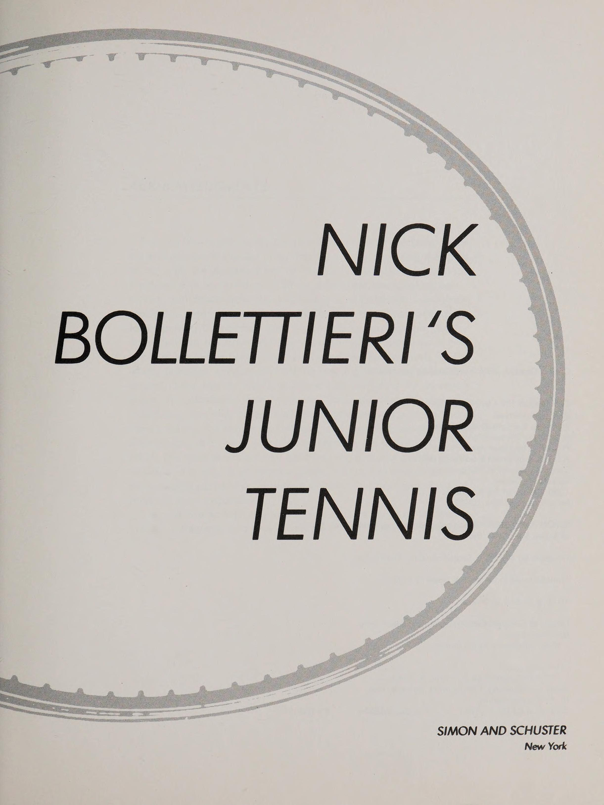
Hình 6.1: Nền tảng kỹ thuật hiện đại Bollettieri — Không có bí mật kỳ diệu nào ngoài sự chuẩn bị sớm, động tác gọn gàng và tiếp xúc bóng tự tin.
Figure 6.1: Modern Technical Foundations — Early preparation, compact stroke mechanics, and decisive ball impact.
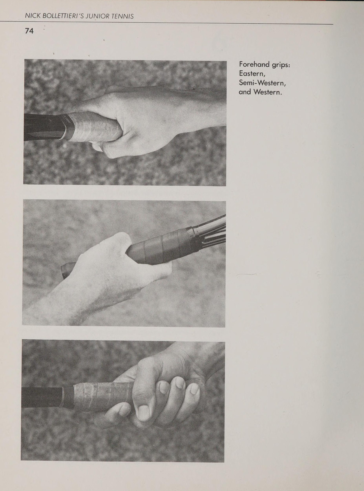
Hình 6.2: Các kiểu cầm vợt thuận tay hiện đại — So sánh cách cầm Eastern, Semi-Western và Western tối ưu hóa lực xoáy cắm Topspin.
Figure 6.2: Modern Forehand Grips — Comparative biomechanics of Eastern, Semi-Western, and Full Western grips for topspin drive.
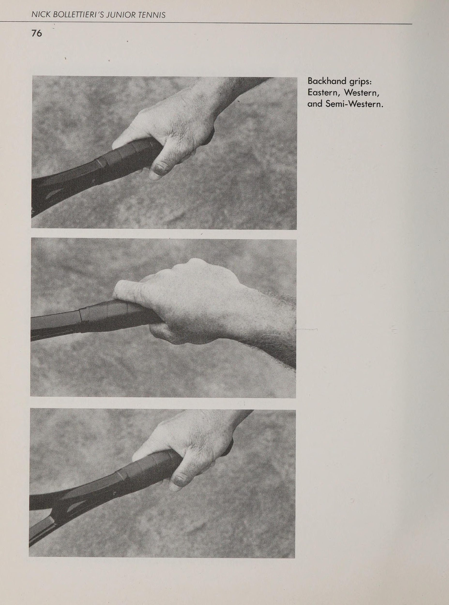
Hình 6.3: Các kiểu cầm vợt cú trái tay — Cầm Continental cho cú cắt bóng Slice và Eastern cho cú đánh xoáy topspin một tay.
Figure 6.3: Backhand Grips — Continental grip for defensive slice and Eastern backhand grip for topspin drive.
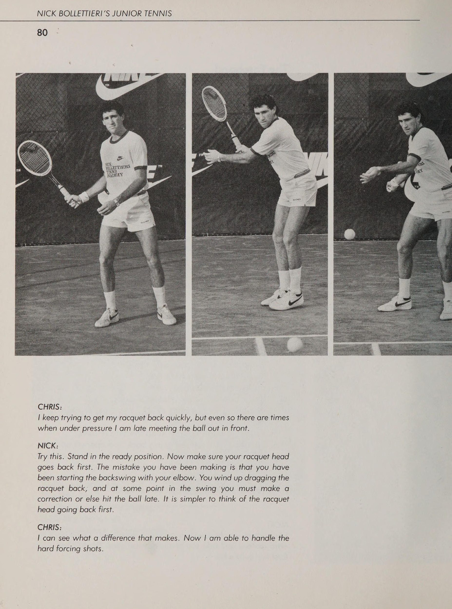
Hình 6.4: Động tác xoay cả thân người (Unit Turn) — Tay không thuận giữ cổ vợt đưa vai xoay vuông góc với lưới ngay khi nhận diện bóng.
Figure 6.4: Forehand Unit Turn — Non-hitting hand guiding racquet throat into immediate 90-degree shoulder coiling.
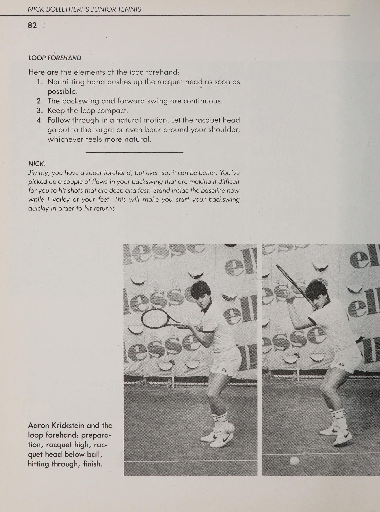
Hình 6.5: Quỹ đạo thuận tay vòng xoay liên tục (Loop Forehand) — Vợt hạ thấp xuống dưới bóng rồi quét lên cao tạo vận tốc gia tốc bùng nổ.
Figure 6.5: Loop Forehand Continuous Swing Path — Dropping the racquet below the ball and accelerating upward for explosive whip.
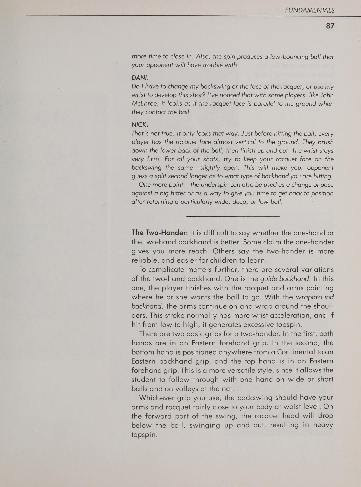
Hình 6.6: Cầm vợt cú trái hai tay — Tay dưới giữ Continental, tay trên chuyển Eastern thuận tay phát lực điều khiển.
Figure 6.6: Two-Handed Backhand Grip Configuration — Dominant hand on Continental and non-dominant hand driving in Eastern forehand position.
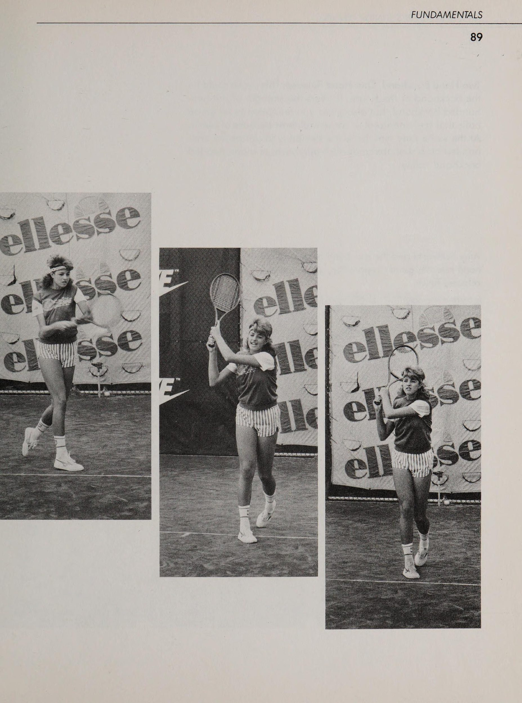
Hình 6.7: Chuỗi động tác cú trái hai tay kinh điển của trường phái Bollettieri — Chân trước làm trụ, thân trên xoay mở giải phóng lực vung qua vai.
Figure 6.7: Two-Handed Backhand Stroke Sequence — Firm front-foot plant, core rotational uncoiling, and high wrap follow-through.
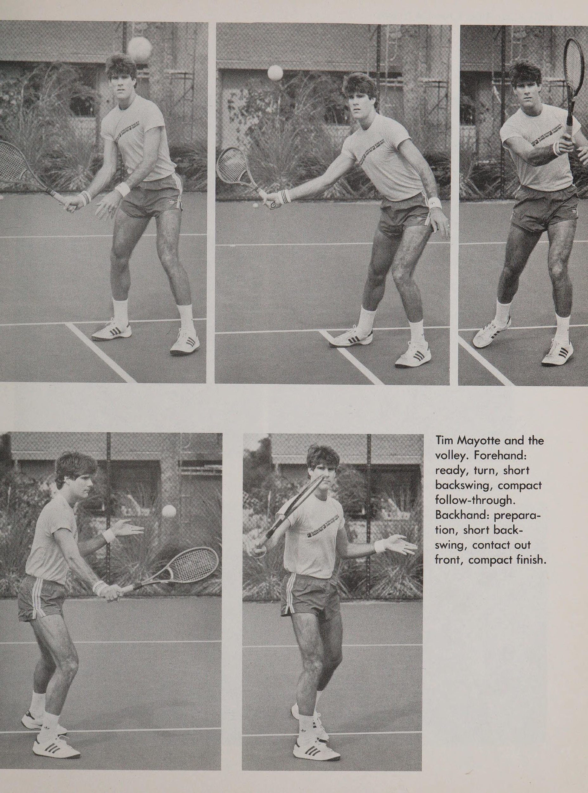
Hình 6.8: Kỹ thuật bắt lưới Punch Volley — Hạ thấp đầu gối, mặt vợt đi trước đón bóng ngắn gọn không lăng vợt ra sau.
Figure 6.8: Punch Volley Fundamentals — Knee flexion, firm wrist angle, and compact punch contact in front of the body.
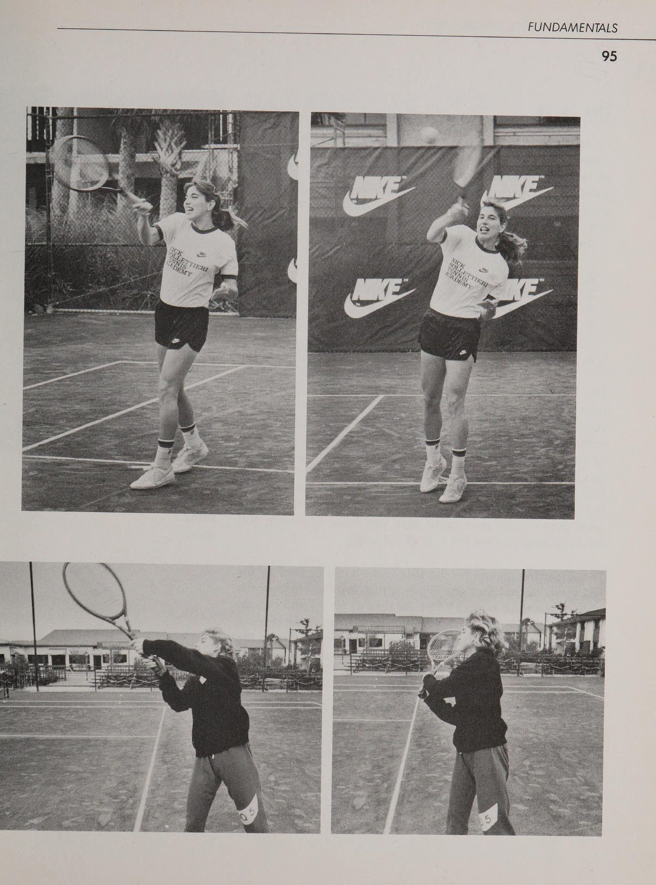
Hình 6.9: Cú bắt lưới vung hết tay (Drive Volley) thương hiệu Bollettieri — Đón bóng trên không tại vùng giữa sân kết liễu điểm số áp đảo.
Figure 6.9: Bollettieri Signature Swinging Drive Volley — Taking mid-court floaters out of the air for aggressive outright winners.
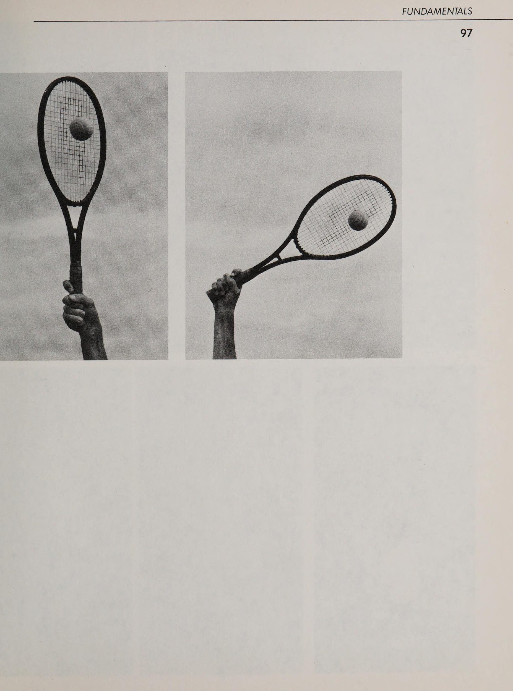
Hình 6.10: Cơ học cú giao bóng phẳng uy lực — Bật nhảy đón bóng tại điểm cao nhất, xoay sấp cẳng tay phát huy tối đa tốc độ.
Figure 6.10: Flat Serve Mechanics — Full vertical extension, explosive leg drive, and rapid forearm pronation.
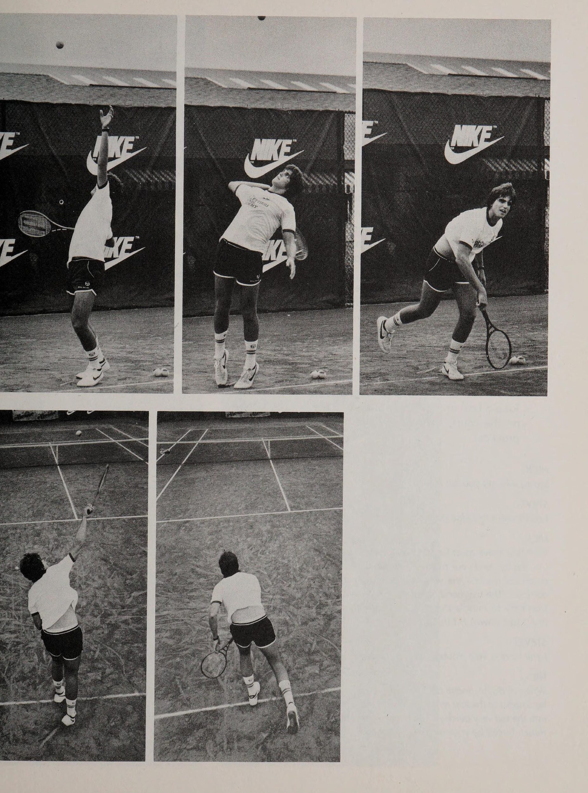
Hình 6.11: Chuỗi động học cú giao bóng 140 dặm/giờ của Eric Korita — Phân tách các pha tích năng lượng từ chân qua hông đến cú quất cổ tay đỉnh cao.
Figure 6.11: Eric Korita's 140-mph Serve Sequence — Proximal-to-distal kinetic chain summation delivering world-class service velocity.
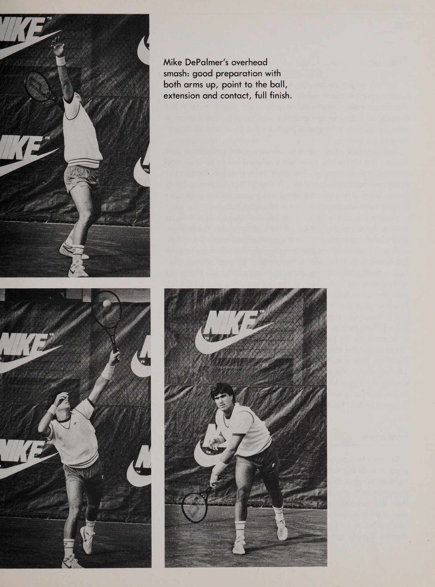
Hình 6.12: Kỹ thuật đập bóng trên cao (Overhead Smash) — Nhảy đổi chân trên không (Scissor Kick) duy trì thăng bằng và đè bóng uy lực.
Figure 6.12: Overhead Smash & Scissor Kick Footwork — Dynamic mid-air scissor leg exchange ensuring perfect balance and downward snap.
Chương 7: Hệ Thống Bài Tập Đặc Trưng Bollettieri: Chuỗi Đánh Dồn Dập & Xây Dựng Vũ Khí Tấn Công Chapter 7: The Drills: Rapid-Fire Execution and Weapon Construction
rills là xương sống trong hoạt động của chúng tôi. Tôi biết rằng điều đó giống như nói những chiếc kẹp giấy đã làm cho IBM trở nên vĩ đại. Mọi người cười khúc khích khi tôi kể cho họ nghe về các buổi tập và cách chúng tôi dành vài giờ mỗi ngày để hướng dẫn bọn trẻ các bài tập cơ bản, đôi khi có tới sáu hoặc tám học sinh trên sân. Đó là nơi chúng tôi nhận được nhãn “nhà máy” hoặc “trại đào tạo”.
Nhưng ngay cả những tay vợt giỏi nhất của chúng tôi, chẳng hạn như Jimmy Arias và Aaron Krickstein, cũng thực hiện các bài tập và họ tin tưởng vào chúng nhiều như | LÀM.
Hãy nhìn vào các đội bóng đá và bóng chày chuyên nghiệp. Họ làm gì trong thời gian đào tạo? Khoan. Rất nhiều trong số họ. Bạn thấy hình ảnh các tay vợt bóng đá chuyên nghiệp đang chạy qua các khóa học về sự nhanh nhẹn. Trong đợt huấn luyện mùa xuân, các nhà quản lý bóng chày nhấn mạnh các lối chơi cơ bản.
Các cuộc tập trận thật tuyệt vời vì chúng cân bằng điều kiện cho mọi người. Và một khi mọi thứ đều bình đẳng thì dễ dàng nhận ra tài năng, dễ dàng đánh giá khuyết điểm, điểm mạnh.
Bài tập trái tay từ đường cuối sân.
Tại Học viện, chúng tôi cố gắng cung cấp một môi trường cạnh tranh và cung cấp cho tay vợt cơ sở vật chất cũng như sự hướng dẫn. Các cuộc tập trận tạo ra bầu không khí cạnh tranh ở chỗ chúng lặp lại các tình huống quan trọng của trận đấu. Và bạn xây dựng trí nhớ cơ bắp thông qua việc đánh hàng nghìn quả bóng, để khi bạn tham gia một giải đấu, tiềm thức của bạn sẽ tiếp quản và tạo ra kết quả mà bạn đã làm việc trong nhiều tháng, có thể là nhiều năm trước đó.
Hầu hết mọi người không biết cách thực hành. Họ đi ra ngoài và đánh một vài quả bóng. Họ nên lấy một gợi ý từ thế giới học thuật. Trong trường luật, có những nhóm học tập nơi sinh viên làm việc cùng nhau để tiến bộ. Hãy cố gắng hoàn thành điều tương tự trong môn quần vợt của bạn. Tạo một nhóm diễn tập và ít nhất mỗi tuần một lần tập hợp lại và làm việc như một đơn vị. Bạn sẽ ngạc nhiên về việc điều này sẽ giúp ích cho sự tiến bộ của bạn như thế nào.
Trong chương này, bạn sẽ tìm thấy tất cả các bài tập mà chúng tôi sử dụng. Một số dành cho các nhóm lớn tới tám hoặc mười tay vợt. Những người khác phù hợp cho ba hoặc bốn tay vợt. Hãy đặc biệt chú ý đến phần sau, bởi vì đây là những bài tập mang tính cạnh tranh cao hơn, những bài tập gây áp lực lớn nhất cho bạn.
Có bảy loại bài tập: 1-4, dành cho các động tác chạm đất cơ bản; 5-8, đối với các cú chạm đất kết hợp; 9-15, cho cú bắt lưới (Volley); 16-19, dành cho các pha phối hợp chạm đất và vô lê; 20— 22, đối với chi phí chung; 23, cho cú giao bóng cơ bản; và 24-36, các cuộc diễn tập nâng cao của chúng tôi.
Lưu ý: Đảm bảo thực hiện các quy trình an toàn thích hợp khi khoan và đảm bảo tất cả bóng vào lưới đều được dọn sạch ngay lập tức.
ĐỐI ĐẤT CƠ BẢN
Để nghiên cứu cơ chế của cú đánh.
CÁC PHƯƠNG PHÁP THAY THẾ HOẠT ĐỘNG a. Feeder đứng ở đường dịch vụ. 1. Bài tập tương tự có thể được thực hiện cho các cú trái tay.
b. Tay vợt đứng trên đường cơ sở. 2. Có thể thực hiện cùng một bài tập đánh hai quả bóng c. Người trung chuyển đánh bóng sâu đến giữa đường cơ sở. khắp sân đấu.
Sau khi tay vợt đánh bóng, người đưa bóng chạm vào quả 3. Cách luân phiên cũng tốt: bóng đầu tiên hạ bóng thứ hai rộng cho cùng một tay vợt. Sau đường, bóng thứ hai chéo sân hoặc ngược lại.
đấu thủ đầu tiên đã thực hiện cả hai cú đánh mà anh ta thực hiện (Với hơn tám đấu thủ, cách thay thế này quay trở lại vạch xuất phát, và đấu thủ thứ hai hoạt động rất tốt. Người phía trước đánh xuống đấu thủ bắt đầu mũi khoan. Người phía sau đánh chéo sân, d. Điều quan trọng là phải giữ học sinh xếp hàng, hoặc ngược lại.) chạy bộ tại chỗ. 4. Khi có hơn tám tay vợt trên e. Mục tiêu phải được đặt cách sân ba feet, chỉ đưa một quả bóng.
Một cú chạm đất cơ bản, một cú đánh tiếp cận.
Để nghiên cứu cơ chế của cú đánh.
Để học cách tận dụng những cú đánh ngắn.
a. Feeder đứng ở đường dịch vụ.
c. Người trung chuyển đánh bóng sâu đến giữa đường cơ sở; sau khi đấu thủ đánh bóng, người chuyền bóng đánh bóng thứ hai rộng và ngắn (xung quanh đường giao bóng) cho cùng một đấu thủ. Sau khi thực hiện cả hai lượt đánh, anh ta quay trở lại vạch xuất phát và tay vợt thứ hai bắt đầu bài tập.
e. Trong quá trình tiếp cận, học viên nên tập trung vào cú backswing ngắn hơn và nên đánh xuống đường (tỷ lệ cú đánh).
f. Cần nhấn mạnh vào việc không mắc lỗi nào.
g. Mục tiêu phải cách đường biên và đường cơ sở ba feet.
2. Cùng một mũi khoan, xen kẽ các vị trí. Bóng đầu tiên chéo sân, bóng thứ hai dọc theo đường biên.
3. Quả bóng đầu tiên sâu, và quả bóng thứ hai, học sinh thực hành cú đánh tiếp cận lát cắt. 4. Với hơn tám tay vợt trên sân, chỉ cho ăn một quả bóng ngắn.
Để phát triển các đường thùy phòng thủ và tấn công.
Feeder đứng ở đường dịch vụ.
Tay vợt đứng ở giữa đường cuối sân.
Feeder đánh bóng rộng và sâu. Tay vợt phải đánh bóng qua cánh tay duỗi thẳng hoàn toàn và vợt của người đưa bóng vào khu vực mục tiêu.
Sau khi đánh bóng, tay vợt quay trở lại vạch xuất phát và tay vợt thứ hai thực hiện cú lốp bóng.
. Chỉ những tay vợt có trình độ cao mới nên thực hiện cú lốp bóng xoáy lên tấn công.
. Giữ những học sinh còn lại chạy bộ tại chỗ.
Mục tiêu phải được đặt cách đường biên và đường cơ sở ba feet.
2. Các bài tập hai bóng, luân phiên các động tác chạm đất bằng lốp bóng hoặc ném bóng bằng lốp bóng.
Để phát triển cú thuận tay thành một vũ khí bằng cách buộc học sinh phải chạy vòng trái tay trên những quả bóng ngắn.
Để khiến học sinh tận dụng được bóng ngắn.
a. Feeder đứng ở đường dịch vụ.
b. Tay vợt đứng ở giữa đường cơ sở.
c. Quả bóng đầu tiên được đưa ngắn và cao về phía thuận tay, quả bóng thứ hai ngắn và cao về phía trái tay.
d. Đảm bảo rằng các tay vợt phải hung hãn nhưng đừng để họ đánh bóng quá mạnh.
1. Bóng thứ hai có thể từ trong ra ngoài. 2. Để học sinh chạy vòng quanh trái tay để thực hiện quả bóng đầu tiên và sau đó thực hiện cú sút vào lưới để thực hiện cú vô lê.
3. Khi có nhiều hơn tám tay vợt, cho học sinh chạy vòng quanh trái tay, chỉ đánh một quả bóng.
TỔNG HỢP-ĐỘT ĐẤT
Để nghiên cứu cơ chế của cú đánh.
Để cải thiện tính nhất quán và kiểm soát.
Bộ nạp đang đứng ở đường dịch vụ.
Tay vợt đứng ở giữa đường cuối sân.
Quả bóng đầu tiên được đưa rộng về phía thuận tay, quả bóng thứ hai rộng về phía bên trái tay. Sau khi thực hiện cả hai lượt đánh, tay vợt quay trở lại vạch xuất phát và tay vợt thứ hai sẽ bắt đầu luyện tập.
. Làm cho tay vợt tập trung vào hình thức và vị trí.
. Đội hình tương tự cho các đường chéo.
. Lần lượt thực hiện quả bóng đầu tiên dọc theo đường biên, quả bóng thứ hai chéo sân và ngược lại.
. Thay thế bằng những cú thả bóng và lốp bóng.
. Khi có nhiều hơn tám tay vợt, chỉ sử dụng mũi khoan một bóng. Người trước đánh thuận tay, người sau đánh trái tay.
. Sau nửa rổ của bài tập ban đầu, người đưa bóng phải đánh bóng rộng về phía trái tay và bóng thứ hai rộng về phía thuận tay.
Để nghiên cứu về cơ học của cú đánh.
Để cải thiện tính nhất quán và kiểm soát.
a. Feeder đứng ở đường dịch vụ.
b. Tay vợt đứng ở giữa đường cơ sở.
c. Quả bóng đầu tiên được đưa rộng về phía thuận tay, quả bóng thứ hai rộng về phía bên trái tay. Sau khi thực hiện cả hai cú đánh, tay vợt quay trở lại vạch xuất phát và tay vợt thứ hai thực hiện bài tập.
d. Điều quan trọng là khiến tay vợt tập trung vào chuyển động từ thấp đến cao.
1. Luân phiên bóng đầu tiên dọc theo đường biên, bóng thứ hai đánh góc, và ngược lại.
Cải thiện tính nhất quán và khả năng kiểm soát.
a. Người hướng dẫn đứng ở hàng dịch vụ.
b. Tay vợt A đứng sau đường cơ sở hai feet trên đường đánh đơn, trong khi tay vợt B đứng sau đường cơ sở hai feet trên đường giữa.
c. Huấn luyện viên đánh bóng rộng sang bên phải B để B di chuyển sang thực hiện cú đánh thuận tay. Đồng thời A trượt qua đường tâm. Khi B tiếp xúc với bóng (thuận tay), huấn luyện viên đánh bóng sang bên trái của A, buộc anh ta phải lùi lại và đánh trái tay. Khi A di chuyển về phía trái tay của mình,
B đang trượt về giữa sân. A và B chuyển động như thể chúng cùng chuyển động nên
d.. C và D di chuyển cùng lúc A và B di chuyển, “che bóng” những cú chạm đất của họ. Bài tập được lặp lại cho đến khi người nạp luân chuyển tay vợt. Hai quả bóng được khuyến khích.
. Mô hình tương tự cho các đường giao nhau.
. Thay thế đường bóng đầu tiên xuống, đường bóng thứ hai chéo sân và ngược lại.
. Sau khi A và B mỗi người đánh hai phát thì đi về phía đối diện. Vì vậy, nếu tay vợt A đánh trái tay, lần sau anh ta nên đánh thuận tay.
. Mũi khoan này cũng rất tuyệt vời cho những cú vô lê.
. Cú chạm đất đầu tiên, cú thả bóng thứ hai hoặc cú lốp bóng.
Để cải thiện các cú đánh tiếp đất và tiếp cận.
CÁC PHƯƠNG PHÁP THAY THẾ HOẠT ĐỘNG a. Feeder đứng ở đường dịch vụ. 1. Đánh luân phiên bóng đầu tiên chéo bàn, bóng thứ hai b. Tay vợt A và C đứng ở góc trái của bóng dọc theo đường biên.
đường cơ sở. B và D đứng bên phải 2. Nên biến đổi các nét: góc. cú sút tiếp cận lát cắt.
c. Feeder đánh hai quả bóng về phía thuận tay của A. A đánh 3. Tiếp cận và một cú vô lê.
quả bóng đầu tiên như một cú đánh tiếp đất thông thường xuống số 4. Mũi khoan có thể dễ dàng thay đổi tùy theo đường, quả bóng thứ hai như một kiểu đánh tiếp cận, kiểu đánh mong muốn, số lượng bóng trúng, dọc theo đường. Sau đó, A quay lại v.v.
đối diện và chờ đến lượt đánh trái tay.
d. Sau khi A đánh được hai lượt, người nạp bóng đánh hai quả về phía trái tay của B. B đánh quả bóng đầu tiên như một cú chạm đất, và quả bóng thứ hai khi tiếp cận đường biên. Người đánh này cũng chuyển dòng.
b. Tay vợt đứng ở vạch giao bóng trên vạch đánh đơn.
c. Người trung chuyển đánh quả bóng đầu tiên về phía thuận tay của tay vợt; cú vô lê đầu tiên này sẽ được đánh xung quanh vạch giao bóng. Sau khi thực hiện cú đánh này, tay vợt phải di chuyển cách lưới khoảng 4 feet để thực hiện cú vô lê thuận tay thứ hai.
Bài tập (Drill) cú bắt lưới (Volley) gạt nước kính chắn gió.
b. Người lưới A đứng cách lưới 8 feet trên đường đánh đơn, trong khi người lưới B đứng cách lưới 8 feet trên đường giữa.
b. Tay vợt A và C đứng ở góc trái của vạch giao bóng. B và D đứng ở góc bên phải.
c. Feeder đánh hai quả bóng về phía thuận tay của A. A thực hiện cú vô lê đầu tiên của cô ấy từ đường giao bóng, như một cú vô lê tiếp cận dọc theo đường biên, quả bóng thứ hai là một cú ném chéo sân. d. Phần còn lại của thao tác tương tự như trong sơ đồ số 7.
Tận dụng lợi thế của những quả bóng ngắn, cao.
Huấn luyện viên đứng ở hàng giao bóng.
Tay vợt đứng ở giữa đường cơ sở.
Feeder đánh bóng cao tới tay vợt đầu tiên trong hàng, xung quanh vạch giao bóng. Sau khi tung cú vô lê cao, đấu thủ quay về phía sau vạch xuất phát và đấu thủ thứ hai bắt đầu thực tập.
. Điều quan trọng là phải giữ tay vợt ở phía sau đường cuối sân cho đến khi người trung chuyển chạm bóng. Tay vợt phải giả định rằng họ đang tập trung từ đường cuối sân và đối thủ đã đánh trúng một quả bóng mặt trăng cao mà họ sẽ tấn công trên không.
. Người phía trước tung cú vô lê cao thuận tay, người phía sau tung cú vô lê cao trái tay
(điều này sẽ cải thiện sự tập trung).
5. Cú vô lê cao và cú vô lê đưa bóng.
Để mang lại sự luyện tập xuất sắc cho những cú vô lê đầu tiên và những cú vô lê dứt điểm.
Để có được cơ chế chính xác trong việc thực hiện các cách tiếp cận lưới.
1. Sử dụng mẫu tương tự cho các cú đánh trái tay.
2. Cú vô lê thuận tay đầu tiên, cú vô lê trái tay bóng thứ hai và ngược lại.
3. Quả bóng đầu tiên là một cú vô lê, quả bóng thứ hai là một cú đánh qua đầu.
HOẠT ĐỘNG THAY THẾ a. Feeder đứng ở đường dịch vụ.
b. Tay vợt đứng ở giữa đường cơ sở.
c. Feeder đánh hai quả bóng về phía thuận tay của tay vợt đầu tiên. Tay vợt thực hiện cú vô lê đầu tiên xung quanh vạch giao bóng, đặt nó sâu xuống vạch; quả bóng thứ hai được đánh vào bên trong đường giao bóng dưới dạng cú vô lê chéo góc góc ném bóng. Sau khi đánh cả hai lượt, tay vợt quay trở lại vạch xuất phát và tay vợt thứ hai bắt đầu diễn tập.
d. Điều quan trọng là phải làm cho tay vợt thực hiện cú vô lê đầu tiên của mình.
e. Cần nhấn mạnh vào việc thực hiện cú vô lê sâu đầu tiên.
f. Quả bóng thứ hai là quả ném bóng (không chạm bóng).
KHOAN MƯỜI BỐN:
Để dạy học sinh cách giữ bóng trong khi chơi.
CÁC GIẢI PHÁP THAY THẾ 1. Di chuyển tay vợt đến gần hơn để họ có thể làm việc trên a. Huấn luyện viên đứng giữa lưng thực hiện cú vô lê góc nhanh.
sân đấu. 2. Di chuyển tay vợt trở lại phía sau vạch giao bóng, vì vậy b. A và B đứng trên đường giao bóng đối diện với C, họ có thể làm việc theo chiều sâu và khả năng kiểm soát.
và D. 3. Tập hợp các hàng—A với C và B với D. c. Huấn luyện viên thực hiện cú vô lê cho C hoặc D. Sau đó luân phiên chéo sân—A và D, B và
Họ chuyền bóng trở lại A hoặc B và một pha tập trung C. Tất cả các cú vô lê.
đã bắt đầu. Người hướng dẫn giữ cho mũi khoan di chuyển trơn tru trong khi hướng dẫn.
d. Điều quan trọng là giữ cho cuộc biểu tình diễn ra với tốc độ tốt. Không được đánh nửa cú vô lê.
e. Nếu có nhiều hơn bốn tay vợt, họ có thể luân phiên ra vào.
HOẠT ĐỘNG THAY THẾ a. Huấn luyện viên đứng giữa phía sau - 1. Hai chọi một, hai trên đường biên, một chống sân, di chuyển qua lại. hàng rào.
b. Tay vợt A, B và C đứng quay lưng vào hàng rào phía sau.
c. Tay vợt D, E và F đứng trên đường cuối sân.
d. A đánh với F, B đánh với E, C đánh với D.
e. Sau vài phút thực hiện những cú chuyền nhanh, nhanh, người hướng dẫn ra lệnh chuyển đổi và mọi người di chuyển sang trái một vị trí. Ưu điểm của việc chuyển đổi là mọi người sẽ chống lại hàng rào và với một đối tác khác nhau mỗi lần.
f. Điều quan trọng là tay vợt A, B và C phải lùi về phía hàng rào.
g. Khiến tay vợt thực hiện cú vô lê bằng chuyển động ngắn và gọn.
KẾT HỢP ĐẤT VÀ BÓNG CHUYỀN
Tiếp cận cú đánh chạm đất và cú vô lê.
Để khiến học sinh tận dụng được bóng ngắn.
Để có được cơ chế chính xác trong việc thực hiện các cách tiếp cận lưới.
Thực hiện tiếp cận sâu và thực hiện cú vô lê.
CÁC PHƯƠNG PHÁP THAY THẾ HOẠT ĐỘNG a. Feeder đứng ở đường dịch vụ. 1. Chỉ thuận tay.
b. Tay vợt đứng ở giữa đường cơ sở. 2. Trái tay.
c. Người trung chuyển đánh hai quả bóng về phía trước của tay vợt đầu tiên- 3. Kết hợp thuận tay và trái tay.
tay. Tay vợt đánh quả bóng đầu tiên phía sau đường giao bóng 4. Thực hiện cách tiếp cận thuận tay bằng cách chạy vòng quanh như một cách tiếp cận chạm đất dọc theo đường biên. (phát triển vũ khí thuận tay) và sau đó
Quả bóng thứ hai được đánh vào bên trong đường giao bóng khi di chuyển vào để thực hiện cú vô lê.
một cú vô lê góc chéo sân.
d. Điều quan trọng là phải làm cho tay vợt tuân theo cách tiếp cận lưới của cô ấy.
e. Cần nhấn mạnh vào việc đặt cách tiếp cận sâu sắc.
f. Quả bóng thứ hai là một cú vô lê đặt bóng.
KHOAN MƯỜI BẢY:
Hai đường bóng chéo tiếp cận và một cú vô lê.
b. Feeder đánh hai quả bóng về phía thuận tay của A. A đánh quả bóng đầu tiên của mình như một cú chạm đất tiếp cận phía sau vạch giao bóng, sau đó di chuyển vào bên trong quả giao bóng và đánh một cú vô lê thuận tay.
c. Phần còn lại của thao tác tương tự như trong sơ đồ số 7.
Bài tập tiếp cận hai bóng (hai đường).
Để cung cấp thực hành xuất sắc cho các cú tiếp đất và cú vô lê.
Để giảm thiểu số lượng sân khi có nhiều tay vợt.
CÁC PHƯƠNG PHÁP THAY THẾ HOẠT ĐỘNG a. Người hướng dẫn đứng ở hàng dịch vụ. 1. Sử dụng hai người hướng dẫn trên một sân.
b. A và C đứng ngay bên trái của trung tâm 2. Với ít người hơn, thực hiện bài tập ba bóng (đất ở đường cuối sân, còn B và D đứng ngay khi thực hiện cú đánh, cú đánh tiếp cận, cú vô lê). Phải. 3. Bốn quả bóng (cú chạm đất, tiếp cận, vô lê, c. Người đưa bóng đánh bóng lần lượt vào A và B. Một cú vô lê).
thực hiện cú tiếp cận trái tay dọc theo đường biên ngang và sau đó áp sát bằng cú vô lê trái tay. Cùng lúc đó, B tung cú vô lê thuận tay. Tất cả các cú đánh phải được đánh xuống dòng.
d. Sau khi đánh nhau, A và B chạy vòng ra ngoài, đổi đường. Sau đó C và D bước vào và bài tập được lặp lại.
KHOAN MƯỜI NINET:
Một cú chạm đất, một cú vô lê (khoan một bóng).
HOẠT ĐỘNG THAY THẾ a. Feeder đứng ở đường dịch vụ. 1. Tất cả các nét có thể được thực hiện bằng cách sử dụng cùng một b. Tay vợt đứng ở giữa đường cơ sở. sự hình thành.
c. Người trung chuyển đánh quả bóng đầu tiên sâu về phía A, người này thực hiện cú đánh chạm đất dọc đường biên. Sau đó, người trung chuyển đánh bóng cho B, người này tung cú vô lê trái tay dọc đường biên.
d. Sau khi đánh một phát, A và B chạy vòng ra ngoài và quay về vạch xuất phát.
Để nghiên cứu cơ chế của cú đánh.
Để cải thiện tính nhất quán và kiểm soát.
a. Người hướng dẫn đứng ngay bên trong tâm của đường cơ sở.
b. A đứng bên trái lưới; B đứng ở giữa ô dịch vụ bên phải. C và D đứng trên sân đôi song song với A và B. F và E đứng ngoài sân đôi và sát lưới.
c. Feeder đánh A lốp bóng. Khi A trượt về phía sau để đánh đầu, B di chuyển vào và chạm lưới.
Sau khi A đánh bóng qua đầu, B trượt trở lại để nhận cú lốp bóng từ huấn luyện viên; Khi B chạm đầu, A lùi vào chạm lưới.
d. Bài tập được lặp lại trong hai lần tiêm.
. Cand D di chuyển song song với A và B, che khuất chuyển động của họ.
. Sau hai lượt đánh, C và D tiến vào và trở thành sát thủ, trong khi F và E di chuyển vào trong hẻm đánh đôi và trở thành “kẻ đánh bóng”.
. A và B di chuyển sang phía đối diện, thế chỗ F và E, chạy bộ tại chỗ.
Điều quan trọng để đảm bảo an toàn là sau khi các tay vợt thực hiện cả hai cú đánh và chuyển đường, họ sẽ đi đến hàng rào phía sau.
KHOAN HAI MƯƠI MƯƠI:
Bóng đầu tiên là lốp bóng, bóng thứ hai là cú bắt lưới (Volley) (mỗi người hai bóng).
Bài tập này khiến học sinh di chuyển vào sau khi đánh vào đầu.
KHOAN HAI MƯƠI HAI MƯƠI:
b. Tay vợt bắt đầu ở gần lưới. Tay vợt chạm vào lưới mỗi lần và sau đó trượt trở lại để đánh đầu.
c. Sau khi đánh vài cú, tay vợt sẽ quay trở lại đường giao bóng. Feeder đánh bóng gần đường biên nên tay vợt phải nhảy để đánh bóng cao, sâu trên đầu.
d. Xoay tay vợt sau vài lần bắn.
KHOAN DÀNH CHO PHỤC VỤ
KHOAN HAI MƯƠI BA:
Để cải thiện cơ học của cú đánh.
Để cải thiện tính nhất quán và kiểm soát.
. Học sinh giao bóng đứng đằng sau đường cơ sở.
. Người hướng dẫn đứng phía sau học sinh.
Học sinh chờ đợi đứng ở hàng rào phía sau.
. Trong khi người hướng dẫn kiểm tra các quả giao bóng, các học viên đang chờ sẽ ném bóng về phía người giao bóng.
e. Sau vài lần giao bóng, người hướng dẫn ra lệnh xoay và mọi người xoay một vị trí sang phải.
f. Tiếp tục quy trình qua toàn bộ giỏ.
1. Cho học sinh giao bóng nhiều lần với thái độ cởi mở. Điều này sẽ khiến họ xoay hông.
2. Cho học sinh giao bóng trong tư thế quỳ.
Điều này sẽ khiến họ đánh bóng.
MÁY KHOAN NÂNG CAO
KHOAN HAI MƯỜI BỐN:
Bài tập cú bắt lưới (Volley) chạm đất theo người dẫn đầu.
. Người hướng dẫn đứng sau hàng giao bóng. một b.
. B đứng cách lưới 8 feet.
. Huấn luyện viên đưa bóng về phía thuận tay của A. A di chuyển để trả bóng xuống vạch cho B. B thực hiện cú vô lê để A trả bóng xuống vạch.
Sau đó, huấn luyện viên đánh vào trái tay của A, và A di chuyển để trả bóng xuống vạch; B di chuyển ngang để cắt đứt cú đánh dọc biên bằng một cú vô lê thuận tay dọc biên.
Bài tập được lặp lại trong hai lượt đánh.
. Sau khi A và B đánh cả hai lượt, họ quay trở lại vạch xuất phát và C và D thực hiện bài tập.
h. Sau vài lần bắn, hãy luân chuyển tay vợt; Những người đánh bóng trên mặt đất (A, C và E) sẽ thực hiện những cú vô lê và những người đánh cú bắt lưới (Volley) (B, D và F) sẽ thực hiện những cú đánh tiếp đất.
1. Một biến thể đơn giản của bài tập là A và B đánh chéo sân.
KHOAN HAI MƯỜI MƯƠI LĂM:
Bài tập chạm đất một chọi một.
Để cải thiện tính nhất quán, khả năng kiểm soát và động tác bằng chân.
a. Bài tập này có thể được thực hiện khi có hoặc không có người hướng dẫn.
b. A và B đứng đối diện nhau sau đường cuối sân.
c. A bắt đầu bằng cách đánh một cú thuận tay sâu dọc biên. B di chuyển tới và thực hiện một cú đánh trái tay sâu. A chạy ngang qua và trả lại cú trái tay của B dọc theo đường biên trong khi B di chuyển qua và trả nó bằng một cú thuận tay chéo bàn.
Sau vài phút, bài tập có thể thay đổi để A đánh tất cả các quả bóng chéo sân, và B đánh dọc đường biên.
. Chuyển động ứng suất, vị trí và độ sâu.
1. Bài tập này có thể được điều chỉnh cho phù hợp với bốn tay vợt. Một bên đánh dọc biên và bên kia đánh chéo sân. Sau vài phút, thay đổi hướng đánh.
KHOAN HAI SÁU:
Để cung cấp một buổi tập luyện xuất sắc cho học sinh.
Để giúp di chuyển và dự đoán.
a. Người hướng dẫn đứng sau giữa e. Đảm bảo rằng đường cơ sở không vượt quá đường dịch vụ. quả bóng. Baseliner cũng nên hoạt động trên các góc, b. A và B ở trong hộp dịch vụ, còn C chờ thay đổi tốc độ, v.v.
ngoài tâm của đường cơ sở.
c. Huấn luyện viên đưa một quả bóng sâu cho C, người này thực hiện một cú chạm đất cho A hoặc B. Họ chuyền bóng trở lại C và một pha giao bóng bắt đầu. A và B phải 1. Một bài tập chuyền bóng hai chọi một cũng rất xuất sắc.
đặt quả vô lê của họ để C buộc phải di chuyển. Di chuyển mọi người vào lưới và để họ nhanh chóng. trao đổi những cú vô lê nhanh chóng.
d. Người hướng dẫn đảm bảo rằng bài tập (Drill) di chuyển trơn tru trong khi hướng dẫn. Sau vài phút, C trở thành người chuyền bóng, B trở thành người bắt bóng và A thay thế B.
KHOAN HAI MƯƠI MƯỜI BẢY:
Xoay đôi. ] MỤC TIÊU: F Để mô phỏng cách chơi điểm thực tế, đồng thời thu hút một số học sinh tham gia.
a. A, B, C là đội giao bóng và D, E, F là đội nhận bóng. A giao bóng cho D, và điểm được tính. Sau thời điểm đó, A di chuyển lên vị trí bắt vô lê. B di chuyển ra ngoài, C di chuyển vào và giao bóng từ cùng một phía. Đội còn lại cũng quay ngược chiều kim đồng hồ: D di chuyển lên, E di chuyển ra ngoài, F trở thành người nhận.
b. Trong bài tập này, chúng tôi nhấn mạnh đến việc giao bóng và chuyền bóng, trả bóng tốt, áp sát lưới và tinh thần đồng đội, di chuyển, giao tiếp tốt, v.v.
1. Luân phiên đánh đơn: Sử dụng cùng một đội, A, B và C sẽ là máy chủ và D, E và F sẽ là người quay lại. Sau khi điểm được chơi, người chiến thắng ở lại và người thua cuộc sẽ bị loại. Sẽ rất hữu ích nếu đặt tối đa ba lần người chiến thắng có thể ở lại. Học sinh nên chơi trò chơi đến 21; lúc 11 giờ họ đổi bên và người quay lại trở thành người giao bóng. Chúng tôi thường chơi hai trong ba trò chơi đến 21.
KHOAN HAI MƯƠI TÁM:
Để tay vợt thoải mái với lối chơi tấn công.
HOẠT ĐỘNG THAY THẾ a. Người hướng dẫn đứng bên trái, ngay sau người số 1. Bài tập này có thể thay đổi bằng cách thay đổi đường giao bóng. số lượng bóng (với một nhóm lớn, sử dụng twob. A đứng sẵn sàng giao bóng ở phía deuce. bài tập (Drill) bóng), thứ tự, v.v.
c. A giao bóng và theo bóng vào lưới.
Huấn luyện viên chuyền ba quả vô lê cho A. A đánh quả vô lê đầu tiên sâu vào góc, sau đó chuyển sang thực hiện cú vô lê trái tay và cú vô lê thuận tay.
d. Sau đó, huấn luyện viên thực hiện một cú lốp bóng và A bỏ phần trên xuống.
e. B sau đó chuyển đến và làm theo thói quen tương tự.
Bài tập được lặp lại trong vài lượt.
KHOAN HAI MƯƠI CHÍN:
Để cải thiện tính nhất quán và tính di động.
HOẠT ĐỘNG THAY THẾ a. Người hướng dẫn đứng gần hàng rào phía sau và 1. Sau khi mọi người thực hiện bài tập phía sau người đánh B và C. vài lần, A đánh xuống vạch và B và C đánh b. B và C đứng đối diện với A, phía sau sân chéo.
c. Huấn luyện viên đánh bóng về phía A, A đánh chéo bàn về phía thuận tay của B; B đánh dọc đường biên, và A di chuyển tới và đánh một cú trái tay dọc đường biên về phía thuận tay của A. Sau vài phút, họ chuyển đổi theo chiều kim đồng hồ.
d. Điều quan trọng là giữ bóng trong cuộc và đặt bóng sâu.
Để phát triển khả năng kiểm soát và tính nhất quán.
HOẠT ĐỘNG THAY THẾ a. Tay vợt A và B đứng đối diện với C và D, 1. Sau vài phút ở đường dưới và phía sau đường cuối sân. chéo sân, di chuyển C và D lên lưới và để b. Bài tập này rất tuyệt vời để bắt đầu luyện tập. Đối với họ, họ chuyền bóng xuống vạch rồi vượt qua 10 phút, các tay vợt đánh xuống vạch (A đánh sân. Sau khi thực hiện xong, C và D quay lại đánh thuận tay, C đánh trái tay). Sau đó, họ căn bản và A và B di chuyển vào lưới.
đánh chéo bàn, thuận tay sang thuận tay, trái tay sang trái tay.
c. Điều quan trọng là họ phải giữ bóng sâu. Đừng để tay vợt đánh quá sức.
KHOAN THIRTY-ONE: Bài tập tiếp cận hai chọi hai. MỤC TIÊU: Rèn luyện phản xạ và các cú đánh tiếp cận.
a. Huấn luyện viên đứng ở giữa vạch giao bóng.
b. Một đội đứng ở vạch cuối sân (A, B), đội đối phương đứng trên lưới (C, D).
c. Bóng được người hướng dẫn đưa vào cuộc chơi. d. A hoặc B thực hiện cú đánh tiếp cận và cả hai đều di chuyển vào lưới, ghi điểm. Sau khi chơi xong điểm, A và B di chuyển về lấy E và
Vị trí của F. E và F đóng vai trò quan trọng. đ. Khi một trong các đội ở cuối sân ghi được năm điểm, đội đó sẽ ghi lưới và các vận động viên vô lê sẽ di chuyển về đường cuối sân.
1. Chỉ là cú vô lê thôi. Huấn luyện viên đưa bóng và đội thực hiện cú vô lê tiếp cận.
KHOAN THIRTY-TWO: Vua của triều đình. MỤC TIÊU: Rèn luyện các cú vô lê và chuyền bóng.
CÁC PHƯƠNG PHÁP THAY THẾ HOẠT ĐỘNG a. Huấn luyện viên đứng ngoài sân đánh đôi. 1. Thực hiện cú vô lê.
b. A đợi trên đường biên ngang, đối thủ B cũng vậy. 2. Thực hiện tất cả các cách tiếp cận trước bằng xoáy lên, sau đó
Huấn luyện viên đưa bóng cho A, người này đánh một lát apwith, v.v.
tiến tới và di chuyển vào lưới. B cố gắng vượt qua
A ở lưới. Sau khi điểm kết thúc, A đi về phía sau vạch xuất phát và C thế chỗ A.
c. Vòng quay tiếp tục cho đến khi A hoặc C giành được năm điểm từ B. A hoặc C sau đó thế chỗ B.
KHOAN THIRTY- BA: Trò chơi Dink.
MỤC TIÊU: Học cách kiểm soát mặt vợt.
Để xử lý các góc và thả ảnh.
HOẠT ĐỘNG THAY THẾ a. Huấn luyện viên ra khỏi sân, bắt đầu mọi điểm.
b. A, B và C là một đội, D, E và F là đối thủ của họ ở phía đối diện. A và B bắt đầu đấu với D và E; họ chỉ chơi khu vực dịch vụ. Ngay khi một trong các đấu thủ bỏ lỡ một điểm, anh ta sẽ bị loại và đấu thủ đứng cạnh (C hoặc F) sẽ thay thế anh ta. Nếu một đội giành được ba điểm liên tiếp thì phải chuyển đổi.
Ví dụ: Nếu đội A và B giành được 3 điểm thì B đi ra và C đi vào. Họ nên chơi đến 21.
c. Đảm bảo tay vợt đứng trên vạch giao bóng và đánh bóng qua lại mà không đánh quá mạnh.
d. Hãy chắc chắn rằng chúng có tác dụng kiểm soát vợt.
1. Một biến thể tuyệt vời của bài tập này là xếp tay vợt thành một hàng. Người phía trước đánh quả bóng đầu tiên rồi di chuyển ra khỏi đường để người phía sau tiếp tục điểm.
KHOAN THIRTY-FOUR: Chiều cao và chiều sâu.
MỤC TIÊU: Để nghiên cứu về độ sâu chạm đất.
CÁC PHƯƠNG PHÁP THAY THẾ HOẠT ĐỘNG a. Người hướng dẫn ở ngoài vạch đôi, bắt đầu mỗi 1. Cùng một bài tập, nhưng chơi đơn với một tay vợt ở điểm b. A, B và C là một đội, D, E và F là 2 đội. Thay vì chỉ mất điểm khi bóng của đối phương ở phía đối diện. A và B bắt đầu thực hiện rrot đất trong khu vực bóng mờ, các tay vợt đối phương với D và E, C và F đợi ở phía sau tấn công quả bóng ngắn đó, di chuyển vào lưới.
cho đến khi đồng đội mắc lỗi.
c. Huấn luyện viên đưa bóng cho A hoặc B, người này phải thực hiện các cú chạm đất nằm giữa đường giao bóng và đường cuối sân (khu vực bóng mờ). Nếu bóng không rơi vào vùng bóng mờ, điểm sẽ bị mất.
d. Đổi bên sau khi một đội giành được 11 điểm.
KHOAN THIRTY-FIVE: Khoan sáu bi. MỤC TIÊU: Cải thiện khả năng di chuyển.
Để cải thiện cơ chế của các tình huống chơi.
CÁC PHƯƠNG PHÁP THAY THẾ HOẠT ĐỘNG a. Người hướng dẫn về cơ bản.
b. Tay vợt A ở phía sau tâm của đường cuối sân.
c. Huấn luyện viên cho sáu quả bóng: hai cú chạm đất, một cú tiếp cận, hai cú vô lê và một cú đánh từ trên cao. Sau khi tay vợt A đánh qua đầu, cô ấy quay trở lại cuối hàng và tay vợt B bắt đầu bài tập.
1. Đừng để tay vợt biết bạn đang cho ăn ở đâu.
2. Bài tập mười hai quả bóng: Tương tự như bài tập sáu quả bóng, ngoại trừ việc tay vợt phải để quả bóng thứ sáu đi qua đầu mình. Sau đó, bài tập bắt đầu lại từ đầu, kết thúc với quả bóng thứ mười hai, một cú đánh trên cao.
KHOAN THIRTY-SIX: Giao bóng và chuyền chéo góc. MỤC TIÊU: Cải thiện tính di động và cơ chế của cú giao bóng và cú bắt lưới (Volley).
Để thực hiện các pha trả bóng chéo sân.
Để cung cấp một bài tập tuyệt vời cho đánh đôi.
a. Người hướng dẫn đứng ngoài lề.
b. Hai nhóm tay vợt: A, B, C là máy chủ,
c. A giao bóng đầu tiên cho D, D trả bóng chéo bàn và điểm được thực hiện chéo bàn.
Khi hết điểm, B giao bóng cho E, họ cũng đánh điểm.
. Sau khi A và B đánh xong điểm, C giao bóng và A thế chỗ B.
. Những người quay lại cũng luân phiên: F di chuyển thế chỗ D, và D thế chỗ E.
. Sau vài phút, họ chuyển đổi - người trả giao bóng và ngược lại.
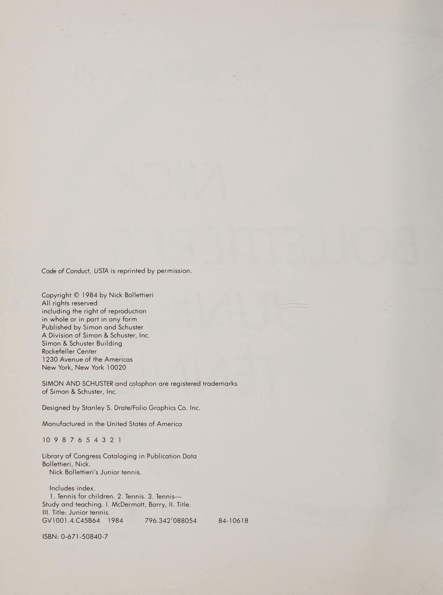
Hình 7.1: Các chuỗi bài tập nhịp độ cao trên sân Bollettieri — Áp lực bóng liên tục ép tay vợt phải tự động hóa bộ chân và phản xạ xử lý bóng.
Figure 7.1: Bollettieri High-Intensity Court Drills — Rapid continuous feeding ingraining instinctive footwork and split-second shot execution.
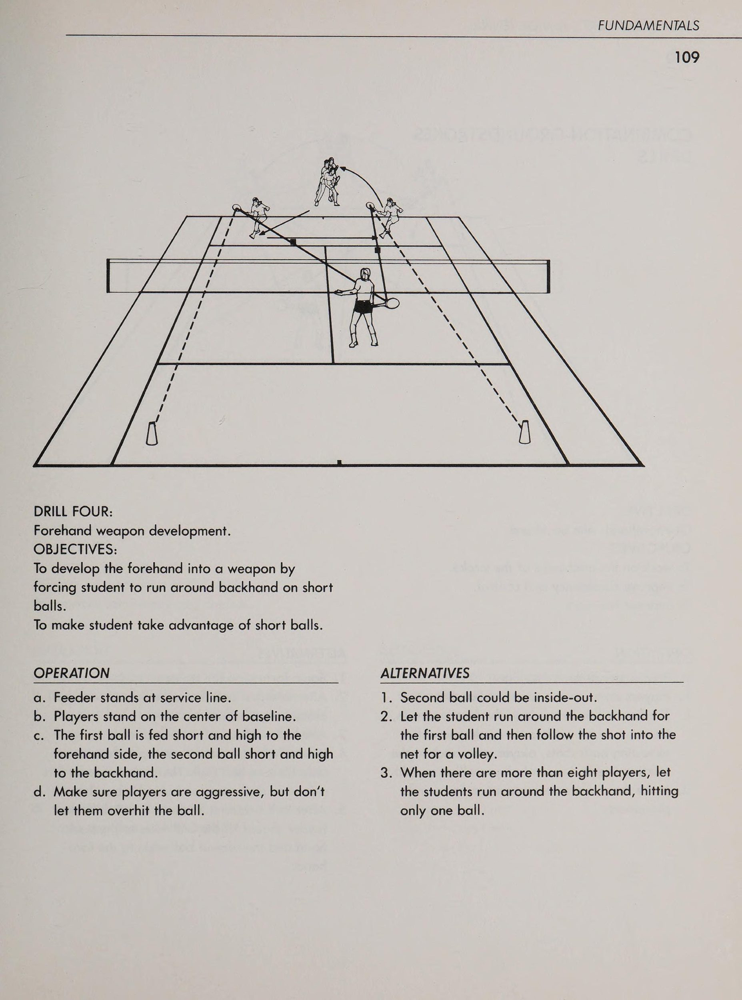
Hình 7.2: Sơ đồ bài tập xây dựng vũ khí thuận tay — Ép bóng sâu vào góc yếu của đối thủ và mở rộng góc tấn công kết liễu.
Figure 7.2: Forehand Weapon Drills — Deep corner penetration patterns setting up short-angle winning putaways.
Phần 3: Lộ Trình Vàng Từng Độ Tuổi: Từ Khởi Đầu Đến Ngưỡng Cửa Chuyên Nghiệp
Chương 8: Giai Đoạn Khởi Đầu (8-10 Tuổi): Xây Dựng Tình Yêu & Phối Hợp Vận Động Chapter 8: Starting Off (Eight to Ten): Developing Joy and Motor Coordination
tôi trong những chuyến đi và nhiều năm giảng dạy ở công viên thành phố, câu lạc bộ đồng quê, khu nghỉ dưỡng và bây giờ là Học viện, câu hỏi tôi được các bậc cha mẹ hỏi thường xuyên nhất là “Khi nào con tôi nên bắt đầu học?” Này, điều đó giống như hỏi độ tuổi nào là tốt nhất để kết hôn vậy. Tôi nói rằng bạn sẽ biết khi nào là thời điểm thích hợp. Bạn sẽ biết khi nào có sự quan tâm. Và dù tốt hay xấu, dù thuận lợi hay khó khăn, con cái bạn sẽ tham gia vào một môn thể thao đòi hỏi tất cả sự chú ý, nỗ lực và suy nghĩ mà một cuộc hôn nhân đòi hỏi.
Những đứa trẻ trong quần vợt ngày càng trẻ hơn. Điều đó không tệ chút nào. Với trình độ chuyên môn cao: phải có sự quan tâm. Chúng ta đừng biến đây thành một cuộc hôn nhân ngắn ngủi. Đừng ép buộc vấn đề. Quần vợt phải vui vẻ ngay từ đầu! Hãy chắc chắn rằng trẻ chơi vì chúng muốn chứ không phải vì bạn mong đợi chúng. Tôi đã nói điều này trước đó và có lẽ bạn đã phát ngán khi nghe nó. Đó chính là người thầy tennis trong tôi. Tôi tiếp tục quay trở lại các nguyên tắc cơ bản. Vậy tôi sẽ nói lại lần nữa. LÀM
VUI VẺ TENNIS. Đó là số của tôi. 1 buổi học tennis cho phụ huynh.
Một trong những học sinh của tôi tại Học viện là Robin Cifaldi, một thanh niên lớn lên ở Hilton Head, S.C. Cô ấy nói với tôi rằng cô ấy đã học trò chơi này theo một cách độc đáo. Thông biển
Plantation có một chương trình khởi đầu dành cho trẻ em mang tên Tiny Tots Tennis. Charlie Ellis, người điều hành chương trình, đã cắt những tấm gỗ dán hình nhiều loài động vật khác nhau, chẳng hạn như gấu trúc, cá sấu Mỹ và cáo. Charlie cho bọn trẻ ăn những quả bóng, một số chỉ mới bốn tuổi, và chúng cố gắng đánh chúng qua những lỗ hở trên hình cắt hình con vật. Đó là niềm vui lớn! Bọn trẻ có rất ít cuộc thi không chính thức với nhau. Đó là trò chơi. Ngay cả việc nhặt bóng cũng trở thành một trò chơi! Họ thử xem họ có thể chất được bao nhiêu quả bóng vào vợt của mình.
Mặc dù các siêu sao như Jimmy Connors, Chris Evert và Tracy Austin đã đánh bóng khi mới 4 tuổi, tôi gợi ý rằng một đứa trẻ nên bắt đầu chơi trong độ tuổi từ sáu đến tám, để có được mức độ tập trung, phối hợp và sức mạnh nhất định.
Trong hàng nghìn học sinh trẻ của tôi trong nhiều năm qua, khả năng phối hợp sớm và cảm giác với bóng đã cho tôi biết rất nhiều điều về tài năng bẩm sinh của một đứa trẻ. Thường xuyên | Tôi bị ấn tượng bởi ký ức ban đầu của các vận động viên luôn thể hiện niềm đam mê với những quả bóng và chơi các trò chơi với chúng. Họ nhớ cha mẹ họ chỉ đơn giản là lăn một quả bóng cho họ. Bước tiếp theo sẽ là bắt nó khi nó nảy lên. Sau đó, họ học cách sử dụng vợt tennis hoặc gậy bóng chày để tiếp xúc với quả bóng. Cha mẹ của họ đã làm cho nó vui vẻ.
Có một câu hỏi khác mà tôi luôn được hỏi: “Các nhà vô địch được sinh ra hay được tạo ra?” Tôi sẽ nói rằng các nhà vô địch được sinh ra với những năng khiếu thể chất nhất định, giống như một thiên tài được sinh ra với những năng khiếu tinh thần nhất định. Các nhà vô địch có những đặc điểm như thời gian đặc biệt—thương hiệu của Aaron Krickstein— hoặc khát khao chiến thắng mãnh liệt của Jimmy Arias. Tuy nhiên, sự kết hợp giữa huấn luyện tốt, làm việc chăm chỉ và cam kết hoàn toàn về thời gian và nỗ lực cũng có thể tạo ra một nhà vô địch.
Có lẽ bạn đã từng nghe một cụm từ thường xuất hiện trong quần vợt khi ai đó cố gắng giải thích lý do tại sao một nhà vô địch cấp dưới không bao giờ tiến bộ ở cấp đại học hoặc chuyên nghiệp: “Họ chơi quá giỏi quá sớm”. Vấn đề là có quá nhiều sự nhấn mạnh
Đặc biệt với em út, Nick nhấn mạnh những nguyên tắc cơ bản.
NHỮNG NĂM TỚI VĨ ĐẠI đặt vào thắng thua khi còn trẻ. Tôi thích xây dựng một nền tảng vững chắc. Đừng lo lắng về thứ hạng lúc đầu.
Quyết định loại trò chơi nào con bạn sẽ chơi sau 10 năm nữa và cố gắng phát triển trò chơi đó. Đưa cho trẻ các công cụ và để trẻ đi làm, nhưng đừng xây lâu đài cát. Cố gắng xây dựng một cái gì đó đáng kể.
Chìa khóa để phát triển một tướng, như tôi đã nói ở những chương đầu, là tạo ra một kế hoạch tổng thể linh hoạt và tuân thủ nó một cách hợp lý. “Linh hoạt” là quan trọng. Chống lại sự thôi thúc bị cuốn vào vấn đề của thời điểm này. Thông thường, cha mẹ nhận thấy con mình gặp khó khăn trong việc nắm vững một cách cầm vợt hoặc phong cách chơi nhất định nên họ bỏ qua và thử cách khác. Chẳng bao lâu họ nhận ra mình đang phải sửa lại trò chơi của con mình, áp dụng
Băng cá nhân thay vì giải quyết vấn đề tổng thể bằng công việc. Hôm nay con họ đánh trái tay bằng hai tay, ngày hôm sau đánh trái tay bằng một tay. Hôm nay anh ấy chơi xoáy lên, ngày hôm sau anh ấy đánh bóng phẳng. Một ngày nào đó Guillermo Vilas, Jimmy Connors tiếp theo. Hãy tìm thứ gì đó thoải mái, gắn bó với nó và xây dựng dựa trên nó.
Mặc dù tôi chưa bao giờ gặp anh ấy, nhưng tôi rất ngưỡng mộ Ben Hogan, nhà vô địch chơi gôn. Người đàn ông này là một trong những người được ngưỡng mộ nhất trong lịch sử trò chơi. Thậm chí ngày nay, những tay vợt golf chuyên nghiệp vẫn gọi ông là “Ông Hogan”. Hogan khi còn trẻ chơi không giỏi lắm. Anh ấy đã giành được phần lớn các danh hiệu của mình sau nhiều năm thi đấu tầm thường. Những gì anh ấy làm là luyện tập, luyện tập và luyện tập. Nhiều năm sau, rất lâu sau khi Hogan nghỉ hưu, John Mahaffey, một thành viên trẻ trong ngành, đã gọi điện cho
“Ông Hogan.” Mahaffey là một người được Hogan bảo hộ: một người Texas đồng hương và là một người chăm chỉ. Qua điện thoại, Mahaffey phàn nàn về việc chuyến lưu diễn không thành công. Hogan dửng dưng lắng nghe. Cuối cùng anh cũng lên tiếng.
“Bạn đang luyện tập à?” "Ồ vâng, thưa ông Hogan. Tôi đã luyện tập hàng ngày." “Luyện tập thêm chút nữa,” Hogan nói rồi cúp máy. Vince Lombardi nổi tiếng vì đã nói: “Chiến thắng không phải là tất cả, đó là điều duy nhất”. Đây là một trong số ít điểm mà Lombardi và tôi một phần công ty. Trong quần vợt, cống hiến 110% là điều duy nhất. Chiến thắng là một cảm giác hồi hộp tột độ, nhưng trong quần vợt, việc chấp nhận thua và rút ra bài học từ đó là điều tất cả chúng ta đều phải đối mặt. Không có nhà vô địch hạng nặng nào bất bại trong quần vợt. Trong mọi giải đấu, số người thua nhiều hơn người thắng.
Ngay từ đầu, cha mẹ phải dạy con cách đối phó với sự cạnh tranh. Một trong những học trò cũ của tôi là Lori Kosten, người khi còn trẻ gần như không thể bị đánh bại trên sân quần vợt. Sau đó mọi thứ đã thay đổi. Những vấn đề tiếp theo của Lori đã được ghi lại trong một bài báo trên Sports Illustrated. Cô ấy nói về việc cô ấy không bao giờ có thể chấp nhận thua cuộc. Cuối cùng nó khiến cô phải từ bỏ trò chơi.
tôi hãy nhớ Lori kể với tôi rằng bọn trẻ ở trường của cô ấy ở quê nhà ở Memphis, Tenn., không bao giờ hiểu cô ấy đang làm gì. Cô ấy sẽ trở lại sau một giải đấu mà cô ấy cảm thấy mình đã thi đấu rất tốt. Có lẽ cô ấy đã đánh bại hạt giống hàng đầu và vào đến bán kết trước khi thua. Cô ấy đã chơi rất tốt. Nhưng khi cô nói với các bạn cùng lớp, tất cả những gì họ có thể thấy là cô đã thua ở trận bán kết. Cuối cùng, niềm vui chiến thắng đã bị nỗi đau thất bại lấn át.
Nếu cha mẹ chú trọng hơn đến kết quả của trận đấu hơn là liệu đứa trẻ đã thể hiện 100% hay tiến bộ hơn so với lần thể hiện trước đó, thì các vấn đề nghiêm trọng có thể phát sinh. Các giải đấu đối với tay vợt quần vợt mới bắt đầu cũng tương đương với việc tham gia một kỳ thi ở trường. Ở trường, học sinh giỏi háo hức chờ thi, học sinh kém lại đầy lo lắng. Tương tự như vậy, một vận động viên quần vợt thành đạt cũng thích thú với việc thi đấu. Những tay vợt tội nghiệp chưa làm bài tập về nhà đang vô cùng sợ hãi. Cha mẹ phải giữ thái độ tích cực trước những mất mát không thể tránh khỏi của con mình. Đừng quá quan trọng. Nếu bạn không làm cho trẻ sợ thua thì cuối cùng trẻ sẽ hình thành được trò chơi chiến thắng. Cạnh tranh là điều tốt nhất trên thế giới. Nó buộc bạn phải đặt ra các mục tiêu và nỗ lực hướng tới chúng, đồng thời nó dạy bạn cách xử lý áp lực và tính tự lực, những bài học sẽ giao bóng bạn tốt mãi mãi.
Một đứa trẻ rất nhạy cảm với thất bại. Tất cả chúng ta đều nhớ lại khuôn mẫu thể thao bị ruồng bỏ, đứa trẻ một mình trong khi những đứa trẻ khác đang chơi game, cậu bé luôn được chọn cuối cùng và mắc kẹt ở sân bên phải trong các trận bóng chày trên sân cát. Khi nào tôi đang đối mặt với một đứa trẻ mới bắt đầu học nhưng không đạt được thành công trong nhóm, tôi ra lệnh dừng tập và kéo học trò sang một bên. Tôi yêu cầu anh ta lấy lại cây vợt của mình và tôi từ từ ném bóng cho anh ta một cách thiếu khéo léo. Sau ba hoặc bốn lần thử, anh ấy bắt đầu liên lạc và chỉ cần thế thôi là anh ấy lại hứng thú. Một chút khích lệ và một cái vỗ nhẹ vào lưng sẽ tạo ra một nụ cười rạng rỡ. Đó là cách chúng tôi biến chanh thành nước chanh.
tôi sử dụng triết lý tương tự khi dạy giao bóng cho trẻ nhỏ. Thay vì yêu cầu họ bắt đầu ở vạch cuối sân và cố gắng đưa bóng qua lưới, tôi đưa họ đến vạch giao bóng, yêu cầu họ giữ chuyển động nhịp nhàng và
NHỮNG NĂM TỚI VĨ ĐẠI
Cú thuận tay Continental của Brian Gottfried.
liên tục và cho phép họ đánh bóng qua lưới từ đó.
tôi xây dựng trên sự tự tin và thành công. Trong những năm qua tôi đã chơi trò chơi vô số lần với Carling Bassett. Carling luôn làm việc chăm chỉ và vì thế tôi đã cố gắng giới thiệu những cách giúp việc tập luyện của chúng tôi trở nên thú vị hơn mà vẫn hiệu quả. Tôi sẽ nói với Carling, “Tôi cá là anh không thể đánh trúng 30 quả bóng mà không trượt.” Điều này sẽ khơi dậy bản năng cạnh tranh của cô ấy. Cô ấy luôn quyết tâm chứng minh tôi sai. Tôi sẽ tiếp tục tăng hạn ngạch, và mỗi lần đạt được nó, cô ấy sẽ mỉm cười và nói, “Đánh bại anh lần nữa đi, Nick.”
Bây giờ nó có vẻ buồn cười, nhưng tôi từng là thành viên mang quân bài của Trường phái Cũ, cũng cứng nhắc và cứng nhắc trong suy nghĩ như bất kỳ ai. Con đường của tôi là con đường đúng đắn, con đường duy nhất.
tôi phải học - và giáo viên của tôi hóa ra, nghe có vẻ khó tin, là một người nhập cư Cuba đã học quần vợt từ một cuốn sách. Tony Arias đã dạy con trai mình, Jimmy, chơi đàn và dạy cậu ấy ở Buffalo, N.Y., gần như không phải là thủ đô quần vợt của thế giới. Ngay từ đầu, Tony đã nhất quyết đòi hỏi một cú vuốt ve dài, mượt mà và thư thái từ con trai mình. Triết lý của ông là “đánh bóng” và không lo lắng quá nhiều về độ chính xác. Ý tưởng đơn giản này đã định hình nên thành công của Jimmy sau này.
Khi nào tôi bắt đầu giảng dạy vào cuối những năm 50, tôi đã làm như vậy theo Cơ sở. Trong nhiều thập kỷ, quần vợt đã được dạy theo phong cách cổ điển, nhấn mạnh vào những cú đánh dài thanh thoát. Tôi có thể nhớ lại cú sốc khi nghe tin một quý ông ở Ft. Lauderdale thực sự ngu ngốc đến mức dạy con gái mình đánh trái tay bằng hai tay—Jimmy Evert và con gái ông,
Trước đó, trước khi Tony và Jimmy Arias bước vào cuộc đời tôi, tôi là chuyên gia thành phố của Sở Giải trí Bãi biển Bắc Miami. Một cậu bé khoảng 10 tuổi lọt vào mắt tôi. Anh ấy không bao giờ nói một lời, chạy tới từng quả bóng và luôn là người đến đầu tiên và là người về cuối cùng. Ừmmm.
Có thể có một số nguyên liệu thô ở đây, tôi nghĩ.
Tên anh ấy là Brian Gottfried, và chúng tôi đã trở thành một đội. Kể từ tôi vẫn còn khá mới mẻ với quần vợt, tôi ít chú ý đến cách cầm nắm của anh ta. Brian đánh thuận tay trong khi cầm vợt như thể anh ấy đang bắt tay với nó. Ở cú trái tay, anh ấy di chuyển sang trái một chút. Tuy nhiên, anh ấy không có vấn đề gì thực sự nên
Ngay từ đầu, Brian đã dành nhiều thời gian nhất có thể để thực hiện cú vô lê. Cách cầm vợt mà anh ấy sử dụng rất giống với cách cầm vợt anh ấy sử dụng cho cú thuận tay, cho các cú giao bóng và cú đánh đầu— kiểu Continental—và đó là cách cầm vợt tôi bị thúc đẩy bởi Brian khi anh ấy tiến lên bậc thang, đạt đến vị trí không. 4 trên thế giới. [ Mặc dù tôi vẫn tin rằng cách cầm vợt Continental là cách cầm vợt tốt cho cú bắt lưới (Volley), tôi cảm thấy rằng nó rất hạn chế ở cú thuận tay. Nếu tôi lúc đó đã biết cái gì tôi biết ngay, tôi lẽ ra sẽ thay đổi cách cầm nắm của Brian Gottfried thành thứ gì đó có thể cho phép anh ta phát triển vũ khí theo phong cách của Jimmy Arias nhiều hơn. Jimmy có cú thuận tay kiểu Bán Tây (xem trang 149); tay của anh ấy quay sang phải để khi đánh bóng, anh ấy vuốt vào lưng nó, tạo ra xoáy lên. Thật khó để làm điều này với Continental. Khi một tay vợt trẻ lớn lên và nhịp độ cũng như sức mạnh trong các trận đấu của đối thủ tăng lên, anh ta cần có khả năng kết hợp lực lượng với lực lượng. Nó đã trở thành một vấn đề đối với Brian Gottfried, một vấn đề mà anh ấy đã vượt qua bằng khả năng vô lê xuất sắc và thể lực tuyệt vời. Tương tự như vậy, Jimmy Arias có thể thổi bay bạn khỏi sân bằng cú thuận tay của anh ấy. Tôi có thể đang khiến bản thân gặp khó khăn, nhưng tôi tin rằng quyết tâm của Brian, nếu kết hợp với vũ khí thuận tay tương tự như của Jimmy, sẽ mang lại cho Brian một số chức vô địch thế giới.
Cú đánh của Jimmy, do cha anh dạy, đã thuyết phục tôi rằng những ngày xưa “cánh tay thẳng, không tăng tốc cổ tay, đầu vợt phía trên cổ tay, chỉ theo hướng bạn đang đánh” đã qua. Không có một phong cách chơi nào là đúng. Ngày nay, khi làm việc với những người trẻ mới học trò chơi, tôi nói rất ít về cách cầm vợt, động tác bằng chân và những thứ tương tự. Mục tiêu của tôi: tổng quát hơn:
2. Tạo hứng thú cho học sinh trong giờ học.
3. Đặt ra rất ít mục tiêu ban đầu ngoài việc cố gắng hết sức. 4. Thực hiện một vài điều cơ bản đơn giản nhưng hãy để họ phát triển phong cách riêng của mình. 5. Nói chuyện với họ về tinh thần thể thao. 6. Đảm bảo rằng họ rời sân vui vẻ và hào hứng. Hãy ghi nhớ những ý tưởng này, tôi tiến hành các trò chơi đơn giản như ném bóng và chơi bắt bóng, lúc đầu không dùng vợt. Tôi đừng lo lắng về việc tạo ra hành trình, độ bám, v.v. Tôi không muốn lấp đầy tâm trí học sinh mới của tôi với quá nhiều thông tin. Một cách tiếp cận đơn giản dành cho người mới bắt đầu như sau:
NHỮNG NĂM TỚI VĨ ĐẠI
Tất cả các bạn đã làm rất tốt khi chơi trò ném bóng của chúng tôi, nhưng bây giờ [theo cách nói đùa] tôi sẽ bắt được bạn. |'Tôi cá là bạn không thể làm được gì | LÀM. Tôi đang đứng với cây vợt của mình hướng ra phía trước và | tôi sẽ xem bóng mọi lúc. Xem cách tôi quan sát quả bóng, theo dõi nó khi nó chạm vào dây của tôi.
Đây là một phương pháp rất đơn giản nhưng hiệu quả để giới thiệu cho người mới bắt đầu về tư thế sẵn sàng và tầm quan trọng của việc xem bóng. Sau một chút, tôi cho trẻ bắt chước tôi. Tôi tung từng quả bóng nhẹ nhàng cho họ. Không thể nào làm được tôi chưa đi sâu vào chi tiết cụ thể về các động tác vung vợt sau, các động tác tiếp theo, v.v. Mục tiêu của tôi là yêu cầu mỗi học sinh tiếp xúc với bóng. Nó đi đâu chỉ là thứ yếu. Tôi đảm bảo tôi khen ngợi mọi người. Tôi đánh giá sự phối hợp tay mắt của họ và ghi nhớ trong đầu xem liệu nó có cần hoạt động hay không. Trên hết, | Tôi không quan tâm đến việc học sinh bị đánh theo bất kỳ cách cụ thể nào.
Sau khi họ đã phát triển được trình độ thành thạo nhất định và có thể tiếp xúc bóng thường xuyên, tôi cung cấp cho họ những nguyên tắc cơ bản. Tôi chỉ cho họ vị trí sẵn sàng, cách cầm vợt thuận tay, trái tay một tay và trái tay hai tay, động tác giao bóng và đánh bóng qua đầu; tôi thể hiện cú vô lê và cú sút.
Cách tiếp cận đột ngột, tất cả cùng một lúc này rất quan trọng, bởi vì tôi muốn học sinh xem quần vợt như một trận đấu tổng thể ngay từ đầu, không chỉ đơn giản là một cú thuận tay và một cú trái tay từ đường cuối sân. Tôi chắc chắn là muốn họ phát triển những cú chạm đất xuất sắc—các kỹ thuật tương tự như của Jimmy Arias hoặc Carling
Bassett—nhưng đồng thời tôi muốn họ có ý thức chơi trên lưới và giao bóng.
Tony Arias và Tiến sĩ Herb Krickstein đã lần lượt thực hiện những công việc đáng chú ý với cú thuận tay của Jimmy Arias và những cú chạm đất của Aaron Krickstein. Mặc dù vậy, tôi thực tế vẫn phải kéo cả hai người vào lưới. Cả hai đều đã cải thiện những cú vô lê của mình, điều này sẽ còn tốt hơn nữa, nhưng những thiếu sót này có thể tránh được nếu công việc ban đầu của họ nhấn mạnh tầm quan trọng của việc kết thúc trận đấu trên lưới.
Sau khi trẻ bắt đầu làm quen với những nguyên tắc cơ bản của trò chơi, trong một thời gian ngắn, trẻ sẽ bắt đầu phát triển phong cách chơi của riêng mình. Đây là lúc mà huấn luyện viên nên chú trọng hơn vào cách cầm vợt, vung vợt sau và theo sau cũng như cân bằng trọng lượng và độ cao mà bóng qua lưới.
Quyết định quan trọng đầu tiên của bạn khi huấn luyện người mới bắt đầu sẽ liên quan đến trái tay bằng hai tay. Bạn có muốn nó hay không? Tôi sẽ nói thế này: Một tay vợt hai tay đã học từ đầu có thể thích nghi sau này, đặc biệt nếu nó được dạy bằng cách nhả vợt bằng một tay—tức là, nếu tay vợt thả vợt sau khi tiếp xúc với bóng (xem trang 90-91).
Đây chỉ là quyết định đầu tiên trong vô số quyết định phải được đưa ra đối với trận đấu quần vợt của trẻ em. Nên tuân theo một trong hai cách tiếp cận chung. Quyết định những gì bạn muốn
1. Các cú đánh thận trọng—loại thúc đẩy tính nhất quán, do đó cho phép bạn vượt qua đối thủ.
(Đây là trò chơi được những tay vợt cơ bản ưa thích.)
2. Những cú đánh mạnh—swing tự do, với rất nhiều cú đâm vào bóng. Những điều này tạo ra ít tính nhất quán hơn, nhiều lỗi hơn - và chắc chắn là sẽ có nhiều thất bại hơn trong thời gian đầu.
tôi từng đọc một cuốn sách của Arnold Palmer, trong đó ông ủng hộ việc dạy trẻ em chơi gôn bằng cách yêu cầu chúng vung mạnh mỗi lần đánh gôn. Lý thuyết của ông là sau này bạn có thể học cách vung vợt dễ dàng, nhưng học cách đánh bóng xa thì khó hơn.
Trong quần vợt, bạn ít nhiều phải gắn bó với một phong cách nếu muốn thành công. Nói chung, tôi ủng hộ Trò chơi quyền lực hơn một
Phát triển sự phối hợp tay mắt, tình cờ.
THE NĂM ĐẾN TỚI VĨ ĐẠI phấn đấu đạt được sự nhất quán tuyệt đối. Tôi muốn thấy một tay vợt tấn công ngay từ cơ hội đầu tiên. Phần lớn các cuộc tập trận hàng ngày của chúng tôi nhấn mạnh đến việc tìm kiếm người chiến thắng và phá lưới. Hiếm khi học trò của tôi nghe thấy tôi la hét về một cú sút đi quá vạch cuối sân mà lại để bóng bay vào lưới và tôi phát điên. “Làm sao đối thủ của bạn có thể mắc lỗi khi bạn đánh bóng vào lưới?” Tôi hét lên. "Đánh bóng qua lưới. Vì vậy, nó dài - ít nhất bạn sẽ cho anh ta cơ hội để vung nó và mắc lỗi."
Trong Trò chơi quyền lực, điều quan trọng là phải phát triển vũ khí lớn ngay từ đầu. Nếu bạn nhìn vào những tay vợt hàng đầu xuất hiện ngày hôm nay, bạn sẽ thấy mỗi người đều có một vũ khí lớn. Ivan
Lendl bẻ thuận tay; Cú giao bóng của John McEnroe thật tuyệt vời. Nhưng đồng thời, tôi một lần nữa phải nhấn mạnh đến sự phát triển của những phần yếu hơn của trò chơi. Hãy hỏi một đứa trẻ xem cú đánh yêu thích của nó là gì và nó sẽ cho bạn biết cú đánh mà nó thành thạo nhất. Nó giống như đọc một chuyên mục chiêm tinh. Bạn chỉ nhận được những đặc điểm tích cực chứ không phải những đặc điểm tiêu cực. Hãy hỏi một đứa trẻ xem cú đánh mà nó ghét nhất là gì và bạn sẽ khám phá ra cú đánh nào cần luyện tập.
Khi trẻ phát triển, một số kiểu vuốt ve nhất định sẽ xuất hiện. Điều quan trọng là cố gắng tạo ra sự êm ái khi đi qua quả bóng. Bạn cũng phải cân nhắc xem liệu bạn có muốn một cú giật thuận tay hay không – một cú thuận tay trong đó đầu vợt được đưa lên cao, sau đó thả xuống và đưa lên và xuyên qua quả bóng – hay một cú thuận tay thẳng về phía sau trong đó vợt được đưa thẳng về phía sau, đưa vợt vào bên dưới quả bóng và sau đó đi thẳng qua quả bóng (xem trang 80-83). Tôi có xu hướng nghiêng về phía backswing theo vòng, bởi vì nó bao gồm một chuyển động liên tục và do đó tạo ra nhiều lực hơn.
Mặc dù những tay vợt như Stan Smith và Brian Gottfried— những nhà tạo mẫu cổ điển— gặp may mắn với một cú đánh theo sau được rút ngắn, xu hướng của những tay vợt mới hơn là dài hơn và lỏng hơn với đoạn cú đánh này. Để vợt đi tiếp và vòng quanh sau khi tiếp xúc thực sự hỗ trợ cho việc phát triển vũ khí. Jimmy Arias, lvan Lendl và Bjorn
Borg là ba người đề xuất Trò chơi quyền lực, những người sử dụng kiểu đánh lỏng lẻo này trong các cú đánh thuận tay.
Bây giờ chúng ta hãy xem lại một số nét mà người mới bắt đầu trẻ tuổi đặc biệt quan tâm.
Nếu trẻ bắt đầu bằng cú đánh trái tay bằng một tay, hãy đảm bảo rằng tay không đánh được sử dụng để giúp thay đổi cách cầm, di chuyển bàn tay sang phía trái tay, đồng thời tay không đánh được sử dụng để hướng vợt lùi. Cánh tay có thể khá gần với cơ thể trong động tác backswing. Ở phần phía trước của cú vung, học sinh nên đưa đầu vợt xuống dưới quả bóng và đánh xuyên qua nó và ra ngoài. Ý tưởng là phải vững chắc nhưng vẫn thoải mái.
Với trái tay bằng hai tay, có hai cách cầm vợt cơ bản. Người đầu tiên đặt cả hai tay vào nhau theo kiểu thuận tay phương Đông. Điều này mang lại sức mạnh như nhau từ cả hai tay và cho phép học viên hướng dẫn bóng bằng cú đánh. Cú trái tay này đưa cánh tay và khuỷu tay ra khỏi cơ thể và duỗi chúng ra phía trước khi thực hiện cú đánh theo hướng bạn muốn bóng đi. Tracy Austin và Chris Evert là bậc thầy về cú đánh này. Tay cầm còn lại có tay dưới theo kiểu cầm kiểu Lục địa trong khi tay kia vẫn ở thuận tay kiểu Đông. Với cách cầm vợt này, bạn sẽ linh hoạt hơn vì bạn có thể thực hiện những quả bóng rộng, những cú đánh rơi, những cú cắt thấp và những cú vô lê.
Các cú đánh trái tay ở trên có một số tùy chọn về cách thực hiện tiếp theo. Chúng bao gồm:
1. Cánh tay duỗi thẳng về phía mục tiêu.
2. Cánh tay duỗi thẳng về phía mục tiêu với khuỷu tay uốn cong hoàn toàn và sau đó vòng qua vai với cổ tay chắc chắn.
3. Cuối cùng, gia tốc cực lớn của cổ tay khi tiếp xúc chẳng hạn như Borg và Andrea Temasvari đã sử dụng, dẫn đến xoáy lên quá mức.
Cách cầm vợt cho trái tay bằng hai tay.
Khởi đầu tốt đẹp NHỮNG NĂM TỚI VĨ ĐẠI Một kiểu đánh trái tay cơ bản khác đã được đề cập đến trong Chương 6 là cú đánh trái tay của tương lai: kiểu đánh hai tay với cú đánh tiếp theo bằng một tay. Ngay sau khi tiếp xúc, tay vợt thả tay trên xuống, cho phép theo dõi dễ dàng hơn. Đây là đòn đánh mà Andrea Jaeger sử dụng rất tốt. Nó giúp tay vợt tiếp cận nhiều hơn, hiệu quả hơn khi thực hiện topspin, hoạt động khá tốt với các cú vô lê và cú đánh thả của bạn, đồng thời thích nghi tốt hơn với các cú đánh cắt và chip.
Khi giao bóng, nhiều người mới bắt đầu không đủ khỏe để sử dụng cách cầm vợt trái tay thích hợp. Họ sẽ thấy dễ dàng hơn khi sử dụng cách cầm vợt thuận tay ngay từ đầu, và sau đó, sau khi đã thành thạo chuyển động giao bóng, họ sẽ chuyển sang cách cầm vợt trái tay, từ đó cho phép cú giao bóng xoáy nhiều hơn. Ngay từ đầu, cần tập trung nhiều nhất vào việc phát triển nhịp điệu và thời gian với bóng và vợt. Từ sự mượt mà đến sức mạnh. Một mẹo có vẻ hữu ích trong việc phát triển cú giao bóng là bắt đầu chuyển động với vợt ở phía sau đầu, cao bằng khuỷu tay. Điều này cho phép học viên cảm nhận được vị trí mà họ đang cố gắng đạt được ngay trước khi bắt đầu tiến về phía trước.
Khi cú giao bóng phát triển, hãy đảm bảo rằng cú ném của học sinh tiếp tục hướng ra phía trước. Hãy thực hiện động tác bắt tay và tăng tốc vợt để tạo ra sức mạnh. Đồng thời nhấn mạnh quá trình theo dõi dài và mượt mà.
Cú vô lê là cú đánh đơn giản nhất trong quần vợt, tuy nhiên nó lại là một trong những cú đánh khó thành thạo hơn. Hãy để học viên phát triển cú vô lê của mình bằng cách cầm vợt của chính mình ngay từ đầu, nhấn mạnh vào động tác xoay vai cho phép anh ta đón bóng ở phía trước bằng một cú xoay ngắn và chắc chắn—một “chuyển động đấm”, như hầu hết mọi người vẫn gọi. Khi tay vợt có được sức mạnh, họ nên bắt đầu nhận ra sự cần thiết của việc cầm bóng một lần, sử dụng Continental ở cả thuận tay và trái tay. Rất có thể, những tay vợt trái tay bằng hai tay cũng sẽ phát hiện ra rằng những cú vô lê của họ sẽ linh hoạt hơn nếu họ có thể thực hiện chúng chỉ bằng một tay. Tuy nhiên, đã có rất nhiều người tung cú vô lê bằng hai tay thành công (ví dụ như Jimmy Connors, Frew McMillan).
Các nguyên tắc cơ bản cuối cùng là cú đánh trên cao và cú đánh rơi, một loại nước sốt salad trong trò chơi của một người. Chúng không thể giống nhau hơn—một người mạnh mẽ, người kia lừa đảo—nhưng cả hai đều có thể liên tục là người chiến thắng hoàn toàn nếu chơi đúng cách.
tôi thấy hữu ích khi đặt các học sinh nhỏ tuổi của tôi lên lưới khi chúng đang học nội dung cần thiết. Loại bỏ backswing.
Yêu cầu họ đưa vợt ra sau đầu, khuỷu tay hướng lên. Ngẩng đầu lên, quan sát quả bóng bằng cách theo dõi nó bằng tay trái dang rộng và lao ra với tư thế duỗi thẳng hoàn toàn và theo dõi tốt. Hãy chắc chắn để loại bỏ các chuyển động cơ thể dư thừa.
Có một bài tập đơn giản tôi đã tìm thấy giá trị vô giá trong việc dạy kỹ năng ném bóng cho các tay vợt trẻ. Tôi gọi nó là “quần vợt mini”, một trò chơi được chơi hoàn toàn trong hộp dịch vụ. Để học sinh có thể giữ bóng trong cuộc, các em phải phát triển cả khả năng tập trung và chạm bóng tốt. “Quần vợt mini” là một cách thú vị để rèn luyện khả năng kiểm soát hơn là sức mạnh.
Bất cứ khi nào bạn làm việc với người mới bắt đầu về các nguyên tắc cơ bản, bạn sẽ cảm thấy thất vọng nhất định về những sai lầm của học sinh. Tôi duy trì rằng bạn nên tập trung vào một việc tại một thời điểm. Giữ bình luận ngắn gọn và tập trung vào một vấn đề. Khi bạn đã khắc phục được lỗi đó, hãy chuyển sang lỗi khác. Đừng cho học sinh nhiều hơn những gì chúng có thể nghĩ tới.
Chắc chắn vấn đề lớn nhất bạn sẽ gặp phải là làm thế nào để xử lý thất bại. Tôi khuyến nghị mạnh mẽ rằng huấn luyện viên, phụ huynh và học sinh nên giữ liên lạc cởi mở. Hãy xem xét cam kết với quần vợt một cách nghiêm túc. Đánh giá cam kết ít nhất mỗi năm và lập kế hoạch cho tương lai. Hãy nhớ rằng, bạn chỉ có thể tiến xa nếu bạn sẵn sàng đi và cuộc hành trình sẽ dễ dàng hơn rất nhiều nếu bạn luôn nhớ rằng quần vợt cuối cùng là một trò chơi được chơi vì tình yêu chứ không phải vì tiền.
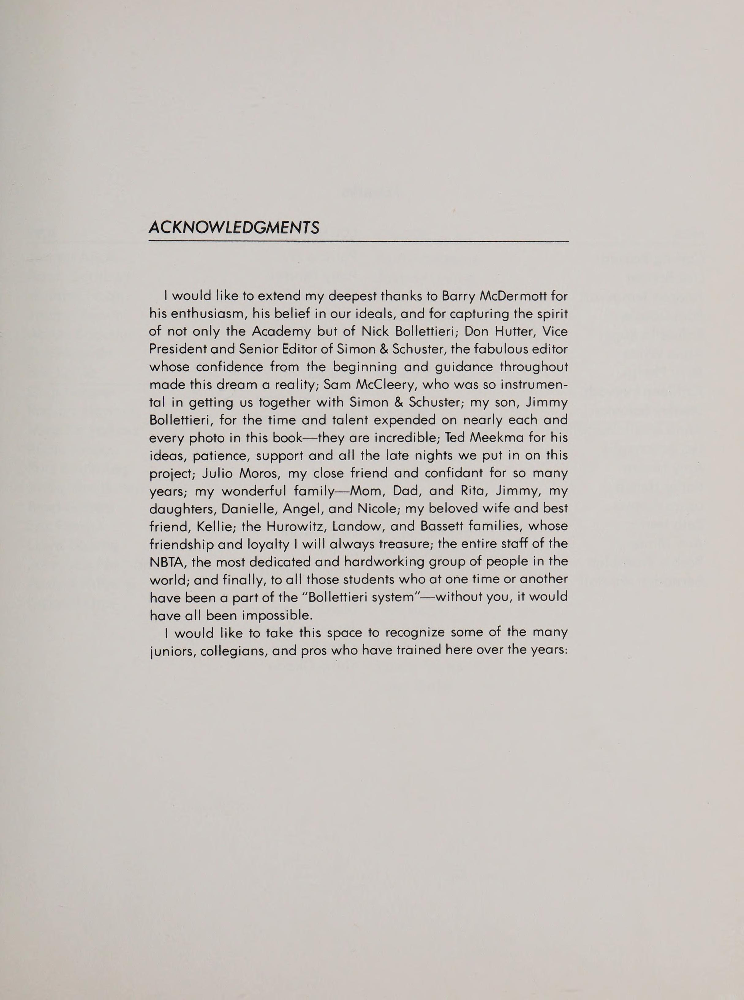
Hình 8: Lớp tài năng nhí 8-10 tuổi — Khơi gợi tình yêu vận động, tinh thần thể thao cao thượng và sự tự tin trên sân đấu.
Figure 8: Junior Development (Ages 8-10) — Cultivating athletic coordination, joyful participation, and fearless competitive confidence.
Chương 9: Giai Đoạn Học Hỏi (10-12 Tuổi): Định Hình Lối Chơi & Cạnh Tranh Nhóm Chapter 9: The Learning Phase (Ten to Twelve): Style Formulation and Peer Pressure
(Mười đến Mười hai) } Một tay vợt và phụ huynh tiến bộ trong những năm đầu chơi quần vợt ở lứa tuổi thiếu niên, họ sẽ khám phá ra rằng hầu hết mọi ngóc ngách đều có điều gì đó mới mẻ. Ví dụ, bạn đối phó với sự đố kỵ hay ghen tị như thế nào? Trong quần vợt trẻ, những cảm xúc này phổ biến như mặt trời lúc bình minh. Hệ thống xếp hạng của môn thể thao này quá tổng thể, tuyệt đối đến mức gần như tự nhiên trẻ em sẽ tìm thấy một số hình thức thù địch từ phía dưới khi chúng ở gần vị trí dẫn đầu hoặc tự cảm nhận được điều đó nếu chúng ở gần vị trí cuối bảng. Bạn tôi, Louis Marx, nói với tôi rằng điều tương tự cũng xảy ra trong công việc kinh doanh dầu lửa của anh ấy. “| nghĩ rằng tôi được các đối thủ cạnh tranh ưa thích,” Louis đã nói với tôi. "Nhưng đồng thời, tôi cũng nhận ra rằng có lẽ họ sẽ vui mừng đôi chút khi một trong những cái giếng của tôi trở nên trống rỗng. Họ nghĩ 'Anh ta tốt hơn tôi'."
Đây là cơ hội để trẻ em có được cái nhìn sâu sắc hơn về bản chất con người sẽ ở lại với chúng mãi mãi. Khốn khổ yêu công ty. Những tay vợt trẻ không nên ngạc nhiên khi nhận thấy rằng một số bạn bè của họ dường như cảm thấy vui vẻ đôi chút trước những thất bại của họ. Đây là một trò chơi mà sự chăm chỉ sẽ tạo nên thành công. Một phần công việc của cha mẹ là cho con cái thấy rằng những người không làm việc chăm chỉ sẽ dễ ghen tị với những người làm việc chăm chỉ. : Các tay vợt ở độ tuổi từ 10 đến 12, cùng với việc thực hiện các cú chạm đất, cũng phải xem xét một số khía cạnh khác của hành vi trên sân. Thế còn gian lận hay tinh thần thể thao thì sao?
Gian lận là một điều bình thường trong quần vợt trẻ. Tay vợt phần lớn gọi đường dây của riêng họ và có xu hướng làm mờ một chút ở những đường gần. Lời khuyên của tôi dành cho học trò của mình là:
Đừng làm vậy. Và nếu điều đó xảy ra với bạn, đừng để nó ảnh hưởng tiêu cực đến lối chơi của bạn. Nếu bạn lừa dối thì cuối cùng bạn chỉ đang lừa dối chính mình mà thôi. Một vài năm trước tôi đang ở một giải đấu chuyên nghiệp, xem trận đấu tập giữa hai tay vợt. Một người là ngôi sao trẻ, tay vợt mà hầu hết mọi người đều đồng ý là đang hướng tới đỉnh cao. Người còn lại là một người lớn hơn vài tuổi, một người đã đạt đến trình độ trên mức tầm thường trong cấp độ chuyên nghiệp, một anh chàng sẽ không tiến xa hơn nữa.
Tay vợt chuyên nghiệp trẻ hơn đang chơi ở phía gần tôi nhất. Tôi ở ngay phía sau anh ta, cách không quá năm feet. Đối thủ của anh ta tung ra một cú đánh tuyệt vời, và tay vợt chuyên nghiệp trẻ tuổi di chuyển để thực hiện cú đánh đó, nhưng nó đã bị anh ta chỉ trong nháy mắt. “Ra ngoài,” anh gọi. Rõ ràng là bóng đã vào trong. Sân là mặt sân đất nện, mới được bảo dưỡng, và quả bóng đã để lại một vết rạch rõ ràng bên trong đường cuối sân. Tôi có thể nhìn thấy nó từ đâu tôi đã đứng. Các chuyên gia trẻ không thể bỏ lỡ nó. Vậy ra đây là một kẻ đã gian lận ngay cả trong luyện tập! Đối với tôi điều đó thể hiện sự thiếu cá tính, không có khả năng chấp nhận thực tế của một tình huống. Không có gì ngạc nhiên khi anh chàng đó không bao giờ lọt vào top. Anh ta có tài năng nhưng lại không sẵn lòng thực hiện cam kết. Tôi dự đoán rằng trong vòng hai năm nữa anh ấy sẽ nghỉ chơi quần vợt.
Cũng như tôi liên tục nói với các tay vợt trẻ của tôi rằng tốt hơn hết bạn nên gọi những quả bóng gần là tốt. Bạn đang xây dựng hướng tới tương lai. Đừng lo lắng về các cuộc gọi đường dây.
Bạn sẽ làm gì khi rõ ràng đối thủ đang lừa dối bạn trong một giải đấu? Nguyên tắc đầu tiên và quan trọng nhất là không để nó ảnh hưởng đến việc chơi của bạn. Giữ sự tập trung của bạn. Nếu hành vi gian lận vẫn tiếp tục, có một giải pháp thay thế đơn giản. Đi đến lưới và ra hiệu cho đối thủ tham gia cùng bạn. Sau đó, bạn nói với kẻ gian lận, “Anh cũng biết rằng quả bóng cuối cùng rất tốt.
Bạn đã gọi nó ra. Bạn đã lôi cuốn tôi trong suốt trận đấu. Nếu bạn làm điều đó một lần nữa, ngay ở quả bóng tiếp theo mà bạn đánh, bất kể nó tiếp đất ở đâu, tôi sẽ gọi nó ra. Bây giờ chúng ta sẽ chơi quần vợt hay không?”
Tinh thần thể thao là một phẩm chất cần phát triển khi còn trẻ. Nó không chỉ giúp con bạn trở thành một người dễ chịu hơn khi ở bên cạnh mà còn giúp ích cho môn quần vợt của con bạn trong tương lai. Xu hướng hiện nay, như tôi hãy xem nó, là để loại bỏ những hành vi thô lỗ mà rất nhiều ngôi sao đã mắc phải trong khoảng 5 năm qua. Có một nỗ lực phối hợp nhằm loại bỏ các hành vi bộc phát, lạm dụng trọng tài biên, ném vợt và tất cả các hành vi nóng nảy và trẻ con hiện có.
NHỮNG NĂM TỚI VĨ ĐẠI thường che khuất một số môn quần vợt xuất sắc trong những năm gần đây. Các quan chức quần vợt chuyên nghiệp đã đưa ra một loạt hình phạt cả trong và ngoài sân đấu, tương ứng với Bộ quy tắc ứng xử chính thức.
(xem trang 163) cho phép trọng tài giải đấu có quyền hạn lớn trong việc phạt tiền hoặc thậm chí phạt những tay vợt không tuân thủ các tiêu chuẩn của nó. Tôi hãy thấy xu hướng này tiếp tục diễn ra với các hình phạt ngày càng trở nên nghiêm khắc hơn. Những tay vợt có thói quen cư xử nhẫn tâm trong các giải đấu cấp cơ sở đều rất dễ bị thua trong các giải đấu cấp trường sau này, trong các giải đấu ở trường đại học hoặc chuyên nghiệp, để rồi nhận ra mình thua trận vì điều đó. Và các bậc cha mẹ đừng nghĩ rằng việc kìm nén cảm xúc của con bạn sẽ ảnh hưởng tiêu cực đến môn quần vợt của chúng. Trên thực tế, ý muốn hoàn toàn ngược lại! xảy ra. Giảm bớt những cơn bộc phát chỉ có thể giúp tay vợt tập trung hơn. Như bằng chứng,
tôi đề nghị Bjorn Borg, người đã 5 lần vô địch Wimbledon liên tiếp. Borg hiếm khi thể hiện bất kỳ cảm xúc nào ngoài nụ cười nhẹ khi chơi. Anh ấy đã học được thái độ này khi còn là một cậu bé ở Thụy Điển - đã học được điều đó một cách đau đớn khi liên đoàn quần vợt của anh ấy vì tính nóng nảy đã đình chỉ anh ấy tham gia các giải đấu. Borg học cách tỏ ra ngầu đồng thời học cách trở nên vĩ đại.
Chúng ta đã nói một chút về sự cạnh tranh ở chương trước. Sự cạnh tranh có thể là liều thuốc duy trì sự hứng thú của bạn khi bạn tiến bộ trong môn quần vợt trẻ, đặc biệt là ở độ tuổi này, khi bạn tham gia các giải đấu cấp thành phố và khu vực mà chúng tôi sẽ mô tả trong phần tiếp theo. Lisa Bonder, hiện đang gõ cửa đến với sự vĩ đại trong hàng ngũ nữ, nhận thấy rằng các trận đấu trong giải đấu là niềm vui nhất đối với cô khi cô bắt đầu chơi trò chơi. Lisa nói: "Chúng tôi đã có một chương trình dành cho cấp dưới rất hay và thỉnh thoảng chúng tôi tụ tập thành một nhóm và đi xuống Chicago để chơi các trận đấu đồng đội. Chúng tôi đã có khoảng thời gian tuyệt vời."
Điều rất quan trọng là trẻ em tiếp cận các giải đấu với thái độ tích cực. Sự phấn khích và sợ hãi là những cảm xúc tương tự nhau. Tôi nói với các học sinh nhỏ tuổi của tôi đừng nhầm lẫn cái này với cái kia.
Sự phấn khích là một cảm xúc tích cực, một cảm xúc sẽ giúp bạn đạt được những cấp độ chơi mới. Sự sợ hãi có thể làm tê liệt. Trẻ em nên học cách khơi dậy sự phấn khích của mình thông qua sự tập trung, chơi từng điểm một.
Phụ huynh cũng cần theo dõi hành vi của mình tại các giải đấu. Đương nhiên, bạn sẽ muốn theo dõi con mình thi đấu, nhưng hãy cố gắng bằng mọi giá để kín đáo nhất có thể. Những màn thể hiện tinh thần đảng phái một cách hoang dã có thể khiến con bạn xấu hổ cũng như cuối cùng chúng sẽ khiến bạn xấu hổ. Chắc chắn con bạn sẽ nhận thức sâu sắc về sự hiện diện của bạn và cách bạn cư xử, bất kể bạn có cố gắng tỏ ra khiêm tốn đến mức nào. Trong một cuốn sách tôi đã viết với Julie Anthony, Một sự kết hợp chiến thắng, Julie nhớ lại việc mẹ cô từng tham dự một trong những trận đấu của bà. Như thường lệ, bà Anthony đi tất lụa. Julie nói trong cuốn sách của chúng tôi: “Mỗi lần bắn trượt hoặc suýt bắn trượt, mẹ tôi sẽ bắt chéo hoặc không bắt chéo chân. "Cô ấy không để ý, nhưng đối với tôi to hơn cả một quả bom, là tiếng những chiếc tất của cô ấy cọ vào nhau khi cô ấy bắt chéo chân. Vì vậy, ngay cả trước khi cuộc biểu tình kết thúc, tôi đã biết qua âm thanh của những chiếc tất của cô ấy mà cô ấy nghĩ rằng những cú đánh sẽ không đạt được. Không hề nhận ra điều đó, mẹ tôi đã tạo ra một sự xao lãng khá lớn cho tôi. Tôi đã thắng ngày hôm đó, nhưng tôi yêu cầu cô ấy không mang tất đến bất kỳ trận đấu nào của tôi nữa.”
Julie Anthony, với sự hỗ trợ của mẹ cô, đã trở thành một chuyên gia đẳng cấp thế giới. Cô cũng trở thành nhà tâm lý học lâm sàng, một phần vì cô say mê với mối quan hệ cha con trong môn quần vợt cấp cơ sở. Lời khuyên của tôi dành cho các bậc phụ huynh tại các giải đấu là hãy ở càng xa phía sau càng tốt—và sau đó lùi lại xa hơn một chút. Trên hết—đừng mang tất lụa!
Các giải đấu là những cuộc kiểm tra mà chúng tôi sử dụng tại Học viện để đánh giá sự tiến bộ của tay vợt, nhưng cốt lõi của chương trình của chúng tôi dành cho thanh thiếu niên là việc luyện tập hàng ngày. Một tay vợt ở độ tuổi vị thành niên không nên lo lắng quá nhiều về việc thi đấu tập luyện. Điều quan trọng ở độ tuổi đó là phát triển những bước đi nền tảng tốt, duy trì những thói quen tốt và khắc phục mọi sai sót. Nếu bạn đang huấn luyện trẻ em, hãy cố gắng giúp chúng chiến thắng trong quá trình tập luyện. Tay vợt thường xuyên kết thúc sai nốt, đánh trúng clinker chứ không phải là người chiến thắng. Ví dụ: bạn có thường xuyên xem ai đó đánh đầu trước trận đấu không? Thông thường, họ đánh một vài quả và khi đánh trượt họ nói: “Đủ rồi”. Họ đánh cho đến khi trượt, rồi bỏ cuộc. Thay vào đó, họ nên cố gắng loại bỏ quả bóng cuối cùng. Xem các tay vợt bóng rổ chuyên nghiệp. Hãy xem có bao nhiêu người trong số họ luôn cẩn thận để thực hiện những cú đánh cuối cùng trong quá trình tập luyện trước trận đấu.
Hãy thực hiện những bước đột phá đó. Phấn đấu để có được sự nhất quán, đánh bóng sâu và có tốc độ. Một trong những bài tập yêu thích của chúng tôi tại Học viện là bài tập hai chọi một (xem trang 130), dạy khả năng di chuyển và cách chơi dưới áp lực. Một tay vợt ở cuối đường biên và hai tay vợt ở trên lưới. Người giữ bóng chạy xuống từng quả bóng và cố gắng thực hiện những cú chuyền bóng. Các tay vợt thực hiện cú vô lê trên lưới. Bạn phải giữ cho quả bóng di chuyển. Nếu có người đánh trượt, quả bóng khác phải được đưa vào cuộc ngay lập tức. Làm cho người giữ đường cơ sở di chuyển liên tục. Điều này xây dựng nên SỰ TUYỆT VỜI NĂM ĐẾN VĨ ĐẠI
Một số học viên nhỏ tuổi nhất của Học viện đang luyện tập những cú vô lê của họ.
ina và cũng dạy tay vợt cách đối phó với những cú đánh trên đường chạy.
Một biến thể của bài tập này là đấu hai chọi một với tất cả tay vợt ở đường cuối sân. Bây giờ tay vợt duy nhất thực hiện mọi cú đánh dọc theo đường biên, trong khi đội bên kia đánh mọi cú đánh chéo sân. Điều này buộc tay vợt phải chạy khá nhiều và nó dạy cho tất cả tay vợt tầm quan trọng của việc học cách “mở sân”, không liên quan gì đến việc thực hiện một cú đánh khiến đối thủ của bạn mất vị trí cho cú đánh tiếp theo. Một lần nữa, điều quan trọng là giữ cho quả bóng di chuyển.
Nếu có người đánh trượt, một quả bóng khác phải được đưa vào cuộc ngay lập tức.
Một bài tập khác khá hiệu quả đối với sự phát triển ban đầu của trẻ là bài tập 100 bóng. Ở đây, ý tưởng là tập trung, đánh 100 cú đánh liên tiếp vào đó bóng sẽ rơi giữa đường giao bóng và đường cuối sân. Bỏ lỡ một lần và bạn phải bắt đầu lại. Điều này dạy về chiều sâu và tầm quan trọng của việc dọn lưới ở mức an toàn.
Tuy nhiên, khi trẻ em chơi trò chơi cơ bản, chúng không nên bỏ qua trò chơi trên mạng. Hãy vào lưới và thực hiện những cú vô lê đó!
Để xem lại cú vô lê, hãy nhớ những điểm chính: Vào tư thế sẵn sàng tốt khi ở trên lưới, gần giống như một thủ môn khúc côn cầu đang đoán trước quả bóng. Hai chân dang rộng bằng vai. Thư giãn đầu gối của bạn để bạn có thể bước vào cảnh quay. Và giữ vợt của bạn ở phía trước, khuỷu tay cách xa cơ thể, để khi xoay vai tốt, bạn sẽ chỉ cần thực hiện động tác đấm nhanh để đưa bóng đi. Để nhấn mạnh những điểm này, tôi muốn bạn nghe một trong những bài học của tôi ở Học viện.
Billy, lên lưới đi, tôi muốn nói chuyện với bạn. [Tôi đánh anh ta một cú vô lê. ]
Sao em lại đánh thẳng vào anh khi bảo lên nói chuyện
Để chỉ cho bạn cách đánh cú bắt lưới (Volley) đúng cách. [Cú bắt lưới (Volley).] Đây, bạn vừa làm được.
NICK: .
Tuyệt vời. Tại sao bạn không vung nó như cách bạn làm với mặt đất| không có thời gian. Quả bóng đã ở trước mặt tôi tôi biết nếu và cách duy nhất để chặn nó là giơ vợt lên.
Bạn vừa thực hiện cú vô lê đầu tiên—chặn bóng. Để trở thành một tay chuyền giỏi, bạn phải luôn tỉnh táo. Quan sát bóng rời khỏi vợt đối phương để xác định đó là thuận tay hay trái tay và ngay lập tức chuẩn bị chặn bóng từ phía đó bằng cổ tay chắc chắn.
Đối với một số bài học đầu tiên của chúng tôi, hãy sử dụng cách cầm vợt giống như bạn sử dụng cho các cú đánh thuận tay và trái tay của mình.
NHỮNG NĂM TỚI VĨ ĐẠI
tôi như thế. Một số đứa trẻ nói rằng chúng phải học một kiểu cầm vợt để đánh bóng, kiểu mà bạn nói có tên là Continental.
NICK: Họ nghĩ gì về điều đó?
Họ có những ý kiến khác nhau. Một số trẻ nhỏ thích thay đổi cách cầm vợt vì chúng cảm thấy rất yếu khi cầm kiểu Continental. Những người khác cảm thấy việc thay đổi cách cầm mất quá nhiều thời gian.
Cả hai bên đều đúng. Sau này, bạn cũng có thể đổi sang kiểu cầm Continental. Nhưng hiện tại, tôi nghĩ rằng bạn sẽ có cảm giác thực hiện cú vô lê tốt hơn nếu bạn đổi cách cầm vợt. Bạn đang đánh cú vô lê thuận tay của mình rất tốt, bây giờ hãy thử cú vô lê trái tay. [Cú bắt lưới (Volley). ]
Thật không công bằng. Bạn nói nó sẽ đến về phía trái tay của tôi vậy | tôi đã thay đổi cách cầm vợt và bạn đánh nó về phía thuận tay của tôi. Tôi không có thời gian để thay lại.
NICK: Bạn sẽ thấy điều tương tự xảy ra trong các trận đấu. Bạn phải hết sức tỉnh táo để chuyển đổi cách cầm nắm của mình.
Tôi sẽ đưa từng quả bóng qua lại để thuận tay và trái tay. Sẵn sàng? [Cú bắt lưới (Volley).] Tốt lắm. Hãy thử xoay vai thêm một chút. Dùng tay trái để giữ cổ vợt, đặc biệt khi ở phía bên trái tay. Nó sẽ cho bạn thêm sức mạnh.
Nghe hay đấy, nhưng tôi đừng nghĩ tôi có nhiều sức mạnh trong cú vô lê trái tay của tôi.
Theo thời gian, bạn sẽ mạnh mẽ hơn. Gặp bóng phía trước sẽ bù lại phần sức lực đã mất.
BILLY: Tại sao nhiều bóng của tôi đi vào lưới thế?
Khi bạn tiếp xúc với bóng, bạn sẽ bị ngã. Giữ vợt ngang tầm với quả bóng và đánh xuyên qua nó, không đánh xuống. Hãy nhớ giữ chắc cổ tay đó để không phun thuốc.
Không trong giai đoạn phát triển. Chỉ cần nhớ giữ khuỷu tay cách xa cơ thể và mở mặt vợt ra một chút để hạ thấp.
tôi đánh rất nhiều cú vô lê lệch tâm.
Đó là bởi vì bạn không quan sát bóng hoàn toàn trên mặt vợt của mình. Hãy thử cúi đầu xuống một chút để nó gần như ở phía sau mặt vợt của bạn. Nó giống như nhắm súng.
BILLY: Bây giờ tôi hiểu rồi. Điều đó tốt hơn. Bạn thực sự phải quan sát quả bóng với cú đánh này phải không? Khi nào có thể tôi vung vợt theo cách đó
Rất ít tay vợt có thể thực hiện cú vô lê như Carling. Nhưng khi bạn có được một chiếc phao khiến bạn tốn nhiều thời gian, bạn có thể chỉ cần vung tay một chút là có thể hất văng nó ra và cất nó đi. Hãy nhớ rằng, điều rất quan trọng là phải loại bỏ mọi lỗi trên mạng. Bạn phải luyện tập rất chăm chỉ.
Khi các tay vợt trẻ tiến bộ, họ nên tích lũy thêm các mẹo về cách chơi trên lưới, bao gồm tầm quan trọng của việc đánh quả vô lê đầu tiên sau một quả giao bóng và bắt lấy quả vô lê nửa chừng, cú sút dội vào chân họ. Cả hai cú đánh đều giống nhau ở một đặc điểm quan trọng: khi thực hiện cú giao bóng hoặc cú đánh tiếp cận lưới, tay vợt phải dừng lại trước khi thực hiện cú vô lê hoặc nửa cú vô lê đầu tiên. Kiểm soát là rất quan trọng đối với cả hai cú đánh và cổ tay phải được giữ vững. Trong cú vô lê nửa chừng, điều quan trọng là phải uốn cong đầu gối, xuống bóng và chơi như thể đó là một cú nửa cú chạm đất. Backswing và theo dõi ngắn. Một chuyển động mượt mà, trôi chảy.
Đây có thể là sự hướng dẫn rất nhiều cho một tay vợt trẻ để tiếp thu, nhưng những năm tháng này là giai đoạn học hỏi, và sau một thời gian, tất cả sẽ trở nên rất tự nhiên. Đó là điều mà bạn, dù là huấn luyện viên hay tay vợt, đang cố gắng làm ngay bây giờ – xây dựng một nền tảng vững chắc.
Vì vậy, các bạn trẻ, hãy tận dụng tối đa mỗi buổi tập luyện càng tốt. Làm việc có mục đích trong đầu. Và trong các giải đấu của bạn, hãy phát triển thái độ tích cực. Có niềm vui trong mỗi chiến thắng, nhưng hãy học cách đạt được điều gì đó từ những mất mát của bạn.
Giữ thái độ tích cực. Bạn chỉ mới bắt đầu.
NHỮNG NĂM TỚI VĨ ĐẠI
BỘ QUY TẮC ỨNG XỬ, USTA
Mọi tay vợt đều mong đợi tinh thần thể thao cao nhất! Tay vợt có nghĩa vụ tránh các hành vi phi thể thao hoặc gây bất lợi cho trò chơi quần vợt.
Trong các giải đấu bị USTA trừng phạt, những người vi phạm quy tắc này sẽ phải chịu hình thức kỷ luật.
1. Nghiêm cấm ngôn ngữ lớn tiếng, lăng mạ hoặc tục tĩu, ném vợt hoặc đánh bóng bừa bãi.
. Đừng trì hoãn. Luật Quần vợt cho phép tối đa 11/2 phút để thay đổi phần sân trong các trận đấu lẻ và 30 giây giữa các điểm và giữa các trận đấu khi không có sự thay đổi.
. Nghiêm cấm việc cố ý vẫy vợt hoặc vẫy tay hoặc gây ra tiếng động gây mất tập trung.
. Việc huấn luyện, ngoại trừ thời gian nghỉ giữa hiệp thứ hai và hiệp thứ ba, đều bị cấm.
(Khán giả, bao gồm cả cha mẹ, bạn bè và huấn luyện viên, không nên can thiệp hoặc tham gia vào các vấn đề trên sân.)
. Đừng cố gắng chế nhạo một trận đấu, dù thắng hay thua.
. Không rút lui khỏi giải đấu sau khi đã rút thăm hoặc vi phạm trong một giải đấu (dù là trong khi trận đấu đang diễn ra hay trước khi trận đấu bắt đầu) ngoại trừ trường hợp ốm đau, chấn thương hoặc trường hợp khẩn cấp cá nhân.
Nghi thức quần vợt . Đợi cho đến khi hết điểm trước khi đi ra sau sân nơi trận đấu đang diễn ra.
. Để lấy bóng từ sân khác hoặc trả bóng về sân khác, hãy đợi cho đến khi tay vợt hoàn thành một điểm.
. Tay vợt phải có vẻ ngoài gọn gàng và tuân thủ các quy định về trang phục của địa phương.
Quy tắc trên sân* ¢ Nếu bạn có bất kỳ nghi ngờ nào về việc bóng ra ngoài hay tốt, bạn phải cho đối thủ lợi ích của sự nghi ngờ đó và chơi bóng tốt. Bạn không nên chơi bài.
Bạn có nghĩa vụ gọi tất cả các quả bóng về phía mình, giúp đối thủ thực hiện lệnh gọi khi đối thủ yêu cầu và gọi chống lại chính mình (ngoại trừ quả giao bóng đầu tiên) bất kỳ quả bóng nào mà bạn nhìn thấy rõ ràng ở bên phần lưới đối phương. Bất kỳ lệnh "ra" hoặc "cho" nào phải được thực hiện ngay lập tức (tức là được thực hiện trước khi đối thủ thực hiện cú trả bóng hoặc lượt trả bóng đã hết trận); nếu không, bóng tiếp tục chơi.
Không tranh thủ sự trợ giúp của khán giả khi gọi điện thoại.
Nếu bạn gọi một quả bóng ra và sau đó nhận ra nó tốt, bạn nên sửa lại quyết định của mình.
Để tránh tranh cãi về điểm số, Máy chủ phải thông báo tỷ số đã ấn định (ví dụ: 5—4) trước khi bắt đầu trò chơi và điểm số của trò chơi (ví dụ: 30-40) trước khi giao mỗi điểm.
Nếu tay vợt không thể thống nhất về tỷ số, họ có thể quay lại tỷ số cuối cùng đã thỏa thuận và tiếp tục trận đấu từ thời điểm đó hoặc họ có thể quay vợt.
Không được phép mắc lỗi ở chân. Nếu đối thủ vẫn tiếp tục phạm lỗi bằng chân sau khi đã được cảnh báo không được làm như vậy thì phải thông báo cho Trọng tài.
* Đừng trì hoãn, hờn dỗi, phàn nàn hoặc rèn luyện kỹ năng chơi game.
*Trích từ ấn phẩm chính thức của USTA, “Bộ luật”, trong đó các nguyên tắc và hướng dẫn sẽ được áp dụng trong bất kỳ trận đấu nào được tiến hành mà không có quan chức. In lại với sự cho phép của Hiệp hội Quần vợt Hoa Kỳ. Các bản sao bổ sung có sẵn tại Trung tâm Nghiên cứu và Giáo dục USTA, 729 Alexander Road, Princeton, N.J. 08540.
Chương 10: Khoảng Lặng Chi Tiết: Những Điều Nhỏ Nhặt Làm Nên Nhà Vô Địch Chapter 10: Time Out: The Little Things That Define a Champion
W.. trở thành nhà vô địch? Cách tiếp cận tương tự được sử dụng để chế tạo một chiếc Rolls-Royce: chú ý đến những chi tiết nhỏ, những điều nhỏ nhặt sẽ tạo nên chất lượng. Bạn không bao giờ có thể tổ chức quá tốt trong quần vợt. Bạn không bao giờ có thể chú ý quá nhiều đến chi tiết. “Luôn luôn thêm một chút” là một quy tắc cứng rắn và nhanh chóng sẽ giao bóng tốt cho bạn, cho dù điều đó có nghĩa là bạn phải đánh thuận tay thêm vài phút nữa, chạy thêm một dặm hay thực hiện 10 lần gập bụng vượt quá hạn mức của bạn.
Có rất nhiều điều nhỏ nhặt để tạo ra một nhà vô địch cấp dưới, có lẽ là những điều nhỏ nhặt, nhưng chúng rất quan trọng. Ví dụ:
Bạn có nên thi đấu trong nhóm tuổi của mình hay (đặc biệt nếu bạn có thứ hạng cao) bạn nên “chơi hết mình”, tham gia vào một nhóm tuổi lớn hơn? Làm thế nào để bạn trinh sát đối thủ, tìm kiếm điểm mạnh và điểm yếu? Các trận đấu trong giải đấu của bạn có nên được xếp hạng không? Và còn việc huấn luyện trên
Cuộc thi theo nhóm tuổi: Mọi người đều có thuộc tính và nhu cầu riêng, nhưng nói chung tôi nghĩ rằng điều quan trọng là phải ở trong nhóm tuổi của bạn. Điều này có thể khó khăn vì áp lực phải giành chiến thắng rất lớn khi bạn chơi với một người mà bạn dự kiến sẽ đánh bại. Mọi siêu sao đều biết rằng gánh nặng lớn nhất có thể là danh tiếng của chính mình. Tuy nhiên, một số trẻ cảm thấy áp lực quá lớn từ lứa tuổi của mình. Họ là những người chiến thắng lớn ngay từ đầu trong sự nghiệp cấp dưới của mình, và sau đó vấn đề bảo vệ một vị trí thay vì tấn công nó bắt đầu lấn át họ. Đối với những tay vợt này, tôi nghĩ rằng một ngoại lệ phải được cho phép. Để giảm bớt áp lực đó, họ nên thi đấu đúng lứa tuổi của mình. Một số người sẽ nói điều này
NHỮNG NĂM TỚI VĨ ĐẠI là một sai lầm khi những đứa trẻ này chỉ đơn giản là né tránh tương lai không thể tránh khỏi khi chúng sẽ phải chịu đựng áp lực đó. Đúng là ngày phán xét đã đến với mọi người. Nhưng nó có thể đến muộn hơn, khi trẻ lớn hơn, trưởng thành hơn, có khả năng xử lý căng thẳng dễ dàng hơn. Điều chúng tôi đang phấn đấu bây giờ là cách để họ cải thiện và phát huy tối đa khả năng của mình. Nếu họ chơi không để thua, thay vì chơi để thắng, thì có nguy cơ là họ sẽ không phát triển trò chơi của mình một cách tấn công.
Tất nhiên, một số trẻ không bị choáng ngợp bởi sự căng thẳng khi chơi với các bạn cùng lứa. Họ tận hưởng chiến thắng. Đối với những tay vợt này, tôi nghĩ rằng việc ở trong nhóm tuổi của mình là điều tuyệt vời. Hãy cho họ cơ hội để tìm hiểu chiến thắng có thể tuyệt vời như thế nào.
Đừng tước đoạt điều đó của họ. Họ sẽ lớn lên sớm thôi.
Thay đổi thái độ xấu: Tôi đã nói rằng cách để cải thiện trong trò chơi này là vượt qua những điểm yếu, tiếp tục cố gắng, tiếp tục đập cửa cho đến khi nó mở và bạn có thể chen lấn để vượt qua. Không có tay vợt nào tiến bộ với tốc độ nhất quán. Mọi tay vợt đều phải trải qua giai đoạn sa sút. Mọi đứa trẻ đều đạt đến điểm chán nản và chán ngấy.
Thỉnh thoảng, tôi sẽ tham dự một giải đấu và chứng kiến một học trò của tôi thi đấu kém cỏi. Tôi có thể nói rằng trái tim của tay vợt không ở trong đó. Anh ấy (hoặc cô ấy) đưa một chân ra ngoài cửa sổ, sẵn sàng lao ra ngoài. Khi điều này xảy ra, tôi thay đổi từ vị huấn luyện viên già cộc cằn có trái tim mềm yếu thành vị huấn luyện viên già cộc cằn không có trái tim. Khi tay vợt bước ra khỏi sân và đến gần tôi, bắt đầu than vãn về “sự xui xẻo” hoặc anh ta đã chơi tệ như thế nào, tôi ngắt lời anh ấy và nói với anh ấy, "Tôi sẽ không đi đâu với anh cả."
Điều này khiến anh ấy quay trở lại. Anh ấy nói, "Cái gì? Ý gì cơ?"
“| nghĩa là tôi không bước đi với kẻ thua cuộc. Tôi muốn bước đi với người chiến thắng, người chiến thắng dù bạn thắng hay thua, ai đó đã cố gắng từ dây này sang dây khác, không phải ai đó bỏ cuộc. Hãy ra khỏi
Chắc chắn rồi, đó là một cách hành động lạnh lùng. Nhưng đây là lúc phải hành động quyết liệt. Và rủi ro là gì? Nếu bây giờ đứa trẻ bỏ quần vợt thì cũng không sao, bởi vì, nói theo nghĩa bóng, nếu không cố gắng thì nó đã bỏ rồi.
Có một phương pháp cuối cùng khác mà huấn luyện viên có thể sử dụng khi mọi thứ trở nên tồi tệ. Trước đó tôi đã nói về tầm quan trọng của việc tuân thủ kế hoạch thi đấu, xây dựng nền tảng của bạn và không liên tục thay đổi các cú đánh, phong cách chơi hoặc thiết bị của bạn. Tuy nhiên, đôi khi, một sự thay đổi là cần thiết.
Việc đổi vợt có thể rất hữu ích. Chỉ cần nhớ rằng đây là con át chủ bài của bạn và sau khi chơi, hiệu quả của nó sẽ không còn nữa. f
Vào tháng 3 năm 1984, Carling Bassett chuyển từ cây vợt Prince “Woodie” sang cây vợt than chì Prince, và ngay lập tức niềm đam mê quần vợt của cô lại được nhen nhóm. Cô ấy giống như một con mèo trên sân, háo hức lao vào những cú vô lê đó. "Bạn có thể tin được không?" cô ấy hét lên khi chúng tôi tập thể dục, nhìn sang những khán giả bên lề, kéo vai lên qua tai và nở một nụ cười toe toét. Cây vợt mang lại cho cô một “cảm giác” mới. Rõ ràng là cô ấy đã chán ngấy cái cũ.
Trong một số trường hợp, việc đổi vợt có thể dẫn đến thảm họa.
Đừng chuyển đổi chỉ để chuyển đổi, và nếu bạn chơi tốt thì hãy hết sức cẩn thận. Cả Sammy Giammalva và Chip Hooper, hai tay vợt trẻ trên đường đua chuyên nghiệp, đều trải qua những giai đoạn thua cuộc trùng hợp với những thay đổi của nhà sản xuất vợt. Tất nhiên, họ được trả một số tiền lớn để thực hiện việc chuyển đổi. Tiền có thể hoặc không phải là gốc rễ của mọi tội ác, nhưng đối với Sammy và Chip, bạn có thể chắc chắn rằng đó là một kẻ cám dỗ xấu xa.
Đánh giá đối thủ: Nói chung, kế hoạch trò chơi tốt nhất là chơi theo phong cách của riêng bạn và lo lắng ít nhất có thể về những gì đang xảy ra trên mạng. Tất nhiên, đã nói như vậy, tôi phải thêm vào đó tôi nói với tất cả học sinh của tôi rằng bất cứ khi nào có thể, họ nên trinh sát đối thủ và tìm hiểu xem nên mong đợi điều gì ở họ. Các đội bóng chi những khoản tiền khổng lồ để cố gắng chẩn đoán “xu hướng” của đối phương. Bạn sẽ ngạc nhiên về mức độ thường xuyên mà những xu hướng như vậy - đặc biệt là điểm yếu khi phản ứng dưới áp lực - xuất hiện ở một tay vợt quần vợt. Một vài năm trước, Jimmy Connors đã có một cú hích lớn trong trận đấu với Bjorn Borg khi Pancho Segura, huấn luyện viên của anh ấy vào thời điểm đó, nhận thấy rằng Borg đã thực hiện tất cả các cú sút dọc biên của anh ấy. Segura bảo Connors che chắn, và từ đó trận đấu là của anh ấy.
Ví dụ: giả sử đối thủ của bạn sử dụng cách cầm vợt kiểu Lục địa và phần lớn không quá mạnh. Anh ta có thể khá chắc chắn với cú thuận tay khi ở vị trí, nhưng sẽ gặp khó khăn khi đánh chéo sân khi anh ta buộc phải chạy rộng hoặc khi bóng đến phía sau anh ta. Nếu bạn chạm lưới sau cú đánh của mình, bạn có thể đoán trước được một cú trả bóng cận biên vì cách cầm kiểu Continental với bàn tay đặt trên đầu vợt khiến đối thủ của bạn có ít sức mạnh hơn và khiến anh ta gặp khó khăn khi gặp rắc rối.
NHỮNG NĂM TỚI VĨ ĐẠI
Một số tay vợt chiến đấu hết mình khi họ bị dẫn trước. Torben Ulrich, một người Đan Mạch lập dị, từng là một đối thủ chu đáo trên đường đua chuyên nghiệp cách đây 25 năm, đã từng nói về Manuel Santana, "Thật nguy hiểm khi dẫn dắt anh ấy ở tuổi bốn mươi—tình yêu. Tốt hơn là dẫn dắt anh ấy ở tuổi ba mươi—tình yêu, hoặc ba mươi—mười lăm. Bốn mươi—tình yêu là rất nguy hiểm." Quan điểm của Ulrich là Santana càng ở phía sau thì càng thắt lưng buộc bụng. Với những đối thủ như Santana, bạn không bao giờ nên coi thường bất cứ điều gì. Bạn phải tập trung vào mọi điểm—trên thực tế là vào từng cú đánh. Luôn chuẩn bị sẵn sàng cho việc bóng sẽ quay trở lại, bất kể đối thủ của bạn ở xa vị trí đến mức nào. Tiếp tục đưa bóng đi. Cuối cùng, ngay cả chiến binh dũng mãnh nhất cũng sẽ nhượng bộ.
Ở đầu bên kia của quang phổ là tay vợt dẫn đầu tốt nhất. Ivan cho vay! nổi tiếng là người dẫn đầu, người sẽ đuổi bạn ra khỏi sân khi anh ta có lợi thế. Anh ấy có phong cách “Tôi đến, tôi thấy, tôi chinh phục”. Với loại đối thủ này thì bắt buộc phải thắng ván đầu tiên, ít nhất là trụ lại sớm trong trận đấu. Đừng bỏ cuộc và mong đợi sẽ bù đắp sau này. Chơi từng điểm đầu như thể đó là điểm trận đấu, vì thực tế là như vậy.
Khi bạn do thám đối thủ, đừng chỉ nhìn xem bên nào của tay vợt tốt hơn, bên thuận tay hay bên trái tay. Hãy ghi nhớ để xác định xem anh ấy làm gì trong những tình huống nhất định. Anh ta có tấn công khi ở phía sau không? Anh ta có giao bóng và thực hiện cú vô lê ở điểm break không? Anh ta có để chi phí tăng vọt trong những tình huống quan trọng không? Anh ta có tấn công những cú giao bóng thứ hai yếu không? Xem và học hỏi.
Lập biểu đồ cho những sai lầm của bạn: Đây là điều phù hợp với những điều trên. Một số tay vợt luôn mắng mỏ phần này hoặc phần kia trong trò chơi của họ. “Cú thuận tay của tôi là hố,” họ hét lên.
Broadway và Phố 42 của Học viện.
Hoặc, “Tôi không thể giao bóng.” Họ không chỉ bào chữa mà còn thường sai hoàn toàn. Họ sẽ ngạc nhiên khi phát hiện ra sai lầm như thế nào. A Một cách tốt để chẩn đoán điểm mạnh và điểm yếu trong trò chơi của bạn là nhờ ai đó lập sơ đồ các trận đấu của bạn. Sử dụng phương pháp này, chúng tôi thấy rằng Jimmy Arias trong những năm đầu đời đã mắc quá nhiều lỗi thuận tay khi anh ấy bị ghim phía sau đường cuối sân. Chúng tôi đã cho anh ấy thấy rằng anh ấy phải kiên nhẫn hơn một chút với cú đánh này và không cố gắng giành chiến thắng bất khả thi; thay vào đó, anh ta nên phá lưới với nhiều xoáy lên và chiều sâu hơn, đồng thời chờ đợi cơ hội tấn công tốt hơn.
Việc lập biểu đồ một trận đấu có thể cho thấy rằng bạn đang bị kết thúc với cú giao bóng thứ hai của mình, rằng đối thủ của bạn đang tấn công 9/10 lần từ một cú giao bóng “đẩy”. Tất nhiên, giải pháp là tạo thêm một chút xoáy trong lần giao bóng đầu tiên của bạn và thực hiện nó thường xuyên hơn.
Biểu đồ cũng có thể bộc lộ điểm yếu về khả năng tập trung. Nếu bạn dẫn trước trong hầu hết mọi trận đấu mà vẫn thua trận thì rõ ràng là bạn đang mắc phải những sai sót như vậy.
Khi giữ biểu đồ, hãy tập trung vào ba loại điểm:
lỗi không bắt buộc (lưu ý những cú đánh nào đã xảy ra), các điểm chính (ai thắng và bằng cách nào) và người chiến thắng (lưu ý điểm số trận đấu và cách chúng xảy ra).
tôi đã học được tầm quan trọng của cả việc trinh sát và lập biểu đồ khi tôi đang huấn luyện môn quần vợt trẻ ở Springfield, Ohio—vào thời điểm đó đang diễn ra một trong những giải đấu lớn nhất quốc gia, Giải vô địch trẻ em miền Tây. Tất cả các hậu bối hàng đầu—Arthur Ashe, Stan Smith, Dennis Ralston, Brian
Gottfried—đã xuất hiện, nhưng anh chàng tôi nhớ rõ là
Bill Lenoir, một nghệ sĩ biểu diễn sân đất nện giỏi, trầm tính và dè dặt. Anh ấy luôn mang theo bên mình một cuốn sổ nhỏ. Một ngày tôi hỏi anh ấy về điều đó và anh ấy đã cho tôi xem. Đó là một cuốn nhật ký với những mô tả ngắn gọn về hầu hết các tay vợt trẻ hàng đầu ở United.
Hoa. Ví dụ, dưới mục “Clark Graebner” ông đã viết:
"Những cú giao bóng lớn, những cú vô lê khó, những cú chạm đất chắc chắn, khiến những điều nhỏ nhặt khiến anh ấy bận tâm trên sân. Hãy thử khiến anh ấy suy sụp tinh thần." Đây là những “chìa khóa” nhỏ mà Lenoir đã nghiên cứu và suy nghĩ khi ra sân đấu với đối thủ. Trong quần vợt, bạn phải hiểu rõ bản thân mình nhưng cũng giúp hiểu rõ đối thủ của mình.
Huấn luyện bên lề: Sự lỗi thời của quần vợt là quy tắc chống lại việc huấn luyện bên lề. Mọi người đều làm điều đó. Không ai làm gì về nó. Thịt bò đâu? Thông thường trên
NHỮNG NĂM ĐẾN VĨ ĐẠI Trang của các báo và tạp chí. Tất cả các nhà văn quần vợt đều biết rằng nếu họ bị mắc kẹt trong một chuyên mục, họ luôn có thể viết về việc huấn luyện bên lề. Tuần này họ có thể lấy làm tiếc đó là một hành vi phạm tội khủng khiếp mang lại lợi thế không công bằng cho tay vợt, và tuần tiếp theo họ có thể nói rằng đó là thực tế của trò chơi mà thời điểm đã đến.
Được rồi, tất cả các bạn theo chủ nghĩa thuần túy ngoài kia, hãy giữ chặt cà vạt và áo khoác đi học của mình, tôi sẽ thừa nhận điều đó: Có những lúc tôi huấn luyện viên từ bên lề! Hầu hết các huấn luyện viên khác đáng được học tennis cũng vậy. Bất cứ ai đặt cả trái tim và tâm hồn của mình vào môn quần vợt sẽ khó cưỡng lại sự cám dỗ giúp đỡ một “học sinh gặp khó khăn” bằng một cái gật đầu hoặc một lời động viên kịp thời.
Tất nhiên, mệnh lệnh bằng lời nói khó từ chối hơn. Tôi sẽ luôn trân trọng lời khuyên mà Lew Hoad người Úc đã hét lên với vợ anh ấy, Jenny, khi cô ấy đang thi đấu tại một giải đấu ở Anh.
Hoad muốn cô ấy tận dụng lợi thế của một đối thủ đang gặp khó khăn khi di chuyển lên xuống sân. Lew hét lên, “Một ngắn, một dài, ngu ngốc.” Bây giờ, một số người có thể nói
Lời khuyên của Hoad là một ví dụ rõ ràng về việc huấn luyện. Tôi thích chỉ ra rằng trong hình thức xưng hô của nó, nhiều khả năng nó đủ tiêu chuẩn được coi là một lá thư tuyệt mệnh bằng miệng. Sau đợt huấn luyện quá mức đó, Lew có lẽ cần một người nếm thử món Jenny nấu cho anh ấy trong vài tuần tới.
Một lợi thế của danh tiếng huấn luyện bên lề là đối thủ của tay vợt của bạn thường lo lắng nhiều hơn về những gì bạn có thể làm hoặc có thể không làm hơn là những gì tay vợt của bạn đang làm. Nó giống như việc trở thành một vận động viên ném bóng nước và bị những người đánh bóng phàn nàn với trọng tài vì họ nghĩ rằng bạn đang cố gắng hết sức trong mọi cú ném, trong khi thực sự tất cả những gì bạn đang làm chỉ là gãi đầu. Tại giải Pháp mở rộng năm 1982, Andrea Jaeger phàn nàn cay đắng sau thất bại trước Martina
Navratilova mà huấn luyện viên của Martina, Renee Richards, đã chế tạo giống như một trong những tín hiệu được Hải quân sử dụng để truyền tín hiệu giữa các tàu. Có lẽ sự tập trung của Andrea bị quấy rầy nhiều hơn bởi ý nghĩ rằng ai đó đang vi phạm các quy tắc gây thiệt hại cho cô hơn là bởi chính các tín hiệu.
Một giải pháp rõ ràng là hợp pháp hóa việc huấn luyện bên lề. Mọi môn thể thao khác đều có nó. Quần vợt có gì khác biệt đến thế? Khi mọi người hỏi tôi tại sao không cho phép huấn luyện (ngoại trừ các cuộc thi đồng đội, chẳng hạn như Davis Cup),
tôi nhún vai—phản ứng tương tự tôi có lần người ta hỏi tôi tại sao các vận động viên quần vợt lại mặc quần áo màu trắng. “Đó là truyền thống” Tôi nói.
Chương 11: Bốn Năm Bản Lề (12-16 Tuổi): Tăng Tốc Kỹ Chiến Thuật & Sự Đột Phá Chapter 11: Four Big Years (Twelve to Sixteen): Tactical Acceleration and Physical Maturation
NĂM (Tôi mười hai tuổi } \; 12 tuổi, đã đến lúc bạn phát triển các kỷ luật và quy tắc giúp bạn tiến thẳng lên bậc thang vĩ đại. Tôi là người tin tưởng vững chắc vào các quy tắc. Tại Học viện, không học sinh nào hút thuốc lá. Họ sẽ không ngu ngốc đến mức bỏ ra quá nhiều công sức để rèn luyện sức khỏe thể chất và sau đó đánh bại công việc đó bằng cách hút thuốc.
Nhưng biển báo “Cấm hút thuốc” xung quanh khuôn viên Học viện không dành cho sinh viên—chúng dành cho những người đến thăm. Một số người trong số họ ngạc nhiên trước các dấu hiệu. Suy cho cùng, họ là người ngoài - hút thuốc có hại gì?
“Không,” trợ lý của tôi sẽ nói. “Có quá nhiều nguy cơ thứ gì đó sẽ bốc cháy.”
Du khách sẽ nhìn xung quanh cỏ, cây cối, bụi cây và hoa. “Cái gì có thể bắt lửa được?” họ sẽ hỏi.
“Nick sẽ làm vậy,” trợ lý của tôi nói. “Nếu Nick thấy bạn hút thuốc, sẽ có một vụ nổ lớn.”
Chúng tôi có những quy tắc khác, những kỷ luật nhỏ khác. Ví dụ, không ai lái ô tô của Học viện được phép sử dụng radio. Những chiếc xe này là một trong những món quà của các nhà tài trợ dành cho Học viện. Tôi không muốn chúng bị phá hủy trong một vụ đắm tàu vì sự chú ý của ai đó đã bị chuyển hướng. Bạn có thể nói, một quy tắc nhỏ nhặt như không nhai kẹo cao su, không nói chuyện trong giờ tập và không xem truyền hình ngoại khóa—nhưng tất cả đều là một phần trong quy tắc kỷ luật của chúng tôi tại Học viện.
NHỮNG NĂM TỚI VĨ ĐẠI
Đây là một cách khác để xâm nhập vào làn da của tôi. Tôi ghét khi một phụ huynh mang đến cho tôi một tay vợt đã phát triển và phụ huynh đó nói, "Họ có tài năng, họ chỉ cần ai đó phát huy tài năng đó từ họ." Tôi có thể thấy tay vợt là “80 phần trăm”. Cô ấy lười biếng. Những cú đánh của cô ấy rất tuyệt—pa-pa-pow—nhưng cô ấy đứng quá thẳng. Tại sao? Bởi vì nó dễ dàng hơn để không bị uốn cong. Cô ấy để những quả bóng ngắn nảy lên hai lần trước khi chạm vào chúng. Nếu cô ấy đánh bóng lệch tâm, ngay lập tức cô ấy sẽ nhìn vào cây vợt của mình như thể nó đã phản bội cô ấy. Cô ấy nhận được một quả bóng ngắn và cô ấy thực hiện một cú sút ngoạn mục—điều mà huấn luyện viên bóng rổ Al McGuire gọi là “bánh ngọt kiểu Pháp”—và ném quả bóng vào hàng rào phía sau.
Tám mươi phần trăm. Tôi không muốn chúng. Chắc chắn, họ đã được đào tạo vài năm và bây giờ họ muốn nghiêm túc với quần vợt, giờ họ muốn đi làm. Này, thẻ chấm công của họ đã bị hủy. Họ không đấm nó khi nó hợp lệ, khi họ có cơ hội dấn thân vào chương trình. Tắt đèn, bữa tiệc kết thúc.
Những năm từ 12 đến 16 tuổi là những năm quan trọng nhất trong cuộc đời một tay vợt. Đây là những năm mà bạn sẽ tiến bộ. Bạn có đủ quyết tâm để làm điều đó không? Bạn có thể hy sinh không? Trong bốn năm? Bạn có thể cống hiến hết mình để mỗi ngày là một khối xây dựng hoàn toàn phù hợp với ngày trước đó không?
‘Tôi sẽ cho bạn biết câu trả lời. Câu trả lời là không. Đó là một mục tiêu không thể. Chưa có ai từng làm điều đó. Người ta đến gần nhau nhưng không ai có thể hoàn hảo. Bạn sẽ có những ngày mọi việc không như ý muốn. Bạn sẽ bị bệnh. Này, có lẽ sẽ có ngày bạn trở nên ngốc nghếch. Nhưng hãy chiến đấu, chiến đấu và chiến đấu. Hãy nhớ: bốn năm. Bạn đánh đổi bốn năm cho cả cuộc đời. Hỏi như thế có quá đáng không?
tôi chỉ trích, nhưng tôi chỉ trích có mục đích Với một số đứa trẻ, dường như thần khám phá luôn chống lại chúng. Họ làm sai điều gì đó, họ luôn bị bắt. Một trong những học sinh của tôi là Kevin Arias, em trai 12 tuổi của Jimmy. Một ngày nọ, giống như tôi đi vòng qua một góc phố, anh ấy đang nhét một chiếc bánh quy vào miệng. “Cậu lại ăn bánh quy à?” Tôi hét lên. Kevin dính đầy vụn bánh trên mặt. Anh ta trông giống như một con mèo với chiếc lông hoàng yến nhô ra khỏi miệng.
Lúc khác tôi đang nhìn ra ngoài cửa sổ của tôi. Chúng tôi có một quy định nói rằng bọn trẻ không được phép cắt ngang bãi cỏ và để giúp chúng nhớ rằng có những sợi dây treo trên đó - việc nhấc dây và trèo qua sẽ khó hơn là đi bộ thêm vài feet xung quanh, sử dụng lối đi thích hợp. Vậy đã làm gì tôi xem khi nào tôi nhìn ra cửa sổ của tôi nhưng Kevin Arias, đang trèo qua những sợi dây. Tôi không thể tin được. Tất nhiên, tôi đã phải nói với anh ấy về điều đó. Nhưng tôi chờ đợi thời điểm thích hợp. Tôi đã không đi ra ngoài đó và ca ngợi. Tôi biết quá nhiều lời chỉ trích có thể làm suy sụp tinh thần của một đứa trẻ. Cái gì tôi đã đợi đến chiều muộn hôm đó, khi Kevin có lịch tập luyện cùng tôi. Tôi biết rằng Kevin bé nhỏ sẽ mệt mỏi. Đó là sự kết thúc của một ngày dài. Anh ấy đã đi học, anh ấy đã tham gia các cuộc tập trận nhóm, anh ấy đã chạy bộ và tập thể dục nhịp điệu, anh ấy đã tập luyện trên Nautilus. Tất cả công việc này, anh ấy đã làm ngày này qua ngày khác trong nhiều tháng. Có lẽ anh ấy phát ốm vì nó. Bây giờ anh ấy sẽ luyện tập cùng tôi theo dõi anh ấy.
“Anh luôn gặp rắc rối phải không?” Tôi nói với anh ấy khi chúng tôi bắt đầu phiên họp của mình.
Kevin nhìn tôi có vẻ buồn cười. “Nick đang nói về cái gì thế?” anh đang tự nghĩ.
"Hôm nay, tôi nhìn ra cửa sổ của tôi và ai tôi nhìn thấy việc cắt cỏ? Bạn, Kevin. Tôi hẹn gặp lại."
Bây giờ Kevin trông hơi bồn chồn. Bây giờ anh phải chuộc lỗi. Pa-pa-pow.
tôi ước gì bạn có thể nhìn thấy đứa trẻ này đánh một quả bóng Nó chỉ bay qua mạng. Anh ấy 12 tuổi và cao bằng cái thùng, nhưng trái tay của anh ấy khoảng 20 tuổi. Cú thuận tay của anh ấy là khoảng 25.
Sau đó trong buổi tập của chúng tôi, Kevin đã đánh một cú trái tay cắt lát. Bây giờ, Kevin có một cú trái tay xoáy lên tuyệt vời, trên thực tế, còn tốt hơn nhiều so với cú trái tay của anh trai anh, Jimmy, ở cùng độ tuổi. Nhưng trong lần chụp này, Kevin chỉ cần ném vào một ít bánh ngọt kiểu Pháp.
tôi phát điên. “Cho tôi hai mươi,” Tôi hét lên. Kevin nhìn tôi. "Hãy cho tôi hai mươi cú nhảy squat ngay bây giờ! Không cắt trái tay. Bạn biết rõ hơn điều đó." Kevin bước sang một bên và thực hiện 20 lần nhảy squat, trên môi nở một nụ cười nhẹ.
Sau đó, khi anh ấy trở lại đường cuối sân, anh ấy chạy theo một quả bóng và không cần suy nghĩ, bắt đầu tung ra một cú cắt trái tay. Đang bơi giữa chừng, anh ta bắt được chính mình và dừng lại. “Cái đó không được tính,” Kevin hét lên. “Tôi đã dừng lại.”
Đây là loại bài học rất quan trọng đối với trẻ khi chúng bước vào giai đoạn phát triển tiếp theo. Họ có những công cụ, những điều cơ bản. Họ đã học được cách đánh của mình. Bây giờ họ phải học cách đưa chúng vào sử dụng.
Còn có một điều nữa khiến tôi phát điên. Một tay vợt đi đến một giải đấu. Có lẽ tay vợt này có những cú đánh hoàn hảo. Anh ấy sút bóng một cách tuyệt vời. Nhưng anh ấy thua giải đấu. Tôi hỏi tôi
NHỮNG NĂM ĐẾN TUYỆT VỜI trợ lý tại sao. Trợ lý của tôi nhìn tôi. Sau đó, anh ấy nhún vai và dùng ngón trỏ gõ nhẹ vào một bên đầu.
“Cái gì,” tôi sẽ hét lên. “Cái gì cơ?” Tôi nghe có vẻ quẫn trí như một người nông dân vừa kiểm tra ruộng của mình và tìm thấy sâu trong ngô. Nét đẹp không có ý nghĩa gì. Tôi muốn các con tôi tham dự một giải đấu và chơi ở đó tốt hơn một cấp độ. Và về những điểm lớn, tôi muốn họ chơi một cấp độ khác tốt hơn. Jimmy Arias luôn là một tay vợt tham gia giải đấu. Ở sân sau của Học viện, không có ai theo dõi, anh ấy có thể trở thành “bánh ngọt”, một điểm dễ dàng. Rất nhiều đứa trẻ có thể đánh bại anh ta. Nhưng hãy đặt anh ta vào số không. Tôi sân, với sự theo dõi của mọi người, và anh ta trở thành một tay vợt khác.
Sự khác biệt giữa không. 1 và không. 200 trên đường đua chuyên nghiệp gần như là vô cùng nhỏ. Tuy nhiên, những tay vợt có thứ hạng thấp hơn sẽ bị ép phải thắng nhà vô địch dù chỉ một trận; họ dường như luôn đi sau một gậy trong các cuộc biểu tình. Bjorn
Trận đấu của Borg—Ivan Lendl trong trận chung kết giải Pháp mở rộng năm 1981 là một ví dụ điển hình về cách bạn hạ gục đối thủ. Lendl đã khiến Borg chết dù chỉ trong bốn set, nhưng trong set thứ năm, bạn có thể thấy quyết tâm của Borg ngày càng lớn. Anh ta chỉ đơn giản là bám sát đường cuối sân, đánh trả từng quả bóng, không chịu phạm sai lầm, từ chối để một cú sút đi chệch khung thành. Cuối cùng, Lendl trở nên mệt mỏi. Anh ta đã chiến đấu, chiến đấu và chiến đấu nhưng cuối cùng anh ta cũng cảm thấy mệt mỏi với việc đấm. Borg giống như một trong những bao đấm chứa đầy không khí có trọng lượng ở phía dưới để khi bạn đánh vào, chúng sẽ đổ xuống và bật trở lại. Borg tiếp tục hồi phục. Tỷ số chung cuộc là 6-1. Chức vô địch thuộc về Borg bằng loại trực tiếp kỹ thuật.
Quyết tâm đó đến từ đâu? Tôi nói rằng nó xuất phát từ sự cống hiến và sự tập trung đã thấm nhuần trong bạn khi còn nhỏ. Khi nào
Brian Gottfried khi còn là một đứa trẻ, anh ấy thường trèo hàng rào xung quanh sân tennis vào ban đêm và tập giao bóng dưới ánh trăng.
Nhưng này, tôi có những học sinh không muốn làm việc. Tôi có những học sinh không thể biết được họ sẽ đi đến đâu, không muốn có cơ hội trở thành nhà vô địch. Đối với mỗi người chiến thắng, có vô số kẻ thua cuộc.
Những cú đánh tuyệt vời thôi là chưa đủ. Nói bạn là một vận động viên quần vợt vì bạn có tất cả các cú đánh cũng giống như nói bạn là một tay đua xe vì bạn vừa mua một chiếc Ferrari. Bạn đã có thiết bị, thế thôi.
Năm trước tôi đang ở trong siêu thị với một người bạn. Ở đó có một người mua hàng khác, một chàng trai khoảng 25 tuổi. Anh ấy đang mang theo một chiếc túi tập thể dục New York Knicks. Bạn tôi chỉ vào anh ta và nhận ra anh ta là người đã dẫn đầu cả nước về thành tích ghi bàn khi còn là sinh viên năm hai đại học.
“Thấy anh chàng đó không?” anh ấy hỏi tôi. "Anh ấy có thẻ 'không thể bỏ lỡ'. Ngoại trừ một điều - anh ấy đã bỏ lỡ." .
Đừng tin rằng bạn là tay vợt “không thể bỏ lỡ”. Khi bạn tiến bộ trong bốn năm này, hãy luôn nhớ rằng có ai đó tốt hơn bạn. Đừng nghĩ rằng bạn giỏi đến mức không thể tiến bộ. Tiếp tục làm việc.
Bây giờ là lúc học một số bài học quý giá sẽ đưa bạn tiến xa. Điều quan trọng là bạn phát triển những thói quen tốt. Hai trong số những điều quan trọng nhất trong quần vợt là học hỏi từ những sai lầm của bạn và khai thác điểm yếu của đối thủ. Họ đi cùng nhau như bánh mì và bơ.
Khi mắc lỗi, phản ứng đầu tiên của bạn nên là: Tại sao? Tương tự như vậy, khi đối thủ mắc sai lầm, bạn có trách nhiệm tìm ra lý do khiến điều đó xảy ra. Tôi đã có những học sinh từ chối suy nghĩ, từ chối sắp xếp kiến thức. Tôi thực hiện một sự điều chỉnh trong bước đột phá của họ. Quả bóng tiếp theo đến, họ đánh nó một cách hoàn hảo. Quả bóng tiếp theo đến, họ lại đánh bóng sai cách. Tại sao? Rất đơn giản—họ không thể nhớ cái gì tôi đã nói với họ 15 giây trước. Điều tương tự cũng xảy ra với họ trong các trận đấu. Họ thua.
Những người đứng bên lề chỉ vào trán và dùng ngón tay gõ nhẹ.
Giao bóng trong khi quỳ gối sẽ phát triển khả năng đánh bóng.
NHỮNG NĂM TỚI VĨ ĐẠI
Ngoài việc phân loại kiến thức, bây giờ là lúc bạn nên phát triển mạnh những vũ khí đã được lưu ý trước đó trong trò chơi của mình. Một trong những kỹ thuật tốt nhất và được Jimmy Arias, Mats Wilander, Bjorn Borg và Ivan Lendl sử dụng rất hiệu quả là cú thuận tay chạy vòng. Trường phái Cũ từng thuyết đi giảng lại rằng tay vợt không bao giờ nên chạy vòng quanh cú trái tay để đánh cú thuận tay. Lý do có hai phần: thứ nhất, nó cản trở sự phát triển cú trái tay của tay vợt do không sử dụng; thứ hai, nó buộc tay vợt phải tiến thêm một hoặc hai bước, và nó mở ra một phần sân cho đối thủ của anh ta.
Điều mà những tay vợt mới, chẳng hạn như Jimmy Arias, người ưa thích trò chơi Power Tennis, đã phát hiện ra là việc chạy vòng quanh trái tay có thể có một số lợi thế. Bây giờ họ có thể tung ra một cú đánh tấn công mạnh mẽ, dọc biên hoặc chéo sân, sử dụng cú đánh từ trong ra ngoài về phía trái tay của đối thủ.
Giả sử bạn thực hiện tùy chọn thứ hai, đánh cú đánh từ trong ra ngoài vào trái tay của X. Chắc chắn rồi, bây giờ cú trái tay dọc biên được mở cho X, và bạn phải phục hồi sau cú thuận tay vòng quanh và che chắn phần sân rộng mở ở bên phải của bạn. Nhưng tương tự như vậy, X, dưới áp lực, phải đánh trái tay dọc biên, một trong những cú đánh khó nhất trong quần vợt. Và nếu X không đánh nó một cách hoàn hảo, bạn sẽ có một cú thuận tay dễ dàng trên một sân rộng. Pa-pa-pow. Vấn đề đã kết thúc.
Tất nhiên, yếu tố then chốt của Power Tennis là thể lực, và đây là những năm dành cho việc rèn luyện toàn diện và phát triển thể chất. Jimmy Arias, cùng với những người ủng hộ cú đánh thuận tay khác, phải có phong độ tuyệt vời để có thể thực hiện cú đánh liên tục và phục hồi kịp thời để bao quát phần sân rộng mở. Điều này cũng có một lợi thế quan trọng khác trong cú thuận tay chạy vòng. Bằng cách bao trùm sân đấu mở,
Power Player khiến đối thủ thất vọng. Bây giờ X sẽ cố gắng đánh trái tay chéo bàn, cố gắng khiến kẻ hành hạ anh ta đánh một cú trái tay thay vì một cú chạy vòng thuận tay mạnh mẽ hơn. Điều này gây áp lực rất lớn lên X và thường dẫn đến lỗi khi X đánh bóng ra xa hoặc dài. Cú thuận tay chạy vòng có thể là một vũ khí đơn giản nhưng rất hiệu quả cho phép bạn điều khiển trận đấu.
Có một số yếu tố chính để thiết lập cảnh quay. Đầu tiên, điều quan trọng là bạn phải khiến đối thủ mất thăng bằng trong các pha đánh bóng bằng cách kết hợp các lựa chọn cú đánh của mình. Đánh bóng sâu vào cú đánh yếu hơn của đối thủ. Ném vào một số vật nổi cao và thỉnh thoảng đánh một vài cú đánh rơi. Sau đó, khi đối thủ của bạn đánh một cú trả bóng yếu hoặc trả bóng ngắn, hãy chạy xung quanh bạn.
NHỮNG NĂM TỚI VĨ ĐẠI
Cú thuận tay mạnh mẽ của Jimmy Arias, vũ khí tấn công lớn của anh ấy.
trái tay và phát bóng bằng một cú thuận tay tấn công lớn. Không cần thiết phải đánh người thắng trận sạch sẽ, nhưng hãy sẵn sàng vào lưới để kết thúc điểm bằng một cú vô lê hoặc che sân rộng nếu đối thủ của bạn đang ở vị trí thuận lợi để trả bóng.
Đây là bài học điển hình từ Học viện minh họa cách bạn bố trí cảnh quay.
Don, hôm nay tôi muốn thực hành các cú đánh, tập trung vào sự nhất quán và chính xác. Cố gắng thực hiện cú đánh của bạn sâu, để chúng tiếp đất sâu 3 feet bên trong đường cơ sở. Hãy nhớ: Xem bóng. Chuẩn bị nhanh chóng. Đưa đầu vợt của bạn xuống thấp và đánh lên và xuyên qua quả bóng. Thực hiện theo và giữ cho đôi chân của bạn di chuyển để vào vị trí.
ĐỪNG: Nick, tôi nhận thấy khi tôi đánh bóng thật sâu về phía bạn, một số cú trả bóng của bạn trở lại rất nông.
NHỮNG NĂM TỚI VĨ ĐẠI
Cú trái tay xoáy lên của Geoffrey Marks, một cú đánh tấn công mạnh mẽ khác.
NICK: Bạn nói đúng. Bạn đã gây áp lực cho tôi bằng những cú đánh sâu của bạn.
Bây giờ chúng ta hãy làm gì đó nhiều hơn với quả bóng khi tôi đánh một cái ngắn. Tôi sẽ cho bạn ăn những quả bóng cách đường cơ sở của bạn khoảng 10 feet. Họ sẽ không bị ảnh hưởng nặng nề, nhưng dù hạ cánh ở đâu, tôi muốn bạn đánh thuận tay.
Bạn có muốn tôi chạy vòng quanh trái tay và đánh tất cả các cú thuận tay của mình không
Don, ngay cả đối với Jimmy Arias, điều đó là không thể. Nhớ; Khi bạn chạy quanh trái tay của mình, bạn đang để lại rất nhiều khoảng sân trống. Vì vậy, cú đánh của bạn phải tấn công và đúng vị trí. Phần sân đấu mà bạn tham gia sẽ giúp xác định xem bạn có giành được chiến thắng chung cuộc hay không. Trong mọi trường hợp, hãy sẵn sàng vào lưới để cắt đứt lợi nhuận ngắn.
Nick, cho đến nay chúng ta đã đánh được khoảng 50 quả bóng, nhưng tôi vẫn không tự tin khi chạy vòng quanh và đánh thuận tay. Có cảm giác như tôi đang để ngỏ quá nhiều thứ
Đó là phản ứng tự nhiên thôi, Don. Bạn đang thử một cái gì đó mới. Hãy nhớ rằng, thực hành sẽ làm cho nó tốt hơn. Hãy đánh thêm một trăm quả bóng nữa, chỉ đánh mạnh và sâu hơn những quả trước một chút thôi. Đánh tất cả các cú thuận tay.
Hãy nhớ rằng, bạn phải di chuyển chân thật nhanh để tận dụng được quả bóng ngắn đó. Để đánh bóng một cách tự tin, bạn phải tấn công và đảm bảo đánh bóng cao hơn thắt lưng nếu có thể. Luôn vào vị trí—đây là một cú đánh tấn công. Lần này, sau khi thực hiện cú sút, hãy di chuyển vào lưới để thực hiện cú vô lê. Bây giờ bạn thực sự trông tự tin hơn. Hãy xem cách bạn đánh bóng ở mức thắt lưng trở lên và đánh từ vị trí từ thấp đến cao với xoáy lên? Bạn phải thực sự bật bóng, tăng tốc đầu vợt. Những gì bạn đang làm là đóng đinh vào quan tài của đối thủ bằng cú đánh này, Don. Tốt đấy. Bây giờ bạn đang thực hiện một cú đánh tấn công sẽ buộc đối thủ của bạn mắc lỗi và trả đòn yếu. Đó chính là nội dung của cú thuận tay chạy vòng.
Tại Học viện, chúng tôi luyện tập cú đánh thuận tay hàng ngày. Một chuyên gia đưa những quả bóng ngắn cho học sinh. Có lẽ | Tôi đang đứng đằng sau họ, cúi người xuống, quan sát thật kỹ, giống như một con mèo sắp nhảy lên. Các học sinh phải tung ra những cú đánh tấn công lớn để giành chiến thắng. Điều này dạy họ phải tìm kiếm người chiến thắng khi họ có cơ hội thiết lập. Không có gì khiến tôi phát điên bằng việc nhìn thấy một học sinh tạo cơ hội cho người chiến thắng, rồi tung ra một cú đánh kém uy lực khiến đối thủ không thể bỏ chạy. Nó giống như viết một lá thư và không bao giờ gửi nó đi. Bây giờ đối thủ đã trở lại trọng điểm, và tệ hơn, anh ta có lợi thế về tâm lý vì anh ta biết rằng anh ta có thể đạt được những cú đánh tốt nhất của bạn và rằng bạn đang do dự trong việc tận dụng các cơ hội của mình.
Sự khác biệt giữa việc trở thành một tay vợt giỏi và trở thành một tay vợt giỏi có thể chỉ là—do dự khi bạn có sơ hở. Bạn phải đi tìm người chiến thắng. Đặt quả bóng đi.
Một điều tôi đã cố gắng làm rõ xuyên suốt chương này là: Đừng để mình trở thành tay vợt có tài nhưng không bao giờ phát huy hết tiềm năng thực sự của mình. Đừng để một dòng người vỗ đầu sau thất bại của bạn. Làm việc chăm chỉ. Làm việc chăm chỉ hơn. Hãy làm việc chăm chỉ nhất trong số những người mà bạn biết. Bốn năm. . . có lẽ đến sự vĩ đại. Có quá nhiều không?
Chương 12: Khoảng Lặng Tinh Thần: Phẩm Chất Của Những Chiến Binh Thực Thụ Chapter 12: Time Out: True Fighters and Competitive Tenacity
/ \; hết chương cuối tôi bắt đầu tập trung vào một phẩm chất mà bạn thường nghe thấy trong quần vợt: ý chí chiến đấu. Điều tôi đang nói đến là không bao giờ bỏ cuộc, 'dù nguyên nhân có vô vọng đến đâu'. Nhiều trận đấu đã giành chiến thắng thuộc về đội cửa dưới với tỷ số 6-0, 5-0. Bất cứ điều gì có thể xảy ra. Đối thủ của bạn có thể bị chấn thương. Hoặc bị bệnh. Vấn đề là bạn phải học cách chiến đấu, đặc biệt là khi bạn đang ở phía sau. Ivan
Lendl, người đã thua Jimmy Connors trong trận chung kết US Open 1983, đã làm hoen ố danh tiếng của mình vào ngày hôm đó bởi vì dù đúng hay sai, người xem đều nhận thấy rằng anh ấy đã nỗ lực ít hơn sau khi bị tụt lại phía sau. Tuy nhiên, những gì mọi người tin là không liên quan. Tay vợt mới là người quan trọng.
Sự khác biệt giữa người thắng và người thua thường nằm ở sự quyết tâm, tính tháo vát và quyết tâm. Đây phải là một phần quan trọng trong chương trình phát triển 4 năm của bạn; chúng phải trở thành một phần trong kho vũ khí của bạn giống như cú thuận tay hoặc trái tay của bạn. Jimmy Arias luôn cực kỳ tự tin trên sân - một số người có thể nói là tự mãn. Tôi như thế. Những tay vợt tự mãn sẽ không nhượng bộ khi thấy mình ở trong tình huống áp lực. Tay vợt tự tin yêu thích áp lực và phát triển nhờ nó. Đầu sự nghiệp của mình, Arias đã chơi
Jimmy Connors, người biết đôi điều về sự tự mãn. Tại một thời điểm của trận đấu, Arias tung cú vô lê ấn định chiến thắng và hét lên: “Ừ!” Connors đã gọi anh ta vào lưới. “Bình tĩnh nào, anh bạn trẻ,” ông nói. “Bình tĩnh đi.” Arias nhìn anh ta, sau đó quay trở lại hàng giao bóng và tung ra một con át chủ bài. “Làm thế nào để ổn định được?” anh ấy gọi Connors. Đó có phải là sự tự phụ? Tôi nói rằng đó là trở thành một chiến binh, hỗ trợ bản thân bằng hành động.
Martina Navratilova hiện đang đứng đầu cuộc chơi của mình, nữ hoàng quần vợt không thể tranh cãi. Nhưng cô phải cứng rắn về mặt tinh thần để đạt được mục tiêu của mình. Cô ấy đã có tất cả các cú đánh - thực tế là một tiết mục tuyệt vời - nhưng cô ấy đã thua hết trận đấu lớn này đến trận đấu lớn khác cho đến khi Nancy Lieberman loại cô ấy ra. Lieberman biết tất cả về tâm lý của vận động viên này nhờ động lực vượt trội của cô với tư cách là một vận động viên bóng rổ hàng đầu. Cô ấy nhìn thấy điều đó
Martina phải phát triển sức mạnh vượt ra ngoài những cú chạm đất của mình. Martina đã học rất tốt những bài học của Lieberman và vào năm 1982 và 1983, cô đã lập kỷ lục vĩ đại nhất trong lịch sử quần vợt nữ.
Bây giờ bạn đã 14 hoặc 15 tuổi và đã tham gia quần vợt trẻ được vài năm, có lẽ bạn hơi không hài lòng với cách mọi thứ đang diễn ra. Có thể thứ hạng của bạn không như bạn mong muốn hoặc trò chơi của bạn không phát triển theo cách bạn nghĩ. Tôi nói: Đừng bỏ cuộc.
Bạn không những có thể xoay chuyển nó mà còn có thể xoay chuyển nó một cách lớn lao. Greg Holmes, người tốt nghiệp Đại học Utah để giành chức vô địch NCAA năm 1983 và sau đó đánh bại Guillermo Vilas ở giải Mỹ mở rộng cùng năm, chưa bao giờ là tay vợt có thứ hạng cao ở lứa tuổi thiếu niên. Nhưng trò chơi của anh ấy đã kết hợp với nhau trong thời gian học đại học. Anh ấy vẫn tiếp tục làm việc đó, tiếp tục làm việc. Anh ấy là một chiến binh.
tôi biết điều gì đó về sự trở lại trong cuộc sống. Tôi đã lên và tôi đã xuống. Trên thực tế, chỉ cách đây vài năm ngắn ngủi, trước tôi thành lập Học viện, hầu hết những tay vợt quần vợt đều coi tôi là kẻ thất bại, chiếc Edsel của môn thể thao này. Năm 1975, sau một mùa hè mở rộng các phòng khám khắp cả nước, tôi trở lại văn phòng ở New York của tôi để kiểm tra xem ba trại quần vợt của tôi đang diễn ra như thế nào. Lời nói đó không hay lắm. Trước sự ngạc nhiên tột độ của tôi, tôi tìm thấy điều đó tôi là khoản nợ 122.000 đô la. Kết quả là tôi mất tất cả mọi thứ ngoại trừ một chiếc máy đánh chữ, món đồ nội thất văn phòng duy nhất còn sót lại sau khi những người thu tiền mang đi mọi thứ khác. Một máy đánh chữ—và tôi thậm chí còn không gõ!
Giờ buồn cười quá. Các khoản nợ đã được trả hết. Trên thực tế, những con số màu đỏ đó dường như rất nhỏ so với những con số màu đen mà chúng ta đang xử lý. Quan điểm của tôi là, đừng bao giờ nghĩ rằng bạn có thể bị tụt lại quá xa để có thể quay lại.
Bạn bè thỉnh thoảng trêu tôi. Họ nói thế tôi có thể làm cỏ chết mọc hoa được đó tôi sẽ đứng bên nó, bón phân, tưới nước và cầu xin nó cho đến khi cái thứ chết tiệt đó sống lại. Tất cả tôi biết điều này: Nếu bạn tiếp tục công việc, công việc sẽ trở nên dễ dàng hơn.
Làm thế nào mà Học viện hoạt động trở lại? Jimmy Arias, Kathleen Horvath và Carling Bassett là ba đứa trẻ |
NHỮNG NĂM TỚI VĨ ĐẠI
Kathleen Horvath và Jimmy Arias, khoảng năm 1978—hai trong số
lúc đó đã chọn ở lại nhà tôi. Tôi đảm bảo rằng họ, giống như tôi, không bao giờ có ngày nghỉ. Nhưng họ đã làm được và Học viện đã làm được điều đó cùng với họ. Tất cả họ, vẫn còn là thanh thiếu niên, đã tham gia các giải đấu chuyên nghiệp và đang làm rất tốt. Tôi không quan tâm họ có bao nhiêu tài năng. Tôi thách thức bất cứ ai bắt ba đứa trẻ, ở độ tuổi
10 đến 13, và biến họ thành nhà vô địch. Đó là những gì chúng tôi đã làm—và không chỉ để trở thành nhà vô địch. Chúng tôi biến họ thành chiến binh.
Tôi đã nói vài điều về sự tập trung rồi. Bạn càng cần nhiều thứ hơn nữa khi phát triển trò chơi của mình. Hôm nọ Eric Korita, một học viên khác của tôi đang tham gia giải đấu chuyên nghiệp, đã dành cho tôi lời khen ngợi tuyệt vời nhất tôi bao giờ hy vọng nhận được điều đó khi anh ấy nói với trợ lý của tôi, Gabe Jaramillo, "Nick giống như có phép thuật. Anh ấy quay lại và tôi bắt đầu chơi tốt hơn." Bây giờ giá như tôi có thể khiến Eric hiểu ra lý do tại sao. Đó là nhờ sự tập trung, cùng loại sự tập trung mà bạn cần trong các trận đấu của mình. Khi Eric thấy tôi quan sát anh ấy, anh ấy bắt đầu suy nghĩ tốt hơn và điều đó khiến anh ấy trở thành một tay vợt giỏi hơn.
Vì vậy, đó là hai trong số những điều bạn cần phải làm bây giờ— trở thành một chiến binh và sự tập trung. Bạn cũng cần kiểm tra trò chơi của mình và đảm bảo rằng bạn đang phát triển một cuộc tấn công toàn sân. Cú giao bóng và cú vô lê của bạn thế nào? Bạn có thể chơi ổn định từ đường cơ sở không?
Trong vài năm tới bạn sẽ trưởng thành. Cơ thể bạn sẽ thay đổi. Có thể bây giờ bạn còn nhỏ nhưng bạn rất uyển chuyển và nhanh nhẹn. Xu hướng của bạn là cố gắng trở thành người đánh bóng. Nhưng cái gì
Bài tập vô lê đầu tiên: đưa bóng vào lưới.
NHỮNG NĂM TỚI VĨ ĐẠI xảy ra nếu bạn đột nhiên cao thêm vài inch và tăng thêm rất nhiều cân? Khi đó khả năng di chuyển của bạn sẽ bị đe dọa, và vì bạn đã bỏ bê việc giao bóng và trò chơi trên lưới của mình, bạn sẽ gặp bất lợi vô cùng. Điều tương tự có thể xảy ra ngược lại. Bạn có thể được coi là to lớn so với lứa tuổi của mình và cảm thấy mình chỉ có thể thắng bằng Trò chơi quyền lực, nhưng trong một vài năm nữa, những tay vợt khác cũng có thể to lớn như bạn, có thể lớn hơn. Tiếp tục làm việc trên tất cả các khía cạnh của trò chơi.
Một cách để làm điều này là chia quần vợt thành các phần nhỏ. Mọi người đều luyện tập cú trái tay và thuận tay, và hầu hết mọi người đều thực hiện các cú đánh qua đầu và vô lê. Nhưng ít người đủ cụ thể. Chẳng hạn, hiếm khi có ai thực hành những sắc thái nhỏ như cú vô lê một nửa hoặc cú vô lê đầu tiên - những cú đánh bạn sẽ phải đánh nếu bạn hy vọng giành được điểm bằng cú giao bóng của mình trong những trận đấu đỉnh cao, những cú đánh cần thiết cho kho vũ khí của bạn với tư cách là một võ sĩ.
Với suy nghĩ này, | tôi sẽ dạy cho bạn bài học về cú vô lê đầu tiên được truyền trực tiếp từ sân tập ở Học viện. Hãy nhớ khi thực hành cú vô lê đầu tiên rằng độ sâu và vị trí là hai yếu tố chính. Bạn không cố gắng lấy bóng nhiều mà buộc đối thủ phải trả bóng yếu, bạn có thể hạ gục người chiến thắng khi bạn đến gần lưới. Các yếu tố quan trọng của kỹ thuật chuyền bóng đầu tiên bao gồm: đón bóng ở xa phía trước (giúp bạn loại bỏ cú đánh ngược); giảm tốc độ và dừng lại để bạn có thể kiểm soát cơ thể khi thực hiện cú đánh; thực hiện một cú xoay vai nhẹ để bạn có thể bước về phía lưới khi gặp bóng; và giữ vững cổ tay, đánh bóng có kiểm soát.
Hãy cùng ghi điểm trong bài học hôm nay của chúng ta nhé. Chúng tôi sẽ giao bóng và chuyền bóng.
Bạn thật may mắn khi giành được điểm đó.
NICK: Có lẽ vậy, nhưng bạn đánh cú vô lê đầu tiên rất tệ. Bạn đã chạy qua cú vô lê!
Đây chắc chắn là sai lầm tồi tệ nhất mà bạn có thể mắc phải khi đánh bóng. Nó đưa bạn từ thế tấn công sang thế phòng thủ. Có khả năng là không, nó sẽ khiến bạn tung ra một cú vô lê yếu và khiến đối thủ của bạn nhảy qua nó. Bằng cách dừng lại, bạn có thể kiểm soát cú đánh. Không mười lăm.
Nhìn kìa. Thêm một cú giao bóng và cú vô lê tốt nữa nhưng bạn vẫn vượt qua tôi.
NICK: Chỉ vì bạn đánh mạnh không làm cho nó trở thành cú vô lê đầu tiên tốt. Bạn phải đánh nó sâu, với hướng tốt. Điều đó sẽ khiến tôi gặp khó khăn trong việc thực hiện một cú đánh tấn công. Cú vô lê của bạn đã chạm vạch giao bóng. Không—ba mươi.
LOUIS: Được rồi. Hãy sẵn sàng. [Mất cái khác. ]
Không—bốn mươi. Bạn đã giành được chiến thắng hoàn toàn và cuối cùng lại đánh bóng qua đường cuối sân. Đây là một cú sút có tỷ lệ sút thấp trừ khi bạn có khả năng di chuyển rất gần lưới—chẳng hạn như một người có tốc độ cao, chẳng hạn như Vitas Gerulaitis.
Lần đó tôi đã làm nó. Tôi tập trung vào quả bóng và nghĩ đến khu vực mục tiêu mà chúng tôi đã làm việc. Mười lăm—bốn mươi.
Louis, hãy nhớ rằng ở tuổi mười lăm—bốn mươi, máy chủ vẫn có quyền kiểm soát trò chơi. Trên thực tế, mặc dù bạn kém về điểm số nhưng hầu hết mọi người đều cho rằng máy chủ tốt sẽ có lợi thế hơn. Tuy nhiên, họ quên rằng người giao bóng cũng phải là một tay chuyền bóng cừ khôi. Bây giờ bạn phải đào sâu để kéo mình ra khỏi hố. Hãy chắc chắn rằng bạn nhận được cú giao bóng đầu tiên.
Một câu hỏi. Tôi cảm thấy muốn tìm kiếm những người chiến thắng trực tiếp hơn và thậm chí thử một số cú vô lê góc ngắn.
Đây không phải là lúc cho việc đó. Bạn đang thất bại trong trò chơi, không phải ở phía trước. Tôi nghĩ mình là một tay cờ bạc. Cố gắng đặt tỷ lệ cược có lợi cho bạn. Cú vô lê đầu tiên của bạn phải được đánh tới phần sân mà bạn có thể nhìn thấy phía trên lưới. Bất cứ điều gì táo bạo hơn có nghĩa là rắc rối. Để nhìn rõ hơn mặt sân, hãy học cách đóng lưới sớm hơn. Trên hết, hãy học cách kiên nhẫn với những cú vô lê của bạn. Đừng cố gắng chụp những bức ảnh hào nhoáng, đặc biệt khi bạn đang bị tụt lại phía sau trong một trò chơi.
LOUIS [một người chiến thắng khác]: Ba mươi bốn mươi. Tôi nhìn thấy. Tôi đánh cú vô lê của tôi xuống vạch, như bạn đã nói với tôi.
Đúng vậy. Hãy thực hiện phần lớn cú vô lê đầu tiên của bạn dọc theo đường biên, thực hiện theo góc chính xác vào lưới và bạn sẽ vượt lên dẫn trước.
Lỗi. Dịch vụ thứ hai. Trò chơi của tôi! Louis, đừng dễ dàng thực hiện cú giao bóng thứ hai của bạn. Bạn đã cho tôi quá nhiều thời gian để chạy vòng trái tay để phát bóng
THE NĂM ĐẾN TUYỆT VỜI trên một cú thuận tay lớn. Tôi đã cảnh báo bạn về việc không thực hiện được cú giao bóng đầu tiên, nhưng nếu thất bại, bạn phải tập trung vào cú giao bóng thứ hai thật tốt. Đừng bỏ cuộc, ngay cả khi có điểm trong trò chơi. Nó giống như việc trở thành một tay vợt bóng rổ và bỏ lỡ những cú đánh mở. Chẳng bao lâu nữa, đối thủ của bạn thậm chí sẽ không bảo vệ bạn. Cú giao bóng thứ hai của bạn phải khiến đối thủ phải nghĩ đến việc phòng thủ. Nếu bạn cho phép anh ta tấn công cú giao bóng thứ hai của bạn, bạn coi như xong.
Hãy tập những cú vô lê đầu tiên. Tôi cảm thấy sẵn sàng để thực hiện bước đột phá.
Hãy thử định vị bản thân ở gần đường giao bóng. | ‘Tôi đứng cách đường cơ sở khoảng ba feet. Hãy chuyền bóng qua lại. Nửa cú vô lê không được tính khi đánh vào tôi. Bài tập này sẽ buộc bạn phải đánh xuyên qua các cú vô lê, đạt được độ sâu và độ chính xác. Hãy nhớ rằng, đây là một cú đánh kiểm soát.
! thực hiện khá tốt những cú vô lê đầu tiên của tôi trên lưới, nhưng những cú vô lê thấp lại gây rắc rối.
Di chuyển nhanh hơn sẽ cho phép bạn đánh bóng khi nó ở cao hơn. Nhưng đôi khi những cú trả bóng tốt sẽ để bóng dưới chân bạn. Tập trung vào việc uốn cong đầu gối phía trước, hạ người xuống ngang tầm bóng và giữ vững cổ tay. Khi bạn ở vị trí thấp, hãy mở nhẹ mặt vợt của bạn khi tiếp xúc để tạo ra một chút xoáy xuống. Điều này sẽ giúp bạn kiểm soát và giúp nâng bóng theo chiều sâu.
Đây là một bài học hay, nhưng có bài tập cụ thể nào giúp tôi giảm bớt động tác backswing không?
Hãy đến bên sân của tôi. Tôi sẽ cung cấp cho bạn một cách chắc chắn để ngăn chặn chuyển động bổ sung đó. Đứng ngay sát hàng rào phía sau. Đặt lưng của bạn chống lại nó. Bây giờ chúng ta sẽ chuyền bóng qua lại.
Điều đó không công bằng. Tôi không thể lấy lại vợt mà không chạm vào hàng rào.
Đúng rồi. Đó là ý tưởng. Cú swing quá lớn sẽ khiến bạn gặp rắc rối. Hàng rào buộc bạn phải thực hiện một cú backswing rất nhỏ. Luyện tập với hàng rào mỗi ngày và bạn sẽ phát triển được cú đánh hoàn hảo cho cú vô lê đầu tiên.
Hãy nhớ, đừng đợi bóng đến với mình. Nhận nếu ra phía trước.
Một trò chơi mạng mạnh có thể là một cách rất hiệu quả để phát huy và chống lại áp lực. Nếu bạn có thể giao bóng, tung cú vô lê và giành được điểm, bạn sẽ kiểm soát trận đấu. Bằng cách giữ giao bóng mọi lúc, bạn sẽ gây áp lực cực lớn lên đối thủ khi họ đang giao bóng. Họ biết rằng nếu thất bại họ sẽ gặp rắc rối lớn.
Áp lực là yếu tố ít được hiểu rõ trong một trận đấu. Một số điểm trong mỗi cuộc thi quan trọng hơn nhiều so với những điểm khác.
Học cách chơi tốt các điểm lớn (chúng tôi sẽ xác định chúng ngay sau đây) và bạn sẽ học cách giành chiến thắng. Tôi nghĩ rằng điều quan trọng là phải luyện tập giống như khi bạn chơi. Hãy rút ra bài học từ các môn thể thao khác, chẳng hạn như bóng đá, có thời gian tập luyện kéo dài hai phút và đặt ra các tình huống mà bạn có thể gặp phải khi chơi. Ví dụ, hãy tập trả giao bóng khi bạn đang ở thế yếu. Chơi điểm như thể đó là quảng cáo của bạn hoặc của đối thủ.
Hãy nhớ tầm quan trọng của việc duy trì hơi thở sâu. Một lần nữa, hãy học từ một môn thể thao khác. Các huấn luyện viên bóng rổ dạy các tay vợt của họ rằng khi thực hiện cú phạm lỗi, họ phải hít một hơi thật sâu ngay trước khi sút bóng.
Khi bạn chuẩn bị trả giao bóng, hãy tưởng tượng trong đầu hình ảnh về việc giành được điểm, nhận giao bóng và trả giao bóng thật mạnh.
Sau đó tiến một bước nhẹ về phía trước khi người giao bóng tiếp xúc với bóng.
Điều này buộc bạn phải di chuyển vào cú đánh và cho phép bạn tận dụng sức mạnh của đối thủ bằng cách bắt bóng khi đang trên cao.
Arthur Ashe, khi anh khiến nhiều người ngạc nhiên khi vô địch Wimbledon năm 1975 ở tuổi 32, ngồi nhìn chằm chằm vào chiếc khăn tắm
NHỮNG NĂM TỚI VĨ ĐẠI trong quá trình chuyển đổi. Sau đó anh ấy nói rằng anh ấy đang cố gắng tạo ra một hình ảnh tích cực về trò chơi của mình. Anh ấy gọi nó là “ở trong khu vực”, một cụm từ nhanh chóng trở nên phổ biến trong quần vợt. Ashe đang nói về việc để tâm trí bạn chỉ tập trung vào quần vợt trong suốt trận đấu mà không bị xao lãng từ bên ngoài. Nhưng hơn thế nữa, anh ấy còn muốn nói đến việc suy nghĩ tích cực để khi bạn thực hiện một cú đánh khó, cơ thể bạn sẽ đảm nhận vai trò đó và tạo ra kết quả tuyệt vời.
Những điểm quan trọng trong một trận đấu là gì? Có người từng nói rằng điểm mấu chốt là bất kỳ điểm nào bạn bị mất, nhưng đó là lời giải thích quá dễ dàng. Nói chung, điểm thứ tư của mỗi trận đấu đều là điểm quyết định để giành chiến thắng. Thông thường, điểm này cho phép một tay vợt tăng tỷ số lên 40-15 hoặc hòa trò chơi ở mức thua. Nếu bạn luôn có thể giành được điểm thứ tư, bạn sẽ làm rất tốt.
Một điểm quan trọng khác là điểm đầu tiên, điểm dẫn đầu trò chơi. Ngay cả Roscoe Tanner, người có cú giao bóng ấn tượng nhất trong quần vợt chuyên nghiệp trong một thập kỷ, dường như hơi mất bình tĩnh mỗi khi để mất điểm đầu tiên trong khi giao bóng. Những tay vợt đối phương đã khá hưng phấn khi họ nhận thấy điều này.
Khi nhận giao bóng, hãy thực hiện cú trả bóng lớn để mở trò chơi. Nó có thể xoay chuyển tình thế trò chơi cho bạn. Và nếu bạn mắc lỗi, bạn cũng không gặp nhiều bất lợi.
Rõ ràng, bất kỳ điểm nào trong trò chơi đều là một điểm lớn khác. Khi Jimmy Arias đang trả giao bóng và có break point, anh ấy sử dụng một mẹo mà anh ấy học được từ John Newcombe: Anh ấy che mình về phía bên trái tay, thách thức người giao bóng đi xuống giữa. Arias đang gửi cho máy chủ thông báo rằng anh ấy sắp phát bóng bằng một cú thuận tay mạnh mẽ. Điều này có thể gây lo lắng.
Tương tự như vậy, giả sử bạn là máy chủ và có điểm dừng chống lại bạn. Tôi đảm bảo với bạn rằng bạn sẽ ngạc nhiên về tần suất một lối chơi táo bạo sẽ giành được điểm cho bạn, đặc biệt nếu điều đó không được đối thủ mong đợi. Bên kia lưới, anh ta sẽ rất hào hứng với cơ hội bẻ giao bóng của bạn. Nhưng nếu anh ta không phải là một chiến binh như Arias, anh ta có thể trở về “an toàn”. Nếu bạn tỉnh táo, bạn có thể nhảy qua nó.
Điểm Deuce cũng rất lớn trong bất kỳ trận đấu nào. Giành được một điểm deuce và bạn chỉ cần giành thêm một điểm nữa để giành chiến thắng trong trò chơi. Nếu thua, bạn sẽ phải thắng thêm ba lần nữa. Hãy lấy gợi ý từ Bjorn Borg về những điểm này. Chơi mát mẻ. Đừng để bản thân khó chịu trước một pha phá bóng tồi tệ khiến điểm số bị giảm sút. Nếu bạn bẻ khóa ở đây, đối thủ của bạn có thể giành được hai điểm tiếp theo và trò chơi, trong khi bạn đang cố gắng lấy lại thái độ của mình. Đừng đi hoang dã. Thực hiện cú giao bóng đầu tiên của bạn. Cố gắng phạm lỗi.
Có một số trường hợp khác khi một số điểm nhất định lớn hơn các điểm khác. Nói chung, game thứ bảy của mỗi hiệp có tầm quan trọng hơn. Điều này đặc biệt đúng nếu set đấu đang là 3-3. Chiến thắng trò chơi này bằng mọi giá.
Cuối cùng, bạn phải đối mặt với điểm lớn nhất— điểm cuối cùng. Cách kết thúc trận đấu là điều bạn cần học hỏi. Người đứng sau sẽ làm mọi cách để trận đấu tiếp tục. Anh ta sẽ chạy theo những quả bóng mà trước đó anh ta có lẽ đã không thử. Anh ấy sẽ lốp bóng. Nếu bạn có điểm trận đấu, thế trận hoặc điểm trận đấu, tốt nhất bạn nên thực hiện các cú đánh cơ bản của mình. Đây không phải là lúc để cố gắng giành được một chiến thắng hào nhoáng. Thực hiện cú đánh mà bạn tự tin nhất.
Hãy nhớ rằng, các chiến binh không bao giờ bỏ cuộc. Họ chơi những điểm quan trọng như thể đối thủ của họ đang cố móc tiền từ túi của họ. Họ không nghẹn ngào vì luôn cảm thấy mình có thể quay trở lại. Họ chơi với sự tự tin và họ nhớ đến Nick. Họ đi làm.
Chương 13: Những Câu Hỏi Lớn & Phần Thưởng Ban Đầu (16-17 Tuổi): Đối Mặt Thực Tế Chapter 13: Large Questions and Early Rewards (Sixteen and Seventeen): Facing Reality
CÂU HỎI LỚN VÀ PHẦN THƯỞNG SỚM (Mười sáu và Mười bảy)
} \; 16 tuổi, bạn phải nhìn lại bản thân rất lâu và xem mình sẽ đi đến đâu trong trò chơi này. Bạn đã bỏ ra rất nhiều công sức. Bạn có muốn tiếp tục, có thể trở thành chuyên nghiệp—nếu chưa thì trong một hoặc hai năm nữa? Phần thưởng có tương xứng với nỗ lực không? Bây giờ là lúc để đưa ra quyết định như vậy. Hãy ngồi xuống với bố mẹ và huấn luyện viên của bạn và nói về điều đó. Có thể mọi việc dường như không diễn ra tốt đẹp như bạn và bố mẹ bạn tưởng tượng khi bạn bắt đầu chơi. Có lẽ giấc mơ trở thành thế giới là không. 1 tay vợt dường như không thể xa xôi được. Rõ ràng là không phải tất cả mọi người đều có thể là không. 1. Nhưng vậy thì sao? Tôi đảm bảo với bạn rằng công sức bạn bỏ ra cho môn quần vợt sẽ là một công lao tinh thần cho bạn trong suốt quãng đời còn lại. Chẳng hạn, hai năm nữa, bạn sẽ sẵn sàng bắt đầu học đại học. Hãy cống hiến hết mình trong một vài mùa nữa và việc học của bạn có thể được chi trả thông qua học bổng.
Quần vợt và học thuật đi đôi với nhau. Tổng thống John F. Kennedy từng nói: “Trí thông minh và kỹ năng chỉ có thể phát huy hết khả năng khi cơ thể khỏe mạnh”. Quần vợt không nên can thiệp vào việc học của bạn, nó sẽ nâng cao chúng. Nếu bạn có thể sắp xếp thời gian luyện tập và lịch thi đấu của mình, bạn có thể sắp xếp thời gian cho sách. Nhân viên của tôi làm điều này cho sinh viên Học viện. Chúng tôi có một quy tắc: Nếu nói đến việc học hay thi đấu thì việc học là trên hết. . . thứ hai . . . và thứ ba. Cũng giống như tôi tin rằng bạn càng luyện tập nhiều thì trò chơi của bạn càng trở nên hay hơn, tôi cũng tin rằng bạn càng học nhiều thì trí não của bạn càng trở nên tốt hơn. Và một bộ não tốt hơn có nghĩa là một trò chơi tốt hơn. Không phải ngẫu nhiên mà rất nhiều tay vợt cũng là học sinh xuất sắc.
Cả hai nỗ lực đều đòi hỏi kỷ luật, hơn bao giờ hết. Tại Học viện, gần đây chúng tôi có một học sinh đang gây khó khăn cho chúng tôi. Đã tham gia chương trình được vài năm, anh ấy đầy sự dũng cảm giả tạo. Anh ấy đã có tất cả các câu trả lời. Anh ấy biết. Vì vậy, anh ấy bắt đầu bỏ qua các bài tập thực hành, không làm thêm bài tập mà chúng tôi muốn thấy, bỏ bê việc học. Càng trốn tránh, anh càng cố gắng trốn thoát. Một ngày trong quán cà phê, sau tôi trở về sau một chuyến đi, một số nhân viên đã nhắc đến cậu bé với tôi. Họ nói với tôi rằng họ thất vọng thế nào. Bên kia đường, cậu bé đang nhìn chúng tôi, có lẽ biết mình đang được thảo luận. Tôi bước tới và đọc cho anh ta hành động bạo loạn. “Nếu bạn không ở lại với chương trình, bạn sẽ bị loại khỏi chương trình,” Tôi nói với anh ấy. "Nếu bạn không đứng thẳng lên, có cánh cửa." Tôi thực sự để anh ta có nó. Và anh ấy đã nói thẳng ra.
Cha mẹ có thể học được điều gì đó từ sự việc nhỏ này. Dù con bạn có tài năng đến đâu, đừng quên rằng bé chỉ mới là thiếu niên và vẫn cần được kỷ luật. Mọi người ngạc nhiên khi phát hiện ra rằng nhiều chuyên gia trẻ tuổi của chúng tôi ở lại với chúng tôi trong khu nhà ở Học viện bình thường khi họ không hoạt động. Chúng tôi đối xử với họ như những thanh thiếu niên chứ không phải như những du khách thế giới.
Năm ngoái tôi bước ra sân nơi những học sinh giỏi nhất của chúng tôi đang thi đấu vòng tròn một lượt. Nhiều đứa trẻ nhỏ hơn của Học viện đang theo dõi. Những đứa trẻ lớn hơn đang đùa giỡn trên sân, khoe khoang, vênh váo. Thật là tồi tệ. “Được rồi,” Tôi hét lên, "các bạn muốn biểu diễn, bây giờ các bạn sẽ biểu diễn cho tất cả chúng tôi. Hãy ra khỏi đường đua và bắt đầu chạy. Tôi muốn mọi người cùng chạy!" Một đứa trẻ phản đối. “Ngày mai tôi phải chơi một giải đấu,” anh nói. Tôi trả lời, "| không quan tâm. Tôi không quan tâm nếu bạn thua ở vòng đầu tiên. Hãy ra ngoài đó."
Tôi không bao giờ ngạc nhiên khi những học sinh giỏi nhất của tôi cố gắng thoát khỏi điều gì đó, và các bậc cha mẹ cũng không nên ngạc nhiên khi đứa con ở tuổi vị thành niên của họ vi phạm nội quy. Đó là cách đứa trẻ kiểm tra bạn, tìm ra điểm yếu, làm điều tương tự mà thanh thiếu niên đã làm với cha mẹ của chúng trong nhiều thời đại.
Kevin Arias, vận động viên quần vợt và sinh viên.
NHỮNG NĂM TỚI VĨ ĐẠI
Tương tự như vậy, đừng sốc ở giai đoạn này nếu con bạn bắt đầu cảm thấy không thoải mái với môn quần vợt của mình, ngay cả khi con bạn đang đạt được thành công rực rỡ. Vấn đề không đến đó - vấn đề vẫn ở đó. Việc bảo vệ một vị trí có thể khó hơn là tấn công nó. Gần đây, Lisa Bonder đã đến gặp tôi. Xếp hạng thế giới của cô với tư cách là một vận động viên chuyên nghiệp đã tăng lên vị trí số 1.
11. Lisa nói: "Tôi rất vui nhưng tôi hơi sợ. Tôi tự hỏi liệu tôi có thể theo kịp được không." Sự nghi ngờ bản thân là một phần của quần vợt, ngay cả đối với một vận động viên chuyên nghiệp như Lisa. Cách để xoa dịu sự nghi ngờ đó là làm việc chăm chỉ hơn.
Gyro-Jump, một công cụ luyện tập của Học viện.
Cách đây vài ngày Aaron Krickstein và tôi đã có cuộc nói chuyện nho nhỏ đó. Tôi biết nó đang đến. Tôi nói với anh ấy rằng anh ấy phải cống hiến hết mình, rằng anh ấy phải tập trung vào việc điều hòa thể chất của mình. Một vài buổi chiều sau tôi phát hiện ra anh ấy đã bỏ qua một lớp thể dục nhịp điệu. Tôi đã chạy đi tìm anh và kể cho anh nghe chuyện đó.
“Chà, Jimmy Arias không tập thể dục nhịp điệu,” Aaron nói. “Tại sao tôi phải làm vậy?” Trên thực tế, Arias thậm chí còn không ở Học viện vào thời điểm đó, và nếu có mặt, rất có thể anh ấy đã tham gia lớp học hoặc làm những công việc tương đương để có thể duy trì tình trạng tim mạch của mình. Aaron chỉ đang cố biện minh cho việc anh ấy đã làm tôi thất vọng. Tôi nói với anh ấy,
"Nghe này, bạn luôn so sánh mình với Arias. Tôi đang nói về bạn, không phải Jimmy. Chúa đã ban cho Jimmy đôi chân. Ngài đã cho bạn những chiếc thuyền. Bạn hiểu được bức tranh này không?"
Việc quên đi một số bài tập bên ngoài sân đấu, đặc biệt là tập chân, là điều tự nhiên, đặc biệt là nếu bạn đang gặt hái được nhiều thành công. Đừng rơi vào cái bẫy đó. Đôi chân của bạn cũng quan trọng đối với môn quần vợt của bạn cũng như đôi tay đối với một nghệ sĩ piano. Không phải ngẫu nhiên mà hai trong số những tay vợt nhanh nhất trò chơi hiện nay,
Bjorn Borg và Vitas Gerulaitis, là những tay vợt bóng đá xuất sắc khi còn nhỏ. Họ học cách di chuyển đôi chân của mình.
Chúng ta đã nói về các bài tập rèn luyện sự nhanh nhẹn. Một công cụ hiệu quả khác để hỗ trợ bạn di chuyển trên sân là Gyro-Jump (xem ảnh).
Đây là loại dây nhảy mới có cấu tạo độc đáo.
Tay cầm dài hơn và nặng hơn tay cầm của dây nhảy thông thường, do đó lực cần thiết khi nhảy sẽ tạo nên phần thân trên cũng như chân của bạn. Robert Miller, người phát minh ra Gyro-Jump, đã thiết lập một chương trình tập luyện đầy đủ cho học viên Học viện của chúng tôi. Anh ấy gọi Gyro-Jump là cải tiến đầu tiên trong 50 năm kể từ khi dây nhảy lần đầu tiên được sử dụng và tôi có xu hướng đồng ý với anh ấy. Trước khi tham gia một giải đấu, nhiều tay vợt của chúng tôi khởi động trước tiên bằng cách sử dụng Gyro-Jump trong vài phút. Đó là một cách tuyệt vời để thả lỏng cơ thể và giảm bớt áp lực cho trận đấu sắp tới.
Bây giờ bạn đã 16 tuổi, một lần nữa bạn phải (như lẽ ra bạn phải làm sau mỗi ba năm trước đó) dành thời gian để đánh giá trò chơi của mình. Lưu ý điểm yếu và điểm mạnh của bạn, đồng thời tham khảo nhật ký luyện tập của bạn (xem trang 70) để biết gợi ý về lý do hoặc làm thế nào các khía cạnh tiêu cực và tích cực đã phát triển. Bạn có thể làm gì để khắc phục lỗi lầm của mình? Xây dựng một kế hoạch luyện tập và luyện tập mới với hy vọng sẽ giải quyết được vấn đề. Ví dụ, nếu bạn cảm thấy mệt mỏi ở phần thứ ba
NHỮNG NĂM TỚI VĨ ĐẠI là Garner và cú sút tiếp cận.
, bạn cần tăng cường chạy bộ và rèn luyện thể lực. Thực hiện các bước đột phá của bạn theo cách tương tự. Nếu bạn gặp khó khăn trong các trận đấu khi thực hiện một cú đánh chuyền xoáy lên dưới áp lực, một biện pháp khắc phục sẽ là một bài tập tôi đã thấy nhiều chuyên gia sử dụng. Một tay vợt đứng ở vạch cuối sân, người kia đứng trên lưới với một thùng bóng lớn. Tay vợt ở lưới đưa bóng cho tay vợt ở cuối sân. Nhưng “feed” là một từ rất không chính xác trong trường hợp này. Anh ta đánh bóng vào tay vợt cuối sân một cách mạnh và sâu nhất có thể. Tay vợt cơ bản phải chịu áp lực rất lớn. Một lần nữa, đây là những gì tôi nghĩa là khi tôi ủng hộ việc luyện tập các tình huống thi đấu. Thực hiện bài tập này mỗi ngày trong một tháng và bạn sẽ thấy sự khác biệt đáng kể trong các cú chuyền bóng của mình.
Một cú đánh mà hầu hết tay vợt không phát triển được khi luyện tập là cú đánh tiếp cận. Bất cứ khi nào bạn nhận được bóng ngắn ở vạch giao bóng, bạn sẽ có thể đưa bóng vào lưới sau một cú đánh tiếp cận tốt, sâu và chính xác. Có thể bạn đang gặp khó khăn khi thực hiện việc này. Rất có thể bạn chưa tập động tác này. Một chìa khóa có thể là kỹ thuật của bạn. Chúng tôi biết tầm quan trọng của việc có bóng nhanh chóng. Tôi tin rằng sẽ mất nhiều thời gian hơn nếu bạn chạy với vợt hoàn toàn quay lại. Thay vào đó hãy lấy lại ngay trước khi bạn nhận được quả bóng. Bằng cách này, việc chạy và vung vợt bổ sung cho nhau và điều này cho phép bạn có thêm một phần giây bạn cần để kiểm soát cơ thể khi bạn dừng lại và thực hiện cú đánh. Rất có thể, bạn sẽ không thể dừng lại hoàn toàn mà phải chạy chậm lại càng nhiều càng tốt, đưa bóng đi rồi tiếp tục vào lưới. Một, hai, ba—mỗi thành phần đều quan trọng như mọi thành phần khác. Phấn đấu cho độ chính xác và chiều sâu. Nếu bóng ở trên lưới, bạn có thể đánh bằng xoáy lên hoặc đánh phẳng—một lý do khác để tiếp cận bóng nhanh chóng—trước khi bóng rơi xuống. Nhưng nếu bóng thấp và bạn buộc phải đánh xoáy xuống, hãy đảm bảo bạn giữ cổ tay chắc chắn và theo dõi lâu. Điều này giúp bạn không để bóng trôi nổi và khiến mình trở thành một con vịt ngồi khi bóng nảy lên cao. Underspin giữ bóng thấp.
Trong hầu hết các trường hợp, hãy thực hiện cú đánh này theo hướng hạ gục, ngoại trừ khi bạn đang cố gắng gây bất ngờ cho đối thủ hoặc giữ cho anh ta thành thật. Bằng cách đánh chéo sân, bạn để ngỏ quá nhiều phần sân. Mặt khác, thực hiện cú tiếp cận dọc biên rồi lao vào sẽ giúp bạn ở vị trí tốt hơn để che chắn cú trả bóng của đối thủ.
Xử lý bóng ngắn là chìa khóa thành công của bất kỳ tay vợt giỏi nào. Hãy xem các chuyên gia gần như không bao giờ mắc lỗi với đường bóng ngắn, trong khi các tay vợt trẻ liên tục làm hỏng cú đánh này.
Cú đánh tiếp cận không phải là lựa chọn duy nhất của bạn khi bạn nhận được bóng ngắn ở vạch giao bóng. Bây giờ bạn cũng đã sẵn sàng cho một cú đánh rơi. Chỉ có điều bạn không phải sử dụng nó; bạn có thể lưu nó. Bằng cách này tôi có nghĩa là ngay từ đầu trận đấu, hãy thực hiện những cú đánh tiếp cận bằng những quả bóng ngắn, sau đó, khi bạn đang ở điểm mấu chốt, đối thủ của bạn sẽ không mong đợi một cú đánh rơi. Đừng lãng phí cơ hội để thả những cú đánh bằng cách lãng phí chúng sớm, làm mất đi yếu tố bất ngờ mà bạn cần để thực hiện cú đánh này.
Một biến thể trong phạm vi bao quát của sân sau khi bạn thực hiện một cú sút tốt là theo dõi nó vào lưới. Khi đối thủ của bạn chạm bóng, cú trả bóng yếu có thể bị bắt trên lưới. Tuy nhiên, bạn phải cảnh giác với cú lốp bóng. Đừng thử chiến lược này trừ khi bạn hoàn thành cú thả bóng. Thông qua khả năng phán đoán kém, bạn có thể biến tình huống thắng thành thua.
Đây là bài học về cú đánh rơi.
Shiho Okada thể hiện phong độ hoàn hảo trong cú đánh thả: giật tốt, đánh ra sau, mặt vợt hơi mở, dứt điểm tốt về phía trước.
NHỮNG NĂM TỚI VĨ ĐẠI
Hôm nay chúng ta học chơi đàn nhé.
ROBIN: Được rồi. Tôi nghĩ rằng tôi đã sẵn sàng để xử lý bạn.
Hôm nay hãy thực sự cố gắng sử dụng bộ não của mình nhé. Hãy xem liệu bạn có thể đánh đúng cú đánh mỗi lần không. Bạn giao bóng để bắt đầu trận đấu. Rất tiếc. Không - mười lăm.
Đó là cái gì vậy? Tôi tưởng chúng ta sẽ chơi, và bạn đã bắn tôi ngay lập tức.
NICK: Chắc chắn rồi. Bạn đã bỏ lỡ cú giao bóng đầu tiên của mình. Và giống như hầu hết mọi người, bạn hơi căng thẳng khi bắt đầu trận đấu. Tôi biết rằng tôi đã bảo bạn tránh xa cú đánh sớm, nhưng có một ngoại lệ quan trọng đối với quy tắc này. Một cú đánh rơi ở quả giao bóng thứ hai có thể rất hiệu quả ngay từ đầu.
Cũng như tôi nghĩ, bạn đã đẩy quả giao bóng thứ hai của mình và tôi đã sẵn sàng với một cú đánh rơi dành cho người chiến thắng. Bây giờ tôi đã gây áp lực lên cú giao bóng của bạn.
Bạn sẽ nghĩ rằng mình phải thực hiện cú giao bóng đầu tiên. Nếu không, bạn sẽ lo lắng về cú giao bóng thứ hai của mình. Có lẽ bạn sẽ tiến một hoặc hai bước về phía lưới sau khi giao bóng, dự đoán trước cú đánh rơi. Giờ đây, một đòn phản công sẽ đến với bạn nhanh hơn nhiều.
Nick, anh luôn suy nghĩ. Tôi chưa bao giờ nghĩ rằng cú đánh rơi là vũ khí tấn công.
Mỗi cú đánh, kể cả cú lốp bóng, đều có thể là vũ khí tấn công nếu bạn sử dụng nó vào thời điểm thích hợp. Hãy để dành cú đánh vào thời điểm mà đối thủ của bạn ít mong đợi nhất và nó sẽ có hiệu quả. Tuần trước bạn đã chơi một trận đấu kéo dài ba set trong khi lẽ ra bạn phải thắng hai set. Điều bạn chưa tính đến là đối thủ của bạn quá béo và không thích chạy lên chạy lại. Tuy nhiên, cô ấy có thể đánh cực kỳ tốt từ đường cuối sân và bạn đã rơi ngay vào bẫy của cô ấy. Bạn đã cố gắng chơi đùa với cô ấy. Trong trận đấu đó, cú sút có thể đã được sử dụng khá nhiều.
Bạn có thể đưa cô ấy lên lưới rồi lốp bóng qua đầu cô ấy. Đôi khi, thậm chí không cần thiết phải cố gắng giành chiến thắng trong một cú đánh rơi. Mục tiêu của bạn là di chuyển đối thủ của bạn xung quanh.
Nhìn kìa. Tôi lần đó bạn đã tung ra một cú thả bóng đẹp mắt, nhưng bạn lại tung ra một cú thả bóng khác đáp trả tôi.
Đúng rồi. Tôi đã nói với bạn rằng hãy chuẩn bị sẵn sàng cho việc đối thủ thực hiện cú đánh của bạn ở cuối đường biên, nhưng bạn cũng phải tiến một hoặc hai bước vào trong đường cuối sân đề phòng trường hợp cô ấy đánh trả bạn. Trong tình huống này, nếu bạn che chắn cú đánh rơi của cô ấy, chiến lược rất hiệu quả là lốp bóng qua đầu cô ấy, buộc cô ấy quay trở lại đường cuối sân. Bây giờ bạn đang ở trên lưới và ở vị trí thuận lợi cho cú chuyền bóng hoặc cú lốp bóng trả về của cô ấy.
Tôi bắt đầu hiểu rồi. Nhưng cú thả bóng có được sử dụng trong đánh đôi không?
Hãy cẩn thận. Đối thủ của Iwo đang bao trùm sân đấu đôi. Sử dụng cú thả bóng khi bạn đã kéo đối thủ ra xa vị trí và khi bạn ở khá gần lưới.
tôi xem một số tay vợt tung ra những cú sút siêu phẩm. Bóng của họ vừa đi qua lưới và có rất nhiều xoáy xuống.
Hãy thận trọng với những phát súng đó. Tay vợt thường mắc quá nhiều lỗi khi thử chúng. Một cú đánh như thế đòi hỏi nhiều năm luyện tập và
NĂM TỚI VĨ ĐẠI đánh nó hàng ngàn lần. Sẽ tốt hơn nếu bạn thực hiện một cú đánh chắc chắn để giúp bạn giành được điểm trong lần đánh tiếp theo. Đừng là người giành được điểm trong một cú đánh rơi và sau đó đánh ba lần tiếp theo của cô ấy vào cuối lưới. Hãy nhớ: Mở mặt vợt ra một chút khi tiếp xúc và giữ bóng trên vợt của bạn càng lâu càng tốt. Giữ cổ tay của bạn vững chắc. Thực hành cú đánh này dựa vào bảng sau hoặc tự mình lấy một xô bóng ra và thực hiện theo cách chạm của bạn.
Khi bạn bắt đầu chơi quần vợt cấp cơ sở, đặc biệt nếu bạn đã đạt được một số thành công nhất định, bạn có thể đã được các nhà sản xuất thiết bị tiếp cận muốn thấy bạn sử dụng sản phẩm của họ. Nhưng có thể bạn vẫn còn khá mới mẻ với những cấp độ cao nhất của trò chơi. Có lẽ bạn chưa thi đấu nhiều giải quốc gia, hoặc chưa lập thành tích giải đấu xuất sắc. Thiết bị miễn phí là phần thưởng kiếm được. Tôi nhớ khi nào tôi đang giảng dạy ở North Miami Beach vào những năm 1950, tôi thật hồi hộp khi Công ty Đồ thể thao Wilson tặng tôi vợt, một đôi giày hoặc vài hộp bóng cho chương trình học cơ sở của tôi. Tôi đã ở trên thiên đường! Hãy nhớ rằng, điều này đã xảy ra vào thời kỳ đen tối, khi giày thể thao chỉ có giá vài đô la và khung vợt Jack Kramer được bán với giá 10 đô la.
Trùng hợp với sự bùng nổ to lớn của môn quần vợt trẻ trong thập kỷ qua, các nhà sản xuất thiết bị đã quyết định nỗ lực phối hợp để phát triển lòng trung thành với sản phẩm của họ thông qua nỗ lực quảng cáo. “Danh sách miễn phí” đã ra đời. Các công ty bắt đầu đưa các tay vợt trẻ vào các chương trình mà trẻ em nhận được thiết bị. Hãy tin tôi, rất nhiều kế hoạch được đưa vào các chương trình khuyến mãi này. Đã qua rồi cái thời mà các đại diện thiết bị xuất hiện tại một giải đấu và bắt đầu phát những thứ miễn phí. Thiết bị bây giờ rất đắt tiền. Giày có giá 50 USD. Vợt có thể lên tới $400. Các công ty quần áo tennis của Ý bán áo sơ mi với giá 100 USD. Được chọn vào “danh sách miễn phí” của ai đó là một vinh dự lớn mà bạn nên phấn đấu.
tôi đã liên kết với công ty vợt Prince một thời gian và tôi sẽ minh họa cách ai đó có thể tiến hành lấy thiết bị từ một công ty như vậy.
Điều đầu tiên bạn phải làm là chuẩn bị một bản lý lịch bao gồm cả thông tin cá nhân và dữ liệu về quần vợt của bạn.
Trong sơ yếu lý lịch, hãy biên soạn như sau:
1. Thông tin về cây vợt bạn đang sử dụng: kích thước, kiểu dáng và trọng lượng. 2. Số năm bạn đã chơi quần vợt cấp cơ sở và toàn bộ thành tích giải đấu của bạn.
3. Một bức ảnh và tất cả các mẩu báo chí thích hợp, nếu có. 4. Nhận dạng đầy đủ chuyên gia giảng dạy của bạn. 5. Thư giới thiệu từ chuyên gia của bạn và những người khác (quan chức giải đấu, trọng tài, những tay vợt khác, v.v.), những người được đánh giá cao trong môn quần vợt. 6. Những lá thư tương tự từ giáo viên của bạn hoặc những người khác có thể chứng thực tính cách của bạn và các hoạt động học tập khác.
Quan trọng nhất, hãy gửi kèm một lá thư cá nhân cho biết lý do tại sao bạn muốn đổi sang cây vợt của công ty, hoặc nếu bạn đã sử dụng thương hiệu này, tại sao bạn lại hài lòng với nó. Bao gồm tên của đại diện bán hàng ở khu vực của bạn, lời giới thiệu của người này có thể sẽ có tác dụng lâu dài với văn phòng tại nhà.
Sau khi gửi sơ yếu lý lịch của mình, bạn có thể mong đợi nhận được phản hồi từ công ty trong một khoảng thời gian ngắn. Ngay cả khi bạn bị từ chối, công ty vẫn có thể cung cấp cho bạn một số lựa chọn, có thể cho phép bạn mua thiết bị của mình với giá chiết khấu. Nếu bạn bị từ chối hoàn toàn, công ty thường sẽ giải thích lý do. Thông thường, lời giải thích này là một phong vũ biểu tốt về cách người khác nhìn nhận sự tiến bộ của bạn trong trò chơi.
Được nằm trong “danh sách miễn phí” là một cảm giác tuyệt vời nhưng cũng có những trách nhiệm nhất định đi kèm với nó. Tôi cảnh báo bạn đừng trở nên tham lam với thiết bị miễn phí. Quá nhiều người dành thời gian lo lắng về việc liệu họ có nhận được thứ miễn phí hay không hơn là tập trung vào trò chơi của mình. Sammy Giammalva, hiện đang thi đấu chuyên nghiệp, đã vượt qua mọi lứa tuổi với tư cách là một trong những tay vợt hàng đầu của đất nước này, và phải đến năm cuối cùng ở độ tuổi 18, anh mới được đưa vào “danh sách tự do”. “Tôi chưa bao giờ lo lắng về điều đó,” Sammy nói.
Ngoài ra, hãy nhớ giao vợt cũ của bạn cho công ty gửi vợt mới cho bạn. Quy tắc này xuất hiện vì tay vợt lấy thiết bị và sau đó bán nó. Đừng trở thành người gây khó khăn cho những người theo dõi bạn. Nếu quần vợt muốn mở rộng và trở nên phổ biến hơn nữa, chúng ta cần những tay vợt không có nguồn tài chính dồi dào. Các công ty đóng góp thiết bị với hy vọng giảm bớt gánh nặng tài chính cho các tay vợt trẻ.
Tôi đã thấy tay vợt nhận trang bị và sau đó xóa logo khỏi trang bị đó. Đừng làm điều đó. Các nhà sản xuất mong đợi điều gì đó từ quà tặng của họ. Trên hết, họ muốn được tiếp xúc. Sau này, nếu bạn đủ giỏi để trở thành một chuyên gia, các nhà sản xuất của bạn sẽ mong đợi rằng lòng tốt mà họ dành cho bạn khi còn là học sinh cấp dưới sẽ được đáp lại.
Cuối cùng, tôi phải chỉ ra rằng Quần vợt Hoa Kỳ
NHỮNG NĂM TỚI VĨ ĐẠI
Hiệp hội có những hướng dẫn nhất định về việc chấp nhận thiết bị của các công ty dành cho thanh thiếu niên. Hãy kiểm tra với đại diện USTA tại địa phương của bạn để có bản sao các quy tắc hoặc liên hệ với văn phòng quốc gia. Đừng gây nguy hiểm cho vị thế nghiệp dư của bạn.
Còn một điều nữa tôi muốn che đậy ở đây. Có lẽ việc bạn tham gia các giải đấu đã thu hút được một lượng báo chí nhất định. Có lẽ bạn là người nổi tiếng ở địa phương. Điều quan trọng là bây giờ bạn phải phát triển thái độ trước những lời chỉ trích của công chúng và cách chấp nhận nó. Tôi đã là chủ đề của vô số bài báo và tạp chí. Mạng lưới truyền hình quốc gia đã giới thiệu tôi và Học viện trên nhiều chương trình. Tôi phải thừa nhận rằng trong mọi trường hợp, có điều gì đó khiến tôi lo lắng, điều gì đó khiến tôi cảm động một cách tiêu cực. Điều đó là bình thường. Bạn sẽ luôn nhạy cảm, có thể quá nhạy cảm với bất kỳ bài báo nào viết về bạn. Và cũng giống như bạn mắc lỗi trên sân tennis, bạn nên dự đoán rằng người viết bài cũng sẽ mắc lỗi.
Anh ấy chỉ có thể báo cáo tình hình theo cách anh ấy thấy, và bạn nên nhận ra rằng anh ấy không bao giờ có thể hiểu bạn như bạn hiểu chính mình.
Đừng bao giờ rơi vào cái bẫy cố gắng làm hài lòng những người chỉ trích bạn. Điều quan trọng hơn nhiều là bạn phải thỏa mãn chính mình. Đừng lo lắng về những người ở bên lề. Tập trung vào những gì đang diễn ra trên sân. Tất cả công việc có đáng giá không? Tôi sẽ nói có. Nó có thể dẫn đến một học bổng đại học, một giải đấu chuyên nghiệp, hoặc có thể chỉ là một cây vợt miễn phí - nhưng nó cũng có thể dạy bạn hiểu những lời chỉ trích và học hỏi từ những sai lầm của mình, đồng thời mang lại cho bạn niềm vui thi đấu. Và đừng quên bài học quý giá cuối cùng: Bạn không bao giờ giỏi đến mức không thể giỏi hơn.
Chương 14: Khoảng Lặng Tập Trung: Sự Chú Ý Cao Độ & Kiểm Soát Trận Đấu Chapter 14: Time Out: Concentration ... One More Time
HẾT THỜI GIAN: Tập trung ... One More lee đều nghe thấy câu "Thư giãn đi, chỉ là một trò chơi thôi." Người đầu tiên nói điều đó có lẽ thông minh hơn những gì anh ta nhận ra, bởi vì chìa khóa của một môn quần vợt tuyệt vời là khả năng thư giãn, tập trung và biến môn thể thao này thành đúng như bản chất của nó: chỉ là một trò chơi. Nghe có vẻ nghịch lý – tập trung thông qua thư giãn – nhưng nếu bạn có thể chơi như luyện tập thì bạn sẽ giỏi nhất có thể.
Ngày nọ tôi đang làm việc với Dan Nahirny, nhà vô địch 16 tuổi đến từ Maplewood, N.J. Đó là một cuộc tập trận hai chọi một, với tất cả tay vợt ở vạch cuối sân. “Hãy để vợt thực hiện cú đánh của bạn, hãy để vợt thực hiện công việc,” Tôi đang nói với anh ấy. Pa-pa-pow! Anh ấy đã tung ra một cú sút tuyệt vời. Quả bóng bật ra khỏi cây vợt của anh ta và đi từ đường biên này sang đường biên kia nhanh đến mức tay vợt bên kia, một vận động viên trẻ được xếp hạng quốc gia, đã trượt nó. Anh ấy thở dài. Vấn đề là Dan đang tập trung vào một chút kỹ thuật; anh ấy không nghĩ về tỷ số, hay đối thủ, hay liệu anh ấy đang thắng hay thua một trận đấu. Anh ấy thoải mái, tập trung, hoàn toàn cam kết với hiện tại và ở đây. Kết quả là một cú sút tuyệt vời.
Trong suốt cuốn sách này, chúng ta đã nói về sự tập trung. Trên thực tế, chúng tôi có một phương châm nhỏ ở Học viện: “Ba chữ C – Tập trung để kiên định và tự tin”. Nếu bạn có thể giữ được sự tập trung trong các trận đấu, mức độ kiên định của bạn sẽ tăng lên rõ rệt. Mắc ít lỗi hơn, niềm tin SAU NĂM ĐẾN VĨ ĐẠI của bạn sẽ tăng lên. Tự tin hơn, ít lỗi hơn. Mỗi cái được xây dựng dựa trên cái kia. Nhưng điều quan trọng, chất xúc tác đằng sau sự kiên định và tự tin, là khả năng tập trung của bạn.
Nhiều năm trước, một điều buồn cười đã xảy ra với Torben Ulrich, một kỳ thủ Đan Mạch kỳ cựu lập dị nhưng sâu sắc, trong một trận đấu ở Forest Hills. Một con bướm bay vào mặt anh khi anh chuẩn bị bắn. Báo chí đã hỏi anh về điều đó sau đó. Torben đã châm biếm theo phong cách không thể bắt chước được của ông: “Lúc đó tôi lúc đó là một người đàn ông đang mơ tôi lúc đó là một con bướm, hay tôi tôi bây giờ là một con bướm đang mơ tôi bây giờ tôi là một người đàn ông?” Mọi người đều cười. Họ nghĩ Torben đó thật là một quân bài! Nhưng tôi nghĩ rằng rất nhiều người đã bỏ lỡ điểm. Để chơi quần vợt, bạn phải tách mình ra khỏi thế giới thực. Đôi khi, bạn tự hỏi điều gì là thực và điều gì là không thực. Con bướm đó đang xâm nhập vào thế giới quần vợt của Torben, phá vỡ sự tập trung mà anh ấy đã rất nỗ lực để có được.
Có lẽ điều duy nhất khiến Evonne Goolagong không thể lập một kỷ lục thậm chí còn xuất sắc hơn cô ấy là xu hướng “đi bộ”, những phép thuật nhỏ thỉnh thoảng len lỏi vào lối chơi của cô ấy. Đột nhiên, sự tập trung của cô ấy giảm sút và cô ấy bắt đầu phun bóng khắp sân. Mặt khác, công lao của John McEnroe là anh ấy có thể thỉnh thoảng bộc phát trên sân, lấy lại bình tĩnh và quay lại trận đấu ngay. Dường như không có gì có thể làm ảnh hưởng đến sự tập trung của anh ấy, kể cả tính khí nóng nảy của anh ấy.
Xem xét những gì đã xảy ra với Borg, tôi nghĩ rằng mọi bậc cha mẹ của một đứa trẻ nóng nảy sẽ phải phạm lỗi với con mình một lần trong sự nghiệp cấp dưới của mình. | Biết điều đó nghe có vẻ điên rồ nhưng hành vi xấu phải được ngăn chặn sớm. Nó có thể rất có hại về sau. Ngay cả Bjorn Borg, như tôi đã lưu ý, đã bị đình chỉ thi đấu quần vợt cấp cơ sở một thời gian. Anh thừa nhận rằng khi còn trẻ ở Thụy Điển, anh “là một kẻ điên”, luôn mang về nhà những cây vợt đập nát. Borg phải học cách tập trung trước khi có thể học được sự kiên định và tự tin. Đôi khi những bài học thật đau đớn, nhưng chúng phải được học.
Hầu hết các điểm đều kết thúc do tay vợt này hoặc tay vợt kia mất tập trung. Về mặt lý thuyết, một trận đấu, một trận đấu, thậm chí một điểm đều có thể kéo dài mãi mãi. Không có giới hạn thời gian trong quần vợt. Nếu bạn có thể chạy hết từng quả bóng, điểm sẽ không bao giờ kết thúc. Giấc mơ chung của mọi người là cơn ác mộng mà họ cảm thấy như phải chạy nhưng chân lại bị tê liệt. Đó là những gì xảy ra trong quần vợt. Nỗi sợ hãi khiến bạn chậm lại. Bạn phải tập trung, tập trung, gần như có tầm nhìn trong đường hầm để giữ cho đôi chân đó luôn chuyển động.
‘chiến thuật áp dụng Ske Bd SRRBMImwan.
S55 Pee ew ew,” chỉ là một trò chơi. / Thư giãn đi, NHỮNG NĂM TỚI VĨ ĐẠI
Có nhiều cách để xây dựng sự tập trung. Một số thậm chí có vẻ mâu thuẫn. Bạn phải tìm ra những gì tốt nhất cho bạn. Ví dụ, Jimmy Arias, Carling Bassett và Pam Casale có những cách tiếp cận hoàn toàn khác nhau để duy trì sự tập trung.
Arias: “| chỉ nghĩ đến quần vợt. Tôi không muốn ra ngoài
Bassett: "| đừng nghĩ gì cả. Khi nào tôi bắt đầu suy nghĩ tôi gặp rắc rối."
Casale: "Tôi cố gắng thư giãn trong những lúc khó khăn, để nghĩ đến điều gì khác. Tôi nói: 'Bình tĩnh nào. Mọi chuyện sẽ ổn thôi.' | Nghĩ về một bài hát, hoặc điều gì đó tương tự. Điều đó có vẻ kỳ lạ với người khác, nhưng nó khiến tôi thư giãn."
Bất cứ điều gì phù hợp với bạn—đó mới là vấn đề. Bạn phải có một số phương pháp rõ ràng, ngắn gọn để giúp bạn tập trung. Tại Học viện, một trong những bài tập tập trung của chúng tôi liên quan đến việc thiết lập các mục tiêu ở cả hai bên sân. Các học sinh ở một bên cố gắng bắn trúng mục tiêu ở bên kia. Đó là những gì họ nghĩ đi nghĩ lại – không có gì khác. Trên thực tế, ngay cả khi đổi bên sân, họ vẫn tập trung vào mục tiêu. Điều quan trọng là bạn phải phát triển một thói quen tương tự để xây dựng khả năng tập trung của mình. Đừng nghĩ sự tập trung là thứ gì đó chỉ
“xảy ra,” giống như một cây nấm mọc lên qua đêm trên bãi cỏ. Các gôn thủ rời sân kiệt sức sau một vòng 18 lỗ, mặc dù họ đã nỗ lực rất ít. Tại sao họ lại mệt mỏi đến vậy? Bởi vì họ đã suy nghĩ khoảng bốn hoặc năm tiếng đồng hồ. Tâm trí của họ đã chạy marathon. Hãy rèn luyện trí óc của bạn như cách bạn rèn luyện đôi chân của mình.
Chúng tôi khuyến khích học sinh của mình phát triển các thói quen ngoài sân đấu để giúp ích cho họ trong lĩnh vực này. Một số người gọi kỹ thuật của chúng tôi là “hình dung”. Học sinh nghĩ đi nghĩ lại về một tình huống thư giãn, và bất cứ khi nào bị căng thẳng, học sinh sẽ nhớ lại hình ảnh dễ chịu, thư giãn đó.
Một số người sử dụng âm nhạc. Họ nghe một bài hát trong bầu không khí thân mật, yên bình và sau đó cố gắng “nghe nó” trong một tình huống áp lực. Những người khác chọn một bức tranh và tập trung vào nó, cố gắng tưởng tượng thông điệp mà nghệ sĩ đang muốn truyền tải. Những học sinh khác nghĩ đến việc mình đang chơi một trận đấu và tập trung sâu vào quả bóng trong mỗi cuộc biểu tình tưởng tượng. Những người khác đặt mình vào một tình huống có khả năng gây mất tập trung—chẳng hạn như một căn phòng đông đúc—và sau đó cố gắng lặp lại những suy nghĩ tích cực, không chú ý đến tiếng ồn xung quanh họ.
Một trong những học sinh trẻ xuất sắc của tôi là Susan Sloane, người đến thăm Học viện vài lần một năm từ nhà cô ấy ở Lexington, Ky. Fritz Nau, người đã bắt đầu Susan với tư cách là một tay vợt và là người đã giúp cô ấy trở thành một trong những tay vợt xuất sắc nhất đất nước ở độ tuổi 14 trở xuống, thực tế có một chương trình ba lần một tuần trong đó Susan rèn luyện về mặt tinh thần trong trò chơi của mình. Fritz nói: “Đó là một phần quan trọng trong môn quần vợt của cô ấy trong bốn năm, cũng như đánh bóng hoặc nâng tạ. “Có thể chú ý đến những gì cô ấy nghĩ trong các trận đấu và xử lý căng thẳng là những gì cô ấy làm rất tốt.”
Chương trình của Susan bao gồm cả kỹ thuật thư giãn cơ sâu và hình dung. Đầu tiên là ngả lưng trong một căn phòng yên tĩnh và để cảm giác thư giãn thấm vào cơ bắp của bạn; thứ hai liên quan đến việc khuyến khích tâm trí của bạn phát triển hình ảnh của chính bạn trên sân. Theo Fritz, "Về cơ bản tôi muốn cô ấy có thể nhìn thấy chính mình đang chơi. Tôi muốn hình ảnh có chi tiết sống động, đến màu sắc. Nhìn chung, chương trình chỉ là một cách khác để thêm một chút kỷ luật. Cuối cùng, bạn thực sự đã kiểm soát được những gì mình nghĩ."
Trong các buổi tập, Susan không bao giờ nghe thấy âm thanh bóng chạm vợt hay sân. Fritz mở nhạc lớn để che đi tiếng ồn đó. Fritz nói: “Nó khiến cô ấy tập trung vào và xem quả bóng. “Âm nhạc có xu hướng đưa cô ấy đến nơi cô ấy đang đánh, nhưng không nghĩ đến việc đánh.”
Những thủ thuật tương tự có thể giúp ích cho bạn trong trận đấu. Ví dụ, nếu bạn cảm thấy khả năng tập trung của mình đang giảm sút trong suốt trận đấu, có lẽ đã đến lúc tung ra một vài “quả bóng trăng” xoáy lên. Bạn giống như một võ sĩ quyền anh đang ẩn mình trên dây, giành thời gian để thu thập trí thông minh của mình. Jimmy Connors luôn làm điều này, đặc biệt là sau khi đối thủ của anh tung ra một loạt cú đánh đẹp mắt. Bằng cách tung ra một vài cú đánh nhẹ nhàng, những cú xoay người đó sẽ dọn sạch lưới khoảng 15 feet, tiến sâu vào sân và tiến về hàng rào phía sau, Connors có thể giảm tốc độ và tập trung lại suy nghĩ của mình. Nó cũng có thể làm bối rối một đối thủ đang bắt đầu đánh bóng rất khó.
Bởi vì có rất nhiều thứ xảy ra trong một trận đấu mà bạn không thể kiểm soát được nên bạn phải nỗ lực phối hợp để kiểm soát những gì có thể. Ví dụ: hãy đảm bảo rằng thiết bị của bạn—vợt, giày và quần áo—đúng loại bạn thích. Đừng để dây bị đứt giữa trận đấu chỉ vì bạn đã cố gắng kéo dài thêm vài giờ nữa cho cây vợt yêu thích có dây bị sờn. Đừng để dây giày bị đứt trong trận đấu vì bạn đã không thay dây giày mới vào đêm hôm trước.
NHỮNG NĂM TỚI VĨ ĐẠI
Nhưng giả sử có điều gì đó bất ngờ xảy ra. (Lưới rơi xuống một lần khi Bjorn Borg và Roscoe Tanner đang thi đấu tại US Open.) Sự tập trung tốt là khi trọng tài ngã xuống ghế và bạn nhìn lên và hỏi, “Có tôi nghe thấy tiếng buông không?” Tôi không quan tâm nếu bạn làm đứt dây, nếu bạn hết vợt, nếu giày của bạn bị rách – với sự tập trung tốt, bạn sẽ ngăn chặn được những gì đã xảy ra và quay lại chơi và giành chiến thắng. Tôi ngạc nhiên về tần suất các tay vợt cấp dưới bỏ lỡ cơ hội trong một giải đấu và sau đó khéo léo cho người xem biết rằng ai đó trong phòng trưng bày đã làm họ khó chịu hoặc mất tập trung. Này, bạn càng chơi hay thì bạn sẽ càng bị phân tâm nhiều hơn vì bạn sẽ càng thu hút được nhiều khán giả hơn. Vì vậy, nếu bạn đổ lỗi cho một người xem nào đó đã bắn trượt, thì tất cả những gì bạn đang nói là "Tôi không thể tập trung. Tôi đoán rằng tôi sẽ không bao giờ đủ giỏi để chơi trước mặt mọi người."
Khi bạn bước vào sân, tâm trí của bạn, giống như bất kỳ thiết bị nào khác, phải sẵn sàng. Nhiều giờ trước trận đấu, bạn đáng lẽ phải tập trung vào những gì bạn hy vọng đạt được khi đối mặt với đối thủ, với ý tưởng rõ ràng về điểm mạnh và điểm yếu của đối thủ đó cũng như cách bạn sẽ đối đầu với họ. Cố gắng phát triển thái độ chiến thắng ngay từ khi bạn thức dậy vào buổi sáng của trận đấu.
Mọi tay vợt đều từng ở trong tình huống trong đó cú giao bóng thứ hai quan trọng trong hiệp đấu thứ ba đã khiến cây vợt 13 ounce có cảm giác giống như cây vợt nặng 13 pound. Khi điều này xảy ra, tôi khuyến khích học sinh của tôi tăng cường khả năng thực hiện các cú đánh tiếp đất và tạo ra nhiều độ xoáy hơn trong các cú giao bóng, đánh xuyên qua các quả bóng. Trong quá trình thay đổi người, hãy hít thở sâu để bình tĩnh lại và quay lại các kỹ thuật hình dung mà bạn đã sử dụng ngoài sân đấu.
Cũng như không có cách nào đúng và sai để đánh bóng tennis, không có một phương pháp tập trung nào hiệu quả cho tất cả mọi người. Bạn phải thử nghiệm và tìm ra điều gì là tốt nhất cho mình, nhưng bạn phải tìm ra điều gì đó. Vì nếu không tập trung, cho dù bạn có đánh bóng tennis tốt đến đâu, bạn vẫn sẽ là kẻ thua cuộc - và thường là đối với những tay vợt kém hơn nhiều.
Chương 15: Quyết Định Trọng Đại (18 Tuổi): Con Đường Đại Học vs Bước Lên Chuyên Nghiệp Chapter 15: The Decision (Eighteen): College Tennis vs Turning Pro
W., bây giờ bạn đã ở gần cuối rồi, gần đến nhà rồi. Đó là một con đường dài. Nhìn lại, có lẽ đó là một con đường rất dài. Khi bạn bắt đầu, thời điểm này dường như đã rất xa, và bây giờ nó đã ở đây. Một quyết định nữa, một quyết định nữa sau bao nhiêu quyết định. Bây giờ bạn đã 18 tuổi, bạn phải cân nhắc xem liệu bạn có muốn vào đại học hay liệu bạn đã sẵn sàng thử sức ở giải đấu chuyên nghiệp hay chưa.
Trước hết, bạn phải nhận ra rằng có 500 nam được xếp hạng, 200 nữ được xếp hạng và hàng nghìn người nghiệp dư đều đang cố gắng vượt qua cùng một cánh cửa trên đường đua chuyên nghiệp. Nếu bạn nghĩ rằng sự cạnh tranh là gay gắt khi còn ở lứa tuổi thiếu niên thì bây giờ bạn sẽ phải mở mang tầm mắt. Chỉ chuyển sang thi đấu chuyên nghiệp, cho dù thành tích của bạn ở lứa tuổi thiếu niên có xuất sắc đến đâu, không có cách nào đảm bảo rằng bạn sẽ đạt được thành công như mong muốn. Bây giờ chúng ta bắt đầu chơi để giữ.
Ngay lập tức, tôi sẽ nói rằng chuyển sang thi đấu chuyên nghiệp là một quyết định mà 99 trong số 100 tay vợt nên trì hoãn cho đến khi họ đã tốt nghiệp đại học. Tại sao lại đi làm vào lúc này? Vì đó mới là quần vợt chuyên nghiệp, tin tôi đi—làm việc, vượt xa bất cứ điều gì bạn đã biết cho đến nay. Tuy nhiên, ba học sinh của tôi—Carling
Bassett lúc 15 tuổi, và cả Jimmy Arias và Aaron Krickstein lúc
16—chuyển sang thi đấu chuyên nghiệp trước khi học xong trung học, chưa nói đến việc vào đại học.
Có một số yếu tố cần xem xét. Rõ ràng thành tích chơi của bạn là rất quan trọng. Tại Học viện, chúng tôi yêu cầu Carling, Jimmy và Aaron phải thắng đậm trước các đồng nghiệp của họ trước khi họ có thể thăng tiến. Chiến thắng của Carling ở Orange
Bowl năm 1982 cho thấy cô đã sẵn sàng. Jimmy đã chứng tỏ được bản thân trên đường đua vệ tinh Nike ngày nay. Anh cũng trở thành tay vợt trẻ nhất trong lịch sử thắng một trận tại US Open khi thắng vòng đầu tiên vào năm 1981.
Khóa học THE YEARS TO GREATNESS, sau khi Aaron vượt qua vòng 18 tuổi trở xuống vào năm '83, sau đó đánh bại đàn em xếp hạng hàng đầu thế giới, Stefan Edberg của Thụy Điển, trong một trận đấu tuyệt vời kéo dài 41/2 giờ ở vòng đầu tiên của giải
Trận hòa chính tại US Open, và cuối cùng đánh bại Vitas Gerulaitis cùng tuần đó, rõ ràng là anh ấy đã sẵn sàng cho vòng đấu chuyên nghiệp. Quyết định này đã được chứng minh là đúng đắn khi anh ấy giành chiến thắng trong sự kiện chuyên nghiệp đầu tiên của mình.
Nhưng phong độ thi đấu chỉ là một trong những yếu tố chúng tôi cân nhắc trong mỗi quyết định. Cũng được xem xét là nền tảng tài chính của các gia đình tương ứng. Việc các bậc cha mẹ phải gửi con đi khắp thế giới tham gia các giải đấu với tư cách là những người nghiệp dư là một điều khá mệt mỏi đối với các bậc cha mẹ. Ba ngôi sao trẻ của chúng ta được đảm bảo về những hợp đồng tài trợ tốt nhờ khả năng tiếp thị của họ. Ngay cả khi họ không giành được nhiều tiền thưởng trong những năm đầu, thu nhập của họ vẫn được đảm bảo thông qua các hợp đồng thiết bị.
Ngoài ra, chúng tôi còn xem xét các đặc điểm thể chất và tinh thần của từng người. Họ là những đứa trẻ cứng rắn đã chứng tỏ mình là những chiến binh trên sân đấu. Là một người chuyên nghiệp, bạn phải có khả năng vượt qua mọi khó khăn về thể chất và tinh thần mà vẫn có đủ can đảm để quay lại để tìm hiểu thêm. Ví dụ, Tracy Austin đã phải chịu đựng những vấn đề nghiêm trọng về thể chất, có lẽ vì cô ấy bắt đầu thi đấu chuyên nghiệp khi còn quá trẻ. Andrea Jaeger là một thần đồng khác đang gặp vấn đề về thể chất. Đừng giảm bớt áp lực gia tăng mà bạn sẽ gặp phải khi còn quá trẻ. Chúng tôi nín thở mỗi ngày, hy vọng rằng những đứa trẻ của chúng tôi, những đứa trẻ như Lisa Bonder và Pam Casale, có thể tránh xa chấn thương. Chúng tôi nhấn mạnh tầm quan trọng của việc tiếp tục các chương trình giãn cơ, tập luyện ngoài sân đấu và chế độ ăn uống hợp lý.
Đôi khi, cuộc sống chuyên nghiệp buộc bạn phải tuân theo những nguyên tắc này theo đúng nghĩa đen. Khi Jimmy Arias trở thành chuyên nghiệp, anh ấy cảm thấy mình đang ở trạng thái tốt. Tuy nhiên, khi bắt đầu sự nghiệp thi đấu chuyên nghiệp, anh ấy bắt đầu bị chuột rút. Anh ấy đã khắc phục tình trạng này bằng cách tập luyện ngoài sân đấu, nhưng anh ấy vẫn không có thể lực tốt như tôi sẽ thích. Bước ngoặt đến vào mùa xuân năm 1983, khi anh và Jimmy Brown, một tay vợt trẻ chuyên nghiệp khác, đang tập luyện tại Học viện. Jimmy Arias nhớ lại: “Chúng tôi chơi và luyện tập cả ngày. "Cuối cùng tôi sẽ chết. Và sau đó Jimmy bỏ đi và chạy bộ! Tôi không thể tin được. Một ngày nọ tôi đi cùng anh ấy. Tôi theo kịp anh ấy trong dặm đầu tiên, rồi anh ấy bỏ chạy. Trên thực tế, sau dặm thứ hai, anh ấy gần như đã vượt qua tôi. Nhưng tôi vẫn tiếp tục như vậy, và trong vòng vài tuần tôi nghĩ rằng tôi gần như đã đuổi kịp anh ấy. Một tháng nữa và tôi lẽ ra đã đánh anh ta, tôi nghĩ đi.” Sau nhiều năm nghe tôi nói về việc anh ấy cần phải làm việc chăm chỉ hơn ngoài sân đấu, Jimmy cuối cùng cũng nhận ra thông điệp khi tính cạnh tranh khiến anh ấy muốn theo kịp Jimmy Brown. Cảm ơn vì bài học, ông Brown.
Một lựa chọn khác hiện có sẵn cho bạn là ra ngoài và thử sức với đường đua vệ tinh Nike với tư cách là một người nghiệp dư. Arias đã làm điều này khi còn trẻ và nó chứng tỏ đây là nơi tập luyện tuyệt vời cho anh ấy. Tôi so sánh vòng đua của Nike và các giai đoạn dẫn đến vòng tập luyện tôi nhận được trong lính dù. Những năm đầu tiên của bạn giống như việc nhảy ra khỏi gờ đá cao 3 foot. Sau đó, bạn tốt nghiệp lên tháp cao 34 foot (cuộc thi theo nhóm tuổi). Và sau đó họ đưa bạn lên tòa tháp cao 250 foot (đường đua Nike). Ở mỗi bước, sẽ có ít bạn bè đi cùng bạn hơn. Nhưng hãy vượt qua tòa tháp cao 250 feet và bạn đã sẵn sàng cho điều thực sự
NHỮNG NĂM TỚI VĨ ĐẠI
Carling Basset trở thành chuyên nghiệp ở tuổi 15. Cô ấy có một trong những cú trái tay hay nhất thế giới.
“Nick bảo đi, nên tôi đã đi,” Arias nói, nhớ lại chuyến đi đầu tiên của mình tới đường mòn vệ tinh. “Chỉ cần thắng một, hai trận là tốt rồi, chơi cho vui thôi, không có áp lực gì nhiều.
tôi thậm chí còn không nghĩ đến bất kỳ điểm máy tính chuyên nghiệp nào. Tôi thậm chí còn không biết chúng là gì cho đến sau tôi có một cái. Điều tôi thích là thế tôi đã ở trong trận đấu với tất cả mọi người. Khi bước vào trận đấu, bạn có thể đánh bại bất kỳ ai nếu tinh thần bạn đủ vững vàng. Đó là những gì nó đi xuống.
Đối với tôi, có vẻ như phần lớn quần vợt ngày nay đều mang tính tinh thần. Những đàn em ở Học viện này đều đánh bóng tuyệt vời. Tất cả đều xuất phát từ khía cạnh tinh thần. Đó là điều mà mạch vệ tinh đã dạy tôi, cách chiến thắng một trận đấu.”
Với thành công của Jimmy, tôi phải chọc tức bạn tôi Arthur Ashe một chút. Ngay từ đầu, Arthur đã nói với mọi người rằng chúng tôi đã phạm sai lầm khi cho phép Jimmy thi đấu chuyên nghiệp khi còn quá trẻ. Tuy nhiên, giờ đây anh ấy đã tiến lên thành một nghệ sĩ có thành tích vững chắc trong top 10, tôi nghĩ rằng ngay cả Arthur cũng sẽ thừa nhận rằng chúng tôi đã quyết định đúng. Tuy nhiên, tôi phải nhắc lại: Đừng trở thành chuyên nghiệp nếu không có lý do chắc chắn. Ở Mỹ, mọi người luôn phụ thuộc vào việc có được một nền giáo dục. Jimmy thật may mắn khi có được danh hiệu quần vợt. Anh ấy đã học được những điều mà anh ấy không bao giờ có thể học được từ sách vở.
Tuy nhiên, một sinh viên khác của tôi, Eric Korita, đã trở thành một chuyên gia lưu diễn thành công sau lần đầu tiên theo học tại Đại học Southern Methodist trong hai năm. Hãy nghe Eric nói: "Đối với tôi, đại học là một cuộc sống tưởng tượng. Tôi là của riêng tôi. Tôi có thể làm những gì tôi muốn. Rất vui. Đại học là khi tôi bắt đầu trưởng thành. Tôi cần học cách chăm sóc bản thân, cách chịu trách nhiệm về quần vợt và trường học. Đó là một trải nghiệm ngày càng phát triển và là một trong những khoảng thời gian đẹp nhất trong cuộc đời tôi. Tôi thực sự rất thích nó."
Trường đại học đã dạy Eric rằng anh ấy cần phải rèn luyện cân nặng và lối chơi của mình. Trong mùa giải sinh viên năm nhất, anh ấy đã chơi không. 5 tại SMU và thua rất nhiều trận. Cân nặng của anh ấy đã tăng lên khoảng 240 pound. Vì vậy, trong suốt mùa hè, anh ấy đã tập luyện và giảm được 40 pound, sau đó ở US Open vào mùa thu năm đó, anh ấy đã chiến đấu vượt qua các vòng loại và thắng hai trận trong trận hòa chính trước khi kéo dài Yannick Noah lên năm set ở vòng thứ ba. Nhưng ngay cả khi đó, Eric vẫn chưa trở thành chuyên nghiệp. Anh ấy đã quay trở lại trường đại học.
“Tôi vẫn cần chứng tỏ bản thân,” anh nói. "| đã có một mùa giải tốt hơn nhiều. Tôi chơi ở vị trí thứ hai sau Rodney Harmon và tôi kết thúc năm ở vị trí thứ năm trên bảng xếp hạng các trường đại học quốc gia. Điều đó đã khởi đầu cho tôi trên con đường của mình." Cuối cùng Eric đã trở thành chuyên nghiệp và hiện anh ấy đã lọt vào top 50.
Mặc dù Eric đã đi theo con đường khác với con đường mà một số học sinh hàng đầu khác của tôi đã đi, tôi phải chỉ ra rằng anh ấy cũng đã chơi ở Nike và nhận thấy đó là một trải nghiệm học hỏi to lớn. Bây giờ anh ấy nói: “Nó dạy tôi cách lấy đi những cục u của mình.
"Và nó mang lại cho tôi rất nhiều sự hài lòng. Bạn biết đấy, bạn có thể kiên trì ở đó trong năm tuần mà mỗi phân đoạn trong chuyến tham quan diễn ra. Thật khó—ở trong các nhà nghỉ khác nhau... ở trong nhà của những người khác nhau... lái xe suốt đêm từ thành phố này sang thành phố khác. Xe của tôi liên tục bị hỏng. Đó là một cái gì đó."
tôi đoán tổng thể tin nhắn | tôi đang cố gắng vượt qua là điều quan trọng là phải kiểm tra nước trước khi thực hiện một cú nhảy lớn.
Hãy thoải mái bước vào, tìm hiểu cuộc sống ngoài kia có thể lạnh giá đến mức nào và sự cạnh tranh nóng bỏng đến mức nào.
Nếu bạn quyết định chọn trường đại học, có một số nguyên tắc bạn có thể cân nhắc khi cố gắng tìm ra trường nào là tốt nhất cho
Bốn người đã vào đại học: Tim Mayotte (nhà vô địch NCAA năm 1981), Mike DePalmer, Chip
NHỮNG NĂM TỚI VĨ ĐẠI bạn. Câu hỏi hiển nhiên là Ai là người huấn luyện chương trình? Tôi hãy cảm nhận rõ ràng rằng nếu bạn đủ giỏi để nhận được học bổng đại học thì rất có thể trò chơi của bạn ở mức độ không có điểm yếu rõ ràng nào. Bây giờ không phải là lúc để bắt đầu thực hiện những thay đổi lớn. Sau khi học cách chơi, bạn cần tìm một huấn luyện viên sẽ giúp trò chơi của bạn trong khuôn khổ hiện tại chứ không phải một người sẽ tạo ra những thay đổi to lớn. Một trong những sinh viên của tôi, Rodney Harmon, đã có một trải nghiệm tồi tệ khi chuyển đến SMU. Dennis Ralston, một tay vợt xuất sắc trên đấu trường chuyên nghiệp, cựu huấn luyện viên Davis Cup và một kỹ thuật viên xuất sắc, hiện đang huấn luyện SMU. Anh ấy đã nhìn vào
Rodney đánh trái tay bằng hai tay và quyết định rằng Rodney sẽ tốt hơn nếu anh ấy đánh trái tay bằng một tay. Và nó không hoạt động. Bây giờ, tôi đừng nói rằng mọi người không thể thay đổi cách đánh của họ vào cuối sự nghiệp quần vợt của họ. Paul McNamee của Australia chuyển từ trái tay một tay sang trái tay hai tay ở tuổi 28, và năm tiếp theo anh đánh bại John McEnroe ở giải Pháp mở rộng.
Nhưng việc chuyển đổi mà McNamee đã thực hiện—một tay thành hai— và việc thực hiện thay đổi mà Harmon đã thử—hai tay thành một—rất khác nhau. Có nghĩa là việc thứ nhất có thể thực hiện được còn việc thứ hai gần như không thể thực hiện được. Rodney đã phải chịu đựng trong suốt sự nghiệp đại học của mình vì nó, và ngay cả bây giờ, khi thi đấu chuyên nghiệp và sử dụng cú đánh trái tay bằng hai tay cũ, anh ấy vẫn chưa lấy lại được sự tự tin của mình.
Khi cân nhắc việc học đại học, bạn cũng phải nghĩ đến cơ sở vật chất thực hành của trường. Roland Jaeger, cha của
Andrea, đã nói với tôi rằng Susy, chị gái của Andrea, có lẽ đã phạm sai lầm khi theo học tại Đại học Stanford, một trong những trường quần vợt tốt nhất trong nước trong lịch sử. Chương trình học ở Stanford rất tuyệt vời, nhưng trường chỉ có sân cứng, và vì Susy gặp vấn đề về chân nên cô ấy đã phải thi đấu vì chấn thương trong phần lớn sự nghiệp của mình.
Bạn cũng phải xem xét các thành viên đã có trong đội. Nếu họ quá giỏi, có lẽ bạn sẽ khó có thể chen chân vào đội hình. Nếu không đủ giỏi, họ sẽ không có nhiều sự cạnh tranh trong quá trình luyện tập. Hãy nhớ rằng, những tay vợt này sẽ là bạn tập luyện của bạn trong chín tháng một năm.
Và đừng quên tính đến những yếu tố như thời tiết, lịch tập luyện của trường (dù là quanh năm hay đơn giản là theo mùa), cũng như sự trợ giúp và thời gian luyện tập bổ sung có sẵn tại các câu lạc bộ địa phương.
Sinh viên hay chuyên nghiệp, bạn sẽ thấy bước cuối cùng này để thăng tiến là rất lớn, vì áp lực mà bạn phải thực hiện sẽ cao hơn đáng kể. Như Ken Rosewall đã nói: “Tất cả các trận đấu quần vợt đều cô đơn”. Tôi đã theo dõi các học sinh trải qua điều này trong nhiều năm và tôi có một danh sách kiểm tra nhỏ tôi sử dụng để giúp đỡ họ trong những thời điểm khó khăn.
Trước hết, tôi bảo họ thử tìm bất cứ thứ gì giúp họ chơi trò chơi của riêng mình. Họ phải tập trung vào điều họ muốn làm, chứ không phải vào điều họ nghĩ đối thủ sẽ làm. Điều quan trọng là bạn học cách chơi cho chính mình. Khi bạn bắt đầu chơi quần vợt ở lứa tuổi thiếu niên, rất có thể bạn rất vui khi được biểu diễn cho cha mẹ mình. Bây giờ bạn phải cắt bỏ cảm giác đó. Học cách trở thành nhà phê bình tồi tệ nhất của chính bạn và học cách thỏa mãn bản thân.
tôi cũng chỉ ra rằng phần lớn áp lực đến từ một trận đấu là do bản thân tự tạo ra bởi nỗi sợ thua cuộc đơn giản. Tôi nghĩ rằng bạn có thể đảo ngược nỗi sợ hãi đó. Jimmy Arias, trước một trận đấu lớn, tưởng tượng điều tồi tệ nhất có thể xảy ra với mình: một trận thua. Đó sẽ không phải là dấu chấm hết cho sự nghiệp của anh ấy hay là sự xấu hổ tồi tệ nhất mà anh ấy từng phải chịu đựng. Chỉ là một sự mất mát. Suy nghĩ đơn giản này giúp Jimmy thư giãn.
NHỮNG NĂM TỚI VĨ ĐẠI
It is also very important to be natural and relaxed when you are on the court. Tôi chứng kiến học sinh đứng hình. They fail to realize that their opponents are just as nervous. Also, they forget about keeping their breathing nice and smooth. In your first pro match, or the first time you play for your school, you probably will notice yourself breathing very quickly. Slow it down, finish the stroke completely, and keep your feet moving. If the brain dies, numbed by fear, the feet quickly follow.
Một mẹo cuối cùng. In tight spots, go for your big shots, the trademark of a winner. By hitting out, even if it’s not a winner, you'll make the person on the other side of the net think a little bit. Also, hitting out keeps you from trying those difficult “touch” shots, the hardest ones to make under pressure. Và chậm lại! Have you noticed how often, when you are in a hurry to do something around the house, you make the silliest mistakes? Điều tương tự cũng xảy ra trên sân tennis.
Áp lực chỉ là một từ thôi. You can learn its meaning either in the pros or in college, but the important thing is that you become acquainted with it on a personal basis. Đừng sợ áp lực. If you have developed sound basic strokes and are in good physical condition, you can handle anything that comes. Hãy nhìn lại tất cả những công việc bạn đã làm. Bây giờ là lúc để bắt đầu thưởng thức nó. Giáo dục hoặc đô la, tùy theo quyết định của bạn. At the very least, you will have a lifetime sport. Chúc may mắn.
Phần 4: Bản Lĩnh Thi Đấu Giải, Chiến Thuật & Dinh Dưỡng Thể Thao Đỉnh Cao
Chương 16: Quy Trình & Chiến Thuật Thi Đấu Giải: Lên Kế Hoạch, Khởi Động & Đọc Vị Đối Thủ Chapter 16: Procedures and Strategy: Tournament Scheduling, Warm-Ups, and Tactical Adjustments
THỦ TỤC VÀ CHIẾN LƯỢC
tôi giải đấu tình yêu. Việc luyện tập hàng ngày chính là dây chuyền lắp ráp, một phần thường lệ của trò chơi. Các giải đấu là nơi bạn thể hiện thành phẩm. Luôn luôn có điều gì đó đang diễn ra. Những đứa trẻ ngoài kia đang chiến đấu, đặt linh hồn của mình vào nguy hiểm. Cha mẹ đang nhai móng tay. Các đại lý đang tìm kiếm sự cạnh tranh. Báo chí đang phỏng vấn người dân. Đó là hành động. Tôi thưởng thức nó. Tất cả những câu chuyện hài hước, tất cả những điều mà mọi người nhớ đến, luôn xảy ra tại các giải đấu. Một năm nọ, Steve Owens, một trong những trợ lý của tôi, cắm máy sấy tóc của mình vào ổ cắm điện ở Rome – và làm đứt mọi cầu chì trong khách sạn. Aaron Krickstein bị giá treo khăn trong phòng vệ sinh nam tấn công tại một giải đấu khác của Ý. Trong khi đang rửa tay, Aaron với tay lấy một chiếc khăn thì chiếc giá rơi xuống đập vào đầu anh. Bực bội và tức giận, Aaron xô chiếc giá và nó bật ngược lại, đập vào tường rồi quay lại tát vào mặt anh, làm rách một đường trên sống mũi. Hai lần bị thương, Aaron quyết định rút lui trước khi giá treo khăn có thể liếm thêm nữa. TKO'd bởi một thiết bị cố định trong phòng tắm.
Tất nhiên là có một khía cạnh nghiêm túc trong việc thi đấu trong giải đấu. Quần vợt là một trò chơi kết quả - đó là hai người chiến đấu để giành điểm và số liệu thống kê đen trắng không nói dối. Bạn chỉ giỏi như chiến thắng cuối cùng của bạn. Kỷ lục giải đấu của bạn sẽ trở thành một
Các bậc phụ huynh luôn hỏi tôi “Con tôi nên tham gia những giải đấu nào?” Điều đó thật dễ dàng. Các giải đấu trong thành phố dành cho người mới chơi. Các giải đấu cấp bang dành cho tay vợt nâng cao. Tiếp theo là các sự kiện theo khu vực, các giải đấu thu hút các bài dự thi từ khu vực ba hoặc bốn bang. Giành chiến thắng hoặc thi đấu tốt ở đây và bạn đã sẵn sàng cho các sự kiện quốc gia. Và sau đó—hãy lấy hộ chiếu của bạn ra—vòng quốc tế. Từng bước một. Đưa họ đi cùng một lúc. :
Bạn nghe những câu chuyện về những tay vợt sợ thi đấu trong các giải đấu. Lori Kosten, một trong những học trò cũ của tôi, đã quá say mê nhớ lại quá khứ huy hoàng khi còn là một cô bé tám hay chín tuổi, đến nỗi khi những tay vợt khác bắt đầu bắt và vượt qua cô ấy, cô ấy sẽ ốm yếu tại các giải đấu. Cô trở nên sợ hãi trước viễn cảnh thua cuộc. Cha mẹ phải làm mọi thứ có thể để thấy con giữ thái độ tích cực trước sự cạnh tranh. Đừng bao giờ chỉ trích trẻ khi mắc lỗi. Trẻ em có thể mắc những sai lầm có vẻ giống như “tinh thần”—đánh sai cú, đánh hỏng lưới—mà trên thực tế có thể là do những thiếu sót về thể chất. Những lời chỉ trích của cha mẹ có thể giết chết ý chí chiến đấu nhanh hơn bất cứ điều gì của trẻ tôi biết. Hầu như tất cả trẻ em đều cố gắng hết sức mình. Nếu không, nếu họ thực hiện một nỗ lực cẩu thả, có vẻ nửa vời trong một trận đấu, có thể đó là cách họ nói: “Tôi chán ngấy việc này rồi”.
Tuy nhiên, đối với hầu hết trẻ em, các giải đấu có thể là một cách tuyệt vời để khơi dậy bản năng cạnh tranh. Cha mẹ của Ginny Purdy, một trong những học trò hàng đầu của tôi, đã nói với tôi rằng Ginny đã quyết định khi còn rất trẻ rằng cô ấy muốn trở thành một vận động viên hàng đầu sau khi thi đấu với các cô gái lớn hơn ba và bốn tuổi và đã thua. Ginny dường như đang nói, “Một ngày nào đó tôi sẽ quay lại và đánh bại anh.” Đó là thái độ của một chiến binh.
Một học sinh lớp dưới khác của tôi, Ann Grossman, 13 tuổi, lớn lên ở một trang trại ở Ohio—nơi mà bạn khó có thể mong đợi tìm được một tài năng quần vợt—đã chơi giải đấu đầu tiên khi cô ấy lên sáu. Cô ấy yêu nó. Trên thực tế, chính trải nghiệm đó đã giúp cô bắt đầu sự nghiệp khi còn là một thiếu niên. Trong sự kiện đầu tiên đó, Annie thậm chí còn không biết cách ghi điểm hoặc cách gọi bóng “ra ngoài”. Khi bước ra khỏi sân, cô hỏi bố mình: "Bố ơi, ai thắng?" Kể từ thời điểm đó, Ann đã trở thành tay vợt trong giải đấu.
Bây giờ cô ấy đã được xếp hạng quốc gia. Cô nói: “Tôi luôn yêu thích các giải đấu và thử thách. Thật vui khi được gặp gỡ mọi người trên khắp nước Mỹ.”
Tôi sẽ cung cấp cho bạn một số gợi ý về thủ tục tham gia các giải đấu ở cấp độ thành phố, quốc gia, khu vực và quốc tế, đồng thời tôi cũng sẽ cung cấp cho bạn một số chiến lược có thể giúp bạn vượt qua từng cấp độ.
Một số lời khuyên có vẻ buồn tẻ, nhưng đó chính là điểm có thể được chứng minh là quan trọng nhất đối với bạn. Bạn không cần phải làm vậy
Nick cùng Carling Bassett và Dick Enberg của NBC tại
1983 Amelia Island WTA tuân theo chính xác danh sách này, nhưng nếu không, bạn nên giành chức vô địch. Học viện có danh sách kiểm tra giải đấu của riêng bạn và tuân theo nó. Ngay cả một thử nghiệm của 12 sinh viên trong phi công máy bay điều khiển chính cũng không thể cất cánh mà không bị rút thăm. liệt kê điều đó đối với người ngoài có vẻ khá thông thường. Đừng thấy mình ở độ cao 30.000 feet mà không có dù. . . hoặc một bình nước để làm dịu cơn khát của bạn.
Giải đấu Thành phố 1. Hãy tham gia đúng giờ. Mục trống sẽ giải thích tất cả các chi tiết của giải đấu: ngày, địa điểm, phân chia độ tuổi, phí tham gia và thời hạn. Nếu bạn đã từng chơi các giải đấu trước đó, bạn nên gửi kết quả của mình cùng với bài dự thi để có thể được xem xét xếp hạt giống.
. Hãy lập kế hoạch vận chuyển cho giải đấu càng sớm càng tốt. Hàng ngàn trận đấu đã bị hủy chỉ vì khi thời điểm đến, một tay vợt không có cách nào để đến được sự kiện.
. Vào ngày trước sự kiện, hãy gọi cho văn phòng giải đấu để biết thời gian thi đấu của bạn. Nếu bạn đến trễ hơn 15 phút cho trận đấu của mình, bạn có khả năng sẽ bị vi phạm.
. Vào ngày diễn ra sự kiện, hãy thức dậy trước trận đấu ít nhất hai giờ (cộng với thời gian di chuyển). Ngoài vợt, bạn sẽ cần một bình đựng nước và một chiếc khăn. Bạn cũng nên mang theo quần áo để thay và khởi động. Sau một trận đấu, bạn sẽ cứng người nếu ngồi trong bộ quần áo ẩm ướt. Đừng quên bất kỳ vết thương nào
Yannick Noah đào tạo tại Học viện.
niềng răng có thể bạn sẽ cần, và nhớ mang theo tiền ăn trưa nhé.
. Xem chế độ ăn uống của bạn. Vào đêm trước trận đấu, không nên ăn đồ ăn nhiều dầu mỡ hoặc đồ ăn khó tiêu như thịt bò. Chó gầy săn mồi tốt hơn. Vào buổi sáng, một bữa sáng nhẹ và cân bằng, chẳng hạn như trái cây, ngũ cốc và bánh mì nướng, sẽ là một bữa ăn ngon trước trận đấu, nhưng ‘hãy đảm bảo bạn ăn đủ no trước trận đấu để dạ dày có cơ hội tiêu hóa — ít nhất một tiếng rưỡi. Các nghiên cứu đã chỉ ra rằng thức ăn trong dạ dày có thể làm hao mòn năng lượng của bạn.
. Kéo dài là phải. Bởi vì cơ thể bạn sẽ cảm thấy phấn khích hơn nên việc thi đấu trong giải đấu sẽ khiến cơ bắp của bạn phải căng thẳng. Khởi động tốt là điều cần thiết. Trong mọi khả năng, sân tập sẽ có giá cao hơn tại địa điểm diễn ra giải đấu, vì vậy bạn nên nghĩ đến việc khởi động với một người bạn ở một nơi khác hoặc sắp xếp một vài phút tập luyện dựa vào tường.
. Đừng đến muộn. Hãy tham dự giải đấu trong thời gian còn nhiều.
. Ngay khi bạn đến giải đấu, hãy liên hệ với các quan chức. Đừng nghĩ rằng chỉ vì họ nhìn thấy bạn nên họ sẽ nhớ đến sự hiện diện của bạn. Ở gần bàn giải đấu để bạn có thể sẵn sàng khi trận đấu của bạn được gọi.
. Mang theo thẻ Hiệp hội Quần vợt Hoa Kỳ bên mình. (Gợi ý: Bạn có thể muốn tạo một túi nhỏ ở bên trong vỏ vợt hoặc túi đựng dụng cụ quần vợt để đựng thẻ USTA.) Bằng cách đó, bạn chắc chắn sẽ luôn mang theo nó bên mình. Nếu bạn không phải là thành viên USTA, hãy kiểm tra với chuyên gia quần vợt của bạn về việc tham gia. Tìm một đối tác đôi. Nếu bạn không có đối tác trước giải đấu, hãy yêu cầu ban tổ chức giải đấu giúp bạn tìm được ai đó. Trên sân, tinh thần thể thao và thi đấu luôn đi đôi với nhau. Đừng lừa dối. Hãy chắc chắn bắt tay với đối thủ của bạn dù thắng hay thua. Người chiến thắng báo cáo điểm số lên bàn thi đấu. Nếu cần thiết, hãy trả lại quả bóng trận đấu. Bắt đầu một cuốn sổ ghi chép để ghi lại kết quả giải đấu của bạn—sự kiện, ngày tháng, người bạn đã thi đấu và điểm số.
Giải đấu cấp bang . Bài dự thi có sẵn thông qua văn phòng địa phương USTA, các tổ chức quần vợt cấp cơ sở trong khu vực của bạn hoặc câu lạc bộ quần vợt địa phương của bạn. Hãy chắc chắn rằng hồ sơ giải đấu của bạn đi kèm với bài dự thi của bạn.
. Đây có thể là trải nghiệm đầu tiên của bạn với giải đấu
“nhà ở” nếu sự kiện diễn ra bên ngoài quê hương của bạn. “Nhà ở” có nghĩa là một gia đình đã tình nguyện tiếp đón bạn trong thời gian bạn thi đấu tại giải đấu.
. Hãy chắc chắn mang theo đủ quần áo cho kỳ nghỉ của bạn. Hãy nhớ rằng bạn sẽ phải trải qua khá nhiều bộ trang phục quần vợt—đặc biệt nếu bạn chơi tốt. Đừng mong đợi chủ nhà cũng là người giặt đồ riêng của bạn. Dọn giường của bạn.
. Mang theo một món quà là một cử chỉ tốt đẹp, một biểu hiện tri ân nào đó dành cho những người cùng chung sống với bạn trong ngôi nhà của họ.
. Hãy suy nghĩ kỹ càng! Đề nghị giúp đỡ một số công việc xung quanh nhà.
. Sau khi giải đấu kết thúc, đừng quên gửi lời cảm ơn tới chủ nhà của bạn.
Giải đấu từng phần . Những sự kiện này thường chỉ được mời. Nếu bạn đã hoàn thành tốt ở cấp tiểu bang, bạn có thể mong đợi nhận được lời mời. Ngược lại, những giải đấu này sẽ giúp bạn đủ điều kiện tham gia các sự kiện quốc gia. Nếu giải đấu được liệt kê trong mục nhập là “mở”, tay vợt sẽ đủ điều kiện bất kể họ sống ở đâu. Những giải đấu này rất mạnh mẽ. Một giải đấu “đóng” chỉ dành cho những tay vợt cư trú trong khu vực được xác định.
. Đừng quên tư vấn cho ban tổ chức giải đấu về kế hoạch di chuyển của bạn. Thường thì họ sẽ sắp xếp việc di chuyển từ sân bay, xe lửa hoặc bến xe đến địa điểm thi đấu. Hãy chắc chắn để hỏi về nhà ở sớm. Nếu bạn quyết định ở trong một khách sạn, hãy chọn một khách sạn gần nơi tổ chức giải đấu.
. Đến sớm một ngày. Bạn sẽ cần thời gian để thích nghi với môi trường, sân đấu và thời tiết.
4. Nếu đi bằng máy bay, tốt nhất bạn nên mang theo một chiếc túi có thể mang lên máy bay, một chiếc để đựng vợt, một bộ quần áo để thay và một đôi giày tennis. Nếu hãng hàng không làm thất lạc hành lý của bạn, bạn sẽ không muốn bị bỏ lại mà không có thiết bị.
5. Mang theo dây nhảy. Một lần nữa, có thể gặp khó khăn trong việc tìm thời gian luyện tập và bạn có thể không muốn chạy bộ ở những nơi xa lạ. Nhảy dây có thể là một cách tuyệt vời để thư giãn.
6. Đăng ký sớm tại giải đấu. Bạn sẽ nhận được thời gian bắt đầu, tên của gia đình chủ nhà, bản sao kết quả rút thăm và rất có thể là một gói thông tin.
7. Cố gắng ra sân sớm để có thời gian tập luyện và làm quen với mặt sân.
8. Nếu bạn làm đứt dây, hãy căng vợt lại ngay lập tức. Hầu như mọi giải đấu đều sẽ có các hoạt động xâu chuỗi được thiết lập.
9. Hãy nhớ rằng, các giải đấu là để cạnh tranh chứ không phải để giao lưu. Ở cấp độ này, các tay vợt nhận ra rằng họ muốn trở nên xuất sắc hoặc quyết định tiếp tục là những tay vợt giỏi của câu lạc bộ. Dành thời gian ở một mình và suy nghĩ về mục tiêu của bạn.
10. Đừng quên gọi điện cho bố mẹ nhé. Họ sẽ chờ đợi để nghe bạn thể hiện như thế nào.
Giải đấu Quốc gia 1. Các giải đấu khu vực giúp bạn đủ điều kiện tham gia thi đấu quốc gia.
Mỗi phần được phân bổ các mục cho các sự kiện quốc gia, hạn ngạch thường từ 10 đến 16 tay vợt. Thi đấu tốt trong các sự kiện cấp khu vực và bạn sẽ nhận được suất tham dự giải quốc gia. Có ba sự kiện quốc gia vào mùa hè và một sự kiện “Trong nhà” vào mùa đông. 2. Hãy nhớ rằng bài dự thi của bạn phải được gửi lại cho đại diện bộ phận của bạn chứ không phải văn phòng quốc gia của
Hiệp hội Quần vợt Hoa Kỳ. 3. Hầu hết các giải đấu quốc gia đều có khách sạn giải đấu chính thức. Đây là khách sạn bạn nên sử dụng. Luôn đặt phòng cả tuần. Bạn có thể hủy nếu bạn thua. Thông thường có những mức giá đặc biệt dành cho tay vợt, vì vậy hãy nhớ thông báo cho văn phòng đặt phòng khách sạn rằng bạn có liên quan đến giải đấu. Yêu cầu xác nhận bằng văn bản về việc đặt phòng của bạn.
. Gói ánh sáng. Bạn luôn có thể giặt đồ. Khi bạn di chuyển từ giải đấu này sang giải đấu khác, bạn không muốn bị làm phiền bởi rất nhiều hành lý. Bạn là một vận động viên quần vợt, không phải là khách du lịch. Đừng quên mang theo dây vợt, cán vợt đặc biệt hoặc băng dính vợt nếu bạn sử dụng chúng. Ngoài ra, hãy mang thêm một đôi giày.
. Luyện tập với những tay vợt khác nhau. Thực hành có mục đích.
Bây giờ không phải là lúc để đùa giỡn.
. Thường sẽ có trọng tài ngồi ghế trong các trận đấu của bạn. Đây có thể là trải nghiệm đầu tiên của bạn với trọng tài. Có thể bạn sẽ nhận được một số cuộc gọi đáng ngờ. Thực hiện các cuộc gọi. Đừng tranh cãi. Những sai lầm thậm chí sẽ xảy ra.
. Sẽ có đại diện từ nhiều công ty sản xuất vợt và quần áo khác nhau. Đừng quá bận tâm với sự hiện diện của họ trong suốt giải đấu. Họ đang tìm kiếm những tay vợt giỏi và những tay vợt giỏi không để bất cứ điều gì làm phiền họ trong tuần diễn ra giải đấu.
. Các huấn luyện viên đại học cũng sẽ tham dự để tìm kiếm tài năng. Nếu bạn đang tìm kiếm học bổng đại học, bạn nên giới thiệu bản thân với các huấn luyện viên.
Giải đấu Quốc tế . Khi bạn đạt đến cấp độ này, bạn đã có quần vợt trong máu. Liên đoàn quốc gia của bạn sẽ tư vấn cho bạn về lịch thi đấu quốc tế.
. Đừng quên hộ chiếu của bạn. Đôi khi bạn sẽ cần có thị thực. Hãy đăng ký trước giải đấu.
. Cho phép thay đổi thời gian. Bạn phải đến thành phố thi đấu sớm ba hoặc bốn ngày để có thể thích nghi với môi trường xung quanh. Hãy sắp xếp chuyến đi của bạn trước thời hạn để bạn có thể tận dụng giá vé máy bay giảm giá.
. Ánh sáng du lịch. Nếu bạn mong muốn được “ở trong nhà”, hãy mang theo một vài chiếc áo phông lưu niệm, tốt nhất là những chiếc có logo của
Các thành phố và công ty của Hoa Kỳ. Đây là những món quà tuyệt vời cho chủ nhà của bạn.
. Mang theo từ điển để giúp bạn hiểu ngôn ngữ của quốc gia bạn đang đến.
. Đừng mắc kẹt trong khoảng cách ngôn ngữ trên sân. Gọi to tất cả các đường dây của bạn và kèm theo các tín hiệu tay.
7. Thực phẩm và nước uống nước ngoài có thể khiến bạn bị đẩy ra ngoài lề nhanh hơn so với đối thủ mạnh. Hãy cẩn thận với những gì bạn ăn và uống. Nước đóng chai là phải.
8. Nhà sản xuất thiết bị rất phổ biến tại các giải đấu quốc tế. Bạn sẽ được cung cấp nhiều loại vật phẩm khác nhau, vì vậy hãy chuẩn bị rời đi với nhiều hơn những gì bạn mang theo.
Tuy nhiên, bạn đến giải đấu để chơi quần vợt chứ không phải để nhận áo miễn phí.
Chìa khóa của các giải đấu, dù diễn ra ở Lowa City hay ở
Hồng Kông, là sự hiểu biết về chiến lược. Tất cả việc thực hành, tất cả công việc đều chẳng có ý nghĩa gì nếu bạn không thể biến nó thành hành động hiệu quả trước tòa. Phong cách chơi rất khác nhau và mang tính cá nhân đến mức mọi người chắc chắn sẽ “kết hợp” tốt hơn với một số tay vợt hơn là với những người khác. X có thể đánh bại Y, Y có thể đánh bại Z, nhưng X không thể đánh bại Z. Cách đây vài năm, Bjorn Borg có số của Jimmy Connors. Những cú đánh phẳng và cứng cáp đó của Connors đã truyền thẳng vào buồng lái của Borg. Anh ấy phát bóng và đánh bóng trở lại mạnh hơn khi nó bay tới. Trong khi đó, trò chơi giao bóng và vô lê của John McEnroe là một bí ẩn đối với Borg. Nhưng Connors đã chơi
Tuy nhiên, bất cứ khi nào bạn nói về chiến lược, một chủ đề phải được điều chỉnh cho phù hợp với từng tay vợt, sẽ có một mối nguy hiểm gấp đôi. Đầu tiên là bạn làm nó quá đơn giản; nói chuyện trên bảng đen là rẻ. Thứ hai là bạn làm cho nó quá phức tạp; trong khi tay vợt vẫn đang cân nhắc xem phải làm gì tiếp theo, thì điều đó sẽ trở thành điều anh ta lẽ ra phải làm.
Với suy nghĩ đó và biết rằng chiến lược tốt nhất là do chính bạn nghĩ ra, | tôi sẽ cung cấp cho bạn một số gợi ý có thể giải quyết một số vấn đề mà bạn gặp phải trong các trận đấu trong giải đấu.
Không. 1 nguyên tắc là tránh sai sót. Trong mọi trận đấu, số lỗi nhiều hơn số người thắng, vậy mà người ta vẫn nhất quyết nổ súng, cố giết một con chim bồ câu bằng bazooka. Tôi tìm kiếm những cú chạm đất sâu, an toàn với tỷ lệ sai sót cao khi phá lưới.
tôi hãy coi “những viên đạn lướt qua”, những viên đạn gần như sượt qua lưới, là những sai lầm sẵn sàng xảy ra. Bóng chạm đất phải vượt qua lưới từ 5 đến 8 feet và phải tiếp đất cách đường biên trong vòng 5 đến 8 feet.
Điều quan trọng là phải thống trị lưới, “điểm cao” trong quần vợt. Kiểm soát lưới và bạn kiểm soát điểm. Giao bóng và chuyền bóng, nếu có thể. Nếu không, bạn phải vào lưới ở quả bóng ngắn đầu tiên. Theo dõi chi phí của bạn vào mạng. Đừng rút lui. Một bài tập mà chúng tôi sử dụng tại Học viện để truyền đạt học thuyết tấn công này cho các tay vợt của mình liên quan đến ba quả bóng. Trong hai lượt đầu tiên, tay vợt thực hiện các cú đánh chạm đất từ đường cơ sở. Ở quả bóng thứ ba, cô ấy phải tung cú vô lê từ trên không, bất kể cô ấy đang ở đâu trên sân và sau đó vào lưới. Nó khiến học sinh của chúng tôi phải suy nghĩ một cách khó chịu.
Một quy tắc khó và nhanh khác: Khi gặp khó khăn, hãy đánh chéo bàn. Rõ ràng lưới là thấp nhất vào thời điểm này, và bằng cách đánh theo đường chéo, bạn sẽ có thêm lợi ích là có thêm vài feet diện tích tiếp đất trong kho bạc. Đánh chéo sân cũng là một cách tuyệt vời để “mở” sân. Nếu bạn luyện tập những cú đánh chéo sân và học cách mở rộng sân bằng những cú đánh góc nhọn, bạn có thể khiến đối thủ dễ bị tổn thương trước những cú đánh ở phần lớn sân.
Hiểu rằng bạn và đối thủ đều có điểm mạnh và điểm yếu. Cả hai bạn sẽ cố gắng thăm dò điểm yếu của đối phương. Bạn phải tung ra những cú đánh tấn công ở mọi cơ hội. Điều này cho phép bạn kiểm soát bóng và ngăn chặn đối phương tấn công. Khi bạn thực hiện một đòn phòng thủ, nó sẽ cho phép đối thủ của bạn có thêm một cơ hội để đưa ngư lôi vào phần giữa của bạn.
Khi trả giao bóng, hãy bắt đầu bằng cách lấy lại bóng bằng mọi giá. Miễn là trận đấu hòa, hãy tiếp tục triết lý này. Tuy nhiên, khi bạn đã tiến lên phía trước, hãy tạo áp lực.
Hãy xem tần suất Jimmy Connors giành chiến thắng sát nút trong set đầu tiên, sau đó hạ gục đối thủ trong set thứ hai. Nếu ở phía trước, hãy thử bắt đầu một vài lần trả giao bóng.
Luôn cố gắng bắt đối thủ làm những điều họ không muốn làm. Nếu họ thích chuyền bóng, hãy ghim họ ở vạch cuối sân bằng những cú sút sâu. Nếu họ bước vào, hãy đánh vào chân họ. Đừng ngại thực hiện cú lốp bóng quá cao. Đừng bị đe dọa bởi một chi phí lớn. Với những người đánh cứng, bạn phải thay đổi tốc độ.
Người ta từng nói về cựu vận động viên ném bóng của giải đấu lớn Stu Miller, "Anh ấy có ba tốc độ: chậm, chậm hơn và chậm nhất." Miller đã loại bỏ những chia sẻ của mình về những kẻ lười biếng. Nếu bạn đập bằng máy đập thì bạn sẽ bị đập.
Bạn xử lý xoáy như thế nào khi đối đầu với một tay vợt không chính thống chuyên cắt và cắt bóng, một tay vợt ném bóng rác khiến bạn mất thăng bằng bằng một loạt cú đánh kỳ lạ? Tôi đề nghị phản công xoáy bằng xoáy. Thật dễ dàng để kết hợp xoáy xuống với xoáy xuống và xoáy lên với xoáy lên. Trong trường hợp đầu tiên, bóng đến với bạn ở vị trí thấp nên không khó để cắt bóng lại. Trong phần thứ hai, bal! có độ cao ngang vai nên rất dễ dàng vung lên và giật lại. Nhưng cũng hãy nghĩ đến việc gây nhầm lẫn cho đối thủ của bạn. Nếu bạn nhận được một đường bóng dễ dàng từ một nghệ sĩ cắt bóng, hãy đánh trả một cú đánh xoáy lên nghiêm trọng. Bóng bây giờ nhảy lên về phía đối thủ của bạn, điều này khiến cho việc trả bóng trở nên khó khăn. Điều tương tự cũng xảy ra khi bạn đánh một lát vào người quay trên. Bây giờ bóng ở vị trí thấp, và người đánh bóng xoáy lên phải cúi người xuống cực thấp để có được bất kỳ xoáy quá nào khi trả giao.
Một số điểm trong trận đấu quan trọng hơn những điểm khác. Chúng tôi đã thảo luận khá nhiều về chúng khi kết thúc Chương 12 - một phần hay để xem lại khi xây dựng chiến lược giải đấu của bạn.
Không có lý do gì để không thích nghi với bề mặt sân. Trên sân đất nện, nơi rất khó để lấy bóng, bạn phải sẵn sàng kiên nhẫn và kiên định. Trên nền xi măng và trong nhà, cú giao bóng của bạn sẽ giống một vũ khí hơn. Điều tương tự cũng đúng trên sân cỏ, nơi những cú đánh bằng phẳng hoặc xoáy xuống cũng hiệu quả hơn.
Gió có thể là một yếu tố trong các trận đấu của bạn. Học cách chơi trong gió. Tay vợt thông minh nhất và người tập trung tốt nhất sẽ giành chiến thắng trong gió. Khi đánh theo chiều gió, hãy đánh với tốc độ, độ cao và độ sâu vừa đủ. Và đừng ngại lấy lưới. Những cú chuyền của đối thủ có thể bắn tung tóe vào hàng rào phía sau. Khi đánh theo chiều gió, hãy sử dụng nhiều xoáy lên để giữ bóng trong cuộc. Hãy tích cực và kiểm soát điểm từ lưới. Khi đánh theo hướng gió ngược, hãy đánh ở giữa, đặc biệt nếu gặp khó khăn.
Không bao giờ lao xuống đường biên khi có gió ngược. Cũng giữ nhiều lát khi giao bóng.
Chiến lược cuối cùng của tôi là thế này: Khi chiến thắng, đừng thay đổi chiến thuật tổng thể của bạn. Chẳng hạn, đừng thay đổi từ trò chơi giao bóng và cú bắt lưới (Volley) thành trò chơi cơ bản hoặc ngược lại. Tận dụng thêm một vài cơ hội để gây áp lực nhưng hãy bám sát kế hoạch chiến thắng của bạn. Nếu bạn tụt lại phía sau, hãy phân tích những gì cần phải làm. Nếu có gì đó không thành công, hãy thử lại một lần nữa.
Nghe có vẻ đơn giản phải không? Bây giờ nếu mọi chuyện chỉ diễn ra theo cách đó thì tất cả học sinh của tôi sẽ cần thêm phòng chỉ để cất giữ những chiếc cúp bạc của mình.
Chương 17: Hiểu Rõ Luật Thi Đấu: Bảo Vệ Quyền Lợi & Tránh Mất Điểm Đáng Tiếc Chapter 17: Know the Rules: Protecting Rights and Avoiding Penalties
Jimmy Arias đã trao cơ hội cho một trong những chiến thắng lớn nhất của anh ấy vào năm 1983. Nó xảy ra tại ATP Championships ở Cincinnati, khi Arias đấu với John McEnroe. Arias đã nhận được “dây thừng”. Đó là chiến lược mà Muhammad Ali đã sử dụng trong trận tranh đai hạng nặng với George Foreman. Ali đã để đối thủ mệt mỏi. Điều tương tự ít nhiều cũng xảy ra với Arias, tất cả chỉ vì anh không biết hoặc không chắc chắn về các quy tắc.
Để tạo tiền đề, tôi nên nói với bạn rằng hồi đầu mùa giải, khi Arias đấu với John Fitzgerald ở giải Pháp mở rộng, Jimmy đã bị kéo cơ bụng giao bóng. Điều đó khiến anh ấy tổn thương vô cùng, nhưng các quan chức từ chối cho anh ấy nghỉ thi đấu vì chấn thương; họ phán quyết rằng tình trạng suy yếu của Jimmy là "mất thể lực" và không được phép tạm nghỉ vì chấn thương. Jimmy buộc phải tiếp tục thi đấu, và vì việc giao bóng khiến anh bị tổn thương nặng nề nên anh phải giao bóng thiếu sáng suốt. Tuy nhiên, Arias đã giành chiến thắng trong trận đấu.
Cuối mùa giải, anh đối đầu với McEnroe ở bán kết Giải vô địch ATP. Đó là một ngày nóng khủng khiếp. Độ ẩm thật ngột ngạt. Mọi người ngất xỉu trên khán đài.
McEnroe thắng set đầu tiên, 6-3, nhưng anh ấy đã tập luyện rất chăm chỉ.
Trong điều kiện bình thường, Jimmy khiến đối thủ đánh rất nhiều bóng vì sự nhanh nhẹn của mình. Mỗi trò chơi đều gây thiệt hại
Trong set thứ hai, Jimmy vượt lên dẫn trước 4-1, sau đó thắng một game khác để đi tiếp, 5–1. Ngay sau đó McEnroe bước tới ghế trọng tài và nói: "Gọi huấn luyện viên ra. Tôi cần tạm nghỉ vì chấn thương." Anh ấy nói với trọng tài rằng lưng anh ấy bị đau.
Arias đứng ngơ ngác về phía mình khi huấn luyện viên ATP Bill Norris giao bóng McEnroe. Jimmy ghét đứng dưới nắng. Trời nóng thế nào anh ta cũng có thể chơi, nhưng khi đối thủ của anh ta bước vào quầy hàng và bắt anh ta đứng ngoài đó với ánh nắng chói chang thì Jimmy sẽ nổi da gà. Trong khi Jimmy đang héo hon thì McEnroe, người vừa mới sắp kiệt sức, đang thở dốc bên lề, lau khô người, uống vài ngụm nước, nghỉ ngơi. Anh ấy trở lại sân với một tay vợt khác. Và mặc dù anh ấy tiếp tục thua set thứ hai, anh ấy đã vực dậy trong set thứ ba và ấn định tỷ số 6-0 để giành chiến thắng.
| Sau đó nói với Jimmy rằng lẽ ra anh ta nên lên ghế và phản đối với lý do "suy giảm thể chất" giống như đã được dùng để chống lại anh ta trong trận đấu với John Fitzgerald. Nếu các quan chức không chú ý đến khiếu nại của anh ta, sẽ rất thú vị để xem điều gì sẽ xảy ra nếu Jimmy đơn giản rời khỏi sân đấu. “Đó là điều tôi sẽ làm vào lần tới,” Jimmy nói. Bạn không thể đổ lỗi
McEnroe, mặt khác. Anh ấy đã làm những gì anh ấy phải làm.
John Meyer, Chủ tịch trọng tài quốc gia, trọng tài USTA, và một người bạn của tôi từ Sarasota, đã đưa ra cho tôi một số tình huống—một số tình huống phổ biến, một số khác bất thường—có thể xảy ra trong một trận đấu và giải pháp thích hợp theo luật.
Trường hợp số 1. Tình huống giả định này tương tự như những gì đã xảy ra với Jimmy Arias. Trong set cuối cùng, khi Smith dẫn trước, 2-5, Jones giao bóng và Smith, trong khi trả giao bóng, ngã xuống đất ôm lấy bắp chân. Trong khi Smith quằn quại trên mặt đất vì đau đớn, trọng tài chủ tọa hỏi liệu anh có thể tiếp tục thi đấu hay không, nhưng câu hỏi bị phớt lờ. Smith đang xoa bóp cơ bắp chân đang co thắt của mình. Sau gần hai phút, anh ta đứng dậy và bắt đầu chơi lại, giành được ba điểm tiếp theo, trận đấu và trận đấu.
Giải pháp: Smith đáng lẽ phải bị vỡ nợ, hoặc anh ta lẽ ra phải rút lui khỏi trận đấu. Quy tắc 30 nêu rõ: “Không thể chấp nhận sự mất mát thể chất tự nhiên.” Một tay vợt bị chuột rút hoặc mệt mỏi chỉ có 30 giây, khoảng thời gian bình thường giữa các điểm để hồi phục.
Trường hợp số 2. Trong một trận đấu dành cho nữ từ 10 tuổi trở xuống, cô Baker bị mất một điểm và bực bội đập vợt. Nó di chuyển khoảng tám feet. Thấy vậy, trợ lý trọng tài bước vào sân và theo phong cách của một người cha, quàng tay qua vai cô gái trẻ, cảnh báo cô gái không được ném vợt của mình. Cô.
Baker gật đầu hiểu ý. Một thời gian ngắn sau, cô ấy lại mất thêm một điểm nữa và không kịp suy nghĩ cô ấy đã ném cây vợt của mình đi.
Sáu ngôi sao trong giải đấu của Nick: Pam Casale, Lisa Bonder, Aaron
Krickstein, Erik Korita, Brad Gilbert và Tim Mayotte.
lần nữa. Điều này khiến trợ lý trọng tài phải chạy vào sân. Anh ta vỡ nợ với cô Baker.
Giải pháp: Cô Baker bị vỡ nợ sai. Cô thậm chí còn chưa được cảnh báo theo quy định. Trình tự thích hợp khi xảy ra hành vi ném vợt là gọi “Vi phạm quy tắc, lạm dụng vợt, cảnh cáo cô Baker”. Nếu có một hành vi phạm tội khác, thông báo tương tự sẽ được đưa ra, nhưng bây giờ sẽ có hình phạt - mất điểm. Vi phạm lần thứ ba, hình phạt là thua trận. Và một hành vi vi phạm khác khiến trận đấu bị hủy.
Trường hợp số 3. Jones vừa mất điểm. Anh ta lấy một quả bóng ra khỏi túi và đập nó vào hàng rào phía sau, cách đó không quá 8 đến 10 feet. Trọng tài chủ tọa nói: “Vi phạm quy tắc, lạm dụng bóng, cảnh cáo ông Jones”.
Giải pháp: Đây là cách áp dụng mã phạt điểm không đúng, vì Jones chưa đánh bóng vào một tay vợt hoặc quan chức, cậu bé nhặt bóng, hoặc khán giả, hoặc gây nguy hiểm cho bất kỳ ai và anh ta chưa đánh bóng ra khỏi phần sân kín. Anh ta nên đến gần ghế và giải thích rằng hành động của anh ta không phải là hành vi phạm tội có thể bị trừng phạt theo quy định về phạt điểm.
NICK er TIER BONNIS Trường hợp số 4. Trong khi Jones đang chuẩn bị thực hiện cú đánh trên cao, một quả bóng từ sân liền kề bay qua hàng rào và bật về phía đối thủ của anh ta, Smith. Smith gọi “hãy để ngay khi Jones đánh một cú đập chiến thắng.
Giải pháp: Điểm được phát lại. Đây là một ngoại lệ đối với quy tắc chung là không có điểm nào được phát lại. Tuy nhiên, trong trường hợp này, Smith đã đúng khi gọi “hãy”.
Trường hợp số 5. Cú giao bóng thứ hai của Smith chạm đầu lưới và quay lại đánh Jones ngay lập tức.
Giải pháp: Một quả ném bóng được thực hiện, mặc dù bóng không nảy trong ô giao bóng. Smith lại giao bóng.
Trường hợp số 6. Cô Baker giao bóng lỗi nhưng đối thủ của cô là cô.
Brown, trả lại quả giao bóng, làm đứt dây vợt trong quá trình này. Cô Brown dừng cuộc chơi, vội vã đến bên lề và lấy một cây vợt mới.
Giải pháp: Cô Baker nhận được một quả giao bóng đầu tiên khác do bị gián đoạn.
Vụ án số 7. Sau hàng loạt 4 hành vi phạm tội của
Jones, trọng tài chủ tọa đã tuyên bố anh ta sai lầm và trao trận đấu cho Smith.
Giải pháp: Jones được phép kháng cáo lên trọng tài giải đấu, người có thể giữ nguyên hoặc lật ngược tình trạng vi phạm.
Trường hợp số 8. Một trận đấu đôi. Smith và Jones đang nhận giao bóng. Đối thủ của họ đã ghi được những con át chủ bài bằng cách giao bóng ở giữa sân. Để chống lại điều này, Smith, đối tác của người nhận, quyết định đứng trên vạch giữa, cách vạch giao bóng một hoặc hai foot. Đối phương phản đối, cho rằng có sự can thiệp.
Giải pháp: Smith có quyền theo quy định của mình. Anh ta có thể đứng ở bất cứ đâu để trả giao bóng, ngay cả trong ô giao bóng.
Tuy nhiên, nếu anh ta bị đánh quả giao bóng khi đang đứng đó, đội của anh ta sẽ mất điểm.
Trường hợp số 9. Cô Baker trả lại cú giao bóng sát nút của cô Brown. Sau vài lần trao đổi, cô Brown giành được điểm. Tuy nhiên,
Cô Baker khẳng định quả giao bóng ban đầu đã bị loại và cô đánh dấu một điểm trên sân đất nện để xác minh yêu cầu của mình.
Giải pháp: Cô Brown thắng điểm khi chơi. Cô Baker cần thực hiện quyết định “ra ngoài” trước khi đối thủ chơi lượt trả lại của cô.
Trường hợp số 10. Hai tay vợt đang tham gia vào một trận đấu nảy lửa. Tại
30-15 ở ván thứ tư, họ nhận ra rằng họ đã quên đổi đầu khi kết thúc ván trước.
Giải pháp: Thay đổi ngay lập tức. Tất cả các điểm đều có giá trị như đã chơi. Sau đó lại thay đổi sau mỗi ván đấu lẻ trong phần còn lại của bộ.
Trường hợp số 11. Cô Baker, trong một trận đấu dành cho Nữ 16, quyết định không cần thời gian nghỉ sau khi cô và cô Brown chia nhau hai set đầu tiên. Thay vào đó, cô ấy muốn ở lại sân và thực hành cú giao bóng của mình.
Giải pháp: Cô ấy phải xin phép trọng tài để được sử dụng sân thi đấu. Trong mọi trường hợp cô ấy không được phép sử dụng những quả bóng diêm để luyện tập.
Bạn có biết rằng tay vợt thắng khi tung đồng xu khi bắt đầu trận đấu có quyền chọn một đầu sân hoặc giao bóng hoặc nhận giao bóng không? Bạn có biết rằng nếu một người giao bóng làm đứt dây trong lần giao bóng đầu tiên và đó là lỗi, anh ta sẽ không được hưởng quả giao bóng đầu tiên khác sau khi lấy một cây vợt khác?
SỰ THẬT là khi kết thúc loạt đấu hòa 12 điểm, tay vợt luôn đổi đầu. Nếu tỷ số là 7-6, bạn đổi đầu ở ván lẻ. ĐÚNG, một quả bóng đi dưới lưới bên ngoài cột lưới nhưng hạ cánh an toàn xuống phần sân đối phương là một cú đánh được thực hiện đúng cách. SAI là bạn có thể bị vi phạm sau khi hình phạt thứ ba được áp dụng cho bạn. SAI khi nghĩ rằng bạn không thể bị mặc định về độ trễ khi trận đấu đã bắt đầu. Sau thời gian tạm dừng được cho phép, chẳng hạn như trời mưa, nếu sân và đối thủ đã sẵn sàng thi đấu, bạn sẽ bị phạt nếu bạn đến trễ để tiếp tục trận đấu: thua trận vì trễ đến năm phút, vi phạm hơn năm phút.
Đây chỉ là một số tình huống có thể xảy ra khi bạn đang chơi trong một giải đấu. Bởi vì quần vợt cấp cơ sở là một môn thể thao được quản lý lỏng lẻo, trong đó các tay vợt thường phải tự giải thích luật chơi của mình, điều quan trọng là phải biết các quy định đó. Mọi tay vợt đều cần một bản sao của ấn phẩm A Friend at Court của USTA. Nó bao gồm các quy tắc chính thức của môn quần vợt, các quy định của giải đấu, “Quy tắc” và 43 nguyên tắc dành cho các trận đấu không có trọng tài. Liên hệ với Nhà xuất bản USTA, 729 Alexander Rd., Princeton, NJ 08540.
Chương 18: Lời Kết: Triết Lý Thành Công Trọn Vẹn Của Nick Bollettieri Chapter 18: Afterword: Nick Bollettieri's Formula for Success
tôi đã cố gắng cung cấp cho bạn công thức thành công của tôi, công thức tôi đã sử dụng trong nhiều năm cho bản thân tôi và học sinh của tôi. Làm việc - chăm chỉ, và phần còn lại trở nên dễ dàng. Hãy làm việc chăm chỉ và bạn có thể hài lòng với chính mình.
Tất cả những người vĩ đại đều có nó: mong muốn trở thành người giỏi nhất có thể. Hãy nghĩ đến Pete Rose vào năm 1984, tập luyện trên máy Nautilus trong thời gian nghỉ giữa mùa giải với dự đoán sẽ chơi bóng chày cho Montreal Expos ở tuổi 43. Pete Rose không bao giờ thay đổi bản thân. Bjorn Borg, Jimmy cũng vậy
Connors, hoặc Chris Evert Lloyd. Và nhìn xem tất cả những gì nó đã mang lại cho họ.
Jim Tressler là một giảng viên trẻ tại Học viện. Anh ấy chơi quần vợt ở trường đại học và huấn luyện vài năm trước khi gia nhập với chúng tôi. Khi đến đây, anh ấy rất ngạc nhiên trước chất lượng thi đấu của các đàn em của chúng tôi. Trên mọi sân đấu—pa-papow—như ma thuật. Jim nói: “Nick, sao họ lại giỏi thế?”
“Cứ xem đi,” Tôi nói với anh ấy. “Rồi bạn sẽ thấy.” Có một học sinh người Pháp tại Học viện, John Fleurian, một tay vợt trẻ đã chiến đấu vượt qua vòng loại và lọt vào bán kết giải đấu trẻ em Orange Bowl năm 1983. Anh ấy đã tự mình làm tất cả. Anh ấy thậm chí còn không có tên trong đội mà Liên đoàn quần vợt Pháp đã chọn để thi đấu quốc tế cho lứa tuổi thiếu niên. Anh ấy đã trả giá theo cách riêng của mình và chiến đấu với những trận chiến của riêng mình. Anh ấy là mẫu người của tôi, một công nhân chăm chỉ trong một nhà máy chỉ toàn những người công nhân chăm chỉ. Fleurian dậy sớm vào buổi sáng, ra sân tập giao bóng. Và vào buổi tối, sau bữa tối, anh ấy quay lại để lấy thêm.
Một ngày Chủ nhật, ngày nghỉ ngơi của bọn trẻ ở Học viện, Jim Tressler bước ra khỏi phòng lúc 7 giờ sáng và nhìn ra đường chạy. Đó là một ngày trong xanh, bầu trời ấm lên trong xanh bởi ánh nắng ban mai. Trên đường ray là một bóng người đơn độc đang làm đường, chân đào lên những cục cát nhỏ, hơi thở dồn dập như một đầu máy xe lửa. Đó là Fleurian, người đàn ông không có liên đoàn quần vợt đứng sau, bắt đầu sớm một ngày lao động khác.
Vài giờ sau Jim Tressler kể cho tôi nghe câu chuyện. Sau đó anh ấy nói thêm, “Nick, bây giờ tôi biết làm thế nào mà họ lại giỏi đến thế.”
tôi yêu nó. Chúng tôi đã có những con số. Từ những con số đến những tay vợt giỏi. Từ những tay vợt giỏi sẽ có những tay vợt xuất sắc. Chúng tôi đang tiến triển và nó sẽ tiếp tục lăn cầu tuyết vì chúng tôi đã làm đúng. Một vài tuần trước tôi đang nói chuyện với ai đó và họ hỏi tôi mọi việc ở Học viện thế nào rồi. Tôi nói, “Mọi việc đang diễn ra tuyệt vời đến nỗi tôi đang nghĩ đến việc thành lập đất nước của riêng mình, ờ… công ty.” Có thể đó chỉ là lỡ lời, nhưng có lẽ tiềm thức của tôi đang cố nói với tôi điều gì đó. Tôi biết rằng chúng ta là một quốc gia mới nổi của những tay vợt quần vợt, một thế lực đáng được coi trọng. Ở trung tâm trong nhà của chúng tôi, chúng tôi có những lá cờ treo trên trần nhà liệt kê các giải đấu mà tay vợt của chúng tôi đã giành chiến thắng. Có người nói nó trông giống như tất cả những biểu ngữ vô địch Celtic treo ở Boston Garden. Điều đó ổn với tôi. Tôi đừng ngại bị so sánh với thương hiệu thành công nhất trong lĩnh vực thể thao.
tôi nghĩ lại những năm qua. . . Bắt đầu ở Miami Beach, tự hỏi ai đó có ý gì khi họ yêu cầu tôi cho họ xem một cú thuận tay kiểu phương Đông; đi du lịch cùng Brian Gottfried, hy vọng rằng chúng tôi sẽ đến được giải đấu tiếp theo trước khi mặt trời lặn để có thể có vài phút luyện tập; chuyển từ công việc này sang công việc khác như một kẻ lang thang chơi quần vợt, chơi giai điệu của mình cho bất cứ ai chịu lắng nghe. Đã có rất nhiều thời điểm khó khăn ở đó, nhưng tôi tiếp tục làm việc để làm gì tôi tin tưởng vào. Tôi liên tục gõ cửa.
Ở Bãi biển Dorado, có những thời điểm chúng tôi tràn ngập khách du lịch, nhưng cũng có những thời điểm khác, thường là vào cuối mùa, khi sân vắng tanh. Trong những khoảng thời gian đó, tôi có thể đi nhiều ngày mà không gặp một tay vợt nào, chứ đừng nói đến việc dạy một bài học. Có một con đường ở resort chạy từ khách sạn xuống sân tennis, vợ chồng tôi tôi sẽ ngồi trong cửa hàng, một mắt nhìn đường. Nếu chúng tôi nhìn thấy ai đó bước xuống sân, chúng tôi sẽ chộp lấy vợt và chạy ra sân và bắt đầu chơi. . . chỉ để làm cho tình hình của chúng ta trở nên tốt đẹp hơn đối với một khách du lịch đi ngang qua.
tôi luôn muốn trở thành nhà vô địch, nhưng chiếc đồng hồ cát đã cạn kiệt sự nghiệp thể thao của tôi. Vậy tôi chuyển năng lượng của tôi sang một hướng khác. Nếu tôi không thể làm điều đó trên sân, tôi sẽ giúp người khác làm điều đó. Tôi nhớ lại gần 20 năm trước, nói chuyện với Donald Dell, khi đó là một luật sư trẻ mới bắt đầu chơi quần vợt.
Hồi đó, quần vợt là một trò chơi nhỏ thú vị mà giới quý tộc ít nhiều giữ trong túi sau. Một số ngôi sao kiếm tiền bằng các khoản thanh toán ngầm, nhưng đối với những người khác, trò chơi không khác gì một cơ hội để tắm nắng.
Khuôn mặt của Nick Bollettieri.
Donald Dell nói với tôi rằng anh ấy có một ý tưởng. Anh ấy muốn bắt đầu một giải đấu chuyên nghiệp mà ở đó bất kỳ ai và mọi người đều có thể cạnh tranh để giành tiền thưởng. Ý tưởng của ông cuối cùng đã trở thành ý tưởng của ngày hôm nay
Vòng đua Grand Prix. Tôi lắng nghe Donald kể về giấc mơ của mình. Và tôi nghĩ về giấc mơ của riêng mình: xây dựng một học viện quần vợt cho trẻ em, một trung tâm đào tạo để các bạn trẻ từ khắp nơi trên thế giới có thể đến và học cách trở nên vĩ đại. Giấc mơ của Donald đã thành hiện thực. Của tôi cũng vậy, chỉ là lâu hơn một chút thôi.
Trong những năm đầu, khi chúng tôi bắt đầu ở Colony với một nhóm nhỏ sinh viên tiên phong, tôi biết chúng tôi đã có chuyện gì đó xảy ra. Tôi giống như một huấn luyện viên bóng đá đang xây dựng lại tương lai. Người bảo trợ của tôi, Brian Gottfried, đã ra đi, và bây giờ tôi đang xây dựng một đội ngũ những nhà vô địch mới. Tôi biết rằng chúng tôi có thể biến hoạt động của mình thành một điều gì đó lớn lao. Mười học sinh. Rồi 25. Rồi
50. Chúng tôi cứ thế nhân lên. Nhưng không đủ người biết về chúng tôi. Chúng tôi cần phải nói ra.
Một lần tôi nghe nói American Express sắp tổ chức một cuộc họp kinh doanh nhỏ ở Colony. Đây là cơ hội của chúng tôi! "Bạn có biết tôi không?" của American Express quảng cáo mới bắt đầu được chiếu trên truyền hình. Tôi tập hợp các sinh viên và trợ lý của tôi, Steve Owens và Chip Brooks. Tôi lấy máy quay video ra và chúng tôi quay quảng cáo của chính mình! Tôi đã có mặt trên sân giảng dạy. Jimmy Arias và Carling Bassett đứng bên lề hét lên, "Nào Nick. Chúng ta đến muộn. Chúng ta phải đi thôi!" Họ chạy vào sân, thu dọn túi xách của chúng tôi và chúng tôi rời đi. Bỏ đi, tôi quay về phía máy ảnh và giơ thẻ tín dụng lên. “Đừng rời khỏi nhà mà không có nó,” Tôi nói. Chúng tôi đã gửi quảng cáo đó tới American Express. Chưa bao giờ nhận được phản hồi từ họ.
Vì vậy, chúng tôi đã nỗ lực hết mình trong nỗ lực quảng bá đó, nhưng dần dần từ đó bắt đầu bị lọc ra. Đội của Bollettieri đang tiến lên. Bọn trẻ đã làm tốt. Bạn có thể thấy tên của họ leo lên bảng xếp hạng của giải đấu. Ngày càng có nhiều chiến thắng. Tốt hơn và tốt hơn. Chúng tôi tiếp tục đi, trên con đường dẫn đến không. 1.
Cách đây vài năm, tôi đã vô cùng hồi hộp khi được yêu cầu xuất hiện trong ban huấn luyện bao gồm Harry Hopman, huấn luyện viên của đội tuyển Davis Cup Úc đã thống trị quần vợt trong những năm 1950; Vic Braden, một chuyên gia nổi tiếng khác về quần vợt; và Dennis Van der Meer, được công nhận là một trong những người thầy giỏi của trò chơi. Đây tôi là Nick Bollettieri (đó là hai chữ Is và hai chữ t), anh chàng chưa bao giờ vô địch một giải đấu nào trong đời, một người lính dù già chưa bao giờ lớn lên khi còn là một đứa trẻ, ở trên đó cùng với những ông lớn. Tôi yêu thích nó.
Mọi người nói, "Nick, tại sao bạn không chậm lại?" Tôi nhìn họ như thể họ bị điên. Chậm lại? Tại sao, tôi đang có thời gian của cuộc đời mình. Đây là phần thú vị. Dạy trẻ cách trở nên tuyệt vời, cách tập trung, cách đặt mục tiêu và thông qua sự cống hiến và siêng năng để đạt được chúng và đạt được điều gì đó đáng giá—đó là những gì tôi làm tốt nhất.
Hàng ngày, vào khoảng 11h30 sáng, tôi có một nghi lễ nhỏ. Tôi lấy chiếc ghế cỏ của tôi, bước ra trước văn phòng của tôi và ngồi vào bụi cây trong khoảng 15 phút phơi nắng. Tôi mong chờ khoảng thời gian này. Đó là liều thuốc thư giãn hàng ngày của tôi. Thông thường khi tôi đang ngồi ở đó, sẽ có một vài học sinh đi ngang qua. Chúng ta sẽ nói chuyện. Có thể mỗi đứa trẻ sẽ gặp một vấn đề nhỏ. Cuộc sống của một đứa trẻ chẳng là gì ngoài việc tổng hợp những vấn đề nhỏ nhặt.
Có thể họ không thể chơi ở giải đấu mà họ muốn, hoặc có lẽ cây vợt mới của họ chưa đến. Những thứ như thế. Khi cậu bé bước đi, tôi đang hét với thư ký của mình, Kathy Owens, để gọi cho tôi Gabe Jaramillo hoặc Tim Kelty hoặc Ted.
Meekma, những trợ lý hàng đầu của tôi, để chúng tôi có thể giải quyết vấn đề. Không có danh sách. Không, hãy để-chăm sóc nó vào ngày mai. Hãy hoàn thành nó! Hiện nay!
Một ngày nọ, có người quan sát thấy hoạt cảnh nhỏ này. “Gee Nick,” anh chàng nói. “Mỗi lần bạn nói chuyện với một đứa trẻ, một vấn đề khác lại xuất hiện.” Tôi bảo anh ấy rằng đó là cách tôi thích nó. Tôi muốn có vấn đề. Tôi muốn chăm sóc những điều nhỏ nhặt Hãy lo những việc nhỏ và bạn sẽ không bao giờ phải lo lắng về những việc lớn. Đó là điều tôi đã cố gắng truyền đạt cho bạn trong cuốn sách này. Đừng để mọi thứ trôi đi. Đừng làm mọi việc nửa chừng. Bạn có thể làm được điều đó. Đó là một cuộc đua bạn có thể giành chiến thắng. Nhưng bạn phải làm điều đó đúng.
Tôi đã đưa cho bạn chương trình, chương trình mà chúng tôi sử dụng ở Học viện. Bạn đã có những điều cơ bản, những bài tập, điều kiện, triết lý. Bạn có mọi thứ mà sinh viên của chúng tôi có, kể cả tôi. Tôi muốn trở thành một phần cuộc sống của bạn theo một cách nào đó. Tôi muốn bạn nghĩ đến Nick khi bạn đang nỗ lực hướng tới ước mơ của mình. Hãy nghĩ về tôi và những gì tôi phải làm cho ước mơ của mình, khi những ngày đó xuất hiện khi bạn không muốn làm việc, những ngày mà mọi việc trở nên quá nhàm chán và tẻ nhạt. Tôi đã ở đó.
Bạn có thể giỏi như bạn muốn. Tôi đã làm được và bạn cũng vậy. Nếu bạn tiếp tục làm việc và tiếp tục cố gắng, nếu bạn sẵn sàng làm bất cứ điều gì cần thiết để đạt được điều đó thì bạn sẽ thành công. Nó phải xảy ra. Một ngày nào đó, bạn có thể chơi ở Wimbledon nếu bạn thực sự muốn. Và tôi sẽ ở đó, chờ đợi. Đừng làm Nick thất vọng và bạn cũng sẽ không làm chính mình thất vọng. Đó là một lời hứa.
Phụ Lục: Dinh Dưỡng Nhà Vô Địch Trẻ: Hỏi & Đáp Chuyên Sâu Cùng Chuyên Gia Ann Quinn Appendix: Nutrition Questions and Answers by Ann Quinn
Câu hỏi về dinh dưỡng và chế độ ăn uống dinh dưỡng hợp lý cho tay vợt quần vợt nên bao gồm những gì?
Thực phẩm cung cấp cho cơ thể chúng ta những chất dinh dưỡng cần thiết để hoạt động hiệu quả. Một chế độ ăn uống dinh dưỡng hợp lý phải được cân bằng với nhiều loại thực phẩm. Các chất dinh dưỡng, vitamin và khoáng chất thiết yếu hàng ngày có thể được cung cấp trong bốn nhóm thực phẩm được nêu dưới đây. Hãy chắc chắn rằng chế độ ăn uống của bạn bao gồm tất cả các nhóm thực phẩm này, vì sự thiếu hụt bất kỳ nhóm nào có thể dẫn đến rắc rối trên sân.
1. Thịt (2 phần +) — thịt, cá, thịt gia cầm, các loại hạt, đậu Hà Lan, đậu.
2. Thực phẩm từ sữa (2 phần ăn+) — sữa, phô mai, sữa chua, kem.
3. Bánh mì/Ngũ cốc (4 phần ăn+)— bánh mì, ngũ cốc, cơm, spaghetti. 4. Trái cây và rau quả (4 phần ăn+)— táo, cam, sa-lát, khoai tây, ngô. Số lượng khẩu phần được liệt kê (mỗi ngày) sẽ chỉ cung cấp các chất dinh dưỡng thiết yếu và chúng thể hiện một chế độ ăn uống cân bằng. Sẽ cần thêm khẩu phần chứa thêm calo để đáp ứng đầy đủ nhu cầu tập luyện.
Còn trước trận đấu thì sao? Bữa ăn trước trận đấu có gì phù hợp?
1. Bữa ăn trước trận đấu tốt nhất có nhiều carbohydrate—dành cho
“năng lượng sẵn sàng”—và ít chất béo, nhiều chất lỏng. Một số ví dụ về thực phẩm thích hợp để đưa vào bữa ăn trước trận đấu là cá, thịt nạc, rau nấu chín, khoai tây, bánh mì, ngũ cốc, bánh quy; bánh mì kẹp thịt nạc và salad, nước ép trái cây, bánh kếp, bánh quế, mì ống.
2. Tránh ăn nhiều chất béo và protein vào ngày thi đấu. Chất béo sẽ chỉ làm chậm quá trình tiêu hóa của dạ dày. Protein (bao gồm cả món bít tết truyền thống) có thể ức chế việc loại bỏ các chất thải do cơ bắp tạo ra trong quá trình tập luyện.
3. Nên ăn bữa ăn trước trận đấu từ ba đến bốn giờ trước trận đấu để tránh cảm giác khó chịu hoặc rối loạn tiêu hóa. Ăn quá nhiều chắc chắn nên tránh. Thức ăn phải không gây kích ứng dạ dày và có vị dễ chịu. 4. Mặc dù bữa ăn trước trận đấu rất quan trọng nhưng hiệu suất của bạn sẽ phụ thuộc nhiều hơn vào chế độ ăn uống của bạn trong những ngày còn lại trong tuần.
Nhiều người bạn của tôi ăn thanh sô cô la trước trận đấu. Điều này có tốt cho bạn không?
Thanh kẹo không cung cấp “năng lượng nhanh chóng”. Sôcôla thực chất là chất béo và tiêu hóa chậm (4-6 giờ). Ngoài ra, đường có trong kẹo sẽ hút chất lỏng từ cơ thể vào đường tiêu hóa... gây mất nước sớm và giảm hiệu suất hoạt động.
Một trận đấu quần vợt hoặc buổi tập có thể kéo dài hàng giờ. Ngoài ra, bất kỳ cuộc chơi quần vợt nghiêm túc nào sớm hay muộn đều phải đối mặt với nhiệt độ và độ ẩm. Vì vậy, lượng chất lỏng nạp vào là rất quan trọng để đảm bảo hiệu suất tối đa.
Cần tuân thủ các quy tắc sau:
1. Đồ uống không nên quá lạnh. Nước đá lạnh có thể gây co thắt các cơ ở thành dạ dày, gây chuột rút và đau dạ dày.
2. Uống không được gây khát. Các sản phẩm glucose như Gatorade đều được. Nước là lý tưởng. Tại các trận đấu của NBTA, tất cả tay vợt đều phải mang theo bình nước.
HỎI VÀ ĐÁP VỀ DINH DƯỠNG
3. Chất lỏng không được có ga hoặc khí. Điều này tạo ra chứng chướng bụng và một lần nữa gây ra cảm giác khó chịu.
4. Bạn không nên uống quá nhiều trong trận đấu. Phương châm của bạn nên là “Ít và thường xuyên”. Trên thực tế, quần vợt rất may mắn ở chỗ thời gian nghỉ 11/2 phút được phép khi thay đổi kết thúc là vừa đủ để bổ sung lượng nước như vậy và đảm bảo thay thế lượng nước bị mất thường xuyên và thường xuyên.
Có vấn đề gì không tôi có sau một trận đấu?
1. Hầu hết tay vợt không cảm thấy muốn ăn ngay sau trận đấu, nhưng một khoảng thời gian nghỉ ngơi và thư giãn sẽ khiến cảm giác thèm ăn quay trở lại nhanh hơn. Đó là bởi vì phải mất một thời gian để cơ thể trở lại trạng thái sẵn sàng tiêu hóa thức ăn sau khi hoạt động mạnh.
Đảm bảo thay thế chất lỏng bị mất nhưng không quá vội vàng. 3. Bữa ăn sau trận đấu có thể là bất kỳ bữa ăn nào ngon miệng, đủ khẩu phần và cân bằng, nhưng không nên ăn quá nhiều chất béo. Một lượng lớn carbohydrate sẽ bổ sung lượng dự trữ của một người.
Làm sao có thể tôi xác định cân nặng lý tưởng của tôi?
Biểu đồ chiều cao cân nặng không đặc biệt chính xác. Chúng có nguồn gốc từ các phép đo của rất nhiều người. Mặc dù những biểu đồ như vậy cho phép mỗi người so sánh với nam hoặc nữ trung bình, nhưng chúng thường là những hướng dẫn không đầy đủ về cân nặng bình thường. Hầu hết các vận động viên có ít mỡ trong cơ thể nhưng có cơ bắp săn chắc sẽ bị thừa cân theo các biểu đồ này. Không còn nghi ngờ gì nữa, tỷ lệ mô mỡ trên cơ thể quyết định cân nặng hợp lý của bạn. Điều này có thể được ước tính bằng cách sử dụng thước cặp gấp da và tỷ lệ phần trăm thích hợp sẽ như sau:
GIỚI TÍNH TRUNG BÌNH VẬN ĐỘNG VIÊN BÉO PHÁT
Nam WeS=173o. 20% I-NOYS Nữ 20 -24% 27% 14-17%
Làm thế nào tôi cố gắng đạt được cân nặng lý tưởng này nếu | tôi đang mang quá nhiều cân?
Ăn kiêng là một quá trình diễn ra từ từ. Tôi không khuyến nghị giảm quá 2-3 pound mỗi tuần (7000–10.500 calo). Giảm cân nhanh hơn dẫn đến đốt cháy nước và khối lượng cơ nạc chứ không phải mỡ.
Tại Học viện, chúng tôi có Câu lạc bộ Người theo dõi Cân nặng của riêng mình, họp ba lần một tuần và vì tất cả học sinh đều sinh sống nên chúng tôi có thể theo dõi lượng thức ăn của họ. Chúng ta giảm cân bằng cách thực hiện hai nguyên tắc: (1) giảm lượng thức ăn ăn vào và (2) tăng cường hoạt động thể chất. Chúng tôi cũng đếm lượng calo một cách tôn giáo và ghi chép lại mọi thứ đã ăn.
Duy trì trọng lượng cơ thể phù hợp là điều quan trọng nhất để đạt được hiệu suất tối ưu. Chế độ ăn kiêng đột ngột và việc sử dụng sữa lắc giàu protein để thay thế cho bữa ăn không phải là câu trả lời. Nhiều chế độ ăn kiêng như vậy khuyến nghị lượng calo hàng ngày nên ở mức thấp nhất là 600 calo mỗi ngày. Điều này có thể là đủ đối với một người ít vận động, nhưng đối với một tay vợt, chăm chỉ tập luyện và tham gia các giải đấu thì chế độ ăn như vậy là không khôn ngoan và không tốt cho sức khỏe. 600 calo đó sẽ bị đốt cháy chỉ sau hơn một giờ khi luyện tập chăm chỉ, do đó khiến tay vợt không còn năng lượng.
Thừa cân là kết quả của việc tiêu thụ nhiều calo hơn mức cần thiết cho việc tập thể dục và trao đổi chất cơ bản. Phần dư thừa được lưu trữ dưới dạng chất béo và dẫn đến tăng cân. Năm trăm calo không được đốt cháy mỗi ngày sẽ dẫn đến tăng cân một pound mỗi tuần (1 tôib. chất béo = 3500 calo). Khi ăn kiêng, lượng calo của một người không bao giờ được giảm xuống dưới mức
1200 calo mỗi ngày đối với nữ và không dưới 1500 calo mỗi ngày đối với nam. Một chế độ ăn uống cân bằng, bổ dưỡng là điều cần thiết để duy trì sức khỏe và năng lượng trong khi giảm cân.
Điều rất quan trọng cần nhấn mạnh ở đây là ba bữa một ngày là điều bắt buộc. Hầu như luôn luôn, việc bỏ bữa chỉ dẫn đến việc ăn quá nhiều vào bữa tiếp theo. Những thực phẩm như bánh rán, bánh ngọt, bánh quy - tất cả những món ngon từ máy bán đồ ăn nhẹ, món tráng miệng, nước ngọt, v.v. - nên được cắt bỏ hoàn toàn. Ngoài ra, không có sự giúp đỡ thứ hai. Thói quen ăn uống hợp lý và tập thể dục đều đặn này sẽ ngăn chặn “hội chứng tàu lượn siêu tốc” tăng, ăn kiêng, giảm cân và lấy lại vóc dáng.
Bạn có thể cho tôi một số gợi ý để giảm vài cân này không?
Buổi tối ăn nhẹ.
Ăn chậm và nhai kỹ. Tránh sự giúp đỡ thứ hai.
Chỉ ăn đồ ăn nhẹ ít calo—cần tây, cà rốt, v.v.
Đừng ăn giữa các bữa ăn. Luôn đếm lượng calo của bạn — biết những thực phẩm có nhiều calo và tránh chúng. (Biểu đồ calo có thể được tìm thấy trong hầu hết các sách dinh dưỡng, sách sức khỏe hoặc sách dạy nấu ăn.)
HỎI VÀ ĐÁP VỀ DINH DƯỠNG
Còn những người may mắn hơn trong chúng ta cần tăng cân thì sao?
Bạn thật may mắn làm sao! Những hướng dẫn sau đây sẽ giúp đạt được mức tăng trọng lượng cơ như mong muốn (ngược lại với trọng lượng mỡ). Độ dày nếp da nên được đánh giá thường xuyên.
1. Lượng calo nạp vào phải bằng hoặc lớn hơn một chút so với nhu cầu calo của cơ thể. Điều này có thể đạt được bằng cách ăn thêm từng loại thực phẩm hoặc ăn đồ ăn nhẹ. Một số người thích chia thành 5-7 bữa nhỏ để ăn nhiều hơn và không cảm thấy đầy hơi.
2. Tham gia tập tạ. Điều này sẽ thúc đẩy sự phát triển cơ bắp để tăng thêm trọng lượng cơ thể.
3. Tiết kiệm năng lượng. Sống với nhịp độ nhanh và ít thời gian thư giãn sẽ cản trở việc sử dụng hiệu quả chế độ ăn kiêng. Làm chậm nhịp độ sống của bạn, nghỉ ngơi và ngủ nhiều hơn và giảm các hoạt động thể chất không cần thiết. Tiêu thụ nhiều loại thực phẩm. Đi theo lượng calo. Đồ uống xay sinh tố giúp cung cấp thêm calo. Điều này rất quan trọng trong quá trình đào tạo chuyên sâu. Những thực phẩm như kem, sữa, trái cây, mật ong và bơ đậu phộng có thể dễ dàng pha trộn để tạo thành món sữa lắc thơm ngon có thể uống nhiều lần trong ngày ngoài các bữa ăn thông thường.
Vì lịch trình của tôi quá bận rộn và tôi hay đến muộn để đi tập, tôi thường chỉ bỏ bữa sáng. Điều này có quan trọng lắm không?
Bỏ bữa sáng, dù vì đến muộn hay chỉ vì không cảm thấy đói, là điều rất phổ biến. Tuy nhiên, một tay vợt bỏ bữa ăn này sẽ cản trở phong độ thi đấu của anh ta hoặc cô ta. Trước khi ăn sáng, lượng đường trong máu của cơ thể thấp và điều này làm giảm hiệu quả hoạt động của cơ bắp. Nếu không ăn sáng, cơ bắp hoạt động kém hiệu quả có thể dẫn đến một tình trạng gọi là hạ đường huyết, với các triệu chứng là mệt mỏi, nhức đầu, căng thẳng, khó chịu, trầm cảm và chóng mặt. Ngoài ra, bỏ bữa ăn này sẽ làm cơ thể mất đi những chất dinh dưỡng cần thiết đã bị cạn kiệt vào buổi tối và trong giờ ngủ.
Có yêu cầu số giờ không tôi nên ngủ mỗi đêm để đảm bảo hiệu suất làm việc tốt?
Cơ thể của chính bạn là yếu tố quyết định tốt nhất bạn nên ngủ bao nhiêu giờ. Tám giờ là điều bình thường đối với các tay vợt trẻ, mặc dù điều này sẽ thay đổi theo độ tuổi - bạn càng trẻ thì càng ngủ nhiều, càng già thì ngủ ít hơn. Ngủ và nghỉ ngơi đầy đủ là điều kiện tiên quyết cần thiết để đạt hiệu suất tối đa.
Quá trình xây dựng và sửa chữa mô rất quan trọng đối với các vận động viên, đặc biệt là vào thời điểm tập luyện cường độ cao hoặc các giải đấu quan trọng, xảy ra chủ yếu trong khi ngủ và nghỉ ngơi. Theo nguyên tắc chung, phải tập luyện và thi đấu nặng nhọc. lịch trình đòi hỏi phải ngủ nhiều hơn là lối sống ít vận động. Điều này cho phép cơ thể của một người được phục hồi hoàn toàn về thể chất và tinh thần.
Gân Achilles, kéo giãn, 66 Bài tập nâng cao, 128-40 Thi đấu theo nhóm tuổi, 164-65 Bài tập nhanh nhẹn, 194 Ali, Muhammad, 230 Allen, George, 60 Đứng nghiệp dư, 201, 210 Giải vô địch WTA Đảo Amelia,
221 Góc, trò chơi đánh bóng, 137 Bài tập đánh góc, 111 Mắt cá chân, căng cơ, 66 Anthony, Julie, 158 Anthony, Bà, 158 Ngoại hình, như nghi thức quần vợt, 163 Bài tập tiếp cận hai bóng, 123 hai chọi hai, 135 Cú đánh tiếp cận đất và một bài tập vô lê, 121 Cú đánh tiếp cận, 107, 113, 121, 195—
96 Cú vô lê tiếp cận và một cú vô lê, 118 Arias, Jimmy, 14, 22, 25, 31, 47, 51,
58, 60, 75, 104, 144, 147, 150) 15, 1687 Z2) 173, 179, 182-83, 194, 205, 208, 214, 240 nền, 50 trận đấu của ông lớn, 59 điểm break, 189 khả năng cạnh tranh của, 209-10 sự tự tin của, 181 kỷ luật của, 36-37 so với McEnroe, 230-31 trái tay một tay của, 84-85 sức mạnh thuận tay của, 175, 176-77 nảy vợt của, 26 thuận tay kiểu bán phương Tây, 148,
149 quay chuyên nghiệp, 209, 211-12 xếp hạng thế giới, 33 Arias, Kevin, 171-72, 192 Arias, Tony, 147, 150 Cơ bắp cánh tay, 68, 70 Xoay cánh tay, 62 Arraya, Pablo, 22, 25 Ashe, Arthur, 30, 168, 188, 21] Tấn công, sau khi trên cao (khoan), 126
Thái độ, thay đổi xấu, 165—66 người Úc, 58 Austin, Jeanne, 45 Austin, Tracy, 13, 43, 45, 144, 152,
Trở lại, duỗi cơ duỗi của, 62, 64 xem thêm lưng dưới; Cơ lưng dưới Cong lưng, bài tập bụng, 62, 63 Bài tập vô lê hàng rào, 187, 188 Trái tay, 84-91, 110 bài tập từ đường cơ sở, 104 hướng dẫn, 87 một tay, 84-87, 151-52 một tay so với hai tay, 213-14 xoáy lên, 178-79 hai tay, 87-91, 152 bằng hai tay và nhả bằng một tay, 90-91, 150, 153 xoáy xuống, 86, 87 bao quanh, 87, 88-89 Tay cầm trái tay
Đông, 75, 76, 84, 87, 92, 96, 100 Bán Tây, 75, 76 khi giao bóng, 96 Tây, 76 Vô lê trái tay, xoay 92-93, 94-95 Cơ lưng, 68 Xoay sau và trái tay, 86, 87 và vô lê đầu tiên, 185, 187, 188 và thuận tay, 79-80, 82-83, 151 trên đầu, 153 trong cú vô lê, 92 xem thêm Bóng “Double backswing”, đến, 102-3 Bóng chày, chuyên nghiệp, 104 Đường cơ sở, 107 hai quả bóng ngang, 106 từ hai chọi một, 133 hai chọi hai từ, 134 Trận đấu cơ bản, 158-60 Cơ bản bài tập tiếp đất, 106-9 Bóng rổ, 188
Bassett, Carling, 14, 17, 25, 27, 41, NS) 7h, (KS), WO), WD, CO 83, 208, 221, 240 trái tay, 210-11 bản năng cạnh tranh, 147 nồng độ, 205 tiềm năng sớm, 26 cha của, 42 chuyển vợt, 166 cú vô lê trái tay của, 94-95 Bassett, John, 17, 26, 41-42 Người mới bắt đầu, 143-54 Hành vi, trên sân, 155-57 Bench press, 70 Bergelin, Lennart, 44 bắp tay uốn cong, 70 Đồ uống xay sinh tố, 247 Bollettieri, Angel, 41 Bollettieri, Danielle, 41 Bollettieri, Jimmy Jr., 32, 41, 47 Bollettieri, Nick là vận động viên, tuổi thơ 46-47, 46 bài học, 79-80, 82-83, 84-87,
100, 149, 160-62, 178-80, 185-88, 197-99 là lính dù, 32 là phụ huynh, 41 elNeOs Cy, 2A, D7, 2), Bil, 44, Se),
45, 56, 144, 149, 176-77, 221, 238-39 Bollettieri, Nicole, 41 Bonder, Lisa, 50-51, 88-89, 157,
193, 209, 232 Bonder, Bà, 50 Borg, Bjorn, 13, 18, 33, 44, 84, 103,
(ol, VS2. Were WS, ek. 19472077 22777286 bị treo giò sớm, 157, 203 giải quyết, 173 Boston Celtics, 237 Bourne, Lloyd, 212, 213 Braden, Vic, 240 Bread, 57, 243 Ăn sáng trước trận đấu, 223 bỏ qua, 247 Breaking dây vợt, 225 luật trên, 234, 235 Điểm break, 189
Hơi thở, 188, 207, 215 Brooks, Chip, 240 Brown, Jimmy, 209-10 Budge, Don, 15
Buehning, Fritz, 30, 47, 55, 56, 57 giãn cơ, 66 Thể dục mềm dẻo, 70, 195 Cuộc gọi, xem Cuộc gọi Line Calo, 246, 247 Kẹo, 244 Tay vợt “Không thể bỏ lỡ”, 174 Carbohydrate, 244, 245 Độ bền tim mạch, 61, 67 Casabianca, Claudia, 43 Casale, Mr. (cha của Pam), 43 Casale, Pam, 25, 205, 209, 232 sự thô lỗ của, cú vô lê thuận tay 42-43, 94-95 Kiến thức về phân loại, 174 Bề mặt xi măng, 229
Ngũ cốc, 57, 243 Nhà vô địch, phát triển, 30-37 Thay đổi, 163, 207 quy tắc, 235 Thay đổi tốc độ, 228 Chartier, Philippe, 30 Lỗi biểu đồ, 167-68
Gian lận, 155-56, 223 Đăng ký giải đấu, 223,
225 Trẻ em, 143-54 xem thêm Quần vợt trẻ Trung Quốc, 17 Sôcôla, 244 Cifaldi, Robin, 143
Thuốc lá, xem Hút trái cây có múi, 57 giải đấu Thành phố, 219, 221—23
Bề mặt đất sét, 229 Clerc, José-Luis, 33, 44, 48, 75
Bóng gần, 156 giải đấu “Kín”, 224 Quần áo, cho giải đấu, 224 Huấn luyện viên, đại học, 226 Huấn luyện, từ bên lề, 163, 168—
69 Quy tắc ứng xử, USTA, 157, 163 Tùy chọn tung đồng xu, quy định, 235
Cao đẳng, hướng dẫn dành cho, 212-14 huấn luyện viên đại học, 226 Khách sạn và Quần vợt Colony Beach
Resort, 14, 22, 24 Diễn tập động đất kết hợp,
110-13 Bài tập kết hợp tiếp đất và chuyền bóng, 121-26 Thi đấu, 157, 223, 225 xử lý, 145-46 thái độ tích cực đối với, 220 xem thêm Thi đấu theo nhóm tuổi Không khí cạnh tranh và diễn tập,
105 ‘ Nồng độ, 157, 168, 183-84, 188, 202-7 Ứng xử, Quy tắc, 157, 163 Sự tự tin, 100, 202-3 xem thêm Tinh thần chiến đấu Connors, Gloria, 30, 38 Connors, Jimmy, 18, 30, 33, 38,
TAS AS 1537 66, 227, 228, 236 độ tin cậy, 181 xác định, 36 chiến lược, 206 cú đánh trái tay bằng hai tay, 102 cú đánh bảo thủ, 150 Tính nhất quán, 202-3 Kiểu cầm vợt lục địa, 75, 77, 87, 92,
147-48, 166 trên đầu, 100 với trái tay bằng hai tay, 152 với cú vô lê, 153, 161 Kiểm soát, 206 Bề mặt sân, 229 Khoan chéo, hai bóng, 113 Tiếp cận chéo và khoan bóng, hai bóng, 122 Phê bình, công khai, 201 Crosscourt, đánh, 228 điểm quan trọng, trong trận đấu, 188, 189,
Thực phẩm từ sữa, 243 Dallas Cowboys, 32 Davis Cup, 169 ; Mặc định, 163, 222, 234, 235 cho “mất thể trạng,”
231 cho cú ném vợt, 232 cú lốp bóng phòng thủ, 102, 108 cú đánh phòng thủ, 228 Dell, Donald, 237, 240 DePalmer, Michelle, 24 DePalmer, Mike, 24 DePalmer, Mike, Jr., 22, 24, 78,
100-101, 212, 213 Độ sâu, trong cú vô lê đầu tiên, 185 điểm Deuce, 189 Ăn kiêng, trước trận đấu, 223 xem thêm Ăn kiêng dinh dưỡng, Kế hoạch ăn kiêng 245-46, 58, 246 Trò chơi Dink, 137 Kỷ luật, 170 Vua vũ trường, 58 Phiền nhiễu, trên sân, 163, 205-7 “Swing đôi,” 84, 85 cú thả bóng vào, 198 cú xoay người, 131 cú giao bóng và vô lê chéo sân, 140 đối tác đánh đôi, tại giải đấu, 223
Quy định về trang phục và nghi thức quần vợt, 163 bài tập, 104-40, 158-60 nâng cao, 128-40 cú đánh góc, 111 cú đánh tiếp đất và một cú vô lê, 121 cú vô lê tiếp cận và một cú vô lê, 118 cú đánh trái tay, từ đường cơ sở, 104 cú chạm đất cơ bản, 106-9 cú chạm đất kết hợp, 1 10— là cú chạm đất kết hợp và cú vô lê, 121-26 và bầu không khí cạnh tranh, 105 trò chơi dink, 137 cú vô lê chạm đất theo người dẫn đầu, 128 phát triển vũ khí thuận tay,
109 chiều cao và chiều sâu, 138 cú vô lê cao, 117 vua sân, 136 lốp bóng, 108 một cú chạm đất cơ bản, một cú đánh tiếp cận, 107 một cú thuận tay, một cú trái tay, 110 một cú chạm đất, một cú vô lê (một bóng), 124 100 bóng, 159 cú chạm đất một đối một, 129 trên đầu, 125 trên đầu và tấn công, 126 lần luân phiên đánh đôi, 131 thủ tục an toàn trong khi, 105 lần giao bóng, 127 lần giao bóng và vô lê, 132 lần giao bóng và vô lê chéo sân, 140 quả sáu bóng, 139 quả bóng mười hai, 139 tiếp cận hai bóng, 123 quả tạt chéo hai bóng, 113 quả chuyền chéo hai bóng và một cú vô lê, 122 quả vô lê chéo hai bóng, 116 quả bóng ngang nhau, 114 quả bóng hai chọi một, 106 quả bóng hai chọi một, 130, 158-59 hai quả bóng một tính từ đường cuối sân,
NSSA59 tiếp cận hai chọi hai, 135 cú vô lê hai chọi hai từ đường cơ sở, 134 cú vô lê hai chọi hai, 119 cú vô lê, 114-20, 184 cú vô lê vào hàng rào, 120 cần gạt nước, 112 cú vô lê cần gạt nước, 115 Uống rượu, xem Ảnh chụp giọt chất lỏng, 153, 154, Trò chơi dink 196-99, 137 lần ép tạ, 70
Cách cầm vợt trái tay kiểu Eastern, 75, 76, 84, 87,92 cho cú đánh trên cao, 100 khi giao bóng, 96 kiểu cầm vợt thuận tay kiểu Eastern, 73-75, 87, 92 với cú đánh trái tay bằng hai tay, 152 Ăn uống, xem Nutrition Edberg, Stefan, 209 Eisenhower, Dwight, 58 Ellesse (hãng quần vợt Ý), 17 Ellis, Charlie, 143 Cảm xúc, tích cực và tiêu cực, 157 Enberg, Dick, 221 Trận đấu kết thúc, 189-90 Kết thúc sân, thay đổi, xem Thay đổi Độ bền, xem Sức bền tim mạch Bảo tồn năng lượng, 247 Bài dự thi cho các giải đấu thành phố, 221—22 cho các giải đấu quốc gia, 225 cho các giải đấu khu vực, 224 cho các giải đấu cấp bang, 224 Thiết bị, cho các giải đấu, 225,
226 Nhà sản xuất thiết bị, 17, 199— không ép buộc, 168 Nghi thức xã giao, quần vợt, 163 Evert, Chris, 38, 144, 147, 152, 236 Evert, Jim, 38, 147 Sự phấn khích, như cảm xúc tích cực, 157 Khai thác điểm yếu của đối thủ, 174 Cơ duỗi lưng và hông, kéo dãn, 62, 64 Phối hợp tay mắt, 149, 150
Thất bại, xử lý, 146 Fats, 57, 244, 245 Sợ hãi, như cảm xúc tiêu cực, 157, 203 Cân nặng lý tưởng của nữ, 245 Hàng rào, cú vô lê chống lại, 120 Tinh thần chiến đấu, 181-90 xem thêm Sự tự tin Giao bóng đầu tiên, 186, 198 Cú vô lê đầu tiên, 185-88 Fitzgerald, John, 230, 231 Giao bóng phẳng, 96 Fleurian, John, 30, 236 Tính linh hoạt, 67, 69, 70
Chất lỏng, trong trận đấu, 244—45 Bay, đánh vào (luật), 234 Bài tập vô lê chạm đất theo người dẫn đầu, 128 Thức ăn, 243 và các giải đấu quốc tế,
227 trước trận đấu, 223 xem thêm Bóng đá dinh dưỡng, 188 chuyên nghiệp, 104 Lỗi chân, 163
Tập chân, 194 Động tác chân, 102-3 và trái tay, 84 Thuận tay, 79-83, giật 110, 82-83, 151 sức mạnh, | 76—77 vòng quanh, 175, 179-80 thẳng lưng, 79-81, 151 Cách cầm thuận tay
Miền Đông, 73-75, 87, 92, 152 Bán Tây, 74, 75, 148, 149 Miền Tây, 74, 75 Cú bắt lưới (Volley) thuận tay, xoay 92-93, 94-95 Diễn tập phát triển vũ khí thuận tay,
109 Foreman, George, 230 Bị tịch thu, 222 Thiết bị miễn phí, 199-200 Liên đoàn Quần vợt Pháp, 236 Người bạn tại Sân đấu, A (Ấn phẩm USTA),
235 Quả, 57, 243 Tăng cân, 246, 247 Điểm trò chơi, 189 Điểm trò chơi, 163 Tinh thần chơi trò chơi, 163 Garner, Chris, 195 Gatorade, 244 Gerulaitis, Vitas, 24, 32, 186, 194,
209 Đi bóng, 103 Giammalva, Sammy, 166, 200 Gilbert, Brad, 80-81, 232, 233 Sản phẩm Glucose, 244 Bàn thắng, 46-51 Goolagong, Evonne, 203 Gottfried, Brian, 14, 24, 41, 72, 103,
IS, Welsh 78, 287, 220) Continental Grip of, 147—48 Graebner, Clark, 168 Grand Prix Circuit, 240 Grass surface, 229 Green Bay Packers, 32 Greens, salad, 57 Grip, 73-79
Lục địa, 75, 77, 87, 92, 96, 100, 147-48, 152, 153, 161, 166 Trái tay kiểu Đông, 75, 76, 84, 87,
92,96, 100 thuận tay kiểu Đông, 73-75, 87, 92,
152 Trái tay bán Tây, 75, 76 Thuận tay bán Tây, 74, 75,
148, 149 cho cú giao bóng, 153 cho trái tay bằng hai tay, 152
Western thuận tay, 74, 75 Vùng háng, kéo giãn, 64 Grossman, Ann, 220 Bài tập đột quỵ, cơ bản, 106-9 xem thêm Bài tập đột quỵ chạm đất kết hợp Động tác chạm đất, 158-60, 227 bài tập đột quỵ chạm đất và vô lê kết hợp, 121-26 bài tập cú bắt lưới (Volley) chạm đất theo người dẫn đầu, 128 chiều cao và chiều sâu, 138 bài tập chạm đất một chọi một, 129 Hướng dẫn trái tay, 87 Gyro-Jump, 193, 194
Half-volley, 162, 185, 187 Hamstrings, 67 Hamstring Stretch, 64, 65 Harbett, Slim, 14 Harmon, Rodney, 22, 25, 212, 213-—
14 Mũi khoan chiều cao và chiều sâu, 138 Mũi tập cú bắt lưới (Volley) cao, 117 Hông, Kéo giãn cơ duỗi,
62, 64 Dụng cụ tập gập hông, giãn sải chân cho, 64,
65 Xoay hông, 62 Đánh bóng bừa bãi, 163 Đánh chéo sân, 228 Đánh ra, 85, 215 Hoad, Jenny, 169 Hoad, Lew, 169 Hogan, Ben, 145 Holmes, Greg, 182 Hooper, Chip, 59, 166, 212, 213 Hopman, Harry, 240 Horowitz, Monte, 17 Horvath, Kathleen, 22, 25, 182-83 Khách sạn, cho các giải đấu quốc gia, cho các giải đấu quốc tế, 226 cho các giải đấu, 224 Hạ đường huyết, 247
Trọng lượng lý tưởng, 245 Bề mặt trong nhà, 229